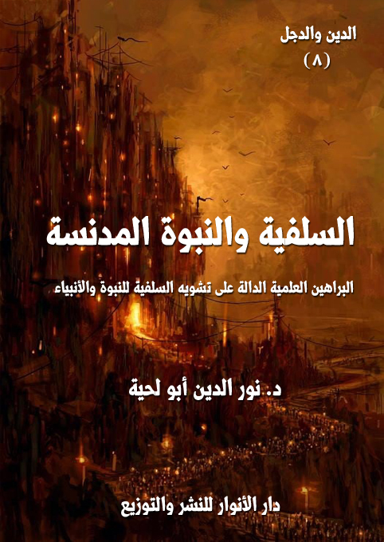

الكتاب: السلفية.. والنبوة المدنسة
المؤلف: أ.د. نور الدين أبو لحية
الناشر: دار الأنوار للنشر والتوزيع
الطبعة: الأولى، 1437 هـ
عدد الصفحات: 205
ISBN: 978-3-330-84471-1
لمطالعة الكتاب من تطبيق مؤلفاتي المجاني وهو أحسن وأيسر: هنا

التعريف بالكتاب
يتناول هذا الكتاب ـ من خلال الأدلة والوثائق الكثيرة ـ التصورات التي تحملها المدرسة السلفية عن النبوة والأنبياء عليهم الصلاة والسلام، وهي تصورات مستمدة من التراث الإسرائيلي الذي فسر به القرآن الكريم، وكتب به التاريخ، ووضعت على أساسه العقائد.
ولذلك، فقد كان لتصورات اليهود لأنبيائهم، وما ذكروه عنهم من انحرافات عقدية وأخلاقية تأثيره الكبير في المدرسة السلفية التي أجاز أئمتها الكبار الرواية عن بني إسرائيل، بل أجازوا الرجوع لكتب بني إسرائيل نفسها.
ولهذا نرى تصورات السلفية للنبوة تختلف عن التصورات التي ذكرها القرآن الكريم، والتي دل عليها العقل، ودل عليها معه الذوق السليم، والفطرة الطاهرة.
وهذا الكتاب يحاول بالبينات الواضحات، ومن خلال المصادر المعتمدة لدى المدرسة السلفية تبيين تلك الصورة المشوهة التي يحملونها عن الأنبياء عليهم الصلاة والسلام.
السلفية.. والنبوة المدنسة (5)
نستطيع من خلال التأمل في أسباب التيه الذي حصل للبشرية من لدن آدم عليه السلام إلى اليوم، وإلى آخر التاريخ، أن نجد سببا واحدا تختصر عنده الأسباب، وتجتمع عنده العلل.. وهذا السبب هو الإعراض عن النبوة، باعتبارها الحبل الممدود من الله إلى عباده، أو الواسطة التي يتصل الله من خلالها بعباده.
ذلك أنه عند الإعراض عن النبوة يدخل الهوى، ويدخل الشيطان، وتدخل أنانية الإنسان التي تصور له أنه يستطيع ـ وبمعزل عن خالقه ـ أن يدبر وجوده، ويقرر مصيره.. بل فوق ذلك تجعله يتصور أنه يستطيع أن يضع خارطة للوجود والقوانين التي تحكمه.
وللإعراض صور كثيرة.. أبرزها ما كان يفعله الملأ مع الأنبياء عليهم الصلاة والسلام من تكذيبهم وإيذائهم والكيد لهم والتنفير منهم.
ومنها تلك الخشونة، وذلك الجفاء الذي تعامل به أصحاب القلوب المريضة معهم، حتى لو لم ينكروا نبوتهم.
ومنها ـ وهو أخطرها ـ ذلك التشويه للنبوة، والتدنيس لقداستها، ليتحول النبي بموجب ذلك إلى إنسان عادي لا يختلف عن أي إنسان آخر.. وتصبح تلك الجوهرة المقدسة التي استطاع النبي من خلالها أن يكون أهلا لتواصل الله معه.. بل لجعله سفيرا من سفرائه.. جوهرة لا تختلف عن كل ما حولها من تراب وحجارة.. وتصبح تلك الشمس الممتلئة بالدفء والنور كوكبا خامدا لا حياة فيه، ولا شعاع يصدر منه.
وعندما نتأمل أكثر.. ونستعين في تأملنا بالقرآن الكريم.. يتوضح لنا أسباب كل هذه الإعراضات عن النبوة الظاهرة والباطنة.. أو ما اكتسى منها حلة المواجهة الصلبة، أو ما اكتسى منها حلة المواجهة الناعمة.
والسبب ـ كما يذكر القرآن الكريم ـ هو الإعراض عن السجود.. فإبليس أعرض
السلفية.. والنبوة المدنسة (6)
عن السجود لآدم.. وهو يريد من ذرية آدم أن يعرضوا عن السجود للأنبياء.. حتى لا يبقى إبليس واحدا في إعراضه.
والسجود بالمفهوم القرآني لا يعني تلك الحركات التي نقوم بها في الصلاة.. وإنما يعني قبل ذلك الخضوع المطلق لله، ولمراد الله، ولاختيار الله.. فلا نتصرف مع الله.. ولا نقترح على الله.
وإبليس تجرأ، فاقترح على الله.. وراح يتهم آدم عليه السلام بأنه ليس أهلا للسجود.. أو راح ـ على الحقيقة ـ يتهم الله بأنه لم يحسن اختيار الخليفة.
ومن هنا بدأ الإعراض عن النبوة.. وكان إبليس أول المعرضين.. وكان أيضا هو أول من عاهد الله على أن يضم إلى صفه أكبر عدد من أولاد هذا الخليفة الذي ابتلي به.
وهكذا كان في كل أمة من الأمة جميع أصناف المعرضين، الذين استنوا بسنة إبليس في عدم الخضوع لاختيار الله.. أو اتهام الله في اختياره.
وبما أن الشيطان لم ييأس من هذه الأمة كما لم ييأس من غيرها من الأمم.. وكما أنه أوجد في اليهودية والمسيحية وكل الديانات من يشوه تلك الجواهر المقدسة.. فقد أوجد في هذه الأمة هذا الصنف الخطير من الناس.
وليس من الصعب أن نكتشفه.. فكل شيء يدل عليه.
ومن باب تسمية الحقائق بأسمائها ـ بعيدا عن كل تزلف ودبلوماسية ـ فإن [السلفية]، أو من يسمون أنفسهم [أهل الحديث]، و[الفرقة الناجية] هم من مثل بجدارة دور هذا النوع من الإعراض عن النبوة.. وهو دور تهميشها وتدنيسها وتشويهها والحط منها.
وهذا الكتاب محاولة للبرهنة على ذلك.. وقد اعتمدنا فيه على المصادر التي يعتبرها السلفية، ويثنون عليها، ويدعون الأمة إلى الأخذ منها.. كما اعتمدنا فيه على التصريحات التي يصرح بها أعلام هذه المدرسة قديمهم وحديثهم.
السلفية.. والنبوة المدنسة (7)
ولم نكن بحاجة لكل ذلك، لأن خطابهم وحده كاف للدلالة على ذلك.. فهم وحدهم في هذه الأمة من يحتقر كل مظاهر التقديس لرسول الله صلى الله عليه وآله وسلم وتعظيمه وتبجيله ومحاولة الوفاء ببعض جميله..
فهم ينكرون الاحتفال بميلاده، وكل مناسبة مرتبطة به.. وهم ينكرون زيارة قبره الشريف، بل يعتبرون نفس نية الزيارة شركا بالله.. وهم ينكرون على كل شاعر جادت قريحته بحب رسول الله صلى الله عليه وآله وسلم، ويعتبرونه مشركا وكافرا وضالا.. بينما لا يقولون شيئا فيمن مدح الملوك والأمراء.. فهم لا يعتبرونه لا مشركا ولا ضالا.
وهكذا لو تأملنا مواقفهم المختلفة من رسول الله صلى الله عليه وآله وسلم نجدهم يقفون دائما على خط مختلف لخط سائر الأمة..
وهذا الموقف من رسول الله صلى الله عليه وآله وسلم هو نفس الموقف الذي يقفونه من سائر الأنبياء عليهم الصلاة والسلام.. ولهذا ملأوا دواوينهم التي يسمونها كتب العقيدة السنية بمثالب الأنبياء ومعاصيهم.. بل وكفرهم.. لأنهم يخشون أن يتعلق الناس بالأنبياء تعلقا زائدا يجرهم إلى الشرك.. أو يجعلهم يقومون بالسجود لذلك الكمال الذي وهبه الله لهم.
ولم يقتصر أمر السلفية والمنابع التي يستمدون منها على سفراء الله في الأرض من الأنبياء والرسل.. وإنما تعداه إلى سفرائه من الملائكة، وقد ذكرنا بتفصيل في كتابنا [السلفية.. والوثنية المقدسة] تلك الصور المشوهة التي يحملونها عن الملائكة عليهم السلام، واعتبار كبارهم ومقربيهم على هيئة أوعال وأسود وديوك، مع أن الله تعالى قال ـ على لسان نسوة مصر ـ: {حَاشَ لِلَّهِ مَا هَذَا بَشَرًا إِنْ هَذَا إِلَّا مَلَكٌ كَرِيمٌ} [يوسف: 31]، بل قال مقررا هذه الحقيقة العظيمة عند ذكره لجبريل عليه السلام: {عَلَّمَهُ شَدِيدُ الْقُوَى (5) ذُو مِرَّةٍ فَاسْتَوَى} [النجم: 5، 6]
لكن السلفية لا يأبهون بما يقول القرآن الكريم.. فهم يحجرون التدبر في القرآن إلا
السلفية.. والنبوة المدنسة (8)
على السلف.. أو بالأحرى على تلاميذ كعب الأحبار من السلف.
ولهذا نراهم يخالفون القرآن الكريم في صفات الأنبياء وخصائصهم وكمالاتهم وكون الله اختارهم، وهو أعلم باختياره، و{اللَّهُ أَعْلَمُ حَيْثُ يَجْعَلُ رِسَالَتَهُ} [الأنعام: 124]
وبناء على هذا نراهم يدافعون عما يسمونه معاصي الأنبياء، ويستدلون لذلك بما ورثوه من سلفهم من روايات وأخبار تطعن فيهم وفي كمالاتهم.. كما قال ابن تيمية ـ أثناء رده على القائلين بالعصمة المطلقة للأنبياء ـ: (تبعهم في هذا الباب، بل كتب التفسير والحديث والآثار والزهد وأخبار السلف مشحونة عن الصحابة والتابعين بمثل ما دل عليه القرآن، وليس فيهم من حرف الآيات كتحريف هؤلاء، ولا من كذب بما في الأحاديث كتكذيب هؤلاء، ولا من قال هذا يمنع الوثوق، أو يوجب التنفير ونحو ذلك كما قال هؤلاء، بل أقوال هؤلاء الذين غلوا بجهل من الأقوال المبتدعة في الإسلام.. وهم قصدوا تعظيم الأنبياء بجهل كما قصدت النصارى تعظيم المسيح وأحبارهم ورهبانهم بجهل، فأشركوا بهم واتخذوهم أربابا من دون الله وأعرضوا عن اتباعهم فيما أمروهم به ونهوهم عنه) (1)
بل إن ابن تيمية وغيره من أبناء المدرسة السلفية يثنون الثناء العطر على كل الكتب التي تمتلئ بالقصص والأساطير، والتي تشوه الأنبياء عليهم الصلاة والسلام وترميهم بالعظائم، بل هم فوق ذلك يعتبرونها من كتب السنة، وأنها في هذا الموضوع بالذات أعرف بالأنبياء من كتب المنزهة، يقول ابن تيمية: (.. من أئمة أهل التفسير، الذين ينقلونها بالأسانيد المعروفة، كتفسير ابن جريج، وسعيد بن أبي عروبة، وعبد الرزاق، وعبد بن حميد، وأحمد، وإسحاق وتفسير بقي بن مخلد وابن جرير الطبري، ومحمد بن أسلم الطوسي، وابن
__________
(1) منهاج السنة النبوية (2/ 435)
السلفية.. والنبوة المدنسة (9)
أبي حاتم، وأبي بكر بن المنذر، وغيرهم من العلماء الأكابر، الذين لهم في الإسلام لسان صدق، وتفاسيرهم متضمنة للمنقولات التي يعتمد عليها في التفسير) (1)
وقال مدافعا عن الإسرائيليات الكثيرة الواردة في تلك الكتب، والتي شوهت الأنبياء عليهم الصلاة والسلام أيما تشويه: (ولهذا كان السلف من الصحابة والتابعين لهم بإحسان وغيرهم من أئمة المسلمين متفقين على ما دل عليه الكتاب والسنة من أحوال الأنبياء، لا يعرف عن أحد منهم القول بما أحدثته المعتزلة والرافضة ومن تبعهم في هذا الباب، بل كتب التفسير والحديث والآثار والزهد وأخبار السلف مشحونة عن الصحابة والتابعين بمثل ما دل عليه القرآن، وليس فيهم من حرف الآيات كتحريف هؤلاء، ولا من كذب بما في الأحاديث كتكذيب هؤلاء، ولا من قال هذا يمنع الوثوق، أو يوجب التنفير ونحو ذلك كما قال هؤلاء، بل أقوال هؤلاء الذين غلوا بجهل من الأقوال المبتدعة في الإسلام) (2)
وهكذا نرى ابن تيمية يعتبر الروايات المشوهة لجمال وعصمة الأنبياء سنة، في نفس الوقت الذي يعتبر فيه تنزيه الأنبياء والقول بطهارتهم تحريفا وبدعة.
ولهذا، فإنا كما قسمنا الأمة في كتاب [السلفية والوثنية المقدسة] إلى صنفين: المنزهة والمجسمة، فكذلك يمكن تصنيف الأمة في هذا المجال إلى صنفين: المصوبة والمخطئة.. أو القائلون بالعصمة المطلقة.. والقائلون بالتخطئة المطلقة.
وقد اعتمدنا في الأدلة التي نسوقها على التصريحات الكثيرة التي وردت من أعلام السلفية في القديم والحديث، بالإضافة للروايات التي يروونها، والتي يمكن تقسيمها إلى نوعين:
__________
(1) منهاج السنة النبوية (7/ 179)
(2) منهاج السنة النبوية (2/ 434)
السلفية.. والنبوة المدنسة (10)
وهي الروايات التي يصححونها، بل ينقلونها في كتبهم كحقائق مطلقة يبدعون جاحدها، ويتهمونه بالهرطة والزندقة.. وهي التي نبدأ بها عادة عند مناقشاتنا معهم.
وحجتهم في هذه الروايات أنها وردت في الصحيحين أو في أحدهما أو في كتب السنن الأخرى.. أو أن فلانا من الناس صححها.
وهم يقصرون نظرهم على تلك التصحيحات، وينسون المخاطر التي تحملها، والتي سننبه عليها في هذا الكتاب.
والطريقة التي يتعامل بها السلفية مع المخالف لهذا النوع من الروايات هو تلك الطريقة التي استعملوها مع المنزهة من رميهم بالتجهم.. وهنا يرمونه بالعقلانية والبدعة والزندقة..
ومن الأمثلة على ذلك موقف السلفية من الشيخ محمد الغزالي لرفضه حديث لطم موسى عليه السلام لملك الموت، والذي رواه أبوه هريرة، ونصه: (إن ملك الموت كان يأتي الناس عيانا فأتى موسى فلطمه ففقأة عينه، فعرج ملك الموت فقال: يا رب! إن عبدك موسى فعل بي كذا وكذا ولولا كرامته عليك لشققت عليه فقال الله: ايت عبدي موسى فخيره بين أن يضع يده على متن ثور - فله بكل شعرة وارتها كفه سنة - وبين أن يموت الآن، فخيره فقال موسى: فما بعد ذلك؟ قال: الموت، قال: فالآن فشمه شمة فقبض روحه ورد الله عليه عينه، فكان بعد يأتي الناس في خفية) (1)
ولغرابة هذا الحديث، وتشويهه لصورة النبي موسى عليه السلام، وتشويهه كذلك لصورة ملك الموت، بل تشويهه فوق ذلك للألوهية، وما يحمله من الدلالة على التجسيم، فقد وقف
__________
(1) أحمد (2/ 351، رقم 8601)، والبخارى (1/ 449، رقم 1274)، ومسلم (4/ 1843، رقم 2372) النسائى (4/ 118، رقم 2089)، وابن حبان (14/ 113، رقم 6223)، والحاكم (2/ 632، رقم 4107)
السلفية.. والنبوة المدنسة (11)
الشيخ محمد الغزالي موقف المنكر للحديث مثله مثل كل المنزهة والقائلين بعصمة الأنبياء، لكن هذا لم يعجب السلفية الذين أنكروا عليه إنكارا شديدا.
وقبل أن نذكر موقفهم منه نذكر موقف الشيخ محمد الغزالي من الحديث، فقد قال: (وقع لي وأنا بالجزائر أن طالباً سألني: أصحيح أن موسى عليه السلام، فقأ عين ملك الموت عندما جاء لقبض روحه بعدما استوفى أجله؟ فقلت للطالب وأنا ضائق الصدر: وماذا يفيد هذا الحديث؟ إنه لا يتصل بعقيدة، ولا يرتبط به عمل، والأمة الإسلامية اليوم تدور عليها الرحى وخصومها طامعون في إخماد أنفاسها! اشتغل بما هو أهم وأجدى! قال الطالب: أحببت أن أعرف هل الحديث صحيح أم لا؟ فقلت له متبرماً: الحديث مروي عن أبي هريرة وقد جادل البعض في صحته. وعدت لنفسي أفكر إن الحديث صحيح السند، ولكن متنه يثير الريبة إذ يفيد أن موسى يكره الموت ولا يحب لقاء الله بعدما انتهى أجله. وهذا المعنى مرفوض بالنسبة إلى الصالحين من عباد الله كما جاء في الحديث الآخر (من أحب لقاء الله أحب الله لقاءه) فكيف بأنبياء الله؟ كيف بواحد من أولي العزم؟ إن كراهيته للموت بعدما جاءه ملكه مستغرب ثم هل الملائكة تعرض لها العاهات التي تعرض للبشر من عمى أو عور؟ ذاك بعيد.. قلت: لعل متن الحديث معلول، وأيا ما كان الأمر، فليس لدي ما يدفعني إلى إطالة الفكر فيه.. فلما رجعت إلى الحديث في أحد مصادره ساءني أن الشارح جعل رد الحديث إلحاداً وشرع يفند الشبهات الموجهة إليه فلم يزدها إلا قوة..) (1)
ثم ذكر قول المازري: (وقد أنكر بعض الملاحدة هذا الحديث وأنكر تصوره، قالوا: كيف يجوز على موسى فقء عين ملك الموت؟)، ودفاعه عن الحديث، ثم رد عليها بقوله: (نقول نحن: هذا الدفاع كله خفيف الوزن وهو دفاع تافه لا يساغ، ومن وصم منكر الحديث بالإلحاد فهو يستطيل في أعراض المسلمين والحق أن في متنه علة قادحة تنزل به عن
__________
(1) السنة النبوية بين أهل الفقه وأهل الحديث (ص:26 - 29)
السلفية.. والنبوة المدنسة (12)
مرتبة الصحة ورفضه أو قبوله خلاف فكري، وليس خلافاً عقائدياً والعلة في المتن يبصرها المحققون، وتخفى على أصحاب الفكر السطحي، وقد رفض الأئمة أحاديث صح سندها واعتل متنها فلم تستكمل بهذا الخلل شروط الصحة) (1)
هذا هو موقف الشيخ محمد الغزالي، وهو موقف كل عاقل حكيم يرى تلك التشويهات التي يحملها الحديث حول كبرى القضايا العقدية.
لكن هذا الموقف لم يعجب السلفية الذين صوبوا سهامهم من كل صوب نحوه، يتهمونه بإنكار السنة، وبالجرأة على السنة.. وكأن السنة حكر عليهم.
ومن تلك المواقف موقف الألباني الذي قال تعليقا على ما ذكره الغزالي: (هذا الحديث- أي حديث موسى المتقدم- من الأحاديث الصحيحة المشهورة التي أخرجها الشيخان من طرق عن أبي هريرة- رضي الله عنه-، وتلقته الأمة بالقبول، وقد جمعت ألفاظها والزيادات التي وقعت فيها، وسقتها لك سياقاً واحداً كما ترى؛ لتأخذ القصة كاملة بجميع فوائدها المتفرقة في بطون مصادرها، الأمر الذي يساعدك على فهمها فهماً صحيحاً، لا إشكال فيه ولا شبهة، فتسلِّم لقول رسول الله صلى الله عليه وآله وسلم تسليماً) (2)
ثم ساق طرق الحديث، والتي يوجد في أكثرها رجال من اليهود الذين أسلموا، وصاروا مباشرة بعد إسلامهم من الثقاة المعتبرين، ثم قال تعليقا على الغزالي: (واعلم أن هذا الحديث الصحيح جدّاً مما أنكره بعض ذوي القلوب المريضة من المبتدعة- فضلاً عن الزنادقة- قديماً وحديثاً، وقد رد عليهم العلماء- على مر العصور- بما يشفي ويكفي من كان راغباً السلامة في دينه وعقيدته؛ كابن خزيمة، وابن حبان، والبيهقي، والبغوي، والنووي، والعسقلاني، وغيرهم.. وممن أنكره من المعاصرين الشيخ الغزالي في كتابه (السنة بين أهل
__________
(1) السنة النبوية بين أهل الفقه وأهل الحديث (ص:26 - 29)
(2) السلسلة الصحيحة (7/من 826 إلى 835)
السلفية.. والنبوة المدنسة (13)
الفقه وأهل الحديث) المذكور في الحديث الذي قبله، بل وطعن في الذين دافعوا عن الحديث، فقال: (وهو دفاع تافه لا يساغ)، وهكذا؛ فالرجل ماضٍ في غيّه، والطعن في السنة والذابين عنها بمجرد عقله (الكبير!). ولست أدري- والله- كيف يعقل هذا الرجل- إذا افترضنا فيه الإيمان والعقل-! كيف يدخل في عقله أن يكون هؤلاء الأئمة الأجلة من محدِّثين وفقهاء من الإمام البخاري إلى الإمام العسقلاني على خطأ في تصحيحهم هذا الحديث، ويكون هو وحده- صاحب العقل الكبير! - مصيباً في تضعيفه إياه ورده عليهم؟!) (1)
ولا يكتفي الألباني بهذا، بل يشنع عليه ـ كعادة السلفية في انتقادهم لخصومهم ـ أنه يوافق في هذا الموقف المبتدعة من القائلين بالعصمة المطلقة للأنبياء، فيقول: (هل الخلاف الذي توهمه خلاف محترم أم هو خلاف ساقط الاعتبار، لأن المخالف ليس من العلماء المحترمين، ولذلك لم تتجرأ على تسميته، ولعله من الخوارج أو الشيعة الذين يطعنون في أصحاب النبي صلى الله عليه وآله وسلم، وبخاصة راوي هذا الحديث (أبي هريرة) - رضي الله عنه-. وثانياً: يحتمل أن يكون المجادِل الذي أشرتَ إليه هو أنت، وحينئذٍ فبالأولى، أن يكون خلافك ساقط الاعتبار، كما هو ظاهر كالشمس في رائعة النهار!) (2)
وهكذا يستمر الألباني ـ بلغته السلفية ـ يرد على الغزالي، ويدافع عن الحديث، ويقول له كل حين: (يا له من مغرور أهلكه العجب! لقد جعل نفسه من المحققين، وعلماء الأمة من أصحاب الفكر السطحي، والحقيقة أنه هو العلة؛ لجهله وقلة فهمه) (3)
ويقول له: (بمثل هذا الفهم المنكوس يرد هذا الرجل أحاديث النبي صلى الله عليه وآله وسلم ولا يكتفي
__________
(1) المرجع السابق.
(2) المرجع السابق.
(3) المرجع السابق.
السلفية.. والنبوة المدنسة (14)
بذلك، بل ويرد على العلماء كافة الذين فهموه وشرحوه شرحاً صحيحاً، وردوا على أمثاله من أهل الأهواء الذين يسيئون فهم الأحاديث ثم يردونها، وإنما هم في الواقع يردون جهلهم، وهي سالمة منه والحمد لله) (1)
وقد اقتصرنا هنا على موقف الألباني باعتبار كبر سنه، ومكانته، وإلا فإننا لو نزلنا إلى غيره من أعلام السلفية لوجدنا قواميس من الشتائم تكال للغزالي بسبب موقفه العقلاني من الحديث.
وهي الروايات التي وردت في كتبهم التي يعتبرونها كتب سنة، وينصحون العامة بقراءتها، والاستفادة منها، وهي كثيرة جدا، وخطيرة جدا، ومع ذلك لا نجدهم ينفرون العوام منها، والحيلة التي يستعملونها مع هذا النوع من الروايات مع المخالفين أو المنتقدين هي أن يذكروا أن الحديث الفلاني ضعفه الألباني، أو لم يحتج به الأرناؤوط، لأن مثل ذلك مثل شركات السجائر التي تغرق السوق بالسجائر، وهي تعلم خطرها، ولترفع العتب عنها تكتب على الغلاف [مضر بالصحة]
وهكذا يفعل السلفيون الذين نشروا مئات الأحاديث التي تشوه الأنبياء، وتدنس معهم النبوة، ثم تنصح الأمة بالاستفادة من ذلك التراث المملوء بتلك التشويهات.. وتذكر لهم أن من أخذ به كان سنيا وسلفيا وناجيا.. ثم بعد أن تمتلئ عقول الناس وقلوبهم بكل تلك التشويهات يأتي رجل في آخر الزمان، ويقول لهم: الحديث الفلاني فيه نكارة.. والآخر فيه علة.. وهو مع قوله ذلك لا يزال ينصح بقراءة تلك الكتاب التي تحوي تلك النكارات، وتنشر تلك العلل.. ولا يزال يصر على أن أصحاب تلك الكتب سنة وسلفيون.
__________
(1) المرجع السابق.
السلفية.. والنبوة المدنسة (15)
وكمثال على ذلك كتاب تفسير الطبري الذي يعتبر أكبر مصدر لتدنيس النبوة والأنبياء، ومع ذلك نجد ثناء أعلام السلفية عليه قديما وحديثا.
يقول الخطيب البغدادي (المتوفى: 463 هـ) ـ وهو من أعلام السلفية المتقدمين ـ في ترجمته لمحمد بن جرير الطبري صاحب التفسير: (استوطن الطبري بغداد وأقام بِهَا إِلَى حين وفاته، وكَانَ أحد أئمة العلماء: يحكم بقوله، ويرجع إلى رأيه لمعرفته وفضله. وكان قد جمع من العلوم ما لم يشاركه فيه أحد من أهل عصره، وكان حافظا لكتاب الله، عارفا بالقراءات، بصيرا بالمعاني، فقيها في أحكام القرآن، عالما بالسنن وطرقها، وصحيحها وسقيمها، وناسخها ومنسوخها، عارفا بأقوال الصحابة والتابعين، ومن بعدهم من الخالفين في الأحكام، ومسائل الحلال والحرام، عارفا بأيام الناس وأخبارهم، وله الكتاب المشهور في (تاريخ الأمم والملوك)، وكتاب في التفسير لم يصنف أحد مثله) (1)
وحكى الخطيب هذه الرواية التي يهتم بها السلفية عند ذكرهم لهمم السلف، وهي الطبري قَالَ لأصحابه: أتنشطون لتفسير القرآن. قالوا: كم يكون قدره؟ فقال ثلاثون ألف ورقة، فقالوا: هذا مما تفنى الأعمار قبل تمامه، فاختصره في نحو ثلاثة آلاف ورقة. ثم قَالَ: هل تنشطون لتاريخ العالم من آدم إلى وقتنا هذا؟ قالوا: كم يكون قدره؟ فذكر نحوا مما ذكره في التفسير فأجابوه بمثل ذلك.. فقال: إنا لله، ماتت الهمم (2).
وهذه الرواية توضح لنا سر لقب الحشوية الذي أطلق على السلفية.. فهم يبحثون عن الكم لا عن النوع.. وعن التفاصيل لا عن الحقائق..
وهكذا نجد الذهبي المعروف بتشدده في الرجال يثني عليه وعلى تفسيره، فيقول: (كان ثقة، صادقًا، حافظًا، رأسًا في التفسير، إمامًا في الفقه والإجماع والاختلاف، علاَّمةً في
__________
(1) تاريخ بغداد وذيوله (2/ 161)
(2) تاريخ بغداد وذيوله (2/ 161)
السلفية.. والنبوة المدنسة (16)
التاريخ وأيام الناس، عارفًا بالقراءات وباللغة، وغير ذلك) (1)
أما ابن تيمية، فلم يكن يدع مناسبة إلا ويثني عليه وعلى تفسيره، بل يعتبره من أمهات كتب السنة.
ومن أمثلة ذلك قوله عنه: (تفسير محمد بن جرير الطبري، وهو من أجلِّ التفاسير المأثورة، وأعظمها قدرًا) (2)
وقال ـ مجيبًا عن أحسن التفاسير ـ: (أما التفاسير التي في أيدي الناس فأصحها تفسير محمد بن جرير الطبري، فإنه يذكر مقالات السلف بالأسانيد الثابتة، وليس فيه بدعة، ولا ينقل عن المتهمين، كمقاتل بن بكير، والكلبي) (3)
فهذه التزكية من ابن تيمية تدل على مدى أهمية الكتاب عنده وعند السلفية، ولذلك اعتبرناه من مصادرنا التي اعتمدنا عليها في هذه الدراسة، ولولا أن ابن تيمية قال عنه هذا لما اعتبرناه كذلك، لأنا شرطنا على أنفسنا أن لا نقول السلفية ـ كما لا نقول غيرهم ـ ما لم يقولوا.
ومن الكتب التي اعتمدناها في هذا النوع من الروايات تفسير ابن أبي حاتم المتوفى سنة (327) صاحب (الجرح والتعديل)، والمعاصر لابن جرير الطبري، وهو من رجال السلفية المعتمدين، وقد أثنى عليه ابن تيمية كثيرا، حيث عده في (مجموع الفتاوى) من أهل العلم والسنة (4).. وعده في (منهاج السنة) من أئمة التفسير.. ومن أهل العلم الكبار (5)
وفوق ذلك كله أثنى على تفسيره، حيث اعتبره من أئمة التفسير الذين ينقلونها
__________
(1) سير أعلام النبلاء (14/ 270)
(2) مجموع الفتاوى (13/ 361)
(3) مجموع الفتاوى (13/ 385)
(4) مجموع الفتاوى (3/ 382)
(5) منهاج السنة (7/ 212)
السلفية.. والنبوة المدنسة (17)
بالأسانيد المعروفة (1).
بل شهد له بالصحة، فقال في (مجموع الفتاوى): (وابن أبي حاتم قد ذكر في أول كتابه في التفسير أنه طلب منه إخراج تفسير القرآن مختصرًا بأصح الأسانيد، وأنه تحرى إخراجه بأصح الأخبار إسنادًا، وأشبعها متنًا، وذكر إسناده عن كل من نقل عنه شيئًا) (2)
ومن الكتب التي اعتمدناها في هذا النوع من الروايات تفسير ابن عطية (المتوفى سنة 542) الذي أشاد به تيمية، فقال: (وتفسير ابن عطية وأمثاله: أتبع للسنة والجماعة، وأسلم من البدعة من تفسير الزمخشري، ولو ذكر كلام السلف الموجود في التفاسير المأثورة عنهم على وجهه لكان أحسن وأجمل، فإنه كثيرًا ما ينقل تفسير محمد بن جرير الطبري، وهو من أجل التفاسير المأثورة، وأعظمها قدرًا. ثم إنه يدع ما نقله ابن جرير عن السلف، لا يحكيه بحال، ويذكر ما يزعم أنه قول المحققين، وإنما يعني بهم طائفة، من أهل الكلام، الذين قرروا أصولهم، وإن كانوا أقرب إلى السنة من المعتزلة، لكن ينبغي أن يعطى كل ذي حق حقه، ويعرف أن هذا من جملة التفسير على المذهب. فإن الصحابة، والتابعين، والأئمة إذا كان لهم في تفسير الآية قول، وجاء قوم فسروا الآية بشكل آخر لأجل مذهب اعتقدوه، وذلك المذهب ليس من مذاهب الصحابة، والتابعين لهم بإحسان صاروا مشاركين للمعتزلة، وغيرهم من أهل البدع في مثل هذا) (3)
هذا قول ابن تيمية فيه، ونقده له ليس لإيراده الإسرائيليات، وإنما لتأويله بعض النصوص التي يستند إليها السلفية في التجسيم.. وهو بذلك ينتقد حسناته لا سيئاته.
ولهذا يقول عنه في موضع آخر: (وتفسير بن عطية خير من تفسير الزمخشري وأبعد
__________
(1) منهاج السنة (7/ 178)
(2) مجموع الفتاوى (15/ 201)
(3) مجموع الفتاوى (13/ 361)
السلفية.. والنبوة المدنسة (18)
عن البدع، وإن اشتمل على بعضها، بل هو خير منه بكثير، بل لعله أرجح هذه التفاسير، لكن تفسير ابن جرير أصح من هذه كلها) (1)
ومن الكتب التي اعتمدناها في هذا النوع من الروايات تفسير البغوي (توفي سنة 510)، الذي سُئل عنه ابن تيمية هذا السؤال: (أي التفاسير أقرب إلى الكتاب والسنة الزمخشري، أم القرطبي، أم البغوي، أم غير هؤلاء؟)، فقال: (أما التفاسير الثلاثة المسئول عنها فأسلمها من البدعة، والأحاديث الضعيفة البغوي، لكنه مختصر من تفسير الثعلبي، وحذف منه الأحاديث الموضوعة، والبدع التي فيه، وحذف أشياء غير ذلك) (2)
وقال عنه في مقدمة أصول التفسير في (مجموع الفتاوى): (والبغوي تفسيره مختصر من الثعلبي لكن صان تفسيره عن الأحاديث الموضوعة، والآراء المبتدعة) (3)
هذه بعض مصادرنا الكبرى التي اعتمدنا عليها في النوع الثاني من الروايات، وقد ذكرناها وذكرنا موقف ابن تيمية منها حتى لا يقول أحد من الناس: إننا ندعي على السلفية، أو نقولهم ما لم يقولوا.
فهم الذين يقرون باعتبار هذه المصادر مصادرهم.. وأن كتبتها من أهل سنتهم، بل من سلفهم الصالح.. أما إنكارهم لبعض ما فيها، فهو أنكار باهت ضعيف بجنت الجرائم الكبيرة التي تفوح بها الروايات الواردة في تلك المصادر.
وأما اعتمادنا على شهادات ابن تيمية، فلمكانته المعروفة بينهم في كل شيء، وقد قال بعضهم معاتبا من انتقد ابن تيمية في بعض الأحاديث: (كلام شيخ الإسلام في هذا التفسير كان كلام خبير، ومطلع على ما فيه من حسن وقبح، وليس هو بالظن والتخمين كما يظنه
__________
(1) مجموع الفتاوى (13/ 385)
(2) مجموع الفتاوى (13/ 386)
(3) أصول التفسير في مجموع الفتاوى (13/ 354)
السلفية.. والنبوة المدنسة (19)
الباحث؛ لأن مثل هذا الكلام لا يستطيع أن يقوله أحد في أي كتاب مستقل، أو تلخيص إلا بعد قراءة متأنية، وكلام شيخ الإسلام حول هذا التفسير في أماكن متعددة يفيدنا بأن هذا التفسير اختصار من تفسير الثعلبي والواحدي، وأنه حذف منه الأحاديث الضعيفة والموضوعة، والآراء المبتدعة، كما حذف أشياء أخرى، وسبب حذف هذه الأشياء ثقافته الواسعة في الدين، والعقيدة، والحديث، والفقه. وأما ما اعتمد فيه على الثعلبي هو أقوال المفسرين، والنحاة، وقصص الأنبياء، فهذه الأمور نقلها منه) (1)
ونحب أن نذكر أن ابن تيمية الذي راح يدعو إلى قراءة تلك الكتب المشحونة بتشويه الأنبياء لم يكتف بذلك، بل راح يحذر من الكتب الممتلئة بالروحانيات العميقة كتفاسير الصوفية، فقد قال في تفسير السلمي (توفي في 410)، وهو من التفاسير الصوفية المعتدلة: (وأما الذين يخطئون في الدليل لا في المدلول فمثل كثير من الصوفية، والوعاظ، والفقهاء، وغيرهم يفسرون القرآن بمعانٍ صحيحة، لكن القرآن لا يدل عليها، مثل كثير مما ذكره أبو عبد الرحمن السلمي في (حقائق التفسير)، وإن كان فيما ذكروه ما هو معان باطلة، فإن ذلك يدخل في القسم الأول، وهو الخطأ في الدليل والمدلول جميعًا، حيث يكون المعنى الذي قصدوه فاسدًا) (2)
وهكذا موقفه من التفاسير التي حاولت أن تقرأ القرآن الكريم قراءة عقلانية على مقتضى اللغة كتفسير الزمخشري (توفي 538)، والمسمى (الكشاف عن حقائق التنزيل)، فقد قال فيه محذرا منه: (وأما الزمخشري فتفسيره محشو بالبدعة، وعلى طريقة المعتزلة من إنكار الصفات، والرؤية والقول بخلق القرآن، وأنكر أن الله مريد للكائنات، وخالق
__________
(1) عبد الرحمن عبد الجبار الفريوائي في كتابه (شيخ الإسلام ابن تيمية وجهوده في الحديث وعلومه)
(2) مجموع الفتاوى (13/ 362)
السلفية.. والنبوة المدنسة (20)
لأفعال العباد، وغير ذلك من أصول المعتزلة) (1)
وهكذا لا يجد القارئ السلفي مصدرا يتلقى منه فهم القرآن إلا تلك الكتب المشحونة بالإسرائيليات.. والتي يمكن تعريفها بأنها [التفسير الإسرائيلي للقرآن الكريم]
بالإضافة إلى هذا، وإلى ما ذكرنا من أنواع الروايات فإن الشبهة العظمى التي يستند إليها السلفية في تسويق بضاعتهم المدنسة للأنبياء عليهم الصلاة والسلام هو دعوى رجوعهم للسلف..
وعندما نبحث عن سلفهم في تلك الروايات لا نجد كبار الصحابة من السابقين الأولين من المهاجرين والأنصار.. فلا نجد بلالا ولا عمارا ولا أبا ذر ولا غيرهم من الصحابة الذين ضحوا بدمائهم في سبيل نصرة الإسلام.
ولا نجد كذلك أصحاب بدر وأحد وغيرها من الغزوات..
ولا نجد الكثير من الأنصار الذين {تَبَوَّءُوا الدَّارَ وَالْإِيمَانَ مِنْ قَبْلِهِمْ يُحِبُّونَ مَنْ هَاجَرَ إِلَيْهِمْ وَلَا يَجِدُونَ فِي صُدُورِهِمْ حَاجَةً مِمَّا أُوتُوا وَيُؤْثِرُونَ عَلَى أَنْفُسِهِمْ وَلَوْ كَانَ بِهِمْ خَصَاصَةٌ} [الحشر: 9]
وإنما نجد فقط أولئك الذين حذر منهم رسول الله صلى الله عليه وآله وسلم من اليهود، أو الذين خالفوا رسول الله صلى الله عليه وآله وسلم في تحذيره من الاستفادة منهم، كما ورد في الحديث الصحيح الذي وضع فيه رسول الله صلى الله عليه وآله وسلم الحصن الذي يتحصن به دين الأمة من أن يختلط بغيره من الأديان، فيتسرب إليه المشروع الشيطاني، ليحرفه كما حرف سائر الأديان.
والحديث معروف، وكررناه كثيرا.. ولا نزال نكرره.. لأنه لا يمكن للأمة أن تفهم دينها، وهي تخلطه بالتراث الإسرائيلي.
ونص الحديث هو أن عمر أتى رسول الله صلى الله عليه وآله وسلم بكتاب أصابه من بعض أهل الكتاب،
__________
(1) مجموع الفتاوى (13/ 386)
السلفية.. والنبوة المدنسة (21)
فغضب، وقال: (أمتهوكون فيها يا ابن الخطاب؟! والذي نفسي بيده، لقد جئتكم بها بيضاء نقية، لا تسألوهم عن شيء فيخبروكم بحق فتكذبوا به أو بباطل فتصدقوا به، والذي نفسي بيده لو أن موسى - صلى الله عليه وآله وسلم - كان حيا ما وسعه إلا أن يتبعني) (1)
وقد نسخ السلفية هذا الحديث ـ كما ذكرنا مرات كثيرة ـ بحديث وضعوه بدلا منه، وهو: (لا تكتبوا عني شيئا غير القرآن، فمن كتب عني شيئا غير القرآن فليمحه.. وحدثوا عن بني إسرائيل ولا حرج) (2)
وهذا من العجائب.. فكيف ينهى رسول الله صلى الله عليه وآله وسلم عن كتابة حديثه، وفي نفس الوقت يجيز الحديث عن بني إسرائيل.. وهو الذي غضب تلك الغضبة الشديدة، وأخبر أن دينه أبيض نقي.. وأن خلطهم له بغيره من الأديان سيشوهه، ويدنسه، بل يحوله إلى دين بشري، بدلا أن يكون دينا إلهيا.
ولهذا نجد السلفية يحاولون ـ للبرهنة على جواز الاستفادة من كتب أهل الكتب في هذا المجال كما أجازوه في سائر المجالات ـ إرجاع جواز ذلك إلى السلف الأول، وخصوصا عمر بن الخطاب الذي اعتبروه أول من قرب كعب الأحبار، وأنه هو الذي سمح له بالحديث عن قصص الأنبياء كما هي في كتب أهل الكتاب.. ولسنا ندري مدى دقة ذلك، وكيف لم يخف عمر أن يختلط هذا الدين باليهودية، كما خاف أن تختلط أحاديث رسول الله صلى الله عليه وآله وسلم بالقرآن الكريم، فنهى عن كتابتها.
قال ابن كثير ـ مبينا موقف السلفية من هذا ـ: (... فإن كعب الأحبار لما أسلم في زمن عمر كان يتحدث بين يدي عمر بن الخطاب رضي الله عنه بأشياء من علوم أهل الكتاب، فيستمع له عمر تأليفا له وتعجبا مما عنده مما يوافق كثير منه الحق الذي ورد به الشرع المطهر،
__________
(1) مسند أحمد: 3/ 387 ح (15195)
(2) البخاري (6/ 496 رقم 3461) والترمذي (7/ 431 - 432 رقم 2806)
السلفية.. والنبوة المدنسة (22)
فاستجاز كثير من الناس نقل ما يورده كعب الأحبار لهذا المعنى، ولما جاء من الإذن في التحديث عن بني إسرائيل) (1)
بل إننا من خلال الروايات التي ينقلونها عن العلاقة بين كعب الأحبار وعمر نكاد نصدق أنه تحول إلى مستشاره الديني الخاص، ومن تلك الرويات ما أورده ابن تيمية في قوله: (لما دخل عمر بن الخطاب رضي الله عنه البيت المقدس وأراد أن يبني مصلى للمسلمين: قال لكعب؟ أين أبنيه؟ قال ابنه خلف الصخرة. قال: خالطتك يهودية يا ابن اليهودية؛ بل أبنيه أمامها [وذلك لأن اليهود تعظم تلك الصخرة]، ولهذا كان عبد الله بن عمر إذا دخل بيت المقدس صلى في قبليه ولم يذهب إلى الصخرة. وكانوا يكذبون ما ينقله كعب: أن الله قال لها: أنت عرشي الأدنى ويقولون: من وسع كرسيه السموات والأرض كيف تكون الصخرة عرشه الأدنى؟) (2)
ومن تلك الروايات ما رووه أن عمر أنه قال لكعب: (أنشدك الله يا كعب أتجدني خليفة أم ملكا؟ قال: بل خليفة فاستحلفه، فقال كعب: خليفة والله من خير الخلفاء وزمانك خير زمان) (3)
بل إنهم جعلوه مستشارا لعائشة أيضا، فقد رووا عن عبد الله بن الحارث قال: كنت عند عائشة وعندها كعب الحبر، فذكر إسرافيل، فقالت عائشة: يا كعب أخبرني عن إسرافيل، فقال كعب: عندكم العلم، فقالت: أجل فأخبرني، قال: له أربعة أجنحة جناحان في الهواء وجناح قد تسربل به وجناح على كاهله والعرش على كاهله والقلم على أذنه فإذا نزل الوحي كتب القلم ثم درست الملائكة وملك الصور جاث على إحدى ركبتيه وقد
__________
(1) البداية والنهاية (1/ 34 - 35)
(2) مجموع الفتاوى (15/ 153)
(3) رواه نعيم بن حماد في الفتن، ص 241.
السلفية.. والنبوة المدنسة (23)
نصبت الأخرى فالتقم الصور محني ظهره شاخص بصره إلى إسرافيل وقد أمر إذا رأى إسرافيل قد ضم جناحه أن ينفخ في الصور فقالت عائشة: هكذا سمعت رسول الله صلى الله عليه وآله وسلم يقول) (1)
والمشكلة أن القاعدة التي طبقت على سائر الرواة من أنه من عرف الكذب عنه، ولو مرة واحدة يطرد من قائمة الرواة الموثوقين.. لكن السلفية لم يطبقوا هذا مع كعب الأحبار وغيره من اليهود، بل جعلوهم من المستثنين، بل دافعوا عنهم دفاعا شديدا..
وحجتهم الوحيدة في ذلك أنهم كانوا مقربين من الصحابة.. وقد كتب بعضهم رسالة في الدفاع عن كعب الأحبار سماها [كعب الأحبار المفترى عليه] (2)، قال في مقدمتها: (فهذا بحث أدفع فيه بعض الافتراءات على كعب الأحبار، التي ذكرها أبورية في كتابه (أضواء على السنة المحمدية)، وقلده بعد ذلك كثيرون، وهو في الأساس أخذ عن محمد رشيد رضا وبعض المستشرقين، وهؤلاء إنما أرادوا الطعن في السنة، وذلك لأن جمعاً من الصحابة رووا عن كعب الأحبار واحترموه، فأراد هؤلاء إظهار الصحابة في صورة السذج الذين خدعهم كعب)
ثم نقل النصوص الكثيرة عن أئمة السلف التي تمجده، وتجعله قطبا من أقطاب الدين، خاصة في تفسير القصص القرآني.
ومن النصوص التي نقلها ما نقله عن المعلمي من قوله: (لكعب ترجمة في تهذيب التهذيب، وليس فيها عن أحد من المتقدمين توثيقه، إنما فيها ثناء بعض الصحابة عليه بالعلم.. فأما ما كان يحكيه عن الكتب القديمة فليس بحجة عند أحد من المسلمين، وإن
__________
(1) قال في مجمع الزوائد ومنبع الفوائد (10/ 331): رواه الطبراني في الأوسط، وإسناده حسن
(2) هو لعبد بن فهد الخليفي.
السلفية.. والنبوة المدنسة (24)
حكاه بعض السلف لمناسبته عنده لما ذكر في القرآن) (1)
ومن الروايات التي يستندون إليها في توثيق كعب ما يروونه عن عبد الله بن الزبير أنه قال: (ما أصبت فى سلطانى شيئاً إلا قد أخبرنى به كعب قبل أن يقع)، ويروون عن معاوية قوله: (ألا إنَّ أبا الدرداء أحد الحكماء، ألا إنَّ عمرو بن العاص أحد الحكماء، ألا إنَّ كعب الأحبار أحد العلماء، إن كان عنده علم كالثمار وإن كنا المفرطين) (2)
وهم يدافعون عن مقولة من معاوية تتهم كعب الأحبار بالكذب، وهي قوله: (إن كان من أصدق هؤلاء المحدثين الذين يحدثون عن أهل الكتاب، وإن كنا - مع ذلك - لنبلو عليه الكذب) (3) بنقل ما ذكروه عن سلفهم من المحدثين من تأويل هذه المقولة، واعتبار اتهام معاوية نوعا من الشدة لم يردها.
ومن ذلك ما نقلوه عن ابن حجر أنه قال: (وقوله (عليه الكذب) أي: يقع بعض ما يخبرنا عنه بخلاف ما يخبرنا به، قال ابن التين: وهذا نحو قول ابن عباس في حق كعب المذكور: (بدل من قبله فوقع في الكذب)، قال: والمراد بالمحدثين في قوله: (إن كان من أصدق هؤلاء المحدثين الذين يحدثون عن أهل الكتاب) أنداد كعب ممن كان من أهل الكتاب وأسلم، فكان يحدث عنهم، وكذا من نظر في كتبهم فحدث عما فيها، قال: ولعلهم كانوا مثل كعب، إلا أن كعبا كان أشد منهم بصيرة، وأعرف بما يتوقاه)
وقال ابن حبان في كتاب الثقات: (أراد معاوية أنه يخطئ أحيانا فيما يخبر به، ولم يرد أنه كان كذابا، وقال غيره: الضمير في قوله: (لنبلو عليه) للكتاب لا لكعب، وإنما يقع في كتابهم الكذب لكونهم بدلوه وحرفوه)
__________
(1) الأنوار الكاشفة، ص 105.
(2) الإصابة في تمييز الصحابة، (5/ 650)
(3) صحيح البخاري (13/ 345)، رقم (7361)
السلفية.. والنبوة المدنسة (25)
وقال ابن الجوزي: (المعنى: أن بعض الذي يخبر به كعب عن أهل الكتاب يكون كذبا لا أنه يتعمد الكذب، وإلا فقد كان كعب من أخيار الأحبار) (1)
وبناء على هذا الموقف من كعب، والذي اعتبر بموجبه ثقة، بل إماما من الأئمة، رفع الحجر عن كل من يخلط الإسلام بكتب اليهود خصوصا، وخصوصا فيما يتعلق بالمسائل العقدية من الحديث عن الله أو رسله أو كتبه أو الملائكة أو غيرها.
ولهذا صرنا نجد في تفاسيرنا الكثير من نصوص الكتب السابقة تفسر القرآن، وتبين أغراضه.
بل يورد السلفية ما هو أخطر من ذلك حين يحدثون عن فضائل عبد الله بن عمرو بن العاص، فيذكرون منها قوله: (رأيت فيما يرى النائم لكأن في إحدى أصبعي سمنا وفي الأخرى عسلا فأنا ألعقهما، فلما أصبحت ذكرت ذلك لرسول الله صلى الله عليه وآله وسلم فقال: (تقرأ الكتابين التوراة والفرقان، فكان يقرؤهما) (2)
وهكذا أصبح كمال المؤمن ليس في أخذه من القرآن الكريم، واقتصاره عليه، وذوبانه في معانية.. بل الكمال في أن يأكل السمن مع العسل.. أو ينهل من القرآن ومن كتب أهل الكتاب.
__________
(1) فتح الباري (13/ 346)
(2) أحمد 2/ 222 (7067)
السلفية.. والنبوة المدنسة (26)
من المسائل الكبرى التي وقع فيها الخلاف في عصمة الأنبياء عليهم الصلاة والسلام مسألة عصمتهم من الوقوع في الكفر والشرك..
وهي مسألة انقسمت فيها الأمة إلى قسمين كبيرين: قسم تمثله المدرسة السلفية، وخصوصا ابن تيمية وتلاميذه، فهم يرون أن الأنبياء ـ قبل نزول الوحي عليهم ـ على دين أقوامهم، أي أنهم كفار مشركون يمارسون كل الطقوس التي يمارسها قومهم.. إلا أنبياء بني إسرائيل طبعا الذين ينزههم السلفية عن هذا باعتبارهم ولدوا في بيئة موحدة.
أما القسم الثاني: فهو من ينزه الأنبياء عن هذا، ويعتبر مجرد القول به سوء فهم للنبوة، وحطا من قدرها، وتدنيسا لها.. وقد قال بهذا كل الأمة بمذاهبها وطوائفها المختلفة، ما عدا السلفية وخصوصا أتباع ابن تيمية منهم.
وأساس المشكلة التي أوقعت المدرسة السلفية في هذا الخطأ الكبير هو تغليبهم لبشرية النبي على نبوته، والتي نتج عنها توهمهم أن النبي ليس سوى إنسان عادي، وقع عليه اختيار الله في مرحلة من عمره ليكلف بأداء مهام معينة.. ولا تميز له عن الناس في هذا الجانب، كما لا تميز له عنهم في الجوانب الأخرى.
ثم يذكرون أن ذلك الاختيار مشيئة إلهية محضة، لا علاقة لها بدين النبي، ولا خلقه.. ولهذا أجازوا على النبي أن يكون قبل نبوته كافرا ومشركا، وعاصيا بمختلف أنواع المعاصي كبائرها وصغائرها.
وهم لا يكتفون بذكر الجواز فقط، بل يضمون إليه ما يخلخل تلك المكانة السامية التي يشعر بها المؤمنون عندما يتحدثون عن الأنبياء أو يسمعون عنهم.
والمبرر السلفي لهذا معروف، وهم أنهم يخافون أن يمس جناب التوحيد، أو لأنهم
السلفية.. والنبوة المدنسة (27)
يرون أن تعظيم النبي تحقير لربه، وتقديس الرسول تدنيس لمرسله.. وكل ذلك نشأ عن تصوراتهم الوثنية لله سبحانه وتعالى.
وقد غاب عن هذه المدرسة، مع ادعائها الرجوع للقرآن الكريم، آيات كثيرة لو أنهم تأملوها بعيدا عن وساوس كعب الأحبار ووهب بن منبه وتلك الروايات التي حشوا بها عقولهم، لوصلوا إلى حقيقة كمالات النبوة من دون أي جهد.. بل وصلوا إلى المنبع الصافي الذي لا كدر فيه.
وأول تلك الآيات، وأكثرها صراحة ووضوحا قوله تعالى على لسان المسيح عليه السلام: {إِنِّي عَبْدُ اللَّهِ آتَانِيَ الْكِتَابَ وَجَعَلَنِي نَبِيًّا (30) وَجَعَلَنِي مُبَارَكًا أَيْنَ مَا كُنْتُ وَأَوْصَانِي بِالصَّلَاةِ وَالزَّكَاةِ مَا دُمْتُ حَيًّا (31) وَبَرًّا بِوَالِدَتِي وَلَمْ يَجْعَلْنِي جَبَّارًا شَقِيًّا (32) وَالسَّلَامُ عَلَيَّ يَوْمَ وُلِدْتُ وَيَوْمَ أَمُوتُ وَيَوْمَ أُبْعَثُ حَيًّا} [مريم: 30 - 33]
فهذه الآيات الكريمة تنص على أن المسيح عليه السلام، وهو ـ في مرحلة المهد ـ يخير أن الله تعالى جعله نبيا، ولم يقل: (سيجعلني نبيا)، أي أنه كان نبيا وهو في مهده.. ويخبر كذلك أنه جعل مباركا في كل محل، ولم يقل: (سيجعلني مباركا)
وهذا ليس خاصا بالمسيح عليه السلام، بل هو عام لكل الأنبياء، لأن الله تعالى عندما ذكر خصوصية المسيح في هذا الجانب ذكر كلامه في المهد، لا نبوته في المهد، قال تعالى: {إِذْ قَالَ اللَّهُ يَاعِيسَى ابْنَ مَرْيَمَ اذْكُرْ نِعْمَتِي عَلَيْكَ وَعَلَى وَالِدَتِكَ إِذْ أَيَّدْتُكَ بِرُوحِ الْقُدُسِ تُكَلِّمُ النَّاسَ فِي الْمَهْدِ وَكَهْلًا} [المائدة: 110]، وقال: {وَيُكَلِّمُ النَّاسَ فِي الْمَهْدِ وَكَهْلًا وَمِنَ الصَّالِحِينَ} [آل عمران: 46]
بل ورد في الحديث الشريف عن رسول الله صلى الله عليه وآله وسلم أنه سئل: يا رسول الله، متى كتبت نبيا؟ قال: (وآدم عليه السلام بين الروح والجسد) (1)
__________
(1) أحمد 4/ 66 (16740) و5/ 379 (23599)، وقال في (مجمع الزوائد: 8/ 223): رواه أحمد والطبراني، ورجاله رجال الصحيح.
السلفية.. والنبوة المدنسة (28)
وقد أقر ابن تيمية نظريا بهذا الحديث، وإن لم يؤمن به عمليا، كما سنرى، فقد قال في (مجموع الفتاوى): (وهذا هو معنى الحديث الذي رواه أحمد في مسنده عن ميسرة الفجر قال: قلت يا رسول الله متى كنت نبيا؟.. قال: (وآدم بين الروح والجسد)، هكذا لفظ الحديث الصحيح. وأما ما يرويه هؤلاء الجهال: كابن عربي في الفصوص وغيره من جهال العامة (كنت نبيا وآدم بين الماء والطين كنت نبيا وآدم لا ماء ولا طين)، فهذا لا أصل له ولم يروه أحد من أهل العلم الصادقين ولا هو في شيء من كتب العلم المعتمدة بهذا اللفظ) (1)
بالإضافة إلى هذا، فقد أخبر الله تعالى أن له من عباده من أطلق عليهم لقب المخلصين ـ بفتح الخاء ـ وهم الطاهرون الذين لا يتمكن الشيطان بأي حال من الأحوال أن يصل إليهم، قال تعالى يذكر ذلك اليوم الذي بدأ فيه تاريخ البشرية: {قَالَ رَبِّ بِمَا أَغْوَيْتَنِي لَأُزَيِّنَنَّ لَهُمْ فِي الْأَرْضِ وَلَأُغْوِيَنَّهُمْ أَجْمَعِينَ (39) إِلَّا عِبَادَكَ مِنْهُمُ الْمُخْلَصِينَ (40) قَالَ هَذَا صِرَاطٌ عَلَيَّ مُسْتَقِيمٌ (41) إِنَّ عِبَادِي لَيْسَ لَكَ عَلَيْهِمْ سُلْطَانٌ إِلَّا مَنِ اتَّبَعَكَ مِنَ الْغَاوِينَ} [الحجر: 39 - 42]
فهذه الآية الكريمة تبين أن من عباد الله جواهر مقدسة بطبيعتها لا يمكن للشيطان أن يصل إليها بحال من الأحوال، ولذلك هي عارفة بربها بالفطرة.. بل هي ـ كما يقول العرفاء ـ تولد وهي مجتازة لكل المهامه والفيافي التي يقطعها السالكون، لأن آخر مقام في الولاية هو أول مقام في النبوة، كما قال الغزالي: (وانفتاح هذا الباب من سر القلب إلى عالم الملكوت يسمى معرفة وولاية ويسمى صاحبه وليا وعارفا، وهي مبادي مقامات الأنبياء، وآخر مقامات الأولياء أول مقامات الأنبياء) (2)
__________
(1) مجموع الفتاوى (2/ 147)
(2) إحياء علوم الدين (3/ 382).
السلفية.. والنبوة المدنسة (29)
ومشكلة المدرسة السلفية أنها ـ مثل الشيطان تماما ـ لا تؤمن بهذا النوع من الناس، لأنها تشعر أن الإيمان بهم نوع من السجود والخضوع.. وهي تملك من الكبر ما يحول بينها وبين ذلك.
ولو أنها تدبرت الأمر من بابه لعلمت أنها كلما عظمت الرسول عظمت المرسل، وكلما وقرت الرسول وقرت المرسل.. لأن الرسول ليس سوى مرآة لتجلي الحق، أو هو مظهر يعرف الحق من خلاله، ومن احتقر المظهر احتقر بالضرورة مُظهره.
ولهذا اتفق العارفون من تلاميذ القرآن الكريم ابتداء من بيت أهل النبوة إلى آخر تلميذ من تلاميذهم على هذا المعنى السامي للنبوة..
يقول الشيخ الصدوق عند ذكره موقف أهل بيت النبوة من هذه المسألة الخطيرة: (اعتقادنا في الأنبياء والرسل والأئمة والملائكة عليهم السلام أنهم معصومون مطهرون من كل دنس، وأنهم لا يذنبون ذنبا صغيرا ولا كبيرا، ولا يعصون ما أمرهم، ويفعلون ما يؤمرون.. واعتقادنا فيهم أنهم معصومون موصوفون بالكمال والتمام والعلم من أوائل أمورهم وأواخرها، لا يوصفون في شيء من أحوالهم بنقص ولا عصيان ولا جهل) (1)
ويقول العلاّمة الطباطبائي: (إنّ الله سبحانه خلق بعض عباده على استقامة الفطرة، واعتدال الخلقة، فنشأوا من بادئ الأمر بأذهان وقّادة، وإدراكات صحيحة ونفوس طاهرة، وقلوب سليمة، فنالوا بمجرّد صفاء الفطرة وسلامة النفس من نعمة الإخلاص ما ناله غيرهم بالاجتهاد والكسب بل أعلى وأرقى لطهارة داخلهم من التلوّث بألواث الموانع والمزاحمات، والظاهر أنّ هؤلاء هم المخلصون (بالفتح) لله في مصطلح القرآن، وهم الأنبياء والأئمّة، وقد نصّ القرآن بأنّ الله اجتباهم، أي جمعهم لنفسه وأخلصهم لحضرته،
__________
(1) الإعتقادات (لـ الصدوق)، ص 36.
السلفية.. والنبوة المدنسة (30)
قال تعالى: {وَاجْتَبَيْنَاهُمْ وَهَدَيْنَاهُمْ إِلَى صِرَاطٍ مُسْتَقِيمٍ} [الأنعام: 87]) (1)
وإلى هذا المعنى أشار العارفون من هذه الأمة الذين اتفقوا على العصمة المطلقة للنبي في كل أحواله، وفي كل سنوات عمره.
يقول الشيخ أحمد السرهندي: (النبوة: هي عبارة عن القرب الإلهي الذي ليس فيه شائبة الظلية، وعروجه ناظر ومتوجه إلى الحق، ونزوله إلى الخلق وهذا القرب نصيب الأنبياء [عليهم السلام] بالأصالة) (2)
ويقول الشيخ نجم الدين داية الرازي: (مقام الأنبياء هو غاية شرف الإنسانية، والأفق الأعلى منه، فلم يبق له الارتقاء عن هذا المقام بسعيه وجهده، بل ينحط إليه الأمور الإلهية والجذبات الربانية وحياً أو إلهاماً) (3)
ويقول الشيخ عبد القادر الجيلاني: (النبوة: هي نور من أنوار العزة، مختومة بطابع روح القدس، قوتها فعالة بالقدرة، ومعناها متسع بالبهجة، وظاهرها مؤيد بأفعال الله تعالى الخارقة للعادة المستمرة، وباطنها مقرون بالوحي) (4)
وهكذا نص كل العارفين المحققين..
وقريبا منهم نص المتكلمون الذين اتفقوا جميعا على اختلاف قراءاتهم العقدية على عدم جواز الكفر على الأنبياء مطلقا، كما عبر على ذلك القاضي عبد الجبّار شيخ المعتزلة في عصره، حيث ذكر أنّه (يجب أن يكون النبي منزّهاً عمّا يقتضى خروجه من ولاية الله تعالى إلى عداوته قبل النبوّة وبعدها، كما يجب أن يكون منزّهاً من كذب أو كتمان أو سهو أو غلط إلى غير ذلك، ومن حقّه أن لا يقع منه ما ينفر منه عن القبول منه أو يصرف من السكون
__________
(1) الميزان: 11/ 177).
(2) الشيخ أحمد السرهندي – مكتوبات الإمام الرباني – ج 1 ص 361.
(3) الشيخ نجم الدين داية الرازي– مخطوطة منار السائرين ومطار الطائرين – ص 27
(4) الشيخ علي بن يوسف الشطنوفي – مخطوطة بهجة الإسرار ومعدن الأنوار – ص 88.
السلفية.. والنبوة المدنسة (31)
إليه أو عن النظر في علمه، نحو الكذب على كل حال، والتورية والتعمية في ما يؤدّيه، والصغائر المستخفة) (1)
وقال التفتازاني في شرح العقائد النسفية: (إنّهم [أي الأنبياء] معصومون عن الكفر قبل الوحي وبعده بالإجماع، وكذا مَن تعمّد الكبائر عند الجمهور خلافاً للحشوية، وأمّا سهواً، فجوّزه الأكثرون. وأمّا الصغائر، فيجوز عمداً عند الجمهور، خلافاً للجبّائي وأتباعه، ويجوز سهواً بالاتفاق إلاّ ما يدل على الخسّة) (2)
وقال الفاضل القوشجي: (إنّ المعاصي إمّا أن تكون منافيةً لما تقتضيه المعجزة، كالكذب في ما يتعلّق بالتبليغ أو لا، والثاني إمّا أن يكون كفراً أو معصية؛ وهي إمّا أن تكون كبيرة كالقتل والزنا، أو صغيره منفّرة كسرقة لقمة والتطفيف بحبّة، أو غير منفّرة ككذبة وشتمة؛ وكل ذلك إمّا عمداً أو سهواً، أو بعد البعثة أو قبلها) (3)
وقال القرطبي في تفسيره لقوله تعالى نقلا عن القاضي عياض: (وأما عصمتهم من هذا الفن قبل النبوة فللناس فيه خلاف، والصواب أنهم معصومون قبل النبوة من الجهل بالله وصفاته والتشكك في شيء من ذلك. وقد تعاضدت الأخبار والآثار عن الأنبياء بتنزيههم عن هذه النقيصة منذ ولدوا، ونشأتهم على التوحيد والإيمان، بل على إشراق أنوار المعارف ونفحات ألطاف السعادة، ومن طالع سيرهم منذ صباهم إلى مبعثهم حقق ذلك، كما عرف من حال موسى وعيسى ويحيى وسليمان وغيرهم عليهم السلام. قال الله تعالى: {وَآتَيْنَاهُ الْحُكْمَ صَبِيًّا} [مريم: 12] قال المفسرون: أعطي يحيى العلم بكتاب الله في حال صباه. قال معمر: كان ابن سنتين أو ثلاث، فقال له الصبيان: لم لا تلعب! فقال: أللعب
__________
(1) المغني: 15/ 279.
(2) العقائد النسفية: 171.
(3) شرح التجريد: 464.
السلفية.. والنبوة المدنسة (32)
خلقت! وقيل في قوله: {مُصَدِّقًا بِكَلِمَةٍ مِنَ اللَّهِ} [آل عمران: 39] صدق يحيى بعيسى وهو ابن ثلاث سنين، فشهد له أنه كلمة الله وروحه وقيل: صدقه وهو في بطن أمه، فكانت أم يحيى تقول لمريم إني أجد ما في بطني يسجد لما في بطنك تحية له. وقد نص الله على كلام عيسى لأمه عند ولادتها إياه بقوله: {أَلَّا تَحْزَنِي} [مريم: 24] على قراءة من قرأ من تحتها.. وقال: {فَفَهَّمْنَاهَا سُلَيْمَانَ وَكُلًّا آتَيْنَا حُكْمًا وَعِلْمًا} [الأنبياء: 79]،وقد ذكر من حكم سليمان وهو صبي يلعب في قصة المرجومة وفي قصة الصبي ما اقتدى به أبوه داود. وحكى الطبري أن عمره كان حين أوتي الملك اثني عشر عاما. وكذلك قصة موسى مع فرعون وأخذه بلحيته وهو طفل. وقال المفسرون في قوله تعالى: {وَلَقَدْ آتَيْنَا إِبْرَاهِيمَ رُشْدَهُ مِنْ قَبْلُ وَكُنَّا بِهِ عَالِمِينَ} [الأنبياء: 51] أي هديناه صغيرا، قاله مجاهد وغيره. وقال ابن عطاء: اصطفاه قبل إبداء خلقه) (1)
إلى أن قال متحدثا عن رسول الله صلى الله عليه وآله وسلم: (وقوله في قصة بحيرا حين استحلف النبي صلى الله عليه وآله وسلم باللات والعزى، إذ لقيه بالشام في سفرته مع عمه أبي طالب وهو صبي، ورأى فيه علامات النبوة فأخبره بذلك، فقال له النبي صلى الله عليه وآله وسلم: لا تسألني بهما، فوالله ما أبغضت شيئاً قط بغضهما. فقال له بحيرا: فبالله إلا ما أخبرتني عما أسألك عنه؟ فقال: سل عما بدا لك. وكذلك المعروف من سيرته صلى الله عليه وآله وسلم وتوفيق الله له أنه كان قبل نبوته يخالف المشركين في وقوفهم بمزدلفة في الحج، وكان يقف هو بعرفة؛ لأنه كان موقف إبراهيم عليه السلام) (2)
وقد نصوا على أنه لم يقل أحد من المذاهب بجواز الكفر على الأنبياء إلا فرقة من الخوارج هي الأزارقة الذين رووا عنهم تجويز الكفر على الأنبياء، مع العلم أن مرادهم من الكفر هو المعصية، لأجل اعتقادهم أنّ كل معصية كفر، يقول بعض الباحثين: (أجمعوا على
__________
(1) تفسير القرطبي (16/ 55).
(2) تفسير القرطبي (16/ 55).
السلفية.. والنبوة المدنسة (33)
امتناع الكفر عليهم إلاّ الفضيلية من الخوارج فإنّهم جوّزوا صدور الذنب عنهم، وكل ذنب عندهم كفر، فلزمهم جواز الكفر عليهم) (1)
وهكذا نرى أن الفئة الوحيدة التي تقول بجواز كفر الأنبياء ووقوعه منهم، وتجاهر به هي فئة السلفية، أو بالأحرى تلاميذ ابن تيمية ـ خصوصا ـ من السلفية، لأن هناك من أعلام السلف من خالفهم في بعض ذلك.
وكما أن منهج السلفية في القضايا العقدية هو الرجوع للنصوص المتشابهة، واعتبارها أصلا، ثم تأويل المحكمات على أساسها، فقد اعتبروا قوله تعالى عن شعيب عليه السلام: {قَالَ الْمَلَأُ الَّذِينَ اسْتَكْبَرُوا مِنْ قَوْمِهِ لَنُخْرِجَنَّكَ يَاشُعَيْبُ وَالَّذِينَ آمَنُوا مَعَكَ مِنْ قَرْيَتِنَا أَوْ لَتَعُودُنَّ فِي مِلَّتِنَا َ} [الأعراف: 88] أصلا، مثلما اعتبروا مقولة فرعون أصلا في القول بالجهة لله تعالى.
وكان في إمكان ابن تيمية أن يفسر هذه الآية الكريمة بحسب أقوال السلف الذين يرجع إليهم كل حين، ويعتبر أقوالهم سنة، والخروج عنها بدعة.
كان في إمكان ابن تيمية أن يفسرها بحسب قول الطبري الذي يحث على الرجوع إليه دوما، فقد قال في تفسير قوله تعالى: (قَرْيَتِنَا أَوْ لَتَعُودُنَّ فِي مِلَّتِنَا َ): (يعنون: إلا أن تعودوا في ديننا الذي نحن عليه من عبادة الأصنام. وأدخلت في قوله: (لتعودن) لام، وهو في معنى شرط، كأنه جواب لليمين، وإنما معنى الكلام: لنخرجنكم من أرضنا، أو تعودون في ملتنا. ومعنى (أو) ههنا معنى (إلا) أو معنى حتى كما يقال في الكلام: لأضربنك أو تقر لي، فمن العرب من يجعل ما بعد (أو) في مثل هذا الموضع عطفاً على ما قبله، إن كان ما قبله جزماً جزموه، وإن كان نصباً نصبوه، وإن كان فيه (لام) جعلوا فيه (لاما)، إذ كانت (أو) حرف نسق. ومنهم من ينصب (ما) بعد (أو) بكل حال، ليعلم بنصبه أنه عن الأول منقطع عما
__________
(1) اللوامع الإلهية: 170.
السلفية.. والنبوة المدنسة (34)
قبله، كما قال امرؤ القيس: بكى صاحبي لما رأى الدرب دونه... وأيقن أنا لاحقان بقيصرا... فقلت له: لا تبك عينك إنما... نحاول ملكاً أو نموت فنعذرا. فنصب (نموت فنعذرا) وقد رفع (نحاول)، لأنه أراد معنى: إلا أن نموت، أو حتى نموت، ومنه قول الآخر: لا أستطيع نزوعاً عن مودتها... أو يصنع الحب بي غير الذي صنعا) (1)
ومثله أبو المظفر السمعاني، الذي يعتبر من أعلام السلفية، كما قال الذهبي عنه، فقد قال في ترجمته: (وله الأمالي في الحديث تعصب لأهل الحديث والسنة والجماعة، وكان شوكا في أعين المخالفين وحجة لأهل السنة) (2)، ومع ذلك، فقد قال في تفسير الآية: (فإن قيل: كيف يصح لفظ العود من شعيب، ولم يكن على ملتهم قط؟ قيل: معناه: إن صرنا في ملتكم. وعاد بمعنى صار وكان، كما قال الشاعر: لئن كانت الأيام أحسن مرة... إلي فقد عادت لهن ذنوب. أي: كانت لهن ذنوب) (3)
ومثله قال البغوي الذي أشاد بسنيته ابن تيمية: (العود: قد يكون بمعنى الرجوع.. وقد يكون بمعنى المصير إليه ابتداء. ومنه قوله سبحانه وتعالى في قصة شعيب صلى الله عليه وسلم: {أَوْ لَتَعُودُنَّ فِي مِلَّتِنَا َ} قال قوم: معناه: لتصيرن إلى ملتنا، لأن شعيباً لم يكن قط في الكفر. وقيل: الخطاب مع أصحاب شعيب الذين دخلوا في دينه واتبعوه بعد ما كانوا كفاراً) (4)
وقال: (فإن قيل: كيف يخرجونهم من النور إلى الظلمات، وهم كفار لم يكونوا في نور قط؟ قيل: هم اليهود وكانوا مؤمنين بمحمد صلى الله عليه وآله وسلم قبل أن يبعث لما يجدون في كتبهم من نعمته، فلما بعث كفروا به، وقيل: هو على العموم في حق جميع الكفار، وقالوا: منعهم إياهم من
__________
(1) تفسير الطبري (16/ 539 - 540).
(2) سير أعلام النبلاء ج 19/ص 116.
(3) تفسير السمعاني (2/ 198).
(4) شرح السنة (1/ 49).
السلفية.. والنبوة المدنسة (35)
الدخول فيه: إخراج، كما يقول الرجل لأبيه: أخرجتني من مالك. ولم يكن فيه، كما قال الله تعالى إخباراً عن يوسف عليه السلام: {إِنِّي تَرَكْتُ مِلَّةَ قَوْمٍ لَا يُؤْمِنُونَ بِاللَّهِ وَهُمْ بِالْآخِرَةِ هُمْ كَافِرُونَ} [يوسف: 37] ولم يكن قط في ملتهم) (1)
وقال في موضع آخر: (فإن قيل: ما معنى قوله: {قَدِ افْتَرَيْنَا عَلَى اللَّهِ كَذِبًا إِنْ عُدْنَا فِي مِلَّتِكُمْ بَعْدَ إِذْ نَجَّانَا اللَّهُ مِنْهَا وَمَا يَكُونُ لَنَا أَنْ نَعُودَ فِيهَا} [الأعراف: 89]، ولم يكن شعيب قط على ملتهم، حتى يصح قولهم: ترجع إلى ملتنا؟ قيل: معناه: أو لتدخلن في ملتنا، فقال: وما كان لنا أن ندخل فيها. وقيل: معناه: إن صرنا في ملتكم. ومعنى عاد: صار. وقيل: أراد به قوم شعيب، لأنهم كانوا كفاراً فآمنوا، فأجاب شعيب عنهم) (2)
بل صرح بذلك بتصريح ليس فوقه تصريح، فقال: (وأهل الأصول على أن الأنبياء عليهم السلام، كانوا مؤمنين قبل الوحي، وكان النبي صلى الله عليه وآله وسلم يعبد الله قبل الوحي على دين إبراهيم، ولم يتبين له شرائع دينه) (3)
لكن ابن تيمية كعادته في الانتقاء يأخذ ممن يسميهم السلف ما يتناسب مع مذهبه.. ومذهبه هنا هو الحط من قيمة الرسل.. ولذلك اختار أن يفسر تلك الآيات الكريمة تفسيرا متناسبا مع تصوره للنبوة.
وبما أن تفسيره للآية عجيب لم يسبق إليه، فقد فصل فيه في كتابه المعنون بهذا العنوان الطويل [تفسير آيات أشكلت على كثير من العلماء حتى لا يوجد في طائفة من كتب التفسير فيها القول الصواب بل لايوجد فيها الا ما هو خطأ]، وهو مطبوع ومحقق (4).
__________
(1) تفسير البغوي (1/ 351).
(2) تفسير البغوي (3/ 257 - 258).
(3) تفسير البغوي (7/ 201)
(4) حققه عبد العزيز بن محمد الخليفة، وطبع في مكتبة الرشد بالرياض، الطبعة الأولى - 1417 هـ، وأصل الكتاب رسالة نال بها الباحث درجة الماجستير في القرآن وعلومه من كلية أصول الدين - جامعة الإمام محمد بن سعود الإسلامية في الرياض.
السلفية.. والنبوة المدنسة (36)
وقد قدم لتفسير الآيات الكريمة بقوله: (هذا تفسير آيات أشكلت حتى لا يوجد في طائفة من كتب التفسير إلا ما هو خطأ فيها، ومنها قوله: {لَنُخْرِجَنَّكَ يَاشُعَيْبُ وَالَّذِينَ آمَنُوا مَعَكَ مِنْ قَرْيَتِنَا أَوْ لَتَعُودُنَّ فِي مِلَّتِنَا} [الأعراف: 88] الآية وما في معناها) (1)
ثم راح يبرز قدراته الاستنباطية في هذا الجانب، فقال: (التحقيق: أن الله سبحانه إنما يصطفي لرسالته من كان خيار قومه حتى في النسب كما في حديث هرقل. ومن نشأ بين قوم مشركين جهال لم يكن عليه نقص إذا كان على مثل دينهم إذا كان معروفا بالصدق والأمانة وفعل ما يعرفون وجوبه وترك ما يعرفون قبحه، قال تعالى: {وَمَا كُنَّا مُعَذِّبِينَ حَتَّى نَبْعَثَ رَسُولًا} [الإسراء: 15]، فلم يكن هؤلاء مستوجبين العذاب، وليس في هذا ما ينفر عن القبول منهم؛ ولهذا لم يذكره أحد من المشركين قادحا. وقد اتفقوا على جواز بعثة رسول لا يعرف ما جاءت به الرسل قبله من النبوة والشرائع، وأن من لم يقر بذلك بعد الرسالة فهو كافر، والرسل قبل الوحي لا تعلمه فضلا عن أن تقر به.. قال تعالى: {يُلْقِي الرُّوحَ مِنْ أَمْرِهِ عَلَى مَنْ يَشَاءُ مِنْ عِبَادِهِ لِيُنْذِرَ يَوْمَ التَّلَاقِ} [غافر: 15]) (2)
ومثلما دافع عن المعصية، وكونها كمال في حق الأنبياء، راح يدافع عن كفرهم، مبينا أن ذلك أيضا كمال في حقهم، فقال: (والرسول الذي ينشأ بين أهل الكفر الذين لا نبوة لهم يكون أكمل من غيره من جهة تأييد الله له بالعلم والهدى وبالنصر والقهر كما كان نوح وإبراهيم) (3)
وقال: (وكذلك من قال: إنه لا يبعث نبياً إلا من كان مؤمناً قبل النبوة. فإن هؤلاء توهموا أن الذنوب تكون نقصاً، وإن تاب التائب منها. وهذا منشأ غلطهم، فمن ظن أن
__________
(1) مجموع الفتاوى (15/ 30)
(2) مجموع الفتاوى (15/ 30)
(3) مجموع الفتاوى (15/ 31)
السلفية.. والنبوة المدنسة (37)
صاحب الذنوب مع التوبة النصوح يكون ناقصاً؛ فهو غالط غلطاً عظيماً، فإن الذم والعقاب الذي يلحق أهل الذنوب لا يلحق التائب منه شيء أصلاً؛ لكن إن قدم التوبة لم يلحقه شيء، وإن أخر التوبة فقد يلحقه ما بين الذنوب والتوبة من الذم والعقاب ما يناسب حاله. والأنبياء صلوات الله عليهم وسلامه كانوا لا يؤخرون التوبة؛ بل يسارعون إليها ويسابقون إليها؛ لا يؤخرون، ولا يصرون على الذنب، بل هم معصومون من ذلك، ومن أخر ذلك زمناً قليلاً، كفر الله ذلك بما يبتليه به، كما فعل بذي النون صلى الله عليه وآله وسلم هذا على المشهور أن إلقاءه كان بعد النبوة؛ وأما من قال: إن إلقاءه كان قبل النبوة. فلا يحتاج إلى هذا. والتائب من الكفر والذنوب، قد يكون أفضل ممن لم يقع في الكفر والذنوب؛ وإذا كان قد يكون أفضل فالأفضل أحق بالنبوة ممن ليس مثله في الفضيلة، وقد أخبر الله عن إخوة يوسف بما أخبر من ذنوبهم، وهم الأسباط الذين نبأهم الله تعالى) (1)
وهكذا نرى ابن تيمية يعتبر إخوة يوسف هم الأسباط مخالفا بذلك جماهير العلماء، ومن خلال موقفه هذا نرى تصوره للنبوة.. فإخوة يوسف الذين يمثلون الحقد والظلم بأبشع صوره إلى الدرجة التي تركوا فيها أباهم كل تلك السنين الطوال لا يخبرونه عما فعلوه بأخيهم.. ومع ذلك لا يرى ابن تيمية ضيرا في أن يكونوا من الأنبياء.
وقال في موضع آخر: (فالمؤمنون يستغفرون مما كانوا تاركيه قبل الإسلام من توحيد الله وعبادته، وإن كان ذلك لم يأتهم به رسول بعد كما تقدم. والرسول يستغفر من ترك ما كان تاركه، كما قال فيه: {مَا كُنْتَ تَدْرِي مَا الْكِتَابُ وَلَا الْإِيمَانُ} [الشورى: 52] وإن كان ذلك لم يكن عليه عقاب) (2)
وقال في موضع آخر: (وأما قولهم: إن شعيباً والرسل ما كانوا في ملتهم قط. وهي
__________
(1) مجموع الفتاوى 10/ 309 - 210).
(2) مجموع الفتاوى 11/ 690).
السلفية.. والنبوة المدنسة (38)
ملة الكفر، فهذا فيه نزاع مشهور. وبكل حال، فهذا خبر يحتاج إلى دليل سمعي أو عقلي، وليس في أدلة الكتاب والسنة والإجماع ما يخبر بذلك، وأما العقل: ففيه نزاع. والذي عليه نظار أهل السنة: أنه ليس في العقل ما يمنع ذلك.. وأما تحقيق القول فيه: فالله سبحانه إنما يصطفي لرسالته من كان من خيار قومه.. ومن نشأ بين قوم مشركين جهال، لم يكن عليه منهم نقص ولا بغض ولا غضاضة، إذا كان على مثل دينهم، إذا كان عندهم معروفاً بالصدق والأمانة وفعل ما يعرفون وجوبه واجتناب ما يعرفون قبحه.. فلم يكن هؤلاء مستوجبين العذاب قبل الرسالة، وإن كان لا هو ولا هم يعرفون ما أرسل به. وفرق بين من يرتكب ما علم قبحه، وبين من يفعل ما لم يعرف، فإن هذا الثاني لا يذمونه، ولا يعيبون عليه، ولا يكون فعله مما هم عليه منفراً عنه بخلاف الأول) (1)
وما ذهب إليه ابن تيمية هو ما ذهب إليه خلفه من بعده، فقد صار هذا القول هو المشهور عندهم، وكيف لا يكون مشهورا، وابن تيمية يقول به.
ومن أمثلة ذلك ما قاله صالح آل الشيخ في شرحه للطحاوية، المسمى بـ (إتحاف السائل بما في الطحاوية من مسائل)، فقد قال فيه: (القسم الثاني، من جهة الذنوب: الذنوب أقسام: فمنها الكفر وجائز في حق الأنبياء والرسل أنْ يكونوا على غير التوحيد قبل الرسالة والنبوة.. والثاني من جهة الذنوب، فالذنوب قسمان كبائر وصغائر: والكبائر جائزة فيما قبل النبوة، ممنوعة فيما بعد النبوة والرسالة؛ فليس في الرسل من اقترف كبيرة بعد النبوة والرسالة أو تَقَحَّمَها عليهم الصلاة والسلام بخلاف من أجاز ذلك من أهل البدع) (2)
وسئل هذا السؤال: (أشكل عليَّ قولك: النبي قد يكون على غير التوحيد قبل الرسالة؟)، فأجاب بقوله: (نعم النبي قد يكون على غير ذلك، فيصطفيه الله - عز وجل -
__________
(1) تفسير آيات أشكلت 1/ 178 - 193).
(2) إتحاف السائل بما في الطحاوية من مسائل، ص: 84.
السلفية.. والنبوة المدنسة (39)
وينبهه؛ يعني ما فيه مشكل في ذلك، قد يكون غافلا) (1)
وابن تيمية ومن معه من السلفية لم يستثنوا أحدا من هذا ـ كما ذكرنا ـ إلا أنبياء بني إسرائيل.. أما غيرهم فلم يستثنونهم.. حتى رسول الله صلى الله عليه وآله وسلم لم يستثنوه من ذلك الحكم الخطير.. وبذلك قضى رسول الله صلى الله عليه وآله وسلم عندهم ما يقرب من ثلثي عمره على الشرك والضلالة.
ولصعوبة طرح مثل هذه المسائل، فإن ابن تيمية يحتال لها بصنوف الحيل، ليفهم مراده من غير تصريح مباشر منه، ومن الأمثلة على ذلك أنه يردد كثيرا حديثا يدل بظاهره على أن زيدا بن عمرو بن نفيل عم عمر بن الخطاب كان أكثر ورعا عن الشرك وأسبابه من رسول الله صلى الله عليه وآله وسلم، فقد روى في (اقتضاء الصراط المستقيم لمخالفة أصحاب الجحيم) وغيره من كتبه أن رسول الله صلى الله عليه وآله وسلم لقي زيد بن عمرو بن نفيل بأسفل بلدح، وذلك قبل أن ينزل على رسول الله صلى الله عليه وآله وسلم الوحي، فقدم إليه رسول الله صلى الله عليه وآله وسلم سفرة في لحم. فأبى أن يأكل منها، ثم قال زيد: (إني لا آكل مما تذبحون على أنصابكم ولا آكل إلا مما ذكر اسم الله عليه) (2)
بل ويضيف إليها كل الروايات التي ورد بها الحديث ليؤكد المعنى، فيقول: (وفي رواية له: وإن زيد بن عمرو بن نفيل كان يعيب على قريش ذبائحهم، ويقول: الشاة خلقها الله، وأنزل لها من السماء الماء، وأنبت لها من الأرض الكلأ، ثم أنتم تذبحونها على غير اسم الله؟!) إنكارا لذلك وإعظاما له) (3)
بل إنه في كتابه (الفتاوى الكبرى) يدافع عن وقوع الشرك من رسول الله صلى الله عليه وآله وسلم بعد البعثة، فقد قال: (وهذه العصمة الثابتة للأنبياء هي التي يحصل بها مقصود النبوة والرسالة؛ فإن النبي هو المنبئ عن الله، والرسول هو الذي أرسله الله تعالى، وكل رسول نبي وليس
__________
(1) إتحاف السائل بما في الطحاوية من مسائل (ص: 86.
(2) اقتضاء الصراط المستقيم لمخالفة أصحاب الجحيم (2/ 63)
(3) اقتضاء الصراط المستقيم لمخالفة أصحاب الجحيم (2/ 63)
السلفية.. والنبوة المدنسة (40)
كل نبي رسولا، والعصمة فيما يبلغونه عن الله ثابتة فلا يستقر في ذلك خطأ باتفاق المسلمين.. ولكن هل يصدر ما يستدركه الله فينسخ ما يلقي الشيطان ويحكم الله آياته؟ هذا فيه قولان. والمأثور عن السلف يوافق القرآن بذلك. والذين منعوا ذلك من المتأخرين طعنوا فيما ينقل من الزيادة في سورة النجم بقوله: تلك الغرانيق العلى، وإن شفاعتهن لترتجى، وقالوا: إن هذا لم يثبت، ومن علم أنه ثبت: قال هذا ألقاه الشيطان في مسامعهم ولم يلفظ به الرسول. ولكن السؤال وارد على هذا التقدير أيضا. وقالوا في قوله: {إِلَّا إِذَا تَمَنَّى أَلْقَى الشَّيْطَانُ فِي أُمْنِيَّتِهِ} [الحج: 52] هو حديث النفس. وأما الذين قرروا ما نقل عن السلف فقالوا هذا منقول نقلا ثابتا لا يمكن القدح فيه والقرآن يدل عليه بقوله: {وَمَا أَرْسَلْنَا مِنْ قَبْلِكَ مِنْ رَسُولٍ وَلَا نَبِيٍّ إِلَّا إِذَا تَمَنَّى أَلْقَى الشَّيْطَانُ فِي أُمْنِيَّتِهِ فَيَنْسَخُ اللَّهُ مَا يُلْقِي الشَّيْطَانُ ثُمَّ يُحْكِمُ اللَّهُ آيَاتِهِ وَاللَّهُ عَلِيمٌ حَكِيمٌ (52) لِيَجْعَلَ مَا يُلْقِي الشَّيْطَانُ فِتْنَةً لِلَّذِينَ فِي قُلُوبِهِمْ مَرَضٌ وَالْقَاسِيَةِ قُلُوبُهُمْ وَإِنَّ الظَّالِمِينَ لَفِي شِقَاقٍ بَعِيدٍ (53) وَلِيَعْلَمَ الَّذِينَ أُوتُوا الْعِلْمَ أَنَّهُ الْحَقُّ مِنْ رَبِّكَ فَيُؤْمِنُوا بِهِ فَتُخْبِتَ لَهُ قُلُوبُهُمْ وَإِنَّ اللَّهَ لَهَادِ الَّذِينَ آمَنُوا إِلَى صِرَاطٍ مُسْتَقِيمٍ (54)} [الحج: 52 - 54] فقالوا الآثار في تفسير هذه الآية معروفة ثابتة في كتب التفسير، والحديث، والقرآن يوافق ذلك فإن نسخ الله لما يلقي الشيطان وإحكامه آياته إنما يكون لرفع ما وقع في آياته، وتمييز الحق من الباطل حتى لا تختلط آياته بغيرها. وجعل ما ألقى الشيطان فتنة للذين في قلوبهم مرض، والقاسية قلوبهم إنما يكون إذا كان ذلك ظاهرا يسمعه الناس لا باطنا في النفس والفتنة التي تحصل بهذا النوع من النسخ من جنس الفتنة التي تحصل بالنوع الآخر من النسخ) (1)
وهكذا نرى ابن تيمية يعتبر نطق الرسول صلى الله عليه وآله وسلم بالشرك قول السلف وأنه السنة، بل إنه يراه من كمال الرسول صلى الله عليه وآله وسلم ومن أدلة صدقه، فيقول معقبا على كلامه السابق: (وهذا النوع
__________
(1) الفتاوى الكبرى لابن تيمية (5/ 256)
السلفية.. والنبوة المدنسة (41)
أدل على صدق الرسول صلى الله عليه وآله وسلم وبعده عن الهوى من ذلك النوع، فإنه إذا كان يأمر بأمر ثم يأمر بخلافه وكلاهما من عند الله وهو مصدق في ذلك، فإذا قال عن نفسه إن الثاني هو الذي من عند الله وهو الناسخ وإن ذلك المرفوع الذي نسخه الله ليس كذلك كان أدل على اعتماده للصدق وقوله الحق) (1)
وهذا الذي قال به ابن تيمية في حق رسول الله صلى الله عليه وآله وسلم ـ وتبعه عليه أتباعه من السلفية ـ يخالف ما عليه الحنابلة، بل يخالف ما عليه الإمام أحمد نفسه الذي يعتبره ابن تيمية ناصرا للسنة وإماما لها، وقد قال الحافظ ابن رجب ـ وهو من أئمة الحنابلة، بل من السلفية المعتبرين ـ في كتابه (لطائف المعارف): (وقد استدل الإمام أحمد رضي الله عنه بحديث (إني عند الله في أم الكتاب لخاتم النبيين، وإن آدم عليه السلام لمنجدل في طينت).. على أن النبي صلى الله عليه وآله وسلم لم يزل على التوحيد مذ نشأ وردَّ بذلك على من زعم غير ذلك. قال الحافظ: بل يستدل بذلك على أنه صلى الله عليه وآله وسلم ولد نبياً، فإن نبوته وجبت له من حين أخذ الميثاق، حيث استخرج من صُلب آدم فكان نبياً من حينئذ، لكن كانت مدة خروجه إلى الدنيا متأخرة عن ذلك، وذلك لا يمنع كونه نبياً قبل خروجه كمن يولى ولاية ويؤمر بالتصرف فيها في زمن مستقبل فحكم الولاية ثابت له من حين ولايته وإن كان تصرفه متأخراً إلى حين مجيء الوقت) (2)
ثم نقل عن حنبل قوله: (قلت لأبي عبد الله - يعني الإمام أحمد -: من زعم أن النبي صلى الله عليه وآله وسلم كان على دين قومه قبل أن يبعث؟ قال: هذا قول سوء، ينبغي لصاحب هذه المقالة أن يحذر كلامه ولا يجالس. قلت: إن جارنا الناقد أبا العباس يقول هذه المقالة. قال: قاتله الله، وأي شيء أبقى إذا زعم أن رسول الله صلى الله عليه وآله وسلم كان على دين قومه وهم يعبدون الأصنام؟ قال الله تعالى مخبراً عن عيسى عليه السلام: وَمُبَشِّراً بِرَسُولٍ يَأْتِي مِنْ بَعْدِي اسْمُهُ أَحْمَدُ [الصف:6]. ثم قال
__________
(1) الفتاوى الكبرى لابن تيمية (5/ 257).
(2) لطائف المعارف لابن رجب (ص: 82)
السلفية.. والنبوة المدنسة (42)
الإمام أحمد: ماذا يحدث الناس من الكلام، هؤلاء أصحاب الكلام من أحب الكلام لم يفلح، سبحان الله لهذا القول، واحتج الإمام أحمد برؤيا أمه النور عند ولادته حتى أضاءت له قصور الشام، قال: وليس ذلك عندما ولدت رأت ذلك. وقيل: وقبل أن يبعث كان طاهراً مطهراً من الأوثان، ثم قال الإمام أحمد: احذروا الكلام فإن أصحاب الكلام لا يؤول أمرهم إلى خير. أخرجه أبو بكر عبد العزيز في كتاب السنة) (1)
ثم عقب ابن رجب على قول أحمد بقوله: (ومراد الإمام أحمد الاستدلال بتقديم البشارة بنبوته من الأنبياء من قبل خروجه إلى الدنيا وولادته، وهذا هو الذي يدل عليه حديث العرباض. انتهى كلام الحافظ ابن رجب ملخصاً. وقد صرح فيه بنص الإمام أن النبي صلى الله عليه وسلم ولد على الإسلام) (2)
وهكذا نرى الفرق الكبير بين رؤية إمام الحنابلة الإمام أحمد ورؤية ابن تيمية، بل إن السلفية لو صدقوا مع أنفسهم، وطبقوا مقولة الإمام أحمد مع ابن تيمية كما يطبقونها مع الجهمية لزال عنهم الكثير من ذلك التعصب والكبرياء التي نشأت فيهم بسبب غرقهم في محيط ابن تيمية أو في ساحله، كما يذكر عائض القرني.
بالإضافة إلى هذا نرى السلفية يروون في رواياتهم ما يبين أن آدم عليه السلام وقع في الشرك بعد نزوله للأرض، {هُوَ الَّذِي خَلَقَكُمْ مِنْ نَفْسٍ وَاحِدَةٍ وَجَعَلَ مِنْهَا زَوْجَهَا لِيَسْكُنَ إِلَيْهَا فَلَمَّا تَغَشَّاهَا حَمَلَتْ حَمْلًا خَفِيفًا فَمَرَّتْ بِهِ فَلَمَّا أَثْقَلَتْ دَعَوَا اللَّهَ رَبَّهُمَا لَئِنْ آتَيْتَنَا صَالِحًا لَنَكُونَنَّ مِنَ الشَّاكِرِينَ (189) فَلَمَّا آتَاهُمَا صَالِحًا جَعَلَا لَهُ شُرَكَاءَ فِيمَا آتَاهُمَا فَتَعَالَى اللَّهُ عَمَّا يُشْرِكُونَ} [الأعراف: 189، 190]
فقد ذكروا في تفسيرها أن المراد بالنفس الواحدة: نفس آدم عليه السلام، وبقوله: {وَجَعَلَ
__________
(1) لطائف المعارف لابن رجب (ص: 82)
(2) لطائف المعارف لابن رجب (ص: 82)
السلفية.. والنبوة المدنسة (43)
مِنْهَا زَوْجَهَا} حواء، ورووا في ذلك حديثا مرفوعا إلى رسول الله صلى الله عليه وآله وسلم يقول: (لما حملت حواء، طاف بها إبليس، وكان لا يعيش لها ولد، فقال: سميه عبد الحارث، فسمته، فعاش، وكان ذلك من وحي الشيطان وأمره) (1)
بل رووا في ذلك حديثا آخر مرفوعا إلى النبي صلى الله عليه وآله وسلم يقول فيه: (خدعهما مرتين، خدعهما في الجنة، وخدعهما في الأرض) (2)
والعجيب أن رجلا مثل الألوسي، ومع كونه من الصوفية، ولكن نتيجة اختلاطه مع أهل الحديث، وتعظيمه لهم، أو مهادنته لهم، وقع فيما وقعوا فيه من الإساءة للأنبياء عليهم الصلاة والسلام، فقد قال في تفسيره: (وهذه الآية عندي من المشكلات، وللعلماء فيها كلام طويل، ونزاع عريض، وما ذكرناه، هو الذي يشير إليه الجبائي، وهو مما لا بأس به بعد إغضاء العين عن مخالفته للمرويات.. وقد يقال: أخرج ابن جرير عن الحبر: أن الآية نزلت في تسمية آدم، وحواء ولديهما بعبد الحارث، ومثل ذلك لا يكاد يقال من قبل الرأي، وهو ظاهر في كون الخبر تفسيرا للآية.. وأنت قد علمت أنه إذا صح الحديث فهو مذهبي، وأراه قد صح، ولذلك أحجم كميت قلمي عن الجري، في ميدان التأويل، كما جرى غيره والله تعالى الموفق للصواب) (3)
ولست أدري ـ وهو العالم المحقق ـ كيف يأخذ عقيدة من حديث ورد بالآحاد، وفيه ما فيه من آثار الإسرائيليات.
ولو أنه طبق مذهب أهل الحديث الذين تأثر بهم، وقرأ ما قال ابن كثير فيه، لعدل عن ذلك الورع البارد، فقد قال ابن كثير بعد إيراده للحديث: (كان الحسن يقول: هم
__________
(1) أحمد 5/ 11، والحاكم 2/ 545 وصححه، ووافقه الذهبي، والطبري رقم (15513)، وقال الترمذي: هذا حديث حسن غريب.
(2) تفسير القرطبي: ج 7 ص 338..
(3) تفسير الآلوسي: ج 9 ص 139، 142..
السلفية.. والنبوة المدنسة (44)
اليهود والنصارى، رزقهم الله أولادا، فهودوا ونصروا، وهذه أسانيد صحيحة عن الحسن، رحمه الله، أنه فسر الآية بذلك، وهو من أحسن التفاسير وأولى ما حملت عليه الآية، ولو كان هذا الحديث عنده محفوظا عن رسول الله صلى الله عليه وآله وسلم، لما عدل عنه هو ولا غيره، ولا سيما مع تقواه لله وورعه، فهذا يدلك على أنه موقوف على الصحابي، ويحتمل أنه تلقاه من بعض أهل الكتاب، من آمن منهم، مثل: كعب أو وهب بن منبه وغيرهما) (1)
ومثل تفسير السلفية لتلك الآية الكريمة نجد تفسيرهم لما قصه القرآن الكريم من قصة إبراهيم عليه السلام مع الكواكب، فمع كونها واضحة في أنها أسلوب من الأساليب التي كان يمارسها إبراهيم عليه السلام مع قومه لدعوتهم.. مثلما ذكر القرآن الكريم ذلك في قصته مع عبدة الأوثان، كما قال تعالى: {قَالُوا مَنْ فَعَلَ هَذَا بِآلِهَتِنَا إِنَّهُ لَمِنَ الظَّالِمِينَ (59) قَالُوا سَمِعْنَا فَتًى يَذْكُرُهُمْ يُقَالُ لَهُ إِبْرَاهِيمُ (60) قَالُوا فَأْتُوا بِهِ عَلَى أَعْيُنِ النَّاسِ لَعَلَّهُمْ يَشْهَدُونَ (61) قَالُوا أَأَنْتَ فَعَلْتَ هَذَا بِآلِهَتِنَا يَاإِبْرَاهِيمُ (62) قَالَ بَلْ فَعَلَهُ كَبِيرُهُمْ هَذَا فَاسْأَلُوهُمْ إِنْ كَانُوا يَنْطِقُونَ (63) فَرَجَعُوا إِلَى أَنْفُسِهِمْ فَقَالُوا إِنَّكُمْ أَنْتُمُ الظَّالِمُونَ (64) ثُمَّ نُكِسُوا عَلَى رُءُوسِهِمْ لَقَدْ عَلِمْتَ مَا هَؤُلَاءِ يَنْطِقُونَ (65) قَالَ أَفَتَعْبُدُونَ مِنْ دُونِ اللَّهِ مَا لَا يَنْفَعُكُمْ شَيْئًا وَلَا يَضُرُّكُمْ (66)} [الأنبياء: 59 - 66]
لكن كثيرا من السلفية فهموا منها أن إبراهيم عليه السلام كان من عبدة الكواكب، ومن بينهم الطبري الذي حكى أقوال الذين فسروا الآيات الكريمة وفق القول بعصمة الأنبياء عن الكفر، فقال: (وأنكر قوم من غير أهل الرواية هذا القول الذي روي عن ابن عباس وعمن روي عنه، من أن إبراهيم قال للكوكب أو للقمر: هذا ربي، وقالوا: غير جائز أن يكون لله نبيٌّ ابتعثه بالرسالة، أتى عليه وقتٌ من الأوقات وهو بالغٌ إلا وهو لله موحدٌ، وبه عارف، ومن كل ما يعبد من دونه برئ. قالوا: ولو جاز أن يكون قد أتى عليه بعض
__________
(1) تفسير ابن كثير ت سلامة (3/ 527).
السلفية.. والنبوة المدنسة (45)
الأوقات وهو به كافر، لم يجز أن يختصه بالرسالة، لأنه لا معنى فيه إلا وفي غيره من أهل الكفر به مثله، وليس بين الله وبين أحد من خلقه مناسبة، فيحابيه باختصاصه بالكرامة. قالوا: وإنما أكرم من أكرم منهم لفضله في نفسه، فأثابه لاستحقاقه الثوابَ بما أثابه من الكرامة. وزعموا أن خبرَ الله عن قيل إبراهيم عند رؤيته الكوكب أو القمر أو الشمس: هذا ربي، لم يكن لجهله بأن ذلك غير جائز أن يكون ربّه، وإنما قال ذلك على وجه الإنكار منه أن يكون ذلك ربه، وعلى العيب لقومه في عبادتهم الأصنام، إذْ كان الكوكبُ والقمرُ والشمسُ أضوأ وأحسنَ وأبهجَ من الأصنام، ولم تكن مع ذلك معبودة، وكانت آفلةً زائلة غير دائمة، والأصنام التي [هي] دونها في الحسن وأصغرَ منها في الجسم، أحقُّ أن لا تكون معبودة) (1)
ثم علق على هذا القول وغيره بقوله: (وفي خبر الله تعالى عن قيل إبراهيم حين أفل القمر: {لَئِنْ لَمْ يَهْدِنِي رَبِّي لَأَكُونَنَّ مِنَ الْقَوْمِ الضَّالِّينَ} [الأنعام: 77]، الدليلُ على خطأ هذه الأقوال التي قالها هؤلاء القوم، وأنّ الصوابَ من القول في ذلك، الإقرارُ بخبر الله تعالى الذي أخبر به عنه، والإعراض عما عداه) (2)
وهكذا فسروا قوله تعالى: {وَإِذْ قَالَ إِبْرَاهِيمُ رَبِّ أَرِنِي كَيْفَ تُحْيِ الْمَوْتَى قَالَ أَوَلَمْ تُؤْمِنْ قَالَ بَلَى وَلَكِنْ لِيَطْمَئِنَّ قَلْبِي قَالَ فَخُذْ أَرْبَعَةً مِنَ الطَّيْرِ فَصُرْهُنَّ إِلَيْكَ ثُمَّ اجْعَلْ عَلَى كُلِّ جَبَلٍ مِنْهُنَّ جُزْءًا ثُمَّ ادْعُهُنَّ يَأْتِينَكَ سَعْيًا وَاعْلَمْ أَنَّ اللَّهَ عَزِيزٌ حَكِيمٌ} [البقرة: 260]
فقد رووا أن إبراهيم عليه السلام حصل له شك في قدرة الله على إحياء الموتى، ولهذا أراد أن يتأكد، وقد رجح الطبري هذا كما رجحه الكثير من السلفية، بناء على حديث يرفعونه إلى رسول الله صلى الله عليه وآله وسلم يقول فيه: (نحن أحق بالشك من إبراهيم، قال: رب أرني كيف تحيي
__________
(1) تفسير الطبري (11/ 481)
(2) تفسير الطبري (11/ 485)
السلفية.. والنبوة المدنسة (46)
الموتى، قال أولم تؤمن؟ قال بلى ولكن ليطمئن قلبي) (1)
بل إنهم يذكرون في هذا أمرا عمليا خطيرا، وهو أن الشك لا يؤثر في الإيمان، ولذلك يعتبرون أن حكاية الله لشك إبراهيم عليه السلام وعدم عقوبته عليه أرجى آية في القرآن الكريم، وقد رووا في ذلك عن سعيد بن المسيب، قال: اتعد عبد الله بن عباس وعبد الله بن عمرو أن يجتمعا. قال: ونحن يومئذ شببة، فقال أحدهما لصاحبه: أي آية في كتاب الله أرجى لهذه الأمة؟ فقال عبد الله بن عمرو: {قُلْ يَاعِبَادِيَ الَّذِينَ أَسْرَفُوا عَلَى أَنْفُسِهِمْ لَا تَقْنَطُوا مِنْ رَحْمَةِ اللَّهِ إِنَّ اللَّهَ يَغْفِرُ الذُّنُوبَ جَمِيعًا إِنَّهُ هُوَ الْغَفُورُ الرَّحِيمُ} [الزمر: 53]، فقال ابن عباس: أما إن كنت تقول: إنها، وإن أرجى منها لهذه الأمة قول إبراهيم صلى الله عليه وسلم: {وَإِذْ قَالَ إِبْرَاهِيمُ رَبِّ أَرِنِي كَيْفَ تُحْيِ الْمَوْتَى قَالَ أَوَلَمْ تُؤْمِنْ قَالَ بَلَى وَلَكِنْ لِيَطْمَئِنَّ قَلْبِي} [البقرة: 260] (2)
وقد رجح الطبري هذا القول، فقال تعقيبا على الروايات التي أوردها في ذلك: (وأولى هذه الأقوال بتأويل الآية، ما صح به الخبر عن رسول الله صلى الله عليه وآله وسلم أنه قال: (نحن أحق بالشك من إبراهيم، قال: رب أرني كيف تحيي الموتى؟ قال أولم تؤمن؟)، وأن تكون مسألته ربه ما سأله أن يريه من إحياء الموتى لعارض من الشيطان عرض في قلبه، كالذي ذكرنا عن ابن زيد آنفا: من أن إبراهيم لما رأى الحوت الذي بعضه في البر وبعضه في البحر، قد تعاوره دواب البر ودواب البحر وطير الهواء، ألقى الشيطان في نفسه فقال: متى يجمع الله هذا من بطون هؤلاء؟ فسأل إبراهيم حينئذ ربه أن يريه كيف يحيي الموتى، ليعاين ذلك عيانا، فلا يقدر بعد ذلك الشيطان أن يلقي في قلبه مثل الذي ألقي فيه عند رؤيته ما رأى من ذلك. فقال له ربه: (أولم تؤمن)؟ يقول: أولم تصدق يا إبراهيم بأني على ذلك قادر؟ قال: بلى يا
__________
(1) رواه البخاري (4/ 179، 6/ 39) ومسلم (ص/ 133، 1839) وابن ماجة (ح/ 4026) وأحمد (2/ 326)
(2) تفسير الطبري (5/ 489).
السلفية.. والنبوة المدنسة (47)
رب! لكن سألتك أن تريني ذلك ليطمئن قلبي، فلا يقدر الشيطان أن يلقي في قلبي مثل الذي فعل عند رؤيتي هذا الحوت) (1)
وبهذا أعطى السلفية المبرر لكل من يطلب الشواهد الحسية ليؤمن، كما فعل بنو إسرائيل عندما طلبوا أن يروا الله جهرة..
وهكذا يقال في بعض الآيات التي وردت في حق رسول الله صلى الله عليه وآله وسلم كقوله تعالى: {أَلَمْ يَجِدْكَ يَتِيمًا فَآوَى (6) وَوَجَدَكَ ضَالًّا فَهَدَى} [الضحى: 6، 7]، وقوله: {وَكَذَلِكَ أَوْحَيْنَا إِلَيْكَ رُوحًا مِنْ أَمْرِنَا مَا كُنْتَ تَدْرِي مَا الْكِتَابُ وَلَا الْإِيمَانُ وَلَكِنْ جَعَلْنَاهُ نُورًا نَهْدِي بِهِ مَنْ نَشَاءُ مِنْ عِبَادِنَا} [الشورى: 52]، وقوله: {وَمَا كُنْتَ تَرْجُو أَنْ يُلْقَى إِلَيْكَ الْكِتَابُ إِلَّا رَحْمَةً مِنْ رَبِّكَ فَلَا تَكُونَنَّ ظَهِيرًا لِلْكَافِرِينَ} [القصص: 86]
فهذه الآيات الكريمة، والتي يستعملها السلفية للتهوين من أمر النبوة، لا تدل على مقصودهم.. ولو في ظاهر ألفاظها.. ولكنهم ـ كما ذكرنا ـ يعتبرون الرواية عن سلفهم هي الأصل الذي يفهم على ضوئه القرآن الكريم، فالقرآن ـ عند السلفية ـ لا يصح فهمه إلا برؤية السلف.. وقد عرفنا من هم سلفهم.
أما القائلون بعصمة الأنبياء، فقد طبقوا على الآيات الكريمة غيرها من الآيات، واستخرجوا منها لآلئ من المعرفة تليق بأولئك الجواهر المقدسة.
ومن أحسن ما قيل في ذلك ما ذكره العلامة الكبير جعفر السبحاني في قوله تعالى: {وَوَجَدَكَ ضَالًّا فَهَدَى} [الضحى: 7]، فقد ذكر من خلال تحليله لمعنى الضلالة في القرآن الكريم أنها تنقسم إلى قسمين:
قسم: تكون الضلالة فيه وصفاً وجودياً، وحالة واقعية كامنة في النفس، توجب منقصتها وظلمتها، كالكافر والمشرك والفاسق، والضلالة في هاتيك الأفراد صفة وجودية
__________
(1) تفسير الطبري (5/ 491)
السلفية.. والنبوة المدنسة (48)
تكمن في نفوسهم، وتتزايد حسب استمرار الإنسان في الكفر والشرك والعصيان والتجرّي على المولى سبحانه، قال الله سبحانه: {وَلَا يَحْسَبَنَّ الَّذِينَ كَفَرُوا أَنَّمَا نُمْلِي لَهُمْ خَيْرٌ لِأَنْفُسِهِمْ إِنَّمَا نُمْلِي لَهُمْ لِيَزْدَادُوا إِثْمًا وَلَهُمْ عَذَابٌ مُهِينٌ} [آل عمران: 178]، فإنّ لازدياد الإثم بالجوارح تأثيراً في زيادة الكفر، وقد وصف سبحانه بعض الأعمال بأنّها زيادة في الكفر، قال سبحانه: {إِنَّمَا النَّسِيءُ زِيَادَةٌ فِي الْكُفْرِ يُضَلُّ بِهِ الَّذِينَ كَفَرُوا} [التوبة: 37]
وقسم منه: تكون الضلالة فيه أمراً عدمياً، بمعنى كون النفس فاقدة للرشاد غير مالكة له، وعندئذ يكون الإنسان ضالاً بمعنى أنّه غير واجد للهداية من عند نفسه، وفي الوقت نفسه لا تكمن فيه صفة وجودية مثل ما تكمن في نفس المشرك والعاصي، وهذا كالطفل الذي أشرف على التمييز وكاد أن يعرف الخير من الشر، والصلاح من الفساد، والسعادة من الشقاء، فهو آنذاك ضال، لكن بالمعنى الثاني، أي غير واجد للنور الذي يهتدي به في سبيل الحياة، لا ضال بالمعنى الأوّل بمعنى كينونة ظلمة الكفر والفسق في روحه.
ثم علق على هذا التقسيم بقوله: (إذا عرفت ذلك، فاعلم: أنّه لو كان المراد من الضال في الآية، ما يخالف الهداية والرشاد، فهي تهدف إلى القسم الثاني منه لا الأوّل: بشهادة أنّ الآية بصدد توصيف النعم التي أفاضها الله سبحانه على نبيّه يوم افتقد أباه ثمّ أُمّه فصار يتيماً لا ملجأ له ولا مأوى، فآواه وأكرمه، بجدّه عبد المطلب ثم بعمّه أبي طالب، وكان ضالاً في هذه الفترة من عمره، فهداه إلى أسباب السعادة وعرّفه وسائل الشقاء) (1)
ثم ذكر البعد العرفاني لهذا المعنى، والذي على أساسه تفهم أمثال هذه النصوص، فقال: (والالتزام بالضلالة بهذا المعنى لازم القول بالتوحيد الإفعالي، فإنّ كل ممكن كما لا يملك وجوده وحياته، لا يملك فعله ولا هدايته ولا رشده إلاّ عن طريق ربّه سبحانه، وإنّما يفاض عليه كل شيء منه، قال تعالى: {يَاأَيُّهَا النَّاسُ أَنْتُمُ الْفُقَرَاءُ إِلَى اللَّهِ وَاللَّهُ هُوَ الْغَنِيُّ
__________
(1) عصمة الأنبياء في القرآن الكريم، ص 273.
السلفية.. والنبوة المدنسة (49)
الْحَمِيدُ} [فاطر: 15]، فكما أنّ وجوده مفاض من الله سبحانه، فهكذا كل ما يوصف به من جمال وكمال فهو من فيوض رحمته الواسعة، والاعتقاد بالهداية الذاتية، وغناء الممكن بعد وجوده عن هدايته سبحانه يناقض التوحيد الإفعالي الذي شرحناه في موسوعة مفاهيم القرآن) (1)
وما ذكره العلامة السبحاني هو ما دلت عليه النصوص القرآنية الكثيرة التي تذكر كل حين بأن الهداية مكتسبة من الله سبحانه وتعالى، من غير فرق بين الإنسان وغيره، كما قال سبحانه: {قَالَ رَبُّنَا الَّذِي أَعْطَى كُلَّ شَيْءٍ خَلْقَهُ ثُمَّ هَدَى} [طه: 50] وقال: {الَّذِي خَلَقَ فَسَوَّى (2) وَالَّذِي قَدَّرَ فَهَدَى} [الأعلى: 2، 3]، وقال: {وَقَالُوا الْحَمْدُ لِلَّهِ الَّذِي هَدَانَا لِهَذَا وَمَا كُنَّا لِنَهْتَدِيَ لَوْلَا أَنْ هَدَانَا اللَّهُ} [الأعراف: 43]، وقال: {قُلْ إِنْ ضَلَلْتُ فَإِنَّمَا أَضِلُّ عَلَى نَفْسِي وَإِنِ اهْتَدَيْتُ فَبِمَا يُوحِي إِلَيَّ رَبِّي إِنَّهُ سَمِيعٌ قَرِيبٌ} [سبأ: 50] وغيرها من الآيات الكريمة.
وبذلك فإن الآية على هذا الفهم العرفاني (تهدف إلى بيان النعم التي أنعمها سبحانه على حبيبه منذ صباه فآواه بعد ما صار يتيماً لا مأوى له ولا ملجأ، وأفاض عليه الهداية بعدما كان فاقداً لها حسب ذاتها، وأمّا تحديد زمن هذه الإفاضة فيعود إلى أوليات حياته وأيّام صباه بقرينة ذكره بعد الإيواء الذي تحقّق بعد اليتم، وتمّ بجدّه عبد المطلب فوقع في كفالته إلى ثماني سنين ويؤيّد ذلك قول الإمام أمير المؤمنين عليه السلام: (ولقد قرن الله به (صلّى الله عليه وآله وسلّم) من لدن أن كان فطيماً أعظم ملك من ملائكته يسلك به طريق المكارم ومحاسن أخلاق العالم ليله ونهاره) (2)
بناء على هذا الفهم التوحيدي العرفاني يمكن تفسير كل الآيات المشكلة على خلاف
__________
(1) عصمة الأنبياء في القرآن الكريم، ص 273.
(2) نهج البلاغة: الخطبة 178، والتي تسمّى بالقاصعة، وانظر: عصمة الأنبياء في القرآن الكريم، ص 274.
السلفية.. والنبوة المدنسة (50)
الطريقة التي فسر بها ابن تيمية ومن تبعه من السلف.
وبذلك يمكن أيضا الجمع بين النصوص التي تدل على أن كل نبي يولد وهو متصف بوصف النبوة، وإنما يؤخر تنفيذها أو يؤخر الإرسال وتكاليفه إلى الأجل الذي يراه الله مناسبا.
السلفية.. والنبوة المدنسة (51)
من أكبر مظاهر انحراف المنهج السلفي عن المنهج القرآني التركيز على ذكر جواز الذنوب والمعاصي على الأنبياء، بل محاولة إثبات وقوعها منهم، عند الحديث عن العصمة، بدل الحديث عن أسباب العصمة ومظاهرها وكيفية الاستفادة منها، وبدل الحديث عن تلك المكانة الرفيعة للأنبياء عليهم السلام، والتي جعلتهم محلا للعناية الإلهية الخاصة أولا.. ثم محلا لأن يجعلهم الله تعالى مثلا أعلى يمكن للمسلم أن يحتذي بهم ليتحقق بالقرب الإلهي.
ولذلك نرى أن مجرد طرح السلفية لهذه المسألة، ومبالغتهم في شأنها بدعة خطيرة تخالف المنهج القرآني.. لأن القرآن الكريم كله تحبيب في الأنبياء وتمجيد لهم وذكر لمواقفهم الكريمة في الدعوة إلى الله والتضحية في سبيل ذلك.
لكنا إن غادرنا القرآن الكريم، وذهبنا إلى كتبهم ورواياتهم تتغير صورة الأنبياء تغيرا تاما كما سنرى النماذج الكثيرة على ذلك في هذا الكتاب.
وهذا الاختلال المنهجي هو نفسه الذي وقعوا فيه عند حديثهم عن الله تعالى، فبدل اقتصارهم على ما ذكره الله تعالى من أسمائه الحسنى مع ما فيها من قطعية وعقلانية وتوافق بين المسلمين جميعا، بل بين البشرية جميعا.. نجدهم يتركونها، ليسطروا آلاف الصفحات في صورة الله وساقه ويده ورجله.. وكيف ينزل، وكيف يقعد، وكيف يمشي ويهرول.. ونحو ذلك.. ثم يسطروا بعدها أحكامهم القاسية على منكر هذه البدع.
وهكذا الأمر في حديثهم عن عصمة الأنبياء، فهم يعتبرون من الفوارق الأساسية بين من يسمونهم سنة وبين غيرهم من أهل البدع هي عدم المبالغة في شأن العصمة، وقصرها فقط على العصمة في التبليغ، ولهذا ـ ومن دون مراعاة لحسن نية القائلين بالعصمة
السلفية.. والنبوة المدنسة (52)
المطلقة ـ يعتبرونهم مبتدعة ومغالين، مثلما اعتبروا المنزهين لله جهمية ومعطلة.
وعندما نترك القرآن الكريم، وخلافهم لمنهجه في طرح القضية، ونعود إلى ما ذكروه لنرى الفرق بين النبي الذي جوزوا عليه كل شيء، وبين أي إمام من أئمتهم الذين يقدسونهم نجد الفرق الكبير، والبون الشاسع.
وكمثال على ذلك أننا نجدهم عند حديثهم عن ابن تيمية الذي يعتبرونه شيخ الإسلام يكادون يسجدون له، بل يكادون يذوبون فيه وجدا وشوقا، ونجدهم يكتبون آلاف الصفحات في ذكر مناقبه وفضله ودوره العظيم في خدمة الدين.. ومن تجرأ وتحدث عنه بمعشار ما يتحدثون به عن الأنبياء عليهم الصلاة والسلام، قامت قيامتهم عليه، واعتبروه مبتدعا ومنحرفا عن السنة، حتى أن الشيخ ابن عثيمين ـ مثله مثل سائر السلفية ـ اعتبر ابن تيمية قسيما للجنة والنار، حين ذكر أنه يشهد لابن تيمية بالجنة، ويشهد لأعدائه بالنار، فقال: (وشيخ الإسلام ابن تيمية رحمه الله أجمع الناس على الثناء عليه إلا من شذ، والشاذ شذ في النار، يشهد له بالجنة على هذا الرأي) (1)
وكمثال بسيط على ذلك الوله الذي يصيبهم عند ذكر ابن تيمية، ولا نرى مثله عند الأنبياء عليهم الصلاة والسلام الشيخ عائض القرني، الذي تواضع جدا أمام إمامه الأكبر ابن تيمية، فألف كتابا في فضائله ومناقبه التي لا تعد ولا تحصى، ومع ذلك كله ذكر أنه في حديثه عنه لم يبحر في بحره، وإنما اقتصر على الوقوف على ساحله، ولهذا سمى كتابه (على ساحل ابن تيمية)
وقد أثبت فيه ـ كما يرى ـ أن ابن تيمية هو المربى والمفسر والمحدث والفقيه والمناظر والمجاهد والعابد، وأن مثله كمثل بحر لجى لكنه عذب، محيط هادر لكنه فرات، (وهل يستطيع المرء - ولو أجاد السباحة - أن يغوص فى أعماق البحر، أو أن يهبط إلى قعر المحيط؟
__________
(1) شرح رياض الصالحين 4/ 570 - 573.
السلفية.. والنبوة المدنسة (53)
كلا لا يستطيع، ولكنه يستطيع أن يطل إطلالة) (1)
لن أتدخل في ما قال هذا السلفي حول إمامه الأكبر ابن تيمية، ولكني فقط وددنا لو أن أمثال هذه الكلمات وغيرها قيلت عند الحديث عن عصمة الأنبياء الذين مرغت كرامتهم كما مرغت أخلاقهم في كتب السلفية جميعا.
ففي الوقت الذي يذكرون فيه عن سليمان عليه السلام وأنه كان له مئات النساء، وكان منشغلا بهن انشغالا كبيرا.. ولم يكفينه حتى أرسل إلى ملكة سبأ ليتزوجها.. ويذكرون مع ذلك قصصه مع نسائه وولعه بهن.. ويروون في ذلك عن سلفهم من اليهود ما يملأون به كل تفاسيرهم وكتبهم المخصصة للأنبياء عليهم الصلاة والسلام.
في نفس الوقت نجدهم عند حديثهم عن ابن تيمية، يذكرون شخصا مختلفا تماما.. حيث يذكرون رجلا زاهد إلى درجة أنه في حياته كلها لم يتسن له الوقت ليتزوج.. وكان فوق ذلك كله مشغولا بفكرته وعبادته لا يضيع دقيقة من عمره.. وهم لا يكتفون بقدراته العلمية، بل يضمون إليها قدراته الأخلاقية التي لا يمكن أن يساويها ـ في تصورهم ـ أو يدانيها ما سطروه عن أنبياء الله تعالى.
ففي الوقت الذي يذكرون فيه أن أنبياء الله في صغرهم وشبابهم يرتكبون الكبائر والصغائر، بل يقعون في الكفر والشرك، نجدهم يقولون عن ابن تيمية ـ بلسان القرني ـ: (كان ابن تيمية من الصغر في عناية الله عز وجل وفي رعايته، فلا تعلم له صبوة، ولا تحفظ له عثرة، لم تنقل له زلة؛ لأنه عاش في بيت إمامه وعلم وصيانة وديانة، فقد رباه أبوه المفتي الحافظ عبدا لحليم، وكان أعمامه أيضاً من أهل الولاية لله عز وجل، فنشأ بين بيته الطاهر العفيف، وبيت الله العامر المبارك، وحفظ كتاب من الصغر، وتعلم السنة وأخذ الآداب الإسلامية من أهل العلم، وحفظه الله – الحافظ – عن تهور الشباب، وطيش الفتوة، ونزق
__________
(1) على ساحل ابن تيمية، لعائض القرني، ص 3، ببعض التصرف.
السلفية.. والنبوة المدنسة (54)
الصبا، فعاش عفيفاً ديناً مقتصداً صيناً رزيناً عاقلاً محافظاً على الفرائض، معتنياً بالسنن، كثير الأذكار والأوراد، بعيداً عن اللهو وعن البذخ والسرف واللعب وكل ما يشين الرجال، وكل ما يخدش المروءة، وكل ما يذهب الوقار؛ فصار محل العناية من الأكابر، حتى كان يعرف إذا مر فيقال هذا ابن تيمية؛ لاشتهاره بين أقرانه بالجد والمثابرة وحب العلم والبراعة في التحصيل، وسرعة الحفظ والذكاء، وجودة الخاطر وسيلان الذهن وقوة المعرفة) (1)
وليت القرني وأمثاله من السلفية عندما يتحدثون عن الأنبياء عليهم السلام يتحدثون بهذه اللغة الممتلئة بالمشاعر.. والتي تجعل من الأنبياء قدوة في أذهان الناس كما أراد القرآن الكريم..
لكنا ـ للأسف الشديد ـ لا نرى ذلك في كتبهم.. لأنهم يخافون أن يقع الناس في الشرك إن أحبوا الأنبياء، وبالغوا في حبهم.. بينما لا يخافون عليهم الشرك إن أحبوا ابن تيمية، وبالغوا في حبه، كما قال القرني متحدثا عنه: (ولا نشكوا تقصيراً في حبه – رحمه الله - لكنا نستغفر الله إن غلونا في التعلق به، كيف ننسى أياديه البيضاء وكلما قلبنا سفراً فإذا هو بين صفحاته بعلمه وحكمته وفقهه واستنباطه، وكلما حضرنا حواراً فإذا اسمه تتقاذفه الألسن، يتقاسمه المتحاورون، كل فريق يقول: أنا أولى به؟!.. كيف لا نعيش معه وقد فرض علينا احترامه، وأمتعنا بحضوره، وآنسنا بذكره الطيب؟ كيف لا نحب من احب الله ورسوله صلى الله عليه وآله وسلم؟ كيف لا نتولى من تولى ربه؟، كيف لا نقدر من قدر الشرع؟ كيف لا نجل من أجل الوحي؟) (2)
وعندما خشي أن يتطاول أحد من الناس، ويقول له: ما حاجتنا لكتاب في مناقب ابن تيمية.. نحن في حاجة إلى كتب في مناقب الأنبياء عليهم الصلاة والسلام الذين أمرنا
__________
(1) على ساحل ابن تيمية، ص 5.
(2) على ساحل ابن تيمية، ص 3.
السلفية.. والنبوة المدنسة (55)
بنص القرآن الكريم بالاهتداء بهديهم.. يرد على ذلك بقوله: (دوائر المعارف تترجم عن دول بصفحتين وثلاث، ولكنها تتحدث عن ابن تيمية بعشرين صفحة، المجامع العلمية تذكر المصطلحات في سطر، ولكنها تتكلم عن ابن تيمية في ثلاثين سطرا، ولسنا متفضلين على ابن تيمية إذا مدحناه أو ذكرنا مناقبه أو عددنا سجاياه، لكنه متفضل علينا – بعد الله – بفيض علمه، وغيث فهمه، وبركة إنتاجه، ونور آثاره..) (1)
ما ذكرناه من كلام القرني عن ابن تيمية هو مجرد نموذج عن موقف السلفية من أئمتهم، وتعظيمهم لهم في نفس الوقت الذي يعتبرون فيه الحديث عن أنبياء الله بهذه الصفة بدعة من البدع.
والقرني ليس مبتدعا في ذلك المديح، لأن أول ما يتعلمه أي سلفي هو ذلك الفناء في شخص ابن تيمية بعد خلعه لغيره خلعا تاما..
ومن أمثلة سلف القرني في تعظيمهم لابن تيمية قول الحافظ أبي عبد الله محمد بن أحمد بن عبدالهادي (ت 744) في تعريفه بابن تيمية: (هو الشيخ الإمام الرباني، إمام الأئمة، ومفتي الأمة، وبحر العلوم، سيد الحفاظ، وفارس المعاني والألفاظ، فريد العصر وقريع الدهر، شيخ الإسلام، بركة الأنام، وعلامة الزمان، وترجمان القرآن، عَلَمُ الزهاد، وأوحد العُبَّاد، قامع المبتدعين، وآخر المجتهدين.. صاحب التصانيف التي لم يسبق إلى مثلها) (2)
وقال الذهبي: (هذا خط شيخنا الإمام، شيخ الاسلام، فرد الزمان، بحر العلوم، تقي الدين.. وقرأ القرآن والفقه، وناظر، واستدل وهو دون البلوغ، برع في العلم والتفسير وأفتى ودرَّس وله نحو العشرين، وصنف التصانيف وصار من أكابر العلماء في حياة
__________
(1) على ساحل ابن تيمية، ص 3.
(2) العقود الدرية في مناقب شيخ الإسلام ابن تيمية، لابن عبد الهادي، نقلا عن الرد الوافر على من زعم أن شيخ الإسلام ابن تيمية كافر، (63)
السلفية.. والنبوة المدنسة (56)
شيوخه، وله المصنفات الكبار التي سارت بها الركبان، ولعل تصانيفه في هذا الوقت تكون أربعة آلاف كراس وأكثر، وفسر كتاب الله تعالى مدة سنين من صدره في أيام الجُمَع، وكان يتوقد ذكاء، وسماعاته من الحديث كثيرة، وشيوخه أكثر من مائتي شيخ، ومعرفته بالتفسير إليها المنتهى، وحفظه للحديث ورجاله وصحته وسقمه فما يُلحق فيه، وأما نقله للفقه ومذاهب الصحابة والتابعين فضلًا عن المذاهب الأربعة فليس له فيه نظير، وأما معرفته بالملل والنحل والأصول والكلام فلا أعلم له فيه نظيرًا، ويدري جملة صالحة من اللغة وعربيته قوية جدًّا، ومعرفته بالتاريخ والسير فعجب عجيب، وأما شجاعته وجهاده وإقدامه فأمر يتجاوز الوصف ويفوق النعت، وهو أحد الأجواد الأسخياء الذين يُضرب بهم المثل، وفيه زهد وقناعة باليسير في المأكل والملبس) (1)
بعد هذه المقدمة المنهجية التي تعجبنا فيها من حديث السلفية عن الأنبياء بتلك الصفة، وعن طرحهم لهذه المسألة، وبهذه الصورة، نذكر ما قالوه في العصمة، ونقارنه بما ورد في القرآن الكريمة، وما ذكره تلاميذه الذين اقتصر تلقيهم عنه.
وبما أن ابن تيمية هو منظر مذهب السلف بصورته النهائية، فسنكتفي بذكر ما قاله حول عصمة الأنبياء، ومبرراتهم في ذلك.
فقد حاول ابن تيمية في الكثير من كتبه اقتداء بسلفه أن ينتصر للقول بعدم عصمة الأنبياء، ولو بعد نبوتهم، وقد حشد لذلك ما يذكره عادة من اتفاق السلف والخلف، وأرباب الملل والنحل، يقول في (مجموع الفتاوى): (إن القول بأن الأنبياء معصومون عن الكبائر دون الصغائر هو قول أكثر علماء الإسلام وجميع الطوائف حتى إنه قول أكثر أهل الكلام كما ذكر أبو الحسن الآمدي أن هذا قول أكثر الأشعرية، وهو أيضا قول أكثر أهل التفسير والحديث والفقهاء، بل هو لم ينقل عن السلف والأئمة والصحابة والتابعين
__________
(1) الرد الوافر، (69)
السلفية.. والنبوة المدنسة (57)
وتابعيهم إلا ما يوافق هذا القول ولم ينقل عنهم ما يوافق القول وإنما نقل ذلك القول في العصر المتقدم عن الرافضة ثم عن بعض المعتزلة ثم وافقهم عليه طائفة من المتأخرين. وعامة ما ينقل عن جمهور العلماء أنهم غير معصومين عن الإقرار على الصغائر ولا يقرون عليها ولا يقولون إنها لا تقع بحال وأول من نقل عنهم من طوائف الأمة القول بالعصمة مطلقا وأعظمهم قولا لذلك: الرافضة فإنهم يقولون بالعصمة حتى ما يقع على سبيل النسيان والسهو والتأويل.. فهؤلاء وأمثالهم من الغلاة القائلين بالعصمة، وقد يكفرون من ينكر القول بها، وهؤلاء الغالية هم كفار باتفاق المسلمين، فمن كفر القائلين بتجويز الصغائر عليهم كان مضاهيا لهؤلاء الإسماعيلية والنصيرية والرافضة والاثني عشرية) (1)
ونحب أن نذكر تعليقا على هذا بأن المغالطة الكبرى الموجودة في هذا الكلام هو عن مفهوم العصمة عند ابن تيمية وعند سلفه.. فإن كان هذا المفهوم قاصرا على ترك الكبائر، فإن الأمة جميعا إلا ما شذ منها معصوم.. ولا مزية في هذا.. بل إنهم في تراجمهم لمن يسمونهم أئمة السلف يذكرون تنزههم منذ صغرهم عن الصغائر، فكيف بالكبائر، في نفس الوقت الذي يجيزون فيه على الأنبياء الوقوع في الكبائر حال صغرهم.
فمن الأمثلة التي يوردونها كثيرا في خطبهم قوله: (قال البخاري: ما اغتبت مسلماً منذ احتلمت.. وقال الشافعي: لو أعلم أن الماء يفسد عليَّ مروءتي ما شربته.. وقالوا لمحمد بن واسع: ألا تتكيء، فقال: إنما يتكيء الآمن، وأنا لا زلت خائفاً.. وحج مسروق فما نام إلا ساجداً..).. وهكذا نجد أمثال هذه الأوصاف عند ذكرهم لأئمتهم المعصومين.
ولم يكتف ابن تيمية بما ذكره من اتفاق سلفه ومن شايعهم في هذه المسألة، بل يضيف إليه اعتبار ما قاله المنزهة من تنزيه الأنبياء تحريفا للدين، يقول في (منهاج السنة): (تبعهم في هذا الباب، بل كتب التفسير والحديث والآثار والزهد وأخبار السلف مشحونة عن
__________
(1) مجموع الفتاوى (4/ 319)
السلفية.. والنبوة المدنسة (58)
الصحابة والتابعين بمثل ما دل عليه القرآن، وليس فيهم من حرف الآيات كتحريف هؤلاء، ولا من كذب بما في الأحاديث كتكذيب هؤلاء، ولا من قال هذا يمنع الوثوق، أو يوجب التنفير ونحو ذلك كما قال هؤلاء، بل أقوال هؤلاء الذين غلوا بجهل من الأقوال المبتدعة في الإسلام.. وهم قصدوا تعظيم الأنبياء بجهل كما قصدت النصارى تعظيم المسيح وأحبارهم ورهبانهم بجهل، فأشركوا بهم واتخذوهم أربابا من دون الله وأعرضوا عن اتباعهم فيما أمروهم به ونهوهم عنه) (1)
وهكذا أصبح تنزيه الأنبياء بدعة.. وأصبح رميهم بالكبائر والصغائر والموبقات عند ابن تيمية والسلفية سنة..
ولو أننا بحثنا جيدا في مصدر هذه المقولة لوجدناهم اليهود.. فاليهود الذين تتملذ عليهم أسلاف السلفية الأوائل هم الذين رووا تلك الروايات الكثيرة التي استند إليها السلفية في إثبات المعاصي للأنبياء عليهم الصلاة والسلام.
وقد ورد في (سفر الملوك: إصحاح 8، عدد 46): (لأنه ليس إنسان لا يخطئ)، وورد في (سفر أيوب: إصحاح 15، عدد 14 - 16) (من هو الإنسان حتى يزكو، أو مولود المرأة حتى يتبرر؟. هوذا قديسوه لا يأتمنهم، والسماوات غير طاهرة بعينيه، فبالحري مكروه وفاسد الإنسان الشارب الإثم كالماء!)، وورد في (سفر المزامير، المزمور 14، 1:53، 2:53، 3:53) (فسدوا ورجسوا بأفعالهم، وليس من يعمل صلاحا، الله من السماء أشرف على بني البشر لينظر: هل من فاهم طالب الله؟ كلهم قد ارتدوا معا، فسدوا. ليس من يعمل صلاحا، ليس ولا واحد)
وبناء على هذه النصوص وغيرها كثير يقصر اليهود العصمة على التبليغ، يقول ابن كمونه (وأما داود وسليمان فلم يكونا من المعصومين عن الخطأ لأنهما لم يكونا من المرسلين،
__________
(1) منهاج السنة النبوية (2/ 435)
السلفية.. والنبوة المدنسة (59)
وإنما يجب عصمة النبي المرسل فيما أرسل فيه، وفيما عدا ففي العصمة شك) (1).
وما ذكره ابن كمونة هو نفس ما يذكره السلفية الذين يقصرون العصمة على التبليغ، يقول الشيخ عبد العزيز بن باز: (قد أجمع المسلمون قاطبة على أن الأنبياء عليهم الصلاة والسلام – ولاسيما محمد صلى الله عليه وآله وسلم – معصومون من الخطأ فيما يبلغونه عن الله عز وجل.. فنبينا محمد صلى الله عليه وآله وسلم معصوم في كل ما يبلغ عن الله قولاً وعملاً وتقريراً، هذا لا نزاع فيه بين أهل العلم) (2)
وقال ابن تيمية: (فإن الآيات الدالة على نبوة الأنبياء دلت على أنهم معصومون فيما يخبرون به عن الله عز وجل فلا يكون خبرهم إلا حقاً وهذا معنى النبوة وهو يتضمن أن الله ينبئه بالغيب وأنه ينبئ الناس بالغيب والرسول مأمور بدعوة الخلق وتبليغهم رسالات ربه) (3)
ولم يكتف السلفية بهذا الاقتباس من أهل الكتاب، بل راحوا في تفاصيل حديثهم عن الأنبياء يذكرون نفس ما يذكره أهل الكتاب، ويصورون الأنبياء بتلك الصورة المشوهة التي صور بها الأنبياء، مبتعدين عن الصورة الجميلة التي صورهم بها القرآن الكريم.
ومن باب الاستدلال على هذا، سنذكر نموذجا يمثل نبيا من أنبياء الله، وكيف صور في القرآن الكريم، وكيف صور في كتب السلفية التي يحثون العامة على قراءتها، وسنرى نماذج أخرى عن سائر الأنبياء وما رموا به من مثالب في الفصول اللاحقة.
والنموذج هو آدم عليه السلام، والذي نجده على ضوء القراءة القرآنية إنسانا كاملا آتاه الله أسماء كل شيء، وأسجد له ملائكته، وأدخله الجنة، وفي الجنة نهاه أن يأكل من الشجرة، كما
__________
(1) ابن كمونه، سعد بن منصور، تنقيح الأبحاث للملل الثلاث اليهودية والمسيحية والإسلام، دار الأنصار، ص، 15 - 18 بتصرف.
(2) فتاوى ابن باز ج 6/ 371.
(3) مجموع الفتاوى ج 18/ 7.
السلفية.. والنبوة المدنسة (60)
قال الله تعالى: {وَقُلْنَا يَا آدَمُ اسْكُنْ أَنتَ وَزَوْجُكَ الْجَنَّةَ وَكُلَا مِنْهَا رَغَدًا حَيْثُ شِئْتُمَا وَلَا تَقْرَبَا هذه الشَّجَرَةَ فَتَكُونَا مِنَ الظَّالِمِينَ فَأَزَلَّهُمَا الشَّيْطَانُ عَنْهَا فَأَخْرَجَهُمَا مِمَّا كَانَا فِيهِ وَقُلْنَا اهْبِطُوا بَعْضُكُمْ لِبَعْضٍ عَدُوٌّ وَلَكُمْ فِي الْأَرْضِ مُسْتَقَرٌّ وَمَتَاعٌ إِلَى حِينٍ} (البقرة: 35 - 36)
وبفهم سطحي لهذه الآيات ـ وبتفسير لها من كتب أهل الكتاب ـ تعلق السلفية الذين لم يحاولوا أن يقرؤوا هذه الآيات قراءة تنزيهية مبنية على مكانة الأنبياء عليهم الصلاة والسلام، وإنما قرؤوها بتفسير إسرائيلي ممعن في المساس بكرامة الأنبياء، ولذلك راحوا يستخدمون نفس النصوص التي استخدمها اليهود في كتبهم للتعبير عن الحادثة.
ولا بأس من سوق بعض ما ذكروه هنا مع بشاعته، ثم نذكر بعده القراءة التنزيهية للآيات الكريمة كما فهمها تلاميذ القرآن الكريم.
فقد رووا عن ابن عباس قوله: (إن عدو الله إبليس عرض نفسه على دواب الأرض: أيها تحمله حتى تدخل به الجنة حتى يكلم آدم وزوجه، فكل الدواب أبى ذلك عليه، حتى كلم الحية، فقال لها: أمنعك من بني آدم، فأنت في ذمتي إن أنت أدخلتني الجنة، فجعلته بين نابين من أنيابها ثم دخلت به، فكلمهما من فمها وكانت كاسية تمشي على أربع قوائم، فأعراها الله تعالى وجعلها تمشي على بطنها، قال ابن عباس: اقتلوها حيث وجدتموها، واخفروا ذمة عدو الله فيها) (1)
ورووا عن وهب بن منبه قوله: (.. فأكل منها آدم، فبدت لهما سوآتهما، فدخل آدم في جوف الشجرة، فناداه ربه: يا آدم، أين أنت؟ قال: أنا هذا يا رب، قال: ألا تخرج؟ قال: أستحي منك يا رب، قال: ملعونة الأرض التي خلقت منها لعنة حتى يتحول ثمارها شوكا! قال: ولم يكن في الجنة ولا في الأرض شجرة كانت أفضل من الطلح والسدر. ثم قال: يا حواء، أنت التي غررت عبدي، فإنك لا تحملين حملا إلا حملته كرها، فإذا أردت أن تضعي
__________
(1) تاريخ الطبري (1/ 107)
السلفية.. والنبوة المدنسة (61)
ما في بطنك أشرفت على الموت مرارا، وقال للحية: أنت التي دخل الملعون في بطنك حتى غر عبدي، ملعونة أنت لعنة حتى تتحول قوائمك في بطنك، ولا يكن لك رزق إلا التراب، أنت عدوة بني آدم وهم أعداؤك، حيث لقيت أحدا منهم أخذت بعقبه، وحيث لقيك شدخ رأسك) (1)
ورووا عن سعيد بن المسيب قوله: (ما أكل آدم من الشجرة وهو يعقل، ولكن حواء سقته الخمر حتى إذا سكر قادته إليها، فأكل منها فلما واقع آدم وحواء الخطيئة، أخرجهما الله تعالى من الجنه وسلبهما ما كانا فيه من النعمة والكرامة، وأهبطهما وعدوهما إبليس والحية إلى الأرض، فقال لهم ربهم: اهبطوا بعضكم لبعض عدو) (2)
وهكذا خالف سلفهم القرآن الكريم في ذكره أن سبب الوسوسة هو إبليس، وأنه وسوس لآدم مباشرة، ولكن هؤلاء يجعلون حواء وسيطا.
ولم يكتفوا بذلك الأثر المروي عن سعيد، بل رووا ما هو أبشع منه عن رسول الله صلى الله عليه وآله وسلم، ورووه فوق ذلك في الصحيحين اللذين يعتبرونهما أصح من القرآن الكريم نفسه.
فقد رووا أن رسول الله صلى الله عليه وآله وسلم قال: (لولا بنو إسرائيل لم يخبث الطعام ولم يخنز اللحم ولولا حواء لم تخن أنثى زوجها الدهر) (3)
بل رووا أن آدم عليه السلام لم يتب إلى الله إلا بعد أن اشترط عليه أن يدخله الجنة، فقد رووا عن رسول الله صلى الله عليه وآله وسلم في تفسير قوله تعالى: {فَتَلَقَّى آدَمُ مِنْ رَبِّهِ كَلِمَاتٍ فَتَابَ عَلَيْهِ إِنَّهُ هُوَ التَّوَّابُ الرَّحِيمُ} [البقرة: 37]: (قال آدم عليه السلام: أرأيت يا رب إن تبت ورجعت أعائدي إلى الجنة؟ قال: نعم) (4)
__________
(1) تاريخ الطبري 1: 54، ابن كثير 1: 143.
(2) تاريخ الطبري 1: 55 - 56.
(3) رواه البخاري 6/ 261، ومسلم رقم (1470).
(4) تفسير ابن أبي حاتم (1/ 135)
السلفية.. والنبوة المدنسة (62)
وفي رواية عن ابن عباس في تفسير الآية الكريمة: (ققال آدم يا رب ألم تخلقني بيدك؟ قيل له بلى، ونفخت في من روحكم؟ قيل له بلى، وعطست فقلت يرحمك الله وسبقت رحمتك غضبك؟ قيل له: بلى، وكتبت علي أن أعمل هذا؟ قيل له بلى، قال: أفرأيت إن تبت هل أنت راجعي إلى الجنة؟ قال: نعم) (1)
بل رووا أن آدم عليه السلام ـ والذي صور القرآن الكريم حزنه وألمه على الخروج من الجنة والنزول إلى الأرض ـ بصورة المتثاقل إلى الأرض، والحريص على البقاء فيها إلى الدرجة التي يجحد فيها وعدا وعده لربه، والمشكلة فوق هذا أن الرواية يرفعونها إلى رسول الله صلى الله عليه وآله وسلم، بل يفسرون بها القرآن الكريم.
فقد رووا عن ابن عباس أنه قال: (لما نزلت آية الدين قال رسول الله صلى الله عليه وآله وسلم: إن أول من جحد آدم، عليه السلام، أن الله لما خلق آدم، مسح ظهره فأخرج منه ما هو ذارئ إلى يوم القيامة، فجعل يعرض ذريته عليه، فرأى فيهم رجلا يزهر، فقال: أي رب، من هذا؟ قال: هو ابنك داود. قال: أي رب، كم عمره؟ قال: ستون عاما، قال: رب زد في عمره. قال: لا إلا أن أزيده من عمرك. وكان عمر آدم ألف سنة، فزاده أربعين عاما، فكتب عليه بذلك كتابا وأشهد عليه الملائكة، فلما احتضر آدم وأتته الملائكة قال: إنه قد بقي من عمري أربعون عاما، فقيل له: إنك قد وهبتها لابنك داود. قال: ما فعلت. فأبرز الله عليه الكتاب، وأشهد عليه الملائكة) (2)
وهكذا نجد الروايات الكثيرة المنسوبة لمن يسميهم الطبري [السلف من أهل العلم]، التي لا تختلف عن الرواية الموجودة في سفر التكوين، إن لم تكن أبشع منها.
ففي (سفر التكوين، الإصحاح الثاني، إصحاح 2، 15 - 25): (وأخذ الرب الإله
__________
(1) المستدرك (2/ 545)
(2) أحمد (1/ 251، 252)، وانظر: تفسير ابن كثير (1/ 722)
السلفية.. والنبوة المدنسة (63)
آدم ووضعه في جنة عدن ليعملها ويحفظها، وأوصى الرب الإله آدم قائلا: من جميع شجر الجنة تأكل أكلا، وأما شجرة معرفة الخير والشر فلا تأكل منها، لأنك يوم تأكل منها موتا تموت، وقال الرب الإله: ليس جيدا أن يكون آدم وحده، فأصنع له معينا نظيره، وجبل الرب الإله من الأرض كل حيوانات البرية وكل طيور السماء، فأحضرها إلى آدم ليرى ماذا يدعوها، وكل ما دعا به آدم ذات نفس حية فهو اسمها. فدعا آدم بأسماء جميع البهائم وطيور السماء وجميع حيوانات البرية. وأما لنفسه فلم يجد معينا نظيره. فأوقع الرب الإله سباتا على آدم فنام، فأخذ واحدة من أضلاعه وملأ مكانها لحما. وبنى الرب الإله الضلع التي أخذها من آدم امرأة وأحضرها إلى آدم.. وكانت الحية أحيل جميع حيوانات البرية التي عملها الرب الإله، فقالت للمرأة: أحقا قال الله لا تأكلا من كل شجر الجنة؟ فقالت المرأة للحية: من ثمر شجر الجنة نأكل، وأما ثمر الشجرة التي في وسط الجنة فقال الله: لا تأكلا منه ولا تمساه لئلا تموتا. فقالت الحية للمرأة: لن تموتا! بل الله عالم أنه يوم تأكلان منه تنفتح أعينكما وتكونان كالله عارفين الخير والشر. فرأت المرأة أن الشجرة جيدة للأكل، وأنها بهجة للعيون، وأن الشجرة شهية للنظر. فأخذت من ثمرها وأكلت، وأعطت رجلها أيضا معها فأكل. فانفتحت أعينهما وعلما أنهما عريانان. فخاطا أوراق تين وصنعا لأنفسهما مآزر. وسمعا صوت الرب الإله ماشيا في الجنة عند هبوب ريح النهار، فاختبأ آدم وامرأته من وجه الرب الإله في وسط شجر الجنة. فنادى الرب الإله آدم وقال له: أين أنت؟ فقال: سمعت صوتك في الجنة فخشيت، لأني عريان فاختبأت. فقال: من أعلمك أنك عريان؟ هل أكلت من الشجرة التي أوصيتك أن لا تأكل منها؟ فقال آدم: المرأة التي جعلتها معي هي أعطتني من الشجرة فأكلت. فقال الرب الإله للمرأة: ما هذا الذي فعلت؟ فقالت المرأة: الحية غرتني فأكلت. فقال الرب الإله للحية: لأنك فعلت هذا، ملعونة أنت من جميع البهائم ومن جميع وحوش البرية. على بطنك تسعين وترابا تأكلين كل أيام حياتك. وأضع
السلفية.. والنبوة المدنسة (64)
عداوة بينك وبين المرأة، وبين نسلك ونسلها. هو يسحق رأسك، وأنت تسحقين عقبه. وقال للمرأة: تكثيرا أكثر أتعاب حبلك، بالوجع تلدين أولادا. وإلى رجلك يكون اشتياقك وهو يسود عليك. وقال لآدم: لأنك سمعت لقول امرأتك وأكلت من الشجرة التي أوصيتك قائلا: لا تأكل منها، ملعونة الأرض بسببك. بالتعب تأكل منها كل أيام حياتك. وشوكا وحسكا تنبت لك، وتأكل عشب الحقل. بعرق وجهك تأكل خبزا حتى تعود إلى الأرض التي أخذت منها. لأنك تراب، وإلى تراب تعود)
وبهذا النص التوراتي الذي رواه وهب بن منبه وكعب الأحبار وتلامذتهما بعد بعض التحوير يتعلق السلفية، بل يفسرون القرآن الكريم بذلك.
فقد قال الطبري في تفسير قوله تعالى: {وَقُلْنَا اهْبِطُوا بَعْضُكُمْ لِبَعْضٍ عَدُوٌّ وَلَكُمْ فِي الْأَرْضِ مُسْتَقَرٌّ وَمَتَاعٌ إِلَى حِينٍ} [البقرة: 36] (وقد اختلف أهل التأويل في المعنيِّ بقوله: (اهبطوا)، مع إجماعهم على أن آدم وزوجته ممن عُني به. فحدثنا سفيان بن وكيع.. عن أبي صالح، قال: (آدم وحواءُ وإبليس والحية).. وحدثنا ابن وكيع.. عن السُّدّيّ: (فلعنَ الحية وقطع قوائمها وتركها تمشي على بطنها، وجعل رزقها من التراب. وأهبِط إلى الأرض آدمُ وحواء وإبليس والحية) (1)
وهكذا يمضي يذكر الروايات الكثيرة والطويلة عمن يسميهم السلف، وكان في إمكانه لو أحضر نسخة من الكتاب المقدس، وفسر بها الآيات الكريمة لكان أجدى وأقل تعبا..
ومن هنا يظهر سر تلك العشرات والمئات بل الآلاف من الكتب التي يؤلفها السلفية، فليست سوى أمثال هذا الحشو الذي لا مبرر له.
ولو أنهم بدل كل ذلك الجهل الذي يسمونه علما استفرغوا جهدهم في فهم الآيات
__________
(1) تفسير الطبري (1/ 535).
السلفية.. والنبوة المدنسة (65)
الكريمة على ضوء كرامة الأنبياء وعصمتهم، لفتح الله ببركة تنزيههم للأنبياء ما يجعلهم يقرؤون القرآن، وكأنه أنزل عليهم.
بعد هذه القراءة السلفية للآيات الكريمة المتعلقة بآدم عليه السلام، نحب أن نقرأ الآيات نفسها على ما يقوله المنزهة أو المصوبة الذين يعتقدون العصمة المطلقة للأنبياء عليهم الصلاة والسلام.
وسنكتفي بنموذج منها لعلم من أعلام الإمامية المعاصرين هو الشيخ جعفر السبحاني الذي تناول تلك الآيات بطريقة علمية منهجية تنزيهية انطلق فيها من (أن النهي ينقسم إلى قسمين: مولوي وإرشادي، والفرق بين القسمين بعد اشتراكهما غالباً في أنّ كلاًّ منهما صادر عن آمر عالٍ إلى مَن هو دونه، هو أنّه الآمر قد ينطلق في أمره ونهيه من موقع المولوية والسلطة، فيأمر بما يجب أن يطاع، كما أنّه ينهى عمّا يجب أن يُجتنب.. وقد ينطلق في ذلك من موقع النصح والإرشاد، والعظة والهداية، من دون أن يتخذ لنفسه موقف الآمر، الواجبة طاعته.. وعند ذلك يترك انتخاب أحد الجانبين للمخاطب ذاكراً له ما يترتّب على نفس العمل من آثار خاصّة، من دون أن تترتّب على ذات المخالفة أيّة تبعة) (1)
ثم ضرب مثالا على ذلك بالطبيب الذي يصف دواءً لمريض ويأمره بتناوله، فلو قام المريض بالطاعة والامتثال، تترتّب عليه الصحّة والعافية، وإن خالف أمر الطبيب لم يترتّب على تلك المخالفة سوى المضاعفات المترتّبة على نفس العمل؛ وذلك لأنّ الطبيب لم يكتب له تلك الوصفة إلاّ بما أنّه طبيب ناصح ومعالج مشفق.
وبناء على هذا ذكر السبحاني أن (مخالفة النهي عن الشجرة إنّما تُعدّ معصية بالمعنى المصطلح إذا كان النهي مولوياً صادراً عنه سبحانه على وجه المولوية، لا أمراً إرشادياً وارداً بصورة النصح، والقرائن الموجودة في الآيات تشهد بأنّه إرشادي، لا يترتّب على مخالفته
__________
(1) عصمة الأنبياء ص 94.
السلفية.. والنبوة المدنسة (66)
سوى ما يترتّب على ذات العمل من الآثار الوضعية والطبيعية، لا مولوي حتى يترتّب عليه وراء تلك الآثار، عقاب المخالفة ومؤاخذة التمرّد)
ومن القرائن التي ذكرها على انطباق ذلك على قصة آدم عليه السلام (1):
1 ـ لو كان النهي عن الشجرة نهياً مولوياً يجب أن يرتفع أثره بعد التوبة والإنابة، مع أنّا نرى أنّ الأثر المترتّب على المخالفة بقي على حاله رغم توبة آدم وإنابته إلى الله سبحانه، وهذا دليل على أنّ الخروج عن الجنّة والتعرّض للشقاء والتعب، كان أثراً طبيعياً لنفس العمل، وكان النهي لغاية صيانة آدم عليه السلام عن هذه الآثار والعواقب، كما إذا نهى الطبيبُ المصابَ بمرض السكر عن تناول المواد السكرية.
2 ـ إنّ الآيات الواردة في سورة (طه) تكشف النقاب عن نوعية هذا النهي، وتصرّح بأنّ النهي كان نهياً إرشادياً لصيانة آدم عليه السلام عمّا يترتّب عليه من الآثار المكروهة والعواقب غير المحمودة، فقد قال سبحانه: {فَقُلْنَا يَاآدَمُ إِنَّ هَذَا عَدُوٌّ لَكَ وَلِزَوْجِكَ فَلَا يُخْرِجَنَّكُمَا مِنَ الْجَنَّةِ فَتَشْقَى (117) إِنَّ لَكَ أَلَّا تَجُوعَ فِيهَا وَلَا تَعْرَى (118) وَأَنَّكَ لَا تَظْمَأُ فِيهَا وَلَا تَضْحَى (119)} [طه: 117 - 119]، فإنّ قوله سبحانه: (فَلا يُخْرِجَنَّكُمَا مِنَ الجَنَّةِ فَتَشْقَى) صريح في أنّ أثر امتثال النهى هو البقاء في الجنّة، ونيل السعادة.
3 ـ إنّه سبحانه ـ بعد ما أكل آدم وزوجته من الشجرة وبدت لهما سوءاتهما وطفقا يخصفان عليهما من ورق الجنّة ـ ناداهما: {أَلَمْ أَنْهَكُمَا عَنْ تِلْكُمَا الشَّجَرَةِ وَأَقُلْ لَكُمَا إِنَّ الشَّيْطَانَ لَكُمَا عَدُوٌّ مُبِينٌ} [الأعراف: 22]، فإنّ هذا اللسان، لسان الناصح المشفق الذي أرشد مخاطبه لمصالحه ومفاسده في الحياة، ولكنّه خالفه ولم يسمع قوله، فعندئذٍ يعود ويخاطبه بقوله: ألم أقل لك... ألم أنهك عن هذا الأمر؟
4 ـ إنّه سبحانه يبيّن أنّ وسوسة الشيطان لهما لم يكن إلاّ لإبداء ما وُرى عنهما من
__________
(1) عصمة الأنبياء ص 96، فما بعدها.
السلفية.. والنبوة المدنسة (67)
سوءاتهما حيث يقول: {فَوَسْوَسَ لَهُمَا الشَّيْطَانُ لِيُبْدِيَ لَهُمَا مَا وُورِيَ عَنْهُمَا مِنْ سَوْآتِهِمَا} [الأعراف: 20] وهذا يكشف عن أنّ ما يترتب على الوسوسة ومخالفة آدم عليه السلام بعدها لم يكن إلاّ إبداء ما وُري عنهما من السوأة، الذي هو أثر طبيعي للعمل من دون أن يكون له أثر آخر من ابتعاده عن لطفه سبحانه، وحرمانه عن قربه، الذي هو أثر المخالفة للخطابات المولوية.
5 ـ إنّه سبحانه يحكي أنّ وسوسة الشيطان لهما كانت بصورة النصح والإرشاد حيث قال: (وَقَاسَمَهُمَا إِنّي لَكُمَا لَمِنَ النَّاصِحِينَ) وهذا يكشف عن أنّ خطابه سبحانه إليهما كان بصورة النصح أيضاً، وهذا واضح لمَن له أدنى إلمام بأساليب الكلام.
6 ـ أنّ الظرف الذي تلقّى فيه آدم هذا النهي (النهي عن الأكل من الشجرة) لم يكن ظرف تكليف حتى تُعدّ مخالفته عصياناً لمقتضاه، فإنّ ظرف التكليف هو المحيط الذي هبط إليه مع زوجته بعد رفض النصح، أمّا ذلك المحيط فكان مُعدّاً لتبصير الإنسان بأعدائه وأصدقائه، ودورة تعليمية لمشاهدة نتائج الطاعة وآثار المخالفة، أي ما يترتّب على قبول قوله سبحانه من السعادة، وما يترتّب على قبول قول إبليس من الشقاء، وفي مثل ذلك المحيط لا يُعدّ النهي ولا الأمر تكليفاً، بل يُعد وسيلة للتبصير وتحصيل الاستعداد لتحمّل التكاليف في المستقبل، وكانت تلك الدورة من الحياة دورة إعدادية لأبي البشر وأُمّهم، حتى يلمس الحقائق لمس اليد.
فهذه القرائن التي ذكرها السبحاني وغيرها تدل بوضوح على أنّ النهي في هذا المقام كان نهياً إرشادياً لا مولوياً، وكان الهدف تبقية آدم عليه السلام بعيداً عن عوامل الشقاء والتعب، ولكنّه لم يسمع قول ناصحه فعرّض نفسه للشقاء، وصار مستحقّاً لأن يخاطب بقوله سبحانه: ({اهْبِطُوا بَعْضُكُمْ لِبَعْضٍ عَدُوٌّ وَلَكُمْ فِي الْأَرْضِ مُسْتَقَرٌّ وَمَتَاعٌ إِلَى حِينٍ} [البقرة: 36]
السلفية.. والنبوة المدنسة (68)
أما ما ورد من قوله تعالى في حق آدم عليه السلام (وَعَصى آدَمُ رَبَّهُ فَغَوى)، فقد أجاب عنها ـ كما أجاب كل القائلين بالعصمة ـ على أن لفظة (عصى) وإن كانت مستعملة في مصطلح المتشرّعة في الذنب والمخالفة للإرادة القطعية الملزمة، ولكنّه اصطلاح مختص بالمتشرّعة ولم يجر القرآن على ذلك المصطلح، بل ولا اللغة، فإنّ الظاهر من القرآن ومعاجم اللغة أنّ العصيان هو خلاف الطاعة، (وعلى ذلك فيجب علينا أن نلاحظ الأمر الذي خولف في هذا الموقف، فإن كان الأمر مولوياً إلزامياً كان العصيان ذنباً، وإذا كان أمراً إرشادياً أو نهياً تنزيهياً لم تكن المخالفة ذنباً في المصطلح، ولأجل ذلك لا يصلح التمسّك بهذا اللفظ وإثبات الذنب على آدم عليه السلام (1)
أمّا اللفظة الثانية (فغوى) فأجاب عنها بأن (المراد من الغي في الآية هو خيبة آدم وخسرانه وحرمانه من العيش الرغيد الذي كان مجرداً عن الظمأ والعرى، بل من المنغصات والمشقات، وليس كل خيبة تتوجّه إلى الإنسان ناشئة من الذنب المصطلح.. ولو سلم أنّ الغي بمعنى الضلال في مقابل الرشد، لكن ليس كل ضلال معصية، فإنّ من ضل في طريق الكسب أو في طريق التعلّم يصدق عليه أنّه غوى: أي ضل، ولكنّه لا يلازم المعصية) (2)
هذا نموذج عن كيفية قراءة النصوص المقدسة بما يتوافق مع عصمة الأنبياء عليهم الصلاة والسلام، وهي قراءة استفادها السبحاني كما استفادها غيره من تلك المعاني النبيلة التي كان ينشرها أولياء الله من أهل بيت النبوة في مواجهة ذلك الزحف من الروايات الإسرائيلية التي راحت تخترق الرسائل المقدسة التي جاء القرآن الكريم لينشرها.
وسأذكر هنا نموذجا عن ولي من أولياء الله وإمام من أئمة الدين اتفقت على ولايته الأمة جميعا، لكن منهم من اكتفى بحبه، ومنهم من راح ينهل من علمه، ويستفيد من
__________
(1) عصمة الأنبياء ص 94.
(2) عصمة الأنبياء ص 94.
السلفية.. والنبوة المدنسة (69)
منهجه.
وهذا الإمام هو الإمام علي الرضا، والذي رويت عنه مناظرة طويلة مع القائلين بالتخطئة، نسوقها هنا باختصار، فقد سئل ـ حسبما تنص الرواية ـ: يا ابن رسول الله أتقول بعصمة الأنبياء؟ قال: بلى، قال: فما تقول في قول الله عز وجل: (وَعَصَى آدَمُ رَبَّهُ فَغَوَى) وقوله عز وجل: (وَذَا النُّونِ إِذ ذَّهَبَ مُغَاضِبًا فَظَنَّ أَن لَّن نَّقْدِرَ عَلَيْه)، وقوله في يوسف (وَلَقَدْ هَمَّتْ بِهِ وَهَمَّ بِهَا)، وقوله في داود (وَظَنَّ دَاوُودُ أَنَّمَا فَتَنَّاه)، وقوله في نبيه محمد (وَتُخْفِي فِي نَفْسِكَ مَا اللَّهُ مُبْدِيهِ وَتَخْشَى النَّاسَ وَاللَّهُ أَحَقُّ أَن تَخْشَاهُ)
فقال الإمام الرضا مخاطبا مناظره: (اتق الله ولا تنسب إلى أنبياء الله الفواحش، ولا تؤول كتاب الله برأيك، فان الله عز وجل يقول (وَمَا يَعْلَمُ تَأْوِيلَهُ إِلاَّ اللّهُ وَالرَّاسِخُونَ فِي الْعِلْمِ)
ثم راح يجيبه عن شبهاته، فقال: (واما قوله عز وجل فعصى آدم ربه فغوى فان الله عز وجل خلق آدم حجة في ارضه وخليفة في بلاده ولم يخلقه للجنة وكانت المعصية من آدم في الجنة لا في الأرض لتتم مقادير امر الله عز وجل فلما اهبط إلى الأرض جعل حجة وخليفة عصم بقوله عز وجل (إِنَّ اللّهَ اصْطَفَى آدَمَ وَنُوحًا وَآلَ إِبْرَاهِيمَ وَآلَ عِمْرَانَ عَلَى الْعَالَمِين).
واما قوله عزّ وجلّ (وَذَا النُّونِ إِذ ذَّهَبَ مُغَاضِبًا فَظَنَّ أَن لَّن نَّقْدِرَ عَلَيْه) انما ظن أن الله عز وجل لا يضيق عليه الا تسمع قول الله عز وجل (وَأَمَّا إِذَا مَا ابْتَلَاهُ فَقَدَرَ عَلَيْهِ رِزْقَه) اي ضيق عليه ولو ظن أن الله لا يقدر عليه لكان قد كفر.
واما قوله عز وجل في يوسف (وَلَقَدْ هَمَّتْ بِهِ وَهَمَّ بِهَا) فإنها همت بالمعصية وهم يوسف بدفعها ان أجبرته لعظم ما داخله.
وأما داود... إنما ظن أن الله لم يخلق خلقا هو اعلم منه فبعث الله إليه الملكين فتسوروا المحراب فقالا خصمان بغى بعضنا على بعض فاحكم بيننا بالحق ولا تشطط واهدنا إلى سواء
السلفية.. والنبوة المدنسة (70)
الصراط إن هذا أخي له تسع وتسعون نعجة ولي نعجة واحدة فقال اكفلنيها وعزني في الخطاب، فعجل داود على المدعي عليه فقال لقد ظلمك بسؤال نعجتك إلى نعاجه ولم يسأل المدعي البينة على ذلك ولم يقبل على المدعى عليه فيقول ما يقول، فقال هذه خطيئة حكمه لا ما ذهبتم إليه الا تسمع قول الله عز وجل (يَا دَاوُودُ إِنَّا جَعَلْنَاكَ خَلِيفَةً فِي الْأَرْضِ فَاحْكُم بَيْنَ النَّاسِ بِالْحَق)... وأما محمد وقول الله عز وجل (وَتُخْفِي فِي نَفْسِكَ مَا اللَّهُ مُبْدِيهِ وَتَخْشَى النَّاسَ وَاللَّهُ أَحَقُّ أَن تَخْشَاهُ) فإن الله عز وجل عرف نبيه أزواجه في دار الدنيا وأسماء أزواجه في الآخرة وأنهن أمهات المؤمنين واحد من سمى له زينب بنت جحش وهي يومئذ تحت زيد بن حارثة فأخفى اسمها في نفسه ولم يبدله لكيلا يقول أحد من المنافقين انه قال في امرأة في بيت رجل أنها أحد أزواجه من أمهات المؤمنين وخشي قول المنافقين قال الله عز وجل (وَاللَّهُ أَحَقُّ أَن تَخْشَاهُ) وان الله عز وجل ما تولى تزويج أحد من خلقه إلا تزويج حواء من آدم عليه السلام وزينب من رسول الله صلى الله عليه وآله وسلم وفاطمة من علي عليه السلام) (1)
هذا مجرد نموذج عما ورد في القرآن في حق الأنبياء عليهم الصلاة والسلام، والقراءات المتعددة له، وسنرى في الفصول القادمة نماذج أكثر تفصيلا، ليتبين لنا من خلالها مدى انحراف السلفية عن المفهوم الذي عرضه القرآن الكريم للنبوة.
__________
(1) بحار الأنوار، ج 11، ص: 72، وانظر: قصص الأنبياء عليهم السلام - الجزائري - ص 13 - 15..
السلفية.. والنبوة المدنسة (71)
من القضايا الكبرى التي اهتم بها التراث السلفي العقدي والحديثي والتاريخي المتعلق بالتعريف بالأنبياء عليهم الصلاة والسلام البحث عن عدد نساء كل نبي، وأسمائهن، وأنسابهن، وأولادهن، وفوق ذلك مدى جمالهن، ومدى تعلق النبي بهن.
لأن من ضروريات النبي التي دافع عنها السلفية كثيرا، واتهموا المخالف لها بالبدعة والهرطقة هو كون النبي قويا في شأن النساء.. وربما تكون هذه الناحية هي الوحيدة التي اعتبروا فيها النبي مخالفا للبشر العاديين.. وقد اختلفوا في مدى قوة النبي: هل هي مائة أو مائتين.. أو ألفا أو آلافا.. وربما يكون ذلك بحسب كل نبي، وبحسب ما كان له من النساء والجواري والمحظيات.
وليت التراث السلفي توقف عند هذا.. بل إننا نراه، وإمعانا في إهانة الأنبياء وتدنيسهم يتحدث عن شبقهم الدائم للنساء، وخاصة الجميلات.. فمع كثرة ما لديهم من النساء، إلا أنهم إذا ما رأوا امرأة جميلة استعملوا كل الحيل للحصول عليها.. والحيل الشرعية طبعا، والتي يبررها السلفية بكل صنوف المبررات.
بل إن السلفية أثناء حديثهم عن هذا الشبق الغريزي لهذه الجواهر المقدسة لا يبالون بأن يخالفوا القرآن الكريم في كل ما يورده عن النساء، وعلاقة الأنبياء بهن.. بل إنهم يصورون يوسف عليه السلام رمز العفة والطهارة والنقاء بصورة خطيرة تجعله لا يختلف عن أي فاجر وفاسق ومنحرف.
وقد سرى ما ذكروه عن الأنبياء عليهم الصلاة والسلام إلى تعديته إلى نبينا صلى الله عليه وآله وسلم، فذكروا في شأنه أيضا ما يستحيا من ذكره (1).
__________
(1) ذكرنا الأدلة على ذلك في كتاب [رسول الله.. والقلوب المريضة]
السلفية.. والنبوة المدنسة (72)
وكل ما ذكروه في هذه الناحية مخالف للقرآن الكريم.. ومخالف لرؤية الفطرة الطاهرة للإنسان الكامل.. ومخالف فوق ذلك لحياة الأنبياء عليهم الصلاة والسلام الممتلئة بالعفاف والزهد والانشغال بالله عما سواه.
وحتى نؤكد ما ذكرنا، وحتى لا يصبح ما نسبناه للسلفية مجرد دعوى، فسنذكر هنا ثلاثة نماذج عن أنبياء الله، وعلاقتهم بالنساء في الرؤية السلفية..
والأنبياء الثلاثة هم ـ حسب الترتيب التاريخي: يوسف، وداود، وسليمان.. وقد سبق أن ذكرنا في كتابنا [رسول الله.. والقلوب المريضة] ما ذكروه من هذه الناحية في حياة رسول الله صلى الله عليه وآله وسلم.
مع أن يوسف عليه السلام يمثل في القرآن الكريم الكثير من القيم الإنسانية الرفيعة، التي تتناول الكثير من جوانب الحياة، والتي أشار إليها إخبار القرآن الكريم عند حديثه عن إعداده إعدادا خاصا، حيث ذكر اجتباءه من بداية حياته وصباه، وتعليمه من تأويل الأحاديث، وإتمام نعمته عليه.. إلا أن أهمها جميعا، أو أصلها جميعا هو تلك الروح الطاهرة الممتلئة بالعفاف، والتي صورها القرآن الكريم أحسن تصوير.
وأول تصوير لها هو ما عبر عنه القرآن الكريم بقوله ـ بعد ذكر حادثة الإغواء التي تعرض لها ـ {كَذَلِكَ لِنَصْرِفَ عَنْهُ السُّوءَ وَالْفَحْشَاءَ إِنَّهُ مِنْ عِبَادِنَا الْمُخْلَصِينَ} [يوسف: 24]، فقد علل الله تعالى تلك القوة التي استطاع أن يواجه بها الإغراء بكل جوانبه بكونه من المخلَصين.
فالمخلَصون هم أولئك الطاهرون الذين تخلصوا من رق أنفسهم وشهواتهم، وصاروا أحرارا بعبوديتهم لله وحده، ولذلك لا يستطيع أي شيء في الدنيا ولا في الآخرة
السلفية.. والنبوة المدنسة (73)
أن يأسرهم، بعد أن فنوا في محبوبهم الأول، واستغرقوا في رحلتهم إليه.
هكذا يفهم العارفون يوسف، وهكذا أيضا يعرفون سر نجاته من ذلك الإغواء.. ولذلك أيضا لا يستغربون من فعله.. وكيف يستغربون، وهم يعلمون أن يوسف عليه السلام مثله مثل سائر أنبياء الله وأولياء الله لا يغيب الله عنهم لحظة واحدة.
وكيف يغيب وهم في تلك المرتبة التي عبر عنها رسول الله صلى الله عليه وآله وسلم فقال: (الإحسان أن تعبد الله كأنك تراه)؟
وكيف يعصي الله من يشعر أن الله يراه.. وكيف يعصيه من قلبه في كل لحظة يرى ربه، ويعيش معه؟
بل كيف يعصيه، ومن دونه من الناس ممن لا يصل إلى عشر معشار ما وصل إليه من فضل الله يمكنه أن يتحكم في نفسه في مواضع الإغراء، كما قال صلى الله عليه وآله وسلم عند ذكره للسبعة الذين يظلهم الله بظل كرمه الخاص: (ورجل دعته امرأة ذات منصب وجمال فقال: إني أخاف الله) (1)؟
هذا هو التفسير القرآني لذلك الموقف العظيم الذي وقفه شاب جميل دعته امرأة ذات منصب وجمال إلى معصية الله.. بعد أن غلقت الأبواب.. وكان هو مجرد عبد من عبيدها لا يملك إلا طاعتها.. وكانت هي فوق ذلك تملك من السلطة ما تقتله أو تعذبه أو تسجنه إن هو رفض طلبها.. ولكنه مع ذلك رفض طلبها، وبكل قوة، بل لم يبد لها أي لون من ألوان القبول..
وبعد أن خلعت كل جلابيب الحياء في مرادوتها له، وحتى يتخلص منها توجه إلى الله تعالى بهذا الدعاء العظيم الذي هو شعار العفة والطهارة: {رَبِّ السِّجْنُ أَحَبُّ إِلَيَّ مِمَّا يَدْعُونَنِي إِلَيْهِ وَإِلَّا تَصْرِفْ عَنِّي كَيْدَهُنَّ أَصْبُ إِلَيْهِنَّ وَأَكُنْ مِنَ الْجَاهِلِينَ} [يوسف: 33]
__________
(1) البخاري 2/ 143، ومسلم 2/ 715 - 716.
السلفية.. والنبوة المدنسة (74)
وإنما قال يوسف عليه السلام ذلك تواضعا لله وعبودية له، لأنه لا يملك من أمره شيئا.. ولذلك ألح على الله في أن يسجن حتى يضمن لنفسه الخلاص منهن..
وفي الآية الكريمة دليل على أن يوسف عليه السلام لم يتعرض لإغواء امرأة واحدة، بل تعرض لإغواء نساء كثيرات، ومع ذلك أصر على موقفه العظيم في مواجهة الفتنة.
وقد شهد له بهذا النبل وهذه الغيرة امرأة العزيز وجميع النسوة التي قمن بإغرائه، كما قال تعالى: {قَالَ مَا خَطْبُكُنَّ إِذْ رَاوَدْتُنَّ يُوسُفَ عَنْ نَفْسِهِ قُلْنَ حَاشَ لِلَّهِ مَا عَلِمْنَا عَلَيْهِ مِنْ سُوءٍ قَالَتِ امْرَأَتُ الْعَزِيزِ الْآنَ حَصْحَصَ الْحَقُّ أَنَا رَاوَدْتُهُ عَنْ نَفْسِهِ وَإِنَّهُ لَمِنَ الصَّادِقِينَ (51) ذَلِكَ لِيَعْلَمَ أَنِّي لَمْ أَخُنْهُ بِالْغَيْبِ وَأَنَّ اللَّهَ لَا يَهْدِي كَيْدَ الْخَائِنِينَ (52)} [يوسف: 51، 52]
ولو أن يوسف عليه السلام أبدى ولو طرفا خفيفا من الإجابة لمطالبهن لما قلن هذا.. ولذكرن كل ما حصل منه.. ولما كان أصلا طلب من العزيز أن يدعوهن ليشهدن على ما حصل بالضبط، كما قال تعالى: {وَقَالَ الْمَلِكُ ائْتُونِي بِهِ فَلَمَّا جَاءَهُ الرَّسُولُ قَالَ ارْجِعْ إِلَى رَبِّكَ فَاسْأَلْهُ مَا بَالُ النِّسْوَةِ اللَّاتِي قَطَّعْنَ أَيْدِيَهُنَّ إِنَّ رَبِّي بِكَيْدِهِنَّ عَلِيمٌ} [يوسف: 50]
هذه هي الرؤية القرآنية، وهي نفس الرؤية التي تبناها القائلون بالعصمة المطلقة للأنبياء عليهم السلام، كما عبر عن لسانهم العلامة الطباطبائي بقوله ـ عند بيان أسرار العصمة التي واجه بها يوسف عليهم السلام تلك الفتنة العظيمة ـ: (فقد كان يوسف رجلاً، ومن غريزة الرجال الميل إلى النساء، وكان شاباً، بالغاً أشدّه، وذاك أوان غليان الشهوة وفوران الشبق، وكان ذا جمال بديع يدهش العقول ويسلب الألباب، والجمال والملاحة يدعوان إلى الهوى.. هذا من جانب، ومن جانب آخر كان مستغرقاً في النعمة وهنيء العيش، محبوراً بمثوى كريم، وذلك من أقوى أسباب التهوّس.. وكانت الملكة فتاة فائقة الجمال كما هو الحال في حرم الملوك والعظماء، وكانت لا محالة متزيّنة لما يأخذ بمجامع كل قلب، وهي عزيزة مصر ـ ومع ذلك ـ عاشقة له والهة تتوق نفسها إليه، وكانت لها سوابق
السلفية.. والنبوة المدنسة (75)
الإكرام والإحسان والإنعام ليوسف، وذلك كلّه ممّا يقطع اللسان ويصمت الإنسان وقد تعرّضت له، ودعته إلى نفسها، والصبر مع التعرّض أصعب، وقد راودته هذه الفتّانة وأتت بما في مقدرتها من الغنج والدلال، وقد ألّحت عليه فجذبته إلى نفسها حتى قدّت قميصه، والصبر معه أصعب وأشق، وكانت عزيزة لا يرد أمرها ولا يثنى رأيها، وهي رتبة خصّها بها العزيز، وكان في قصر زاهٍ من قصور الملوك ذي المناظر الرائعة التي تبهر العيون وتدعو إلى كل عيش هنيء.. وكانا في خلوة، وقد غلّقت الأبواب وأرخت الستور، وكان لا يأمن من الشر مع الامتناع، وكان في أمن من ظهور الأمر وانتهاك الستر؛ لأنّها كانت عزيزة، بيدها أسباب الستر والتعمية، ولم تكن هذه المخالطة فائتة لمرة بل كانت مفتاحاً لعيش هنيء طويل، وكان يمكن ليوسف أن يجعل هذه المخالطة والمعاشقة وسيلة يتوسّل بها إلى كثير من آمال الحياة وأمانيها كالملك والعزّة والمال. فهذه أسباب وأُمور هائلة لو توجّهت إلى جبل لهدّته، أو أقبلت على صخرة صمّاء لأذابتها، ولم يكن هناك ممّا يتوهّم مانعاً إلاّ الخوف من ظهور الأمر، أو مناعة نسب يوسف، أو قبح الخيانة للعزيز، ولكن الكل غير صالح لمنع يوسف عن ارتكاب العمل. أمّا الخوف من ظهور الأمر فقد كان في أَمن منه، ولو كان بدا من ذلك شيء لكان في وسع العزيزة أن تأوّله تأويلاً كما فعلت فيما ظهر من أمر مراودتها، فكادت حتى أرضت نفس العزيز إرضاءً، فلم يؤاخذها بشيء، وقلبت العقوبة على يوسف حتى سجن. وأمّا مناعة النسب فلو كانت مانعة لمنعت إخوة يوسف عمّا هو أعظم من الزنا وأشد إثماً.. وأمّا قبح الخيانة وحرمتها فهو من القوانين الاجتماعية، وهي إنّما تؤثّر بما تستتبعه من التبعة على تقدير المخالفة؛ وذلك إنّما يتم فيما إذا كان الإنسان تحت سلطة القوّة المجرية والحكومة العادلة، وأمّا لو أغفلت القوّة المجرية، أو فسقت فأهملت، أو خفي الجرم عن نظرها، أو خرج من سلطانها فلا تأثير حينئذ لشيء من هذه القوانين) (1)
__________
(1) الميزان: 11/ 137 ـ 139.
السلفية.. والنبوة المدنسة (76)
وبعد أن نفى كل ما يمكن أن يكون حاجزا ليوسف عليه السلام عن الوقوع في هذه الخطيئة، ذكر سر العصمة الحقيقي، فقال: (.. فلم يكن عند يوسف ما يدفع به عن نفسه ويظهر به على هذه الأسباب القوية التي كانت لها عليه، إلاّ أصل التوحيد وهو الإيمان بالله، وإن شئت قلت: المحبة الإلهية التي ملأت وجوده وشغلت قلبه، فلم تترك لغيرها محلاً ولا موضع أصبع) (1)
لكن السلفيين ـ الذين بدعوا القائلين بالعصمة المطلقة ـ لم ينظروا إلى جميع هذه المعاني السامية، وكعادتهم بالتعلق بالمتشابه، وتفسيره على حساب المحكم، ركنوا إلى قوله تعالى: {وَلَقَدْ هَمَّتْ بِهِ وَهَمَّ بِهَا لَوْلَا أَنْ رَأَى بُرْهَانَ} [يوسف: 24]، فراحوا يستغلونها أقبح استغلال في تشويه صورة هذا النبي الكريم.
فقد فسروها ـ كما فسروا اليد والساق والرجل بالنسبة لله تعالى ـ فجعلوا همها وهمه واحدا.. أي أنه همّ بالمخالطة، وأنّ همّه بها كان كهمّها به، ولولا أنه رأى برهان ربّه لفعل، وقد صانته عن ارتكاب الجريمة ـ بعد الهمّ بها ـ رؤية البرهان.
مع أنه كان يمكنهم أن يفسروها على مقتضى اللغة وعلى مقتضى عصمة الأنبياء بسهولة ويسر.. ولذلك وجوه كثيرة، وبجميعها نطق العرب.
وأبسطها أن يقدروها (لولا أن رأى برهان ربّه لهمّ بها)، لأن ذلك يدل على عدم تحقّق الهم منه لمّا رأى برهان ربّه.
و (برهان ربه) كما فسره القرآن الكريم هو تلك الحجج اليقينية التي تجلّي الحق ولا تدع ريباً لمرتاب، كما قال تعالى: {فَذَانِكَ بُرْهَانَانِ مِنْ رَبِّكَ إِلَى فِرْعَوْنَ وَمَلَئِهِ إِنَّهُمْ كَانُوا قَوْمًا فَاسِقِينَ} [القصص: 32]، وقال: {يَاأَيُّهَا النَّاسُ قَدْ جَاءَكُمْ بُرْهَانٌ مِنْ رَبِّكُمْ} [النساء: 174]، وقال: {قُلْ هَاتُوا بُرْهَانَكُمْ إِنْ كُنْتُمْ صَادِقِينَ} [البقرة: 111]
__________
(1) الميزان: 11/ 137 ـ 139.
السلفية.. والنبوة المدنسة (77)
وهذا البرهان هنا هو (العلم المكشوف واليقين المشهود الذي يجر النفس الإنسانية إلى طاعة لا تميل معها إلى معصية، وانقياد لا تصاحبه مخالفة.. ذلك أن إحدى أُسس العصمة هو العلم اليقين بنتائج المآثم وعواقب المخالفة علماً لا يغلب، وانكشافاً لا يقهر، وهذا العلم الذي كان يصاحب يوسف هو الذي صدّه عمّا اقترحت عليه امرأة العزيز) (1)
هذا هو تفسير القائلين بالعصمة المطلقة للهم وللبرهان.. وهو تفسير يتوافق مع القرآن الكريم كما يتوافق مع اللغة العربية.. لكن سلف السلفية لم يلتفتوا إلى هذه المعاني القرآنية واللغوية.. فراحوا يفسرون الآية بالروايات، لأن الروايات والقصص هي الوحيدة التي يسمح عقلهم الخرافي بمرورها.. فالعقل الخرافي لا يفسر الأشياء إلا بالأساطير والقصص والحكايات.
ولهذا نجد مفسرا كبيرا كالطبري عند تفسيره للآية الكريمة ينقل الروايات الكثيرة التي نقلت بعد ذلك إلى كتب التاريخ وقصص الأنبياء.. ومنها نقلت إلى كتب العقائد لتنحرف بالصورة القرآنية ليوسف عليه السلام إلى الصورة اليهودية.
ومن تلك الروايات ما وراه عن السدي أنه قال: قالت له: يا يوسف، ما أحسن شعرك! ال: هو أوَّل ما ينتثر من جسدي. قالت: يا يوسف، ما أحسن وجهك! قال: هو للتراب يأكله. فلم تزل حتى أطمعته، فهمَّت به وهم بها، فدخلا البيت، وغلَّقت الأبواب، وذهب ليحلّ سراويله، فإذا هو بصورة يعقوب قائمًا في البيت، قد عضَّ على إصبعه، يقول: (يا يوسف لا تواقعها)، فإنما مثلك ما لم تواقعها مثل الطير في جو السماء لا يطاق، ومثلك إذا واقعتها مثله إذا مات ووقع إلى الأرض لا يستطع أن يدفع عن نفسه. ومثلك ما لم تواقعها مثل الثور الصعب الذي لا يُعمل عليه، ومثلك إن واقعتها مثل الثور حين يموت فيدخل النَّمل في أصل قرنيه لا يستطيع أن يدفع عن نفسه، فربط سراويله، وذهب ليخرج
__________
(1) مفاهيم القرآن: 4/ 385 ـ 392..
السلفية.. والنبوة المدنسة (78)
يشتدُّ، فأدركته، فأخذت بمؤخر قميصه من خلفه فخرقته، حتى أخرجته منه وسقط، وطرحه يوسف واشتدَّ نحو الباب) (1)
وروى عن ابن إسحاق، قال: (أكبَّت عليه - يعني المرأة - تُطمعه مرة وتخيفه أخرى، وتدعوه إلى لذّة من حاجة الرجال في جمالها وحسنها وملكها، وهو شاب مستقبل يجد من شَبق الرجال ما يجد الرجل ; حتى رَقَّ لها مما يرى من كَلَفها به، ولم يتخوَّف منها حتى همَّ بها وهمَّت به، حتى خلوا في بعض بُيوته) (2)
وروى عن ابن عباس، أنه سئل عن همّ يوسف ما بلغ؟ قال: (حَلّ الهِمْيان، وجلس منها مجلس الخاتن) (3)
وروى عن ابن أبي مليكة، قال: سألت ابن عباس: ما بلغ من همّ يوسف؟ قال: (استلقت له، وجلس بين رجليها) (4)
وبعد أن روى أمثال هذا الغثاء عن جميع سلفهم الذين وكلوا لهم تفسير القرآن الكريم واستنباط العقائد منه من أمثال مجاهد وقتادة وعكرمة وغيرهم.. طرح هذا الإشكال الخطير، فقال: (فإن قال قائل: وكيف يجوز أن يوصف يوسف بمثل هذا، وهو لله نبيّ؟) (5)
ثم أجاب عليه بقوله: (قيل: إن أهل العلم اختلفوا في ذلك، فقال بعضهم: كان من ابتلي من الأنبياء بخطيئة، فإنما ابتلاه الله بها، ليكون من الله عز وجلّ على وَجَلٍ إذا ذكرها، فيجد في طاعته إشفاقًا منها، ولا يتّكل على سعة عفو الله ورحمته.. وقال آخرون: بل ابتلاهم
__________
(1) تفسير الطبري (16/ 33)، ورواه في تاريخه 1: 173.
(2) تفسير الطبري (16/ 34).
(3) تفسير الطبري (16/ 35).
(4) تفسير الطبري (16/ 35).
(5) تفسير الطبري (16/ 37).
السلفية.. والنبوة المدنسة (79)
الله بذلك، ليعرّفهم موضع نعمته عليهم، بصفحه عنهم، وتركه عقوبتَه عليه في الآخرة.. وقال آخرون: بل ابتلاهم بذلك ليجعلهم أئمة لأهل الذنوب في رَجاء رحمة الله، وترك الإياس من عفوه عنهم إذا تابوا) (1)
وكعادة السلفية في الجمع بين طرحهم لآرائهم، ووصفها بالسنية، ثم ذكر المخالفين لهم بغية التحذير منها، ورميها بالبدعة، فقد قال الطبري بعدما ذكر إجابات أهل العلم من السلفية عن سر تصرفات يوسف عليه السلام: (وأما آخرون ممن خالف أقوال السلف وتأوَّلوا القرآن بآرائهم، فإنهم قالوا في ذلك أقوالا مختلفة. فقال بعضهم: معناه: ولقد همت المرأة بيوسف، وهمَّ بها يوسف أن يضربها أو ينالها بمكروه لهمِّها به مما أرادته من المكروه، لولا أنّ يوسف رأى برهان ربه، وكفَّه ذلك عما همّ به من أذاها لا أنها ارتدعت من قِبَل نفسها. قالوا: والشاهد على صحة ذلك قوله: {كَذَلِكَ لِنَصْرِفَ عَنْهُ السُّوءَ وَالْفَحْشَاءَ} [يوسف: 24]،قالوا: فالسوء هُو ما كان همَّ به من أذاها، وهو غير الفحشاء.. وقال آخرون منهم: معنى الكلام: ولقد همت به، فتناهى الخبرُ عنها. ثم ابتدئ الخبر عن يوسف، فقيل: (وهم بها يوسف لولا أن رأى برهان ربه)، كأنهم وجَّهوا معنى الكلام إلى أنَّ يوسف لم يهمّ بها، وأن الله إنما أخبر أنَّ يوسف لولا رؤيته برهان ربه لهمَّ بها، ولكنه رأى برهان ربه فلم يهمَّ بها، كما قيل: {وَلَوْلَا فَضْلُ اللَّهِ عَلَيْكُمْ وَرَحْمَتُهُ لَاتَّبَعْتُمُ الشَّيْطَانَ إِلَّا قَلِيلًا} [النساء: 83]) (2)
ثم رد على هذه الأقوال التنزيهية الجارية على وفق مقتضى اللغة، بل على مقتضى القرآن الكريم، فقال: (قال أبو جعفر: ويفسد هذين القولين: أن العرب لا تقدم جواب لولا قبلها، لا تقول: (لقد قمت لولا زيد)، وهي تريد: (لولا زيد لقد قمت)، هذا مع
__________
(1) تفسير الطبري (16/ 38).
(2) تفسير الطبري (16/ 38).
السلفية.. والنبوة المدنسة (80)
خلافهما جميع أهل العلم بتأويل القرآن، الذين عنهم يؤخذ تأويله) (1)
ولست أدري من أين له هذا المعنى اللغوي، والذي قال به كبار علماء اللغة، وهم أدرى بها، وأكثر تخصصا منه.
وبعد أن فسر الطبري الهم راح يفسر البرهان، فقال: (أما البرهان الذي رآه يوسف، فترك من أجله مواقعة الخطيئة، فإن أهل العلم مختلفون فيه.. فقال بعضهم: نودي بالنهي عن مواقعة الخطيئة) (2)
ثم راح يسوق الروايات الدالة على ذلك (3):
ومنها ما رواه عن ابن عباس، أنه قال: (نودي: يا يوسف، أتزني، فتكون كالطير وَقَع ريشه، فذهب يطير فلا ريش له؟)، وروى عنه: (لم يُعْطِ على النداء، حتى رأى برهان ربه، قال: تمثالَ صورة وجه أبيه عاضًّا على أصبعه، فقال: يا يوسف، تزني، فتكون كالطير ذهب ريشه؟)، وروى عنه: (نودي: يا ابن يعقوب، لا تكن كالطير إذا زنى ذهب ريشه، وبقي لا ريش له! فلم يطع على النداء، ففُزِّع)، وروى عنه: (نودي: يا ابن يعقوب لا تكونَنّ كالطائر له ريش، فإذا زنى ذهب ريشه ـ أو قعد لا ريش له ـ فلم يُعْطِ على النداء شيئًا، حتى رأى برهان ربه، ففَرِق ففرَّ)
وروى عن قتادة قوله: (نودي يوسف فقيل: أنت مكتوب في الأنبياء، تعمل عمل السفهاء؟)
وروى عن الحسن قوله: (رأى تمثالَ يعقوب عاضًّا على إصبعه يقول: يوسف! يوسف!)
__________
(1) تفسير الطبري (16/ 39).
(2) تفسير الطبري (16/ 39).
(3) انظر هذه الروايات في تفسير الطبري (16/ 39)، وما بعدها.
السلفية.. والنبوة المدنسة (81)
وروى عن القاسم بن أبي بزة قوله: (نودي: يا ابن يعقوب، لا تكونن كالطير له ريش، فإذا زنى قَعَد ليس له ريش. فلم يُعْرِض للنداء وقعد، فرفع رأسه، فرأى وجهَ يعقوب عاضًّا على إصبعه، فقام مرعوبًا استحياء من الله، فذلك قول الله: (لولا أن رأى برهان ربه)، وجهَ يعقوب)
وروى عن سعيد بن جبير: (رأى تمثال وجه يعقوب، فخرجت شهوته من أنامله)، وروى عنه، أنه قال: (رأى صورةً فيها وجه يعقوب عاضًّا على أصابعه، فدفع في صدره، فخرجت شهوته من أنامله. فكلُّ ولد يعقوب وُلِدَ له اثنا عشر رجلا إلا يوسف، فإنه نقص بتلك الشهوة، ولم يولد له غير أحد عشر)
وهكذا أصبح إخوة يوسف ـ بالرؤية السلفية ـ أفضل من أخيهم، وأطهر منه، لأنه هم ولم يهموا، ولهذا أكرموا بالمزيد من الولد على خلافه.
بل إنهم يروون أنه رأي آيات قرآنية، وباللغة العربية، ولست أدري كيف رآها، وهل أنزلت عليه قبل أن تنزل على رسول الله صلى الله عليه وآله وسلم.. ولكن لأن العقل السلفي يقبل كل شيء، فقد قبل هذه الروايات أيضا.
ومن تلك الروايات: ما وراه الطبري عن محمد بن كعب، أنه قال: (رفع يوسف رأسه إلى سقف البيت حين همّ، فرأى كتابًا في حائط البيت: {وَلَا تَقْرَبُوا الزِّنَا إِنَّهُ كَانَ فَاحِشَةً وَسَاءَ سَبِيلًا} [الإسراء: 32]) (1)
وروى عن أبي صخر، قال: سمعت القرظي يقول في البرهان الذي رأى يوسف: ثلاث آيات من كتاب الله: (إِنَّ عَلَيْكُمْ لَحَافِظِينَ) الآية، [سورة الانفطار: 10]، وقوله: (وَمَا تَكُونُ فِي شَأْنٍ) الآية، [سورة يونس: 61]، وقوله: (أَفَمَنْ هُوَ قَائِمٌ عَلَى كُلِّ نَفْسٍ بِمَا كَسَبَتْ) [سورة الرعد: 33]. قال نافع: سمعت أبا هلال يقول مثل قول القرظي، وزاد آية رابعة:
__________
(1) تفسير الطبري (16/ 48).
السلفية.. والنبوة المدنسة (82)
(وَلا تَقْرَبُوا الزِّنَا) (1)
وبعد أن أورد الطبري جميع هذه الأقوال وغيرها، قال بورع بارد: (قال أبو جعفر: وأولى الأقوال في ذلك بالصواب أن يقال: إن الله جل ثناؤه أخبر عن همِّ يوسف وامرأة العزيز كل واحد منهما بصاحبه، لولا أن رأى يوسف برهان ربه، وذلك آيةٌ من الله، زجرته عن ركوب ما همَّ به يوسف من الفاحشة، وجائز أن تكون تلك الآية صورة يعقوب، وجائز أن تكون صورة الملك، وجائز أن يكون الوعيد في الآيات التي ذكرها الله في القرآن على الزنا، ولا حجة للعذر قاطعة بأيِّ ذلك كان من أيٍّ. والصواب أن يقال في ذلك ما قاله الله تبارك وتعالى، والإيمان به، وترك ما عدا ذلك إلى عالمه) (2)
هذا هو التفسير السلفي الذي حض عليه ابن تيمية، وحض عليه جميع أبناء المدرسة السلفية، وهو الذي لا يزال منذ ألفه مؤلفه بأكثر من ألف سنة مرجعا لطلبة العلم والباحثين ومن يحبون أن يفهموا القرآن الكريم كما فهمه سلفهم الصالح.
وعلى أساس هذا التفسير نجد تلميذا من هذه المدرسة هو أبو الحسن علي بن أحمد السبتي الأموي المعروف بابن خمير (المتوفى: 614 هـ) يقول في كتابه الذي ألفه للدفاع عن عصمة الأنبياء، والمسمى [تنزيه الأنبياء عما نسب إليهم حثالة الأغبياء] يقول في الدفاع عن هم يوسف ـ كما فسره الطبري ـ: (ومنهم من قال هم هم الفحولية، وذلك أنه كان عليه السلام فحلا شابا خلت به امرأة ذات جمال وغنج وطالبته تلك المطالبة فاهتز هزة الفحل بهز ضروري غير مكتسب، فسمي ذلك الاهتزاز هما لكونه من أسباب الهم.. ويكون الهم على هذا التفسير ضروريا، ولا طلب في الضروريات، وأقول إنه إن كان هم مكتسبا لهمه ولم يفعل فلا لوم ولا ذنب، بدليل الحديث الذي منه قوله عليه السلام: (ومن هم بسيئة فلم يعملها لم
__________
(1) تفسير الطبري (16/ 48).
(2) تفسير الطبري (16/ 48).
السلفية.. والنبوة المدنسة (83)
تكتب شيئا) معناه لم يكتب له صغيرة ولا كبيرة، وجاء في حديث آخر: أن تارك الخطيئة من أجل الله تكتب له حسنة، بدليل قوله تعالى للملائكة: اكتبوها له حسنة فإنما تركها من جراي، أي من أجلي، وهذا ينظر إلى قول الله تعالى {فأولئك يبدل الله سيئاتهم حسنات} وإذا كان هذا في حق الرعية فالأنبياء عليهم السلام أولى بهذا الترك لا محالة، كيف وقد أثنى الله تعالى عليه ونزهه.. فهذا مما يدل على أنه تركها من أجل الله وأنه مأجور في تركها، وإذا كان هذا فلا ذنب ولا عتب يلحق يوسف عليه السلام صغيرا ولا كبيرا، بل يكون مأجورا في الترك) (1)
وهذا الذي ذكره الأموي هو نفس ما ذكره ابن تيمية في تبريره لمعاصي الأنبياء، وبيان أن الكمال في المعصية، كما قال – أثناء رده على القائلين بالعصمة المطلقة للأنبياء-: (ونكتة أمرهم أنهم ظنوا وقوع ذلك من الأنبياء والأئمة نقصا، وأن ذلك يجب تنزيههم عنه، وهم مخطئون إما في هذه المقدمة، وإما في هذه المقدمة.. أما المقدمة الأولى فليس من تاب إلى الله تعالى وأناب إليه بحيث صار بعد التوبة أعلى درجة مما كان قبلها منقوصا ولا مغضوضا منه، بل هذا مفضل عظيم مكرم، وبهذا ينحل جميع ما يوردونه من الشبه، وإذا عرف أن أولياء الله يكون الرجل منهم قد أسلم بعد كفره وآمن بعد نفاقه وأطاع بعد معصيته، كما كان أفضل أولياء الله من هذه الأمة - وهم السابقون الأولون - يبين صحة هذا الأصل) (2)
بل نراه يحاول بكل الوسائل أن يقنع أتباعه بدور المعصية في تحقيق الكمال، فيقول: (والإنسان ينتقل من نقص إلى كمال، فلا ينظر إلى نقص البداية، ولكن ينظر إلى كمال النهاية، فلا يعاب الإنسان بكونه كان نطفة ثم صار علقة ثم صار مضغة، إذا كان الله بعد ذلك خلقه في أحسن تقويم.. فمن يجعل التائب الذي اجتباه الله وهداه منقوصا بما كان من الذنب
__________
(1) تنزيه الأنبياء عما نسب إليهم حثالة الأغبياء (ص: 47).
(2) منهاج السنة النبوية (2/ 430)
السلفية.. والنبوة المدنسة (84)
الذي تاب منه، وقد صار بعد التوبة خيرا مما كان قبل التوبة، فهو جاهل بدين الله تعالى وما بعث الله به رسوله، وإذا لم يكن في ذلك نقص مع وجود ما ذكر فجميع ما يذكرونه هو مبني على أن ذلك نقص، وهو نقص إذا لم يتب منه، أو هو نقص عمن ساواه إذا لم يصر بعد التوبة مثله، فأما إذا تاب توبة محت أثره بالكلية وبدلت سيئاته حسنات فلا نقص فيه بالنسبة إلى حاله، وإذا صار بعد التوبة أفضل ممن يساويه أو مثله لم يكن ناقصا عنه) (1)
بل إنه فوق ذلك كله يعتبر تنزيه الأنبياء عن المعاصي غضا من مرتبتهم، وسلبا للدرجة التي أعطاهم الله، يقول في ذلك: (وجوب كون النبي لا يتوب إلى الله فينال محبة الله وفرحه بتوبته وترتفع درجته بذلك ويكون بعد التوبة التي يحبه الله منه خيرا مما كان قبلها فهذا مع ما فيه من التكذيب للكتاب والسنة غض من مناصب الأنبياء وسلبهم هذه الدرجة ومنع إحسان الله إليهم وتفضله عليهم بالرحمة والمغفرة) (2)
عندما نقرأ داود عليه السلام من خلال القرآن الكريم تبدو لنا صورة جميلة لنبي عظيم ممتلئ بالشكر والعفاف والطهر، فهو منشغل بتسبيحه الجميل لله، والذي تتجاوب معه لرقته وعذوبته وطهره الجبال والطير.. وهو ـ مع الملك الذي آتاه الله، والتسخيرات العظيمة التي سخرت له ـ كان يعمل كسائر الناس بيده في تليين الحديد، ليأكل الحلال الصرف الذي لا شبهة فيه، وليكون مثلا أعلى لأمته التي كلف بقيادتها.
لقد أشار الله تعالى إلى هذه المعاني السامية في شخصية داود عليه السلام، فقال: {وَلَقَدْ آتَيْنَا دَاوُودَ مِنَّا فَضْلًا يَاجِبَالُ أَوِّبِي مَعَهُ وَالطَّيْرَ وَأَلَنَّا لَهُ الْحَدِيدَ (10) أَنِ اعْمَلْ سَابِغَاتٍ وَقَدِّرْ فِي
__________
(1) منهاج السنة النبوية (2/ 434)
(2) منهاج السنة النبوية (2/ 397)
السلفية.. والنبوة المدنسة (85)
السَّرْدِ وَاعْمَلُوا صَالِحًا إِنِّي بِمَا تَعْمَلُونَ بَصِيرٌ (11)} [سبأ: 10، 11]، وقال: {وَسَخَّرْنَا مَعَ دَاوُودَ الْجِبَالَ يُسَبِّحْنَ وَالطَّيْرَ وَكُنَّا فَاعِلِينَ (79) وَعَلَّمْنَاهُ صَنْعَةَ لَبُوسٍ لَكُمْ لِتُحْصِنَكُمْ مِنْ بَأْسِكُمْ فَهَلْ أَنْتُمْ شَاكِرُونَ (80)} [الأنبياء: 79، 80]، وقال: {وَلَقَدْ آتَيْنَا دَاوُودَ وَسُلَيْمَانَ عِلْمًا وَقَالَا الْحَمْدُ لِلَّهِ الَّذِي فَضَّلَنَا عَلَى كَثِيرٍ مِنْ عِبَادِهِ الْمُؤْمِنِينَ (15) وَوَرِثَ سُلَيْمَانُ دَاوُودَ وَقَالَ يَاأَيُّهَا النَّاسُ عُلِّمْنَا مَنْطِقَ الطَّيْرِ وَأُوتِينَا مِنْ كُلِّ شَيْءٍ إِنَّ هَذَا لَهُوَ الْفَضْلُ الْمُبِينُ} [النمل: 15، 16]
بل إن القرآن الكريم يشير إلى أنه جعل داود عليه السلام خليفة.. فهو خليفة بجعل إلهي، لا باختيار بشري.. وهذا يعني أنه تتوفر فيه كل صفات الخليفة النظرية والعملية، ولذلك فإنه لابد أن تتوفر فيه كل القيم النبيلة، لأن الخلافة الإلهية تقتضي ذلك، فالجور والظلم والانحراف.. كل ذلك يحول بين الخليفة وأداء وظيفته التي كلف بها.
قال تعالى: {يَادَاوُودُ إِنَّا جَعَلْنَاكَ خَلِيفَةً فِي الْأَرْضِ فَاحْكُمْ بَيْنَ النَّاسِ بِالْحَقِّ وَلَا تَتَّبِعِ الْهَوَى فَيُضِلَّكَ عَنْ سَبِيلِ اللَّهِ إِنَّ الَّذِينَ يَضِلُّونَ عَنْ سَبِيلِ اللَّهِ لَهُمْ عَذَابٌ شَدِيدٌ بِمَا نَسُوا يَوْمَ الْحِسَابِ} [ص: 26]
وكان الأصل في المدرسة السلفية أن تحاكم كل ما ورد عن داود عليه السلام من روايات في ضوء هذه الآيات المحكمات الواضحات.. لكنها لم تفعل إذ أنها راحت تبحث عن ثغرة من المتشابه يمكنها أن تشوه بها كل تلك المعاني السامية التي أراد القرآن الكريم من خلال عرضها على هذه الأمة أن يكون فيها أمثال داود من الممتلئين بالعدالة والشكر والنبل والعفاف.
وقد وجدت تلك الثغرة في قوله تعالى: {وَهَلْ أَتَاكَ نَبَأُ الْخَصْمِ إِذْ تَسَوَّرُوا الْمِحْرَابَ (21) إِذْ دَخَلُوا عَلَى دَاوُودَ فَفَزِعَ مِنْهُمْ قَالُوا لَا تَخَفْ خَصْمَانِ بَغَى بَعْضُنَا عَلَى بَعْضٍ فَاحْكُمْ بَيْنَنَا بِالْحَقِّ وَلَا تُشْطِطْ وَاهْدِنَا إِلَى سَوَاءِ الصِّرَاطِ (22) إِنَّ هَذَا أَخِي لَهُ تِسْعٌ وَتِسْعُونَ نَعْجَةً
السلفية.. والنبوة المدنسة (86)
وَلِيَ نَعْجَةٌ وَاحِدَةٌ فَقَالَ أَكْفِلْنِيهَا وَعَزَّنِي فِي الْخِطَابِ (23) قَالَ لَقَدْ ظَلَمَكَ بِسُؤَالِ نَعْجَتِكَ إِلَى نِعَاجِهِ وَإِنَّ كَثِيرًا مِنَ الْخُلَطَاءِ لَيَبْغِي بَعْضُهُمْ عَلَى بَعْضٍ إِلَّا الَّذِينَ آمَنُوا وَعَمِلُوا الصَّالِحَاتِ وَقَلِيلٌ مَا هُمْ وَظَنَّ دَاوُودُ أَنَّمَا فَتَنَّاهُ فَاسْتَغْفَرَ رَبَّهُ وَخَرَّ رَاكِعًا وَأَنَابَ (24) فَغَفَرْنَا لَهُ ذَلِكَ وَإِنَّ لَهُ عِنْدَنَا لَزُلْفَى وَحُسْنَ مَآبٍ (25)} [ص: 21 - 25]
ومع أن الآيات الواضحة في دلالتها من خلال ظاهر ألفاظها، وهي تنسجم تماما مع تلك الشفافية الروحية التي وصفه الله بها.. خاصة وأن الله تعالى قدم لذلك بقوله: {وَاذْكُرْ عَبْدَنَا دَاوُودَ ذَا الْأَيْدِ إِنَّهُ أَوَّابٌ (17) إِنَّا سَخَّرْنَا الْجِبَالَ مَعَهُ يُسَبِّحْنَ بِالْعَشِيِّ وَالْإِشْرَاقِ (18) وَالطَّيْرَ مَحْشُورَةً كُلٌّ لَهُ أَوَّابٌ (19)} [ص: 17 - 19]
وهي آيات كريمة تشير إلى تلك الشفافية، وتشير معها إلى ذلك التحليق الروحي الجميل الذي تجاوبت له الكائنات من حوله، والذي لم يمنعه من أداء وظيفته المرتبطة بالرعية والخلافة عليها.
ولذلك بمجرد أن تسور الرجلان عليه المحراب، وأخبره أولهما بالظلم الذي لحق به، سارع فانتصر له، مثلما فعل قبل ذلك أخوه موسى عليه السلام حين سارع لنصرة المستضعف.. وهنا عاتبه الله لأنه لم يستمع للثاني من الخصمين..
ولكونه أوابا وصاحب روحانية عالية، فقد تأثر لذلك العتاب تأثرا شديدا، وهوى ساجدا لله بكل رقة وعبودية وخضوع.
هذه هي الدلالة الظاهرة للقصة كما وردت في القرآن الكريم، وهذا هو تفسير القائلين بالعصمة المطلقة لها.. وهو تفسير يتوافق مع القرآن الكريم كما يتوافق مع اللغة العربية.. لكن سلف السلفية لم يلتفتوا إلى هذه المعاني القرآنية واللغوية.. فراحوا يفسرون الآيات الكريمة بالروايات والقصص.. فالعقل الخرافي لا يفسر الأشياء إلا بالأساطير والقصص والحكايات.
السلفية.. والنبوة المدنسة (87)
ومثلما فعلنا عند حديثنا عن يوسف عليه السلام من الاقتصار على نموذج من النماذج المعتبرة لدى السلفية، وهو تفسير الطبري، باعتباره أهم تفسير مسند يحكي آراء السلف.. وباعتبار ثناء السلفية عليه، وخاصة ابن تيمية الذي اعتبر صحته وسنيته وسلفيته.. وباعتبار عدم استطاعتنا الإحاطة بكل ما ذكرته كتب السلفية في هذه الناحية.
وقد قدم الطبري للروايات التي أوردها في هذا بخلاصة رأيه فيها ورأي السلف، فقال: (القول في تأويل قوله تعالى: {إِنَّ هَذَا أَخِي لَهُ تِسْعٌ وَتِسْعُونَ نَعْجَةً وَلِيَ نَعْجَةٌ وَاحِدَةٌ فَقَالَ أَكْفِلْنِيهَا وَعَزَّنِي فِي الْخِطَابِ}، وهذا مثل ضربه الخصم المتسوّرون على داود محرابه له، وذلك أن داود كانت له فيما قيل: تسع وتسعون امرأة، وكانت للرجل الذي أغزاه حتى قُتل امرأة واحدة; فلما قتل نكح فيما ذكر داود امرأته، فقال له أحدهما: (إِنَّ هَذَا أَخِي) يقول: أخي على ديني) (1)
ومن العجب أن الذين ينكرون القول بالمجاز والكناية وغيرها في حق الله تعالى حتى لو أدى ذلك للتجسيم، نراهم هنا يفسرون [النعجة] بالمرأة من باب الكناية، يقول الطبري: (وإنما كنى بالنعجة ها هنا عن المرأة، والعرب تفعل ذلك، ومنه قول الأعشى:
قَدْ كُنْتُ رَائِدَهَا وَشاةِ مُحَاذِرٍ... حَذرًا يُقِلُّ بعَيْنِهِ إغْفَالَهَا
يعني بالشاة: امرأة رجل يحذر الناس عليها، وإنما يعني: لقد ظلمت بسؤال امرأتك الواحدة إلى التسع والتسعين من نسائه) (2)
وهذا يرينا المكاييل المزدوجة التي يمارسها السلفية، حيث يرفضون الاستدلال بالشعر ونحوه لبيان الكناية والاستعارة ونحوها، كما عرفنا ذلك في ردهم لاستدلال المنزهة بقول الشاعر:
__________
(1) تفسير الطبري (21/ 177).
(2) تفسير الطبري (21/ 179).
السلفية.. والنبوة المدنسة (88)
قد استوى بشر على العراق من غير سيف ودم مهراق
لكنهم عندما يحلو لهم.. أو يكون الشعر في مصلحتهم يستدلون به.. وكيف لا يستدلون به، وهم السنة والسلف الذين أحل لهم ما حرم على غيرهم.
وبعد أن مهد الطبري بكل هذه التمهيدات، فأصبح نص الآية بالفهم السلفي يدل على أن النعجة ليست سوى امرأة، وأصبح لداود عليه السلام تسعة وتسعين نعجة.. عفوا امرأة.. بموجب ذلك.. وفوق ذلك لم تكفه تلك النساء جميعا، فراح يضم امرأة أخرى لرجل آخر لا يملك غيرها.
بعد أن مهد لهذا، أخذ يذكر الروايات عن السلف من أهل العلم المعتبرين التي تفسر ذلك، وقد بدأها بما رواه عن ابن عباس أنه قال: (إن داود قال: يا رب قد أعطيت إبراهيم وإسحاق ويعقوب من الذكر ما لوددت أنك أعطيتني مثله، قال الله: إني ابتُليتهم بما لم أبتلك به، فإن شئت ابتُليتك بمثل ما ابتُليتهم به، وأعطيتك كما أعطيتهم، قال: نعم، قال له: فاعمل حتى أرى بلاءك; فكان ما شاء الله أن يكون، وطال ذلك عليه، فكاد أن ينساه; فبينا هو في محرابه، إذ وقعت عليه حمامة من ذهب فأراد أن يأخذها، فطار إلى كوّة المحراب، فذهب ليأخذها، فطارت، فاطلع من الكوّة، فرأى امرأة تغتسل، فنزل نبي الله صَلَّى الله عَلَيْهِ وَسَلَّم من المحراب، فأرسل إليها فجاءته، فسألها عن زوجها وعن شأنها، فأخبرته أن زوجها غائب، فكتب إلى أمير تلك السَّرية أن يُؤَمِّره على السرايا ليهلك زوجها، ففعل، فكان يُصاب أصحابه وينجو، وربما نُصروا، وإن الله عزّ وجلّ لما رأى الذي وقع فيه داود، أراد أن يستنقذه; فبينما داود ذات يوم في محرابه، إذ تسوّر عليه الخصمان من قبل وجهه; فلما رآهما وهو يقرأ فزع وسكت، وقال: لقد استضعفت في ملكي حتى إن الناس يستوّرون عليّ محرابي، قالا له: (لا تَخَفْ خَصْمَانِ بَغَى بَعْضُنَا عَلَى بَعْضٍ) ولم يكن لنا بد من أن نأتيك، فاسمع منا; قال أحدهما: (إِنَّ هَذَا أَخِي لَهُ تِسْعٌ وَتِسْعُونَ نَعْجَةً) أنثى (وَلِيَ نَعْجَةٌ وَاحِدَةٌ
السلفية.. والنبوة المدنسة (89)
فَقَالَ أَكْفِلْنِيهَا) يريد أن يتمم بها مئة، ويتركني ليس لي شيء (وَعَزَّنِي فِي الْخِطَابِ) قال: إن دعوت ودعا كان أكثر، وإن بطشت وبطش كان أشد مني، فذلك قوله (وَعَزَّنِي فِي الْخِطَابِ) قال له داود: أنت كنت أحوج إلى نعجتك منه (لَقَدْ ظَلَمَكَ بِسُؤَالِ نَعْجَتِكَ إِلَى نِعَاجِهِ).. إلى قوله (وَقَلِيلٌ مَا هُمْ) ونسي نفسه صَلَّى الله عَلَيْهِ وَسَلَّم، فنظر الملكان أحدهما إلى الآخر حين قال ذلك، فتبسم أحدهما إلى الآخر، فرآه داود وظن أنما فتن (فَاسْتَغْفَرَ رَبَّهُ وَخَرَّ رَاكِعًا وَأَنَابَ) أربعين ليلة، حتى نبتت الخُضرة من دموع عينيه، ثم شدّد الله له ملكه) (1)
بل رفعوا الحديث إلى رسول الله صلى الله عليه وآله وسلم، فقد رووا عن أنس قال: سمعت رسول الله صلى الله عليه وآله وسلم يقول: (إن داود النبي صلى الله عليه وسلم حين نظر إلى المرأة فأهم، قطع على بني إسرائيل، فأوصى صاحب البعث، فقال: إذا حضر العدو، فقرب فلانا بين يدي التابوت، وكان التابوت في ذلك الزمان يستنصر به، ومن قدم بين يدي التابوت لم يرجع حتى يقتل أو يهزم عنه الجيش، فقتل زوج المرأة ونزل الملكان على داود يقصان عليه قصته، ففطن داود فسجد، فمكث أربعين ليلة ساجدا حتى نبت الزرع من دموعه على رأسه) (2)
وقد قام الأموي السلفي الذي ألف كتابا حول [تنزيه الأنبياء عما نسب إليهم حثالة الأغبياء] ببيان التبريرات السلفية لهذه الاتهامات العظيمة الموجهة لنبي الله داود عليه السلام.. وقد كان يمكنه بدل كل ذلك التكلف أن يرميها عرض الجدار، ولكن الخوف من الرد على السلف جعلته يتكلف تكلفا ممقوتا.
وسنسوق هنا ما قاله لنرى بأعيننا كيف يوجه السلفية الأمة أخلاقيا من خلال قصص الأنبياء.
وقد بدأ الأموي تنزيهه لداود عليه السلام بقوله: (اعلموا أحسن الله إرشادنا وإياكم أن كل
__________
(1) تفسير الطبري (21/ 181).
(2) تفسير الطبري (21/ 187).
السلفية.. والنبوة المدنسة (90)
من تكلم في هذه القصة بما صح في حق داوود عليه السلام، وبما لم يصح إنما بنوه على أس هذه الخمس كلمات التي هي {أَكْفِلْنِيهَا} {وَعَزَّنِي فِي الْخِطَابِ} و{لَقَدْ ظَلَمَكَ} و{لَيَبْغِي بَعْضُهُمْ عَلَى بَعْضٍ} {وَقَلِيلٌ مَا هُمْ} وهي بحمد الله تخرج له على مذهب أهل الحق بأجمل ما ينبغي له وأكمله والله المستعان) (1)
ثم بدأ بالتبريرات المرتبطة بكل واحدة من تلك الكلمات:
أما الأولى، وهي {أَكْفِلْنِيهَا}، فقد بررها بقوله: (فهذا بمعنى أنزل لي عنها بطلاق وأتزوجها بعدك، وهذا من القول المأذون في فعله وتركه ومباح أن يقول الرجل لأخيه أو صديقه: انزل لي عن زوجك، بإضمار إن شئت، وهذا بمثابة من يقول لصاحبه أو أخيه: بع مني أمتك إن شئت، وهذا قول مباح، ليس بمحظور في الشرع، ولا مكروه، ومن ادعى حظره أو كراهته في الشرع فعليه الدليل، ولا دليل له عليه، كيف وقد جاء في الصحيح أن النبي صلى الله عليه وآله وسلم لما واخى بين سعد بن الربيع وبين عبد الرحمن بن عوف قال له الأنصاري: لي كذا وكذا من المال أشاطرك فيه، ولي زوجان أنزل لك عن إحداهما، فقال له عبد الرحمن: بارك الله لك في أهلك ومالك، أرني طريق السوق، ووجه الاستدلال بهذا الحديث قوله بين يدي النبي صلى الله عليه وآله وسلم أنزل لك عن إحداهما فأقره النبي صلى الله عليه وآله وسلم على هذا القول، ولم ينكره عليه، وهو لا يقر على منكر، وهو المعلم الأكبر صلى الله عليه وآله وسلم فلم يبق إلا الإباحة، لكن تركها بمعنى الأولى والأحرى في كمال منصب النبوة كان أولى وأتم) (2)
وهكذا استطاع الأموي أن يستخرج من القصة هذه السنة، وهي أن يذهب أي رجل من الناس لأخيه أو صديقه، ويطلب منه أن يتنازل له عن زوجته، ليتزوجها.. لأنه لا حرج في ذلك.. والرواية السلفية تدل عليه.
__________
(1) تنزيه الأنبياء عما نسب إليهم حثالة الأغبياء (ص: 31).
(2) تنزيه الأنبياء عما نسب إليهم حثالة الأغبياء (ص: 32).
السلفية.. والنبوة المدنسة (91)
أما الثانية، وهي {وَعَزَّنِي فِي الْخِطَابِ}، فقد بررها بقوله: (أي غلبني، فنزلت له عنها، فهو غلب الحشمة، لا غلب القهر، لعظم منزلة السائل في قلب المسؤول، ولا غلب الحس بالقهر المنهي عنه، فإنه ظلم منهي عنه شرعا تتحاشى عنه الأنبياء عليهم السلام كما تقدم، فإن قيل: كان داوود عليه السلام خليفة وصاحب سيف، والمطلوب منه رعية، ومن شأن الرعية هيبة الملوك والمبادرة لقضاء حوائجهم لكونهم قاهرين لهم فيقضون حوائجهم باللين خوفا من العنف والإكراه، وفي سؤال داوود عليه السلام حمل على المسؤول من هذا الباب، قلنا: صحيح ما اعترضت به إلا أن هذا الحمل على المسؤول لا يتصور إلا فيمن عهد منه الظلم والغصب من الأمراء، وأما من عهدناه العدل والإحسان كخلفاء الصحابة والتابعين لهم بإحسان فلا يتصور ذلك في حقهم إذا منعوا المباحات، وإذا لم يتصور ذلك في حقهم مع عدم العصمة فما ظنك بالمعصومين المنزهين عن الخطايا تنزيه الوجوب كما تقدم، فبطل اعتراض هذه القولة في حق داوود عليه السلام في هذا الباب) (1)
وهكذا استطاع الأموي، وبهذه التبريرات الغريبة التي لا يقبلها إلا عقل سلفي أن يدافع عن عدالة رجل يملك تسعة وتسعين امرأة، ومع ذلك راح يطلب من صديقه وأخيه امرأته الوحيدة ليضمها إلى ما عنده من نساء، ثم يطلب من ذلك الرجل أن يصفي قلبه له باعتباره نبيا، بل يطلب منه فوق ذلك أن يصفه بالعدل، ويتنازل له باللين بدل العنف.. لأنه لا يستقيم معه العنف.
أما الثالثة، وهي {لَقَدْ ظَلَمَكَ}، فقد احتال لها لأموي بذكره ـ أولا ـ لاعتراض بشأنها نص عليه بقوله: (كيف يكون داوود عليه السلام من خلف الله في أرضه ويقطع على الظلم بقول الواحد قبل أن يسمع قول الآخر؟) (2)
__________
(1) تنزيه الأنبياء عما نسب إليهم حثالة الأغبياء (ص: 33)
(2) تنزيه الأنبياء عما نسب إليهم حثالة الأغبياء (ص: 34)
السلفية.. والنبوة المدنسة (92)
ثم أجاب على هذا الاعتراض بقوله: (فالجواب عن هذا يتصور من وجهين: أحدهما أنه سمع من الآخر حجة لا تخلصه، فقال للأول {لَقَدْ ظَلَمَكَ}، أو صدقه الآخر في قوله فقال للأول {لَقَدْ ظَلَمَكَ}، والثاني أن يقول {لَقَدْ ظَلَمَكَ} بإضمار إن كان حقا ما تقول، وهذا سائغ، وأما أن يقول له {لَقَدْ ظَلَمَكَ} من غير أن يسمع حجة الآخر فهذا لا نسوغه في حق عاقل منصف فكيف في حق من آتاه الله الحكمة وفصل الخطاب.. ألا ترى موقف يعقوب عليه السلام لما جاءه بنوه عشيا يبكون وهم جماعة فقالوا ما قالوا فقال: {بَلْ سَوَّلَتْ لَكُمْ أَنْفُسُكُمْ أَمْرًا} [يوسف: 18] ولم يقبل أقوالهم ولا دموعهم بغير دليل، فكيف يقبل داوود عليه السلام قول الخصم من غير حجة حتى يقول له {لَقَدْ ظَلَمَكَ} هذا لا يصح في حقه، وأما قوله للخصم {لَقَدْ ظَلَمَكَ}، فعنى به بخسك وغبنك في قول كان غيره من المباحات أولى بك منه، وحد الظلم في اللسان وضع الشيء في غير موضعه، وقد قدمنا أن قول قائل لغيره أكفلني زوجك ليس بظلم منهي عنه شرعا، فلم يبق إلا ما ذكرناه في حقه) (1)
أما الرابعة، وهي {لَيَبْغِي بَعْضُهُمْ عَلَى بَعْضٍ}، فقد احتال لها لأموي بقوله: (.. فيخرج البغي مخرج الظلم حرفا بحرف فإنه إذا ساغ في اللسان والمعتاد أن يسمى مالك الكثير إذا طلب من المقل قليله ظالما، فلا غرو أن يسمى باغيا، ولو أن رجلا كان له عبدان مطيعان له مستقيمان غاية ما يمكنهما من وجوه الاستقامة، فأحسن إلى أحدهما وأعطاه ووسع عليه ورفه معيشته، ولم يحسن للآخر بعين ما ألزمه الله مما يتعين للعبيد على السادة، لسمى العقلاء هذا السيد ظالما باغيا من حيث إنه أحسن لأحدهما ولم يحسن مع الآخر مع تساويهما في الطاعة والنصيحة، والسيد مع هذا التخصيص بالإحسان لأحدهما لم يأت في الشرع بمحظور ولا بمكروه، بل كل ما فعل معهما مباح له فهذا وجه من وجوه التخلص من هذه الأقوال، وأنها مباحة لقائلها وفاعل ما وقع منها من غير أن يلحقه ذم من الشرع
__________
(1) تنزيه الأنبياء عما نسب إليهم حثالة الأغبياء (ص: 35)
السلفية.. والنبوة المدنسة (93)
ولا ثلب) (1)
وهكذا استطاع الأموي أن يستخرج من القصة هذه الفائدة العملية البديعة، وهي تشريع الجور ما دام الجائر يتصرف في ملكه..
أما الخامسة والأخير، فهي {وَقَلِيلٌ مَا هُمْ}، وقد احتال لها بقوله: (فمقصوده الأكابر الأفراد من المحسنين المؤثرين فإنهم يحسنون في المباحات كإحسانهم في المشروعات فيتعاونون في العشرة ويتناصفون في الخلطة كما قال تعالى {وَيُؤْثِرُونَ عَلَى أَنْفُسِهِمْ وَلَوْ كَانَ بِهِمْ خَصَاصَةٌ} [الحشر: 9]، ثم قال: {وَقَلِيلٌ مَا هُمْ}، فإنهم الكبريت الأحمر) (2)
وهكذا استطاع الأموي أن يبرهن من خلال قصة داود عليه السلام على أن من الإيثار تنازل الرجل لأخيه وصديقه عن زوجته إذا ما أعجبته.. وأن مثل ذلك في الناس كمثل الكبريت الأحمر في أهميته وندرته.
هذا مجرد مثال عن العقل السلفي، وكيف يخرب كل الأخلاق والقيم والإنسانية وكل شيء من أجل أن يحافظ على تلك الأسانيد التي يقوم عليها بنيان دينه الهش.
يقترن اسم سليمان عليه السلام مع اسم أبيه داود في القرآن الكريم كثيرا، ليبين القيم العظيمة التي تحكم تلك الأسرة الطيبة الممتلئة بالروحانية، والتي استحقت أن يفتح لها الكثير من الخزائن التي وصدت على غيرها.
وما فتح لها ذلك إلا بعبوديتها وخضوعها لله.. الخضوع الذي يتجلى في كل المواقف، والتي قص علينا القرآن الكريم بعضها، فقال: {حَتَّى إِذَا أَتَوْا عَلَى وَادِ النَّمْلِ قَالَتْ نَمْلَةٌ يَا أَيُّهَا النَّمْلُ
__________
(1) تنزيه الأنبياء عما نسب إليهم حثالة الأغبياء (ص: 36)
(2) تنزيه الأنبياء عما نسب إليهم حثالة الأغبياء (ص: 36)
السلفية.. والنبوة المدنسة (94)
ادْخُلُوا مَسَاكِنَكُمْ لا يَحْطِمَنَّكُمْ سُلَيْمَانُ وَجُنُودُهُ وَهُمْ لا يَشْعُرُونَ فَتَبَسَّمَ ضَاحِكاً مِنْ قَوْلِهَا وَقَالَ رَبِّ أَوْزِعْنِي أَنْ أَشْكُرَ نِعْمَتَكَ الَّتِي أَنْعَمْتَ عَلَيَّ وَعَلَى وَالِدَيَّ وَأَنْ أَعْمَلَ صَالِحاً تَرْضَاهُ وَأَدْخِلْنِي بِرَحْمَتِكَ فِي عِبَادِكَ الصَّالِحِينَ} (النمل:18 ـ 19)
وهنا يظهر سليمان عليه السلام الذي سخر الله له من كل شيء، متواضعا أمام هذه النملة، وفي نفس الوقت لا ينشغل بها، ولا بحديثها، بل يتوجه مباشرة إلى ربه الذي لا يغيب عنه لحظة واحدة.
والقرآن الكريم يصوره كذلك بصورة الحريص على ما كلف به من مهام، فهو حريص على رعاية رعيته، وتحقيق مطالبها.. بالإضافة إلى حرصه على الدعوة إلى الله.
بالإضافة إلى ذلك كله وصفه الله كما وصف والده بكونه أوابا، بل أثنى عليه بكونه (نِعْمَ الْعَبْدُ)، قال تعالى: {وَوَرِثَ سُلَيْمَانُ دَاوُدَ وَقَالَ يَا أَيُّهَا النَّاسُ عُلِّمْنَا مَنْطِقَ الطَّيْرِ وَأُوتِينَا مِنْ كُلِّ شَيْءٍ إِنَّ هَذَا لَهُوَ الْفَضْلُ الْمُبِينُ} (النمل:16)، وقال عنه: {وَوَهَبْنَا لِدَاوُدَ سُلَيْمَانَ نِعْمَ الْعَبْدُ إِنَّهُ أَوَّابٌ} (صّ:30)، وقال عنه: {فَلَمَّا جَاءَ سُلَيْمَانَ قَالَ أَتُمِدُّونَنِ بِمَالٍ فَمَا آتَانِيَ اللَّهُ خَيْرٌ مِمَّا آتَاكُمْ بَلْ أَنْتُمْ بِهَدِيَّتِكُمْ تَفْرَحُونَ} (النمل:36)
وهكذا نرى صورة سليمان عليه السلام في القرآن الكريم، وليس فيها ـ كما في قصة أبيه ـ أي امرأة واحدة.. لكن السلفية تأبى أن تترك سليمان من دون نساء، ومن دون اللهث وراءهن.. ومن دون أن يضيفوا إلى ما ذكره القرآن ما يدعم به ملكه من الأبهة والسلطان والذهب ونحوها.
فقد ذكروا في تفسير قوله تعالى {أَمْ يَحْسُدُونَ النَّاسَ عَلَى مَا آتَاهُمُ اللَّهُ مِنْ فَضْلِهِ فَقَدْ آتَيْنَا آلَ إِبْرَاهِيمَ الْكِتَابَ وَالْحِكْمَةَ وَآتَيْنَاهُمْ مُلْكًا عَظِيمًا} [النساء: 54] أنّه كان لسليمان عليه السلام ألف امرأة، ثلاثمائة مهرية وسبعمائة سرية.. لأن من أهم مظاهر الملك عندهم هو تملك أكبر عدد من النساء، وقد فعوا ذلك إلى رسول الله صلى الله عليه وآله وسلم، فقد رووا عنه أنه قال: (ألف امرأة عند رجل، ومائة امرأة عند
السلفية.. والنبوة المدنسة (95)
رجل أكثر أو تسع نسوة؟) (1)
ولم يكتفوا بذلك، بل راحوا إلى آية متشابهة كان يمكنهم أن يفهموها وفق الأوصاف التي ذكرها القرآن الكريم، أو كان يمكنهم أن يفوضوا علمها لله تعالى.. لكنهم لم يفعلوا.. ولذلك نسخت تلك الآية الكريمة بفهمها السلفي كل شخصية سليمان عليه السلام، وحولته من العبد الأواب الخاشع الخاضع المتواضع إلى زير نساء.. لا هم له إلا النساء حتى لو كان على حساب القيم النبيلة التي ما استخلفه الله إلا لتوفرها فيه.
والآية الكريمة التي أساءوا فهمها هي قوله تعالى: {وَلَقَدْ فَتَنَّا سُلَيْمَانَ وَأَلْقَيْنَا عَلَى كُرْسِيِّهِ جَسَدًا ثُمَّ أَنَابَ} [ص: 34]، فقد راح عقلهم السلفي المغرم بالقصص والحكايات والأساطير يبحث عن سر تلك الفتنة.. وما هو الكرسي.. وما هو الجسد.
وبما أنهم لم يجدوا جواب ذلك عند السابقين من المهاجرين والأنصار، فإنهم راحوا يبحثون عن جوابها عند كعب الأحبار ووهب بن منبه وغيرهم من تلاميذ اليهودية.
وكان في إمكانهم أن يمروها كما جاءت، كما يذكرون في الصفات.. ويجعلون حكايتها تفسيرها، وتفسيرها حكايتها.. لكنهم لم يفعلوا، لأن عقولهم الصغيرة مغرمة بالحكايات والأساطير.
وكان في إمكانهم أن يفسروها بما فسرها به بعضهم من أنه كان لسليمان عليه السلام ولد شاب ذكي، وكان يحبّه حبّاً شديداً، فأماته الله على بساطه فجأة بلا مرض، اختباراً من الله تعالى له، وابتلاءً لصبره في إماتة ولده، وألقى جسمه على كرسيّه (2).
لكنهم لم يفعلوا أيضا.. لأن هذه القصة ليس فيها أي جوانب إثارة.. بالإضافة إلى أنه ليس فيها أي امرأة واحدة.. وهم لا يحبون القصص التي لا تحوي على النساء من الحرائر والجواري.
__________
(1) الكشف والبيان عن تفسير القرآن (3/ 329).
(2) تنزيه الأنبياء للشريف المرتضى: 99.
السلفية.. والنبوة المدنسة (96)
ولذلك لجأوا إلى اليهود، ليلبوا لهم رغبتهم.. وقد وجدوا عندهم ذلك.. حيث حكى لهم وهب بن منبه هذه القصة الطويلة التي سنحكيها كما رويت ببعض التصرف من باب الاختصار، لنقارن من خلالها مدى التشويه الذي شوهت به المدرسة السلفية الصورة القرآنية التي صور بها سليمان عليه السلام.
قال وهب بن منبه: (سمع سليمان بمدينة في جزيرة من جزائر البحر، يقال لها صيدون، بها ملك عظيم السلطان لم يكن للناس اليه سبيل، لمكانه في البحر، وكان الله قد آتى سليمان في ملكه سلطانا لا يمتنع منه شيء في بر ولا بحر، إنما يركب إليه إذا ركب على الريح، فخرج إلى تلك المدينة تحمله الريح على ظهر الماء، حتى نزل بها بجنوده من الجن والإنس، فقتل ملكها واستفاء ما فيها، وأصاب فيما أصاب ابنة لذلك الملك لم ير مثلها حسنا وجمالا، فاصطفاها لنفسه، ودعاها إلى الإسلام فأسلمت على جفاء منها وقلة ثقة، وأحبها حبا لم يحبه شيئا من نسائه، ووقعت نفسه عليها، فكانت على منزلتها عنده لا يذهب حزنها، ولا يرقأ دمعها، فقال لها، لما رأى ما بها وهو يشق عليه من ذلك ما يرى: ويحك، ما هذا الحزن الذي لا يذهب، والدمع الذي لا يرقأ! قالت: إن أبي أذكره وأذكر ملكه وما كان فيه وما أصابه، فيحزنني ذلك، قال: فقد ابد لك الله به ملكا هو أعظم من ملكه، وسلطانا هو أعظم من سلطانه، وهداك للإسلام وهو خير من ذلك كله، قالت: إن ذلك لكذلك، ولكني إذا ذكرته أصابني ما قد ترى من الحزن، فلو أنك أمرت الشياطين، فصوروا صورة أبي في داري التي أنا فيها، أراها بكرة وعشيا لرجوت أن يذهب ذلك حزني، وأن يسلي عني بعض ما أجد في نفسي، فأمر سليمان الشياطين، فقال: مثلوا لها صوره أبيها في دارها حتى ما تنكر منه شيئا، فمثلوه لها حتى نظرت إلى أبيها في نفسه، إلا أنه لا روح فيه، فعمدت إليه حين صنعوه لها فأزرته وقمصته وعممته وردته بمثل ثيابه التي كان يلبس، مثل ما كان يكون فيه من هيئة، ثم كانت إذا خرج سليمان من دارها تغدو عليه في ولائدها حتى تسجد له ويسجدن له، كما كانت تصنع به في ملكه، وتروح كل عشية بمثل ذلك، لا يعلم سليمان بشيء من ذلك أربعين
السلفية.. والنبوة المدنسة (97)
صباحا..)
هذا هو الجزء الأول من القصة، وهو يظهر سليمان عليه السلام بصورة المتسلط الظالم الجبار، الذي يتسلط على غيره من الملوك، ثم يأسر بناتهم.. ثم يطلب منهن أن يتعاملن معه بلطف مع أنه هو الذي قتل والدهن.. وكل هذا يقبله العقل السلفي بسهولة.. لأنه لا قيم ثابتة عنده.. فالولي عنده ولي لكون الله تولاه فقط، أما الأخلاق فشأن آخر..
وكما أن السلفية يظهرون الصحابة أعظم وأحكم من رسول الله صلى الله عليه وآله وسلم، فقد اجتهدوا أيضا أن يجعلوا من صاحب سليمان عليه السلام أعلم وأحكم، وقد ذكر ذلك وهب، وهو يحكي قصة الجسد الملقى على الكرسي، فقال: (وبلغ ذلك آصف بن برخيا- وكان صديقا، وكان لا يرد عن أبواب سليمان أي ساعة أراد دخول شيء من بيوته دخل، حاضرا كان سليمان أو غائبا- فأتاه فقال: يا نبي الله، كبرت سني، ودق عظمي، ونفد عمري، وقد حان منى ذهاب! وقد أحببت أن أقوم مقاما قبل الموت أذكر فيه من مضى من أنبياء الله، وأثني عليهم بعلمي فيهم، وأعلم الناس بعض ما كانوا يجهلون من كثير من أمورهم، فقال: افعل، فجمع له سليمان الناس، فقام فيهم خطيبا، فذكر من مضى من أنبياء الله، فأثنى على كل نبي بما فيه، وذكر ما فضله الله به، حتى انتهى الى سليمان وذكره، فقال: ما كان احملك في صغرك، وأورعك في صغرك، وأفضلك في صغرك، وأحكم أمرك في صغرك، وأبعدك من كل ما يكره في صغرك! ثم انصرف فوجد سليمان في نفسه حتى ملأه غضبا، فلما دخل سليمان داره أرسل إليه، فقال: يا آصف، ذكرت من مضى من أنبياء الله فأثنيت عليهم خيرا في كل زمانهم، وعلى كل حال من أمرهم، فلما ذكرتني جعلت تثني علي بخير في صغري، وسكت عما سوى ذلك من أمري في كبري، فما الذي أحدثت في آخر أمري؟ قال: إن غير الله ليعبد في دارك منذ أربعين صباحا في هوى امرأة، فقال: في دارى! فقال: في دارك، قال: إنا لله وإنا إليه راجعون! لقد عرفت أنك ما قلت إلا عن شيء بلغك، ثم رجع سليمان إلى داره فكسر ذلك الصنم، وعاقب تلك المرأة وولائدها، ثم أمر بثياب الطهرة فأتي بها، وهي ثياب
السلفية.. والنبوة المدنسة (98)
لا يغزلها إلا الأبكار، ولا ينسجها الا الأبكار، ولا يغسلها إلا الأبكار، ولا تمسها امرأة قد رأت الدم، فلبسها ثم خرج إلى فلاة من الأرض وحده، فأمر برماد ففرش له، ثم أقبل تائبا إلى الله حتى جلس على ذلك الرماد، فتمعك فيه بثيابه تذللا لله جل وعز وتضرعا إليه.. فلم يزل كذلك يومه حتى أمسى، يبكي إلى الله ويتضرع إليه ويستغفره، ثم رجع إلى داره- وكانت أم ولد له يقال لها: الأمينة، كان إذا دخل مذهبه، أو أراد إصابة امرأة من نسائه وضع خاتمه عندها حتى يتطهر، وكان لا يمس خاتمه إلا وهو طاهر، وكان ملكه في خاتمه، فوضعه يوما من تلك الأيام عندها كما كان يضعه ثم دخل مذهبه، وأتاها الشيطان صاحب البحر- وكان اسمه صخرا- في صورة سليمان لا تنكر منه شيئا، فقال: خاتمي يا أمينة! فناولته إياه، فجعله في يده، ثم خرج حتى جلس على سرير سليمان، وعكفت عليه الطير والجن والإنس، وخرج سليمان فأتى الأمينة، وقد غيرت حالته وهيئته عند كل من رآه، فقال: يا أمينة، خاتمي! فقالت: ومن أنت؟ قال: أنا سليمان بن داود، فقالت: كذبت، لست بسليمان بن داود، وقد جاء سليمان فأخذ خاتمه، وهو ذاك جالس على سريره في ملكه فعرف سليمان أن خطيئته قد أدركته، فخرج فجعل يقف على الدار من دور بني إسرائيل، فيقول: أنا سليمان بن داود، فيحثون عليه التراب ويسبونه، ويقولون: انظروا إلى هذا المجنون، أي شيء يقول! يزعم أنه سليمان بن داود، فلما رأى سليمان ذلك عمد إلى البحر، فكان ينقل الحيتان لأصحاب البحر إلى السوق، فيعطونه كل يوم سمكتين، فإذا أمسى باع إحدى سمكتيه بأرغفة وشوى الأخرى، فأكلها، فمكث بذلك أربعين صباحا، عدة ما عبد ذلك الوثن في داره، فأنكر آصف بن برخيا وعظماء بني إسرائيل حكم عدو الله الشيطان في تلك الأربعين صباحا، فقال آصف: يا معشر بني إسرائيل، هل رأيتم من اختلاف حكم ابن داود ما رأيت! قالوا: نعم، قال: أمهلوني حتى أدخل على نسائه فأسألهن: هل أنكرن منه في خاصة أمره ما أنكرنا في عامة أمر الناس وعلانيته؟ فدخل على نسائه فقال: ويحكن! هل أنكرتن من أمر ابن داود ما أنكرنا؟ فقلن: اشده ما يدع امرأة منا في دمها، ولا يغتسل من جنابة، فقال: إنا لله وإنا اليه راجعون!
السلفية.. والنبوة المدنسة (99)
ان هذا لهو البلاء المبين، ثم خرج إلى بني إسرائيل، فقال ما في الخاصة أعظم مما في العامة، فلما مضى أربعون صباحا طار الشيطان عن مجلسه، ثم مر بالبحر، فقذف الخاتم فيه، فبلعته سمكة، وبصر بعض الصيادين فأخذها وقد عمل له سليمان صدر يومه ذلك، حتى إذا كان العشي أعطاه سمكتيه، فأعطى السمكة التي أخذت الخاتم، ثم خرج سليمان بسمكتيه فيبيع التي ليس في بطنها الخاتم بالأرغفة، ثم عمد إلى السمكة الأخرى فبقرها ليشويها فاستقبله خاتمه في جوفها، فأخذه فجعله في يده ووقع ساجدا لله، وعكف عليه الطير والجن، وأقبل عليه الناس وعرف أن الذي دخل عليه لما كان أحدث في داره، فرجع إلى ملكه، وأظهر التوبة من ذنبه، وأمر الشياطين فقال: ائتوني به، فطلبته له الشياطين حتى أخذوه، فأتى به، فجاب له صخرة، فأدخله فيها، ثم سد عليه بأخرى، ثم أوثقها بالحديد والرصاص، ثم أمر به فقذف في البحر) (1)
هذه هي الرواية كما رواها وهب بن منبه، وهناك رواية قريبة منها رواها السدي، جاء فيها: (كان لسليمان مائة امرأة، وكانت امرأة منهن يقال لها جرادة، وهي آثر نسائه عنده، وآمنهن عنده، وكان إذا أجنب أو أتى حاجة نزع خاتمه، ولا يأتمن عليه أحدا من الناس غيرها، فجاءته يوما من الأيام فقالت له: إن أخي بينه وبين فلان خصومة، وأنا أحب أن تقضي له إذا جاءك، فقال: نعم، ولم يفعل، فابتلي فأعطاها خاتمه، ودخل المحرج فخرج الشيطان في صورته، فقال: هاتي الخاتم، فأعطته، فجاء حتى جلس على مجلس سليمان، وخرج سليمان بعد فسألها أن تعطيه خاتمه، فقالت: ألم تأخذه قبل؟ قال: لا، وخرج من مكانه تائها، قال: ومكث الشيطان يحكم بين الناس أربعين يوما..) (2)
إلى آخر القصة التي رواها السلفية، وفسروا بها الآيات الكريمة..
وقد انبرى الأموي في كتابه [تنزيه الأنبياء عما نسب إليهم حثالة الأغبياء] ليزيل
__________
(1) تاريخ الطبري (1/ 499)
(2) تاريخ الطبري (1/ 500)
السلفية.. والنبوة المدنسة (100)
الشبه المرتبطة بها، وسنذكر بتصرف ما قال لنرى الدروس التي يستلهمها السلفية من تلك الروايات الإسرائيلية.
وأول تنزيه بدأ به هو (قصة التمثال الذي صنع لها، وما قيل أنه حكم لأخيها)، وقد خرجها الأمري وجهين، فقال: (يتصور فيها الجواز من وجهين: أحدهما أن يكون صنع التمثال مباحا له كما كان مباحا لعيسى عليه السلام قال تعالى: {وَإِذْ تَخْلُقُ مِنَ الطِّينِ كَهَيْئَةِ الطَّيْرِ بِإِذْنِي فَتَنْفُخُ فِيهَا فَتَكُونُ طَيْرًا بِإِذْنِي} [المائدة: 110]، فصح من هذه الآية أن عيسى عليه السلام كان يصور التماثيل بإذن الله، وكذلك سليمان عليه السلام إذا صح أنه لم يحرم عليه فعله في شرعه والأظهر فيه أنه لم يحرم بدليل قوله تعالى: {يَعْمَلُونَ لَهُ مَا يَشَاءُ مِنْ مَحَارِيبَ وَتَمَاثِيلَ} [سبأ: 13] والتماثيل قد تكون على صور الأناسي.. وأما إن عبدت هي صنما من غير أن يشعر به سليمان عليه السلام فلا بأس عليه في ذلك، فإن الأنبياء عليهم السلام عنوا بالظواهر، وأمر البواطن إلى الله تعالى.. وأما قولهم إنها طلبت منه أن يحكم لأخيها على خصمه فقال لها: نعم، فيجوز له أن يقولها وهو يضمر في نفسه إذا كان الحق له، لا عليه، ثم طيب نفسها بنعم لكون النساء تطيب أنفسهن بمثل هذه المشتبهات لضعف عقولهن وجهلهن بالحقائق، ولا يجوز في حقه سوى هذا بدليل أنه لو أضمر في نفسه أن يحكم له والحكم عليه لوقع في كبيرة محرمة وهي أن ينوي أن يحكم بالجور وحاشاه من ذلك وهو لا يجوز عليه ذلك كما تقدم) (1)
هذه هي الشبهة الأولى التي استطاع عقله السلفي أن يتخلص منها بكل سهولة، بل استطاع أن يستخرج من خلالها سنية الاحتيال على عقول النساء، ولو بالكذب مع الإضمار في الباطن طبعا على عدم تنفيذ ما يعدهن به.
أما الشبهة الثانية، وهي (كون الشيطان يخلفه على كرسيه، ويحكم بالباطل)، فقد أجاب عليها بقوله: (ليس على نبي الله عليه السلام لو صح في ذلك دقيق ولا جليل من الإثم،
__________
(1) تنزيه الأنبياء عما نسب إليهم حثالة الأغبياء (ص: 40).
السلفية.. والنبوة المدنسة (101)
وهذا بمثابة عيسى عليه السلام حين عبد من دون الله) (1)
هذا هو الوجه الأول الذي فسرت به فتنة سليمان عليه السلام، وهو وإن لقي قبولا من البعض إلا أنه لقي رفضا من آخرين..
والوجه الثاني الذي لجأ إليه من أنكر الوجه الأول لا يقل نكارة عن الوجه الأول، ومع ذلك فقد أقام أعلام السلفية الدنيا على من أنكره، لأن راوي الوجه الثاني ليس الطبري فقط، وإنما راويه هما البخاري ومسلم وهما ـ عند السلفية ـ أكثر حرمة من القرآن الكريم نفسه، بالإضافة إلى أن الراوي المباشر له عن رسول الله صلى الله عليه وآله وسلم هو أبو هريرة، ولا أحد من السلفية يقبل أي نقد لأبي هريرة، فهو مثلهم الأعلى، وسلفهم الأول، حتى لو قال فيه رؤساؤهم من المحدثين ما قالوا.
والنص الذي يوردونه للدلالة على الفتنة التي وقعت لسليمان عليه السلام هو ما رووه عن رسول الله صلى الله عليه وآله وسلم أنه قال: (قال سليمان بن داود: لأطوفنّ الليلة على مائة امرأة ـ أو تسع وتسعين ـ كلهن يأتي بفارس يجاهد في سبيل الله. فقال له صاحبه: قل: إن شاء الله. فلم يقل: إن شاء الله. فلم تحمل منهن إلا امرأة واحدة جاءت بشق رجل. والذي نفس محمد بيده لو قال: إن شاء الله لجاهدوا في سبيل الله فرساناً أجمعون) (2)
وهم يستدلون بهذا الحديث في مواضع كثيرة أهمها تلك القوة الغرائزية العظيمة التي لا يمكن تصورها، والتي وهبها الله ـ في تصورهم ـ للأنبياء.. ربما هدية لهم على الجهود التي يقومون بها في الدعوة إلى الله.
ولذلك نراهم يذكرون للأنبياء النساء الكثيرات كما في هذا الحديث، وإن كان الخلاف قد وقع في عدد نسوته بالضبط، لأن أبا هريرة أو رواة الحديث لم يضبطوا عددهن
__________
(1) تنزيه الأنبياء عما نسب إليهم حثالة الأغبياء (ص: 40).
(2) صحيح البخاري (3424)، صحيح مسلم (1654)، سنن النسائي (3831)، مسند أحمد بن حنبل (2/ 506)
السلفية.. والنبوة المدنسة (102)
جيدا، فمرة يذكرون أنهن مائة، وتارة أنهن تسعون، وتارة أنهن سبعون، وتارة أنهن ستون.
وهم معذورون في ذلك، فلم يكن في ذلك الحين تسجيل لعقود الزواج، وليس هناك مكاتب للأحوال المدنية، ومع ذلك فقد حاول أعلام السلفية أن يجدوا حلا لتلك الأعداد المتناقضة المتضاربة.
بل إن أكبر هيئة دينية في السعودية وهي اللجنة الدائمة للفتوى تولت التحقيق في ذلك، وقد نصوا على نتائج التحقيق، فقالوا ـ ردا على من رمى الحديث بالاضطراب ـ: (الحديث المضطرب: هو الذي روي من طرق مختلفة متساوية في القوة، ولم يمكنه الجمع بينهما، أما إن كان بعضها أقوى أو أمكن الجمع فلا اضطراب، وعلى هذا فلا يعتبر الاختلاف في عدد النساء في الحديث المسؤول عنه اضطرابا يرد به الحديث لأمرين: رجحان الرواية التي ذكر فيها أن عددهن تسعون، فقد قال البخاري في صحيحه: قال شعيب وأبو الزناد: تسعين، وهو أصح. إمكان الجمع بين هذه الروايات، وقد ذهب إلى ذلك ابن حجر رحمه الله في كتابته على هذا الحديث في الباب الذي ذكرته في السؤال، قال رحمه الله: (فمحصل الروايات ستون وسبعون وتسعون وتسع وتسعون ومائة، والجمع بينها أن الستين كن حرائر، وما زاد عليهن كن سراري أو بالعكس، وأما السبعون فللمبالغة، وأما التسعون والمائة فكن دون المائة وفوق التسعين، فمن قال: تسعون، ألغى الكسر، ومن قال: مائة، جبره، ومن ثم وقع التردد في رواية جعفر) (1)) (2)
وهكذا استطاع العقل السلفي أن يحل مشكلة العدد بكل سهولة.. لكن المسألة الأخرى التي عرضت لهم، والتي وردهم السؤال بشأنها أخطر، وصاحبها ربما يكون قد استعمل عقله، فقد قال لهم سائلا: (.. ولا ريب في صحة هذا الحديث باعتبار الرواة
__________
(1) فتح الباري (6/ 460.
(2) فتاوى اللجنة الدائمة (4/ 295).
السلفية.. والنبوة المدنسة (103)
والإسناد، ولكن مفهوم الحديث خلاف للعقل والشعور صريحا، ومفهومه يعلن ويجهر أن النبي صلى الله عليه وآله وسلم ما قال هكذا كما نقل الراوي، بل ذكر النبي صلى الله عليه وآله وسلم من أباطيل وخرافات اليهود مثالا، وفهم الراوي أن النبي صلى الله عليه وسلم قاله بيانا واقعيا؛ لأن كل إنسان إن حاسب في نفسه فوضح عليه أن فرض عدد الأزواج ستون 60، إن باشرهن سليمان عليه السلام في ساعة 6 أزواج باشرهن كل الليل بغير توقف متواليا عشر ساعة، فهل هذا ممكن عقلا؟) (1)
لكن اللجنة الدائمة للفتوى بما لديها من عقول سلفية جبارة استطاعت أن تحل هذه المشكلة أيضا، وبكل سهولة، فقد قالوا جوابا للسائل: (دعوى مخالفة هذا الحديث للعقل الصريح دعوى باطلة؛ لبنائها على قياس الناس بعضهم على بعض في الصحة، وقوة البدن، والقدرة على الجماع، وسرعة الإنزال وبطئه، وهو قياس فاسد لشهادة الواقع بتفاوتهم فيما ذكر وفي غيره وخاصة الأنبياء عليهم الصلاة والسلام بالنسبة لغيرهم، فقد أوتوا من قوة البدن والقدرة على الجماع مع كمال العفة وضبط النفس، وكبح جماح الشهوة ما لم يؤت غيرهم، فكانت العفة وصيانة الفرج عن قضاء الوطر في الحرام مع القدرة على الجماع وقوة دواعيه معجزة لهم عليهم الصلاة والسلام، وكان من السهل على أحدهم أن يطأ عشر نسوة في ساعة ومائة امرأة في عشر ساعات أو أقل، لتحقق الاختصاص بالقوة، وإمكان الإنزال في خمس دقائق أو أقل منها) (2)
ولأن العقل السلفي لا يحن لشيء كما يحن لكثرة النقول، وخاصة من الأئمة الحفاظ البارعين، فقد نقلوا له ما يكبح جماح عقله عن التفكير، فذكروا له من أقوال أعلام السلف والخلف ما يدل على إجماعهم على القوة الجبارة التي وهبت للنبي في هذا الجانب..
ومن تلك النقول ما نقلوه عن العيني أنه قال: (وفيه ما كان الله تعالى خص به الأنبياء
__________
(1) فتاوى اللجنة الدائمة (4/ 294).
(2) فتاوى اللجنة الدائمة (4/ 296).
السلفية.. والنبوة المدنسة (104)
من صحة البنية وكمال الرجولية، مع ما كانوا فيه من المجاهدات في العبادة. والعادة ـ في مثل هذا لغيرهم ـ الضعف عن الجماع. لكن خرق الله تعالى لهم العادة في أبدانهم، كما خرقها لهم في معجزاتهم وأحوالهم، فحصل لسليمان عليه الصلاة والسلام من الإطاقة أن يطأ في ليلة مائة... وليس في الأخبار ما يحفظ فيه صريحاً غير هذا إلا ما ثبت عن سيدنا رسول الله صلى الله عليه وآله وسلم أنه أعطي قوة ثلاثين رجلاً في الجماع (1)... وكان إذا صلى الغداة دخل على نسائه فطاف عليهن بغسل واحد ثم يبيت عند التي هي ليلتها (2)، وذلك لأنه كان قادراً على توفية حقوق الأزواج وليس يقدر على ذلك غيره مع قلة الأكل) (3)
أما ما ورد في الحديث من ذلك الجزم من سليمان عليه السلام، من غير إرجاع الأمر لله، مع تذكير الملاك أو غيره له، والذي قد يوهم بأن هبة الولد ليست لله، وإنما هي نتيجة الطواف ـ كما ورد في الحديث ـ فقد استطاعوا حلها أيضا، وبكل سهولة.
فقد نقلوا عن سلفهم الطبري قوله: (إن النسيان على وجهين: أحدهما: على وجه التضييع من العبد والتفريط.. والآخر: على وجه عجز الناسي عن حفظ ما استحفظ ووكل به، وضعف عقله عن احتماله.. فأما الذي يكون من العبد على وجه التضييع منه والتفريط، فهو تركٌ منه لما أمر بفعله. فذلك الذي يرغب العبد إلى الله في تركه مؤاخذته به، وهو النسيان الذي عاقب الله به آدم صلوات الله عليه فأخرجه من الجنة) (4)
ونقلوا عن العيني قوله: (قوله (فلم يقل إن شاء الله): فلم يقل سليمان إن شاء الله بلسانه، لا أنه غفل عن التفويض إلى الله تعالى بقلبه، فإنه لا يليق بمنصب النبوة. وإنما هذا كما اتفق لنبينا لما سئل عن الروح والخضر وذي القرنين فوعدهم أن يأتي بالجواب غداً جازماً
__________
(1) رواه عبد الرزاق في مصنفه: (7/ 507) رقم (14052)، وابن خزيمة في صحيحه: (1/ 426) رقم (233)..
(2) صحيح ابن خزيمة: (5/ 423) رقم (1225)
(3) عمدة القاري: (21/ 244 ـ 245).
(4) جامع البيان: (6/ 133)..
السلفية.. والنبوة المدنسة (105)
بما عنده من معرفة الله تعالى، وصدق وعده، في تصديقه وإظهار كلمته، لكنه ذهل عن النطق بها لا عن التفويض بقلبه، فاتفق أن يتأخر الوحي عنه ورمي بما رمي به لأجل ذلك) (1)
ونقلوا عن ابن الجوزي قوله في بيان فضل الاستثناء: (وهذه الكلمة لما أهمل ذكرها سليمان في قوله (لأطوفن الليلة على مائة امرأة تلد كل امرأة غلاماً) لم يحصل له مقصوده. وإذا أطلقت على لسان رجل من يأجوج ومأجوج فقال (غداً يحفر السد إن شاء الله) نفعتهم فقدر على الحفر، فإذا فات مقصود نبي بتركها وحصل مراد كافر بقولها، فليُعرف قدرها، وكيف لا وهي تتضمن إظهار عجز البشرية وتسليم الأمر إلى قدرة الربوبية) (2)
ولو أن هؤلاء جميعا تخلوا عن كبريائهم، وراحوا يبحثون في القرآن الكريم عن كيفية طلب الأنبياء عليهم الصلاة والسلام للولد، وهل كان ذلك بالطريقة التي وردت في هذا الحديث، أم أنهم كانوا متواضعين جدا أمام ربهم سبحانه وتعالى، يعلمون أن الولد وغير الولد هبة من الله لا يمكن لأحد أن يزعم أنه من دون الله يمكن أن ينال هذه الهبة العظيمة.
لو رجعوا إلى القرآن الكريم لوجدوا إبراهيم عليه السلام، وبعد تلك المعاناة الشديدة التي واجهه بها قومه، وبعد بلوغه من الكبر عتيا، يتوجه إلى الله بحياء عظيم يطلب منه أن يرزقه من الصالحين.. ولم يحدد لا عددا ولا نوعا.. يكفي فقط أن يكون من الصالحين، كما قال تعالى: {وَقَالَ إِنِّي ذَاهِبٌ إِلَى رَبِّي سَيَهْدِينِ (99) رَبِّ هَبْ لِي مِنَ الصَّالِحِينَ (100) فَبَشَّرْنَاهُ بِغُلَامٍ حَلِيمٍ (101)} [الصافات: 99 - 101]
وهكذا لو رجعوا إلى القرآن الكريم لوجدوا زكريا عليه السلام يقف نفس موقف جده إبراهيم عليه السلام، يطلب من الله الولد بتواضع وحياء عظيم، قال تعالى: {هُنَالِكَ دَعَا زَكَرِيَّا رَبَّهُ قَالَ رَبِّ هَبْ لِي مِنْ لَدُنْكَ ذُرِّيَّةً طَيِّبَةً إِنَّكَ سَمِيعُ الدُّعَاءِ (38) فَنَادَتْهُ الْمَلَائِكَةُ وَهُوَ قَائِمٌ
__________
(1) عمدة القاري: (21/ 242 ـ 243)..
(2) كشف المشكل من حديث الصحيحين: (1/ 332).
السلفية.. والنبوة المدنسة (106)
يُصَلِّي فِي الْمِحْرَابِ أَنَّ اللَّهَ يُبَشِّرُكَ بِيَحْيَى مُصَدِّقًا بِكَلِمَةٍ مِنَ اللَّهِ وَسَيِّدًا وَحَصُورًا وَنَبِيًّا مِنَ الصَّالِحِينَ} [آل عمران: 38، 39]
بل إن القرآن الكريم يشير إلى احترام أنبياء الله لسنن الله في الولد كاحترامهم لغيرهم من السنن، ولذلك لما بشرت الملائكة زكريا عليه السلام أجابهم: {رَبِّ أَنَّى يَكُونُ لِي غُلَامٌ وَقَدْ بَلَغَنِيَ الْكِبَرُ وَامْرَأَتِي عَاقِرٌ} [آل عمران: 40]
وهكذا لو رجعوا إلى القرآن الكريم لوجدوا سليمان عليه السلام العبد الشكور، وهو يلجأ إلى الله كل حين، لا يغفل عنه أبدا.. فكيف يغفل عنه، وهو يطلب ـ وفي ليلة واحدة ـ أن يرزق مائة ولد كلهم يعيش إلى أن يجاهد في سبيل الله.
إن هذا التألي على الله يستحيل على عوام الناس من المسلمين، فكيف يقع من عبد شكور أواب ممتلئ بالطاعة لله والعبودية لله.
هذه هي صورة الأنبياء عند السلفية، وهي صورة لا تختلف عن صور الملوك والمتكبرين والمتجبرين الذين يباهون بكثرة النساء والجواري، ولعله لأجل هذا لا نستغرب أن يجمع الإمام السلفي الكبير، الطبري، في اسم تاريخه بين الرسل والملوك، حيث سماه [تاريخ الرسل والملوك]، فالرسل بحسب تصوراتهم ليسوا سوى ملوك.. ولهذا هم يحبون الملوك، ويجلونهم، ويقدرونهم، ويحرمون نقدهم، أو الحديث عنهم، لأنهم لا يختلفون عن الرسل إلا في ناحية واحدة ـ بحسب الرؤية السلفية ـ هي ذلك الوحي الذي ينزل من السماء عليهم.
بل إن السلفية في تصوراتهم لله تعالى ـ كما رأينا ذلك في كتاب [السلفية.. والوثنية المقدسة]، يجعلون الله ملكا كبيرا، أو امبراطورا عظيما، لا يختلف ـ بحسب الروايات التي يوردونها ـ عن أي ملك أو امبراطور إلا في كونه في السماء، وهم على الأرض..
السلفية.. والنبوة المدنسة (107)
من الملاحظات المهمة التي يلاحظها من يقرأ التراث السلفي الخاص بالأنبياء عليهم الصلاة والسلام رؤيته لذلك التعلق الشديد ـ من طرف الأنبياء كما يصورهم السلفية ـ بالحياة والحرص عليها، بل والاعتراض على الله إن أرسل إليهم ملك الموت.
وهذه الملاحظة تبدو من خلال رواياتهم الكثيرة، سواء تلك التي يسمونها صحيحة صحة مطلقة، يبدعون جاحدها، ويتهمونه بتهمهم المعروفة.. أو كانت من رواياتهم المختلف فيها.. ولكنهم على العموم يقبلونها، لأنهم يعتبرون مصدرها مصدرا سنيا سلفيا.
وهذه الملاحظة وحدها كافية للدلالة على العلاقة بين التصور اليهودي والتصور السلفي للنبوة، لأن الله تعالى أخبرنا عن المقياس الذي نقيس به عقل اليهود.. أو عقل كل محب للحياة معرض عن الله، فقال ـ مخاطبا اليهود ـ: {قُلْ إِنْ كَانَتْ لَكُمُ الدَّارُ الْآخِرَةُ عِنْدَ اللَّهِ خَالِصَةً مِنْ دُونِ النَّاسِ فَتَمَنَّوُا الْمَوْتَ إِنْ كُنْتُمْ صَادِقِينَ} [البقرة: 94] وقال: {قُلْ يَاأَيُّهَا الَّذِينَ هَادُوا إِنْ زَعَمْتُمْ أَنَّكُمْ أَوْلِيَاءُ لِلَّهِ مِنْ دُونِ النَّاسِ فَتَمَنَّوُا الْمَوْتَ إِنْ كُنْتُمْ صَادِقِينَ} [الجمعة: 6]
وهذا اختبار موجه لعوام الناس من اليهود الذين تصوروا أن لهم الدار الآخرة خالصة من دون الناس، أو أنهم أولياء لله من دون الأمم، مثلما يقول السلفيون تماما، ولذلك طلب الله تعالى منهم تصديقا لدعواهم أن يتمنوا الموت إن كانوا صادقين حقيقة في إيمانهم.. لأن من يؤمن بأن له دار السعادة الأبدية، وأنه فيها في محل الرضوان الذي لا ينقطع، وأنه في هذه الحياة الدنيا كالأسير والمسجون مقارنة بسعة الدار الآخرة.. لا محالة يطلب الدار الآخرة، ويلتمس كل السبل الصالحة للرحيل إليها.
لكن الله تعالى الخبير بنفوس اليهود، وتعلقهم بالحياة، وحرصهم عليها، أخبر أنهم
السلفية.. والنبوة المدنسة (108)
لن يتمنوا ذلك: {وَلَنْ يَتَمَنَّوْهُ أَبَدًا بِمَا قَدَّمَتْ أَيْدِيهِمْ وَاللَّهُ عَلِيمٌ بِالظَّالِمِينَ (95)} [البقرة: 95]
بل أعطى قاعدة يميز بها كل يهودي، بل كل مشرك، بل كل بعيد عن الدين الحق، وهي الحرص على الحياة، كما قال تعالى: {وَلَتَجِدَنَّهُمْ أَحْرَصَ النَّاسِ عَلَى حَيَاةٍ وَمِنَ الَّذِينَ أَشْرَكُوا يَوَدُّ أَحَدُهُمْ لَوْ يُعَمَّرُ أَلْفَ سَنَةٍ وَمَا هُوَ بِمُزَحْزِحِهِ مِنَ الْعَذَابِ أَنْ يُعَمَّرَ وَاللَّهُ بَصِيرٌ بِمَا يَعْمَلُونَ} [البقرة: 96]
ولهذا فإن القرآن الكريم يجعل من علامات المؤمنين العاديين تلك التضحيات العظمى في سبيل الله، وذلك الشوق العظيم للقاء الله، قال تعالى: {مَنْ كَانَ يَرْجُو لِقَاءَ اللَّهِ فَإِنَّ أَجَلَ اللَّهِ لَآتٍ وَهُوَ السَّمِيعُ الْعَلِيمُ (5) وَمَنْ جَاهَدَ فَإِنَّمَا يُجَاهِدُ لِنَفْسِهِ إِنَّ اللَّهَ لَغَنِيٌّ عَنِ الْعَالَمِينَ (6)} [العنكبوت: 5، 6]
ولهذا، فإن المؤمن لا يخاف إلا الله، حتى لو اجتمع عليه العالمون، قال تعالى: {الَّذِينَ قَالَ لَهُمُ النَّاسُ إِنَّ النَّاسَ قَدْ جَمَعُوا لَكُمْ فَاخْشَوْهُمْ فَزَادَهُمْ إِيمَانًا وَقَالُوا حَسْبُنَا اللَّهُ وَنِعْمَ الْوَكِيلُ} [آل عمران: 173]
وقد ذكر القرآن الكريم قصة السحرة الذين بمجرد إيمانهم بموسى عليه السلام تشكلت فيهم هذه القوة العظمى التي حررتهم تحريرا تاما من الخوف من الموت، إلى الدرجة التي صاحوا فيها في وجه فرعون قائلين: {لَنْ نُؤْثِرَكَ عَلَى مَا جَاءَنَا مِنَ الْبَيِّنَاتِ وَالَّذِي فَطَرَنَا فَاقْضِ مَا أَنْتَ قَاضٍ إِنَّمَا تَقْضِي هَذِهِ الْحَيَاةَ الدُّنْيَا (72) إِنَّا آمَنَّا بِرَبِّنَا لِيَغْفِرَ لَنَا خَطَايَانَا وَمَا أَكْرَهْتَنَا عَلَيْهِ مِنَ السِّحْرِ وَاللَّهُ خَيْرٌ وَأَبْقَى (73) إِنَّهُ مَنْ يَأْتِ رَبَّهُ مُجْرِمًا فَإِنَّ لَهُ جَهَنَّمَ لَا يَمُوتُ فِيهَا وَلَا يَحْيَى (74) وَمَنْ يَأْتِهِ مُؤْمِنًا قَدْ عَمِلَ الصَّالِحَاتِ فَأُولَئِكَ لَهُمُ الدَّرَجَاتُ الْعُلَى} [طه: 72 - 75]
وقد كان الأنبياء عليهم الصلاة والسلام ـ كما يصورهم القرآن الكريم ـ أول من
السلفية.. والنبوة المدنسة (109)
اتصف بهذه الصفات، بل أول من أعطى المثل الأعلى فيها، لأن أرواحهم كانت معلقة بربهم، لا تهيم في غيره، ولا تطلب سواه، ولذلك كانت حركاتهم كلها لله..
ولذلك أيضا لم يبالوا بكل أولئك المستكبرين الذين وقفوا في وجه دعوتهم، بل صرخوا فيهم كما صرخ إبراهيم عليه السلام بكل قوة: {أَتُحَاجُّونِّي فِي اللَّهِ وَقَدْ هَدَانِ وَلَا أَخَافُ مَا تُشْرِكُونَ بِهِ إِلَّا أَنْ يَشَاءَ رَبِّي شَيْئًا وَسِعَ رَبِّي كُلَّ شَيْءٍ عِلْمًا أَفَلَا تَتَذَكَّرُونَ (80) وَكَيْفَ أَخَافُ مَا أَشْرَكْتُمْ وَلَا تَخَافُونَ أَنَّكُمْ أَشْرَكْتُمْ بِاللَّهِ مَا لَمْ يُنَزِّلْ بِهِ عَلَيْكُمْ سُلْطَانًا فَأَيُّ الْفَرِيقَيْنِ أَحَقُّ بِالْأَمْنِ إِنْ كُنْتُمْ تَعْلَمُونَ} [الأنعام: 80، 81]
بل إن القرآن الكريم ذكر لنا مثالا عن تضحية الأنبياء، واستسلامهم لأمر الله في حياتهم ومماتهم، عندما ذكر لنا قصة إبراهيم عليه السلام، وإقدامه على ذبح ابنه إسماعيل لمجرد رؤيا رآها علم أنها وحي لله، ولم يكن موقف ابنه النبي بأقل من موقفه.. لأنه ـ ومباشرة بعد طرح الأمر عليه، ومن غير تردد ولا تفكير ـ طلب من أبيه أن ينفذ أمر الله، قال تعالى: {وَقَالَ إِنِّي ذَاهِبٌ إِلَى رَبِّي سَيَهْدِينِ (99) رَبِّ هَبْ لِي مِنَ الصَّالِحِينَ (100) فَبَشَّرْنَاهُ بِغُلَامٍ حَلِيمٍ (101) فَلَمَّا بَلَغَ مَعَهُ السَّعْيَ قَالَ يَابُنَيَّ إِنِّي أَرَى فِي الْمَنَامِ أَنِّي أَذْبَحُكَ فَانْظُرْ مَاذَا تَرَى قَالَ يَاأَبَتِ افْعَلْ مَا تُؤْمَرُ سَتَجِدُنِي إِنْ شَاءَ اللَّهُ مِنَ الصَّابِرِينَ (102) فَلَمَّا أَسْلَمَا وَتَلَّهُ لِلْجَبِينِ (103) وَنَادَيْنَاهُ أَنْ يَاإِبْرَاهِيمُ (104) قَدْ صَدَّقْتَ الرُّؤْيَا إِنَّا كَذَلِكَ نَجْزِي الْمُحْسِنِينَ (105) إِنَّ هَذَا لَهُوَ الْبَلَاءُ الْمُبِينُ (106) وَفَدَيْنَاهُ بِذِبْحٍ عَظِيمٍ} [الصافات: 99 - 107]
فهل يمكن لمن هذا حاله أن يكون فيه ذرة حرص على حياة، أو ذرة اعتراض على الله بسبب تقدير الموت عليه؟
هذه هي الرؤية القرآنية، وهي نفسها الرؤية السلفية المرتبطة بغير الأنبياء من الصحابة أو غيرهم، فهم يذكرون تفانيهم وتضحياتهم وحرصهم على الموت في سبيل الله، وينشدون ـ أثناء ذكرهم لفضائل الصحابة ـ بحماسة قول عمير بن الحمام في غزوة بدر، والتي
السلفية.. والنبوة المدنسة (110)
قتل فيها شهيدا:
ركضاً إلى الله بغير زاد غير التقى وعمل المعاد
والصبر في الله على الجهاد وكل زاد عرضة النفاد
إلا التقى والبر والرشاد
وينشدون معها قول عبد الله بن رواحة الذي قال وهو في خضم المعركة يسأل ربه الشهادة:
ولكنني أسأل الرحمن مغفرة وضربة ذات فرع تفرغ الزبدا
وطعنة بيدي حران مجهزة من رمحه تقطع الأحشاء والكبدا
حتى يقال إذا مروا على جسدي يا أرشد الله من غازٍ وقد رشدا
وهكذا ما رووه عن بعضهم قال: بعثني رسول الله صلى الله عليه وآله وسلم يوم أحد، لطلب سعد بن الربيع، وقال: إن رأيته فأقره مني السلام، وقل له: كيف تجدك؟ قال: فأصبته وهو في آخر رمق، وبه سبعون ضربة ما بين طعنة برمح، وضربة بسيف، ورمية بسهم، فقلت: إن رسول الله صلى الله عليه وآله وسلم، أمرني أن أنظر أفي الأحياء أنت أم في الأموات؟ فقال: أنا في الأموات، فأبلغ رسول الله صلى الله عليه وآله وسلم عنّي السلام، وقل له: إن سعد بن الرّبيع يقول: جزاك الله تعالى عنّا خير ما جزى نبيّا عن أمّته، وقل له: أني أجد ريح الجنّة، وأبلغ قومك عني السلام، وقل لهم: إن سعد بن الرّبيع يقول لكم: إنه لا عذر لكم عند الله إن يخلص إلى رسول الله صلى الله عليه وآله وسلمومنكم عين تطرف، ثم لم يبرح أن مات، فجاء رسول الله صلى الله عليه وسلم، فأخبره خبره (1).
ويروون أنه حينما أتى بلالا الموت، قالت زوجته: وا حزناه، فكشف الغطاء عن وجهه وهو في سكرات الموت، وقال: لا تقولي واحزناه، وقولي وا فرحاه، ثم قال: غدا
__________
(1) الحاكم في المستدرك 3/ 201.
السلفية.. والنبوة المدنسة (111)
نلقى الأحبة.. محمدا وصحبه (1).
وهكذا نجد رواياتهم الكثيرة التي تملأ القلوب بمحبة أولياء الله الذين جعل الله موقفهم من الموت مقياسا لصدقهم وإيمانهم وولايتهم.
ونحن لا ننكر عليهم هذا، بل نحبذه فيهم، بل نشاركهم فيه، لكن المشكلة أن هؤلاء الذين يقولون هذا هم أنفسهم الذين يتهمون أنبياء الله بالحرص على الحياة.. فهل هان أنبياء الله إلى هذه الدرجة؟ وهل يكون سعد وبلال وعمير بن الحمام وعبد الله بن رواحة أكثر إيمانا من آدم وإبراهيم وموسى وإدريس وغيرهم من الأنبياء الذين جعلوا من صفاتهم الحرص على الحياة، والخوف من الموت؟
لكن العقل السلفي الأسير للرواية والقصة والخرافة يتقبل كل ذلك بلا كيف.. وكيف لا يتقبل ذلك في مخلوق، وقد تقبله في صفات خالقه..
بناء على هذا سنحاول هنا أن نذكر بعض النماذج عن مواقف السلفية من أنبياء الله، كل نموذج يمثل نبيا من الأنبياء عليهم الصلاة والسلام، وهم آدم وإدريس وإبراهيم وموسى.
الصورة القرآنية لآدم عليه السلام تبدأ من ذكر استخلاف الله له، وإعطائه المقومات التي تعينه على ذلك الاستخلاف، وأهمها ذلك العلم العظيم الذي لا نزال إلى الآن نجهل حقيقته، وهو [علم أسماء كل شيء]، والذي نص عليه قوله تعالى: {وَعَلَّمَ آدَمَ الْأَسْمَاءَ كُلَّهَا ثُمَّ عَرَضَهُمْ عَلَى الْمَلَائِكَةِ فَقَالَ أَنْبِئُونِي بِأَسْمَاءِ هَؤُلَاءِ إِنْ كُنْتُمْ صَادِقِينَ (31) قَالُوا سُبْحَانَكَ لَا عِلْمَ لَنَا إِلَّا مَا عَلَّمْتَنَا إِنَّكَ أَنْتَ الْعَلِيمُ الْحَكِيمُ (32) قَالَ يَاآدَمُ أَنْبِئْهُمْ بِأَسْمَائِهِمْ فَلَمَّا أَنْبَأَهُمْ
__________
(1) ابن أبي الدنيا في المحتضرين (294)، ومن طريقه ابن عساكر في تاريخه (10/ 475)
السلفية.. والنبوة المدنسة (112)
بِأَسْمَائِهِمْ قَالَ أَلَمْ أَقُلْ لَكُمْ إِنِّي أَعْلَمُ غَيْبَ السَّمَاوَاتِ وَالْأَرْضِ وَأَعْلَمُ مَا تُبْدُونَ وَمَا كُنْتُمْ تَكْتُمُونَ} [البقرة: 31 - 33]
وجناية السلفية على هذه الكرامة العظيمة التي وهبت لآدم عليه السلام، وبينت فضله أمام الملائكة عليهم السلام اختصرها السلفية في (الأسماء التي يتعارف بها الناس: إنسان، ودابة، وأرض، وسهل، وبحر، وجبل، وحمار، وأشباه ذلك من الأمم وغيرها.. حتى الفسوة والفسية) (1)، وكأن آدم عليه السلام رزق من الذاكرة القوية ما استطاع أن يحفظ به أسماء الأشياء، بينما عجزت الملائكة عن ذلك.
ثم كانت جنايتهم عليه بعد ذلك عندما صوروه في الجنة منشغلا بأكله وشربه ولهوه عن ربه سبحانه وتعالى.
ثم جنوا عليه بعد ذلك حينما صوروا دوافعه الإجرامية للأكل من الشجرة التي نهي عنها من غير محاولة لتأويل ما ورد عنه في ذلك ليتناسب مع جلاله وكرامته واصطفاء الله له.
ثم جنوا عليه في الأرض حينما صوروه بصورة الساعي إلى شؤونه الخاصة بعيدا عن ربه، وكأنه جاء في الدنيا لأجل أن يعيش، لا لأجل أن يؤدي وظيفة الخلافة التي كلف بها.
وكانت آخر جناية جنوها عليه هي اتهامه بالحرص على الحياة بعد أن عاش ألف سنة كاملة.. وقد رووا في ذلك الروايات الكثيرة.. والتي تعاملوا معها جميعا، وكأنها حقائق قطعية مقدسة لا يصح نقدها، ولا الكلام فيها.
ومن تلك الروايات ما رووه عن ابن عباس أنه قال: قال رسول الله صلى الله عليه وآله وسلم: (أول من جحد آدم عليه السلام قالها ثلاث مرات، إن الله لما خلقه مسح ظهره فأخرج ذريته فعرضهم عليه فرأى فيهم رجلا يزهر فقال: أى رب من هذا؟ قال ابنك داود قال: كم عمره؟ قال: ستون،
__________
(1) تفسير ابن كثير ت سلامة (1/ 223)
السلفية.. والنبوة المدنسة (113)
قال: أى رب زد فى عمره، قال: لا إلا أن تزيده أنت من عمرك، فزاده أربعين سنة من عمره فكتب الله عليه كتابا وأشهد عليه الملائكة، فلما أراد أن يقبض روحه، قال: بقى من أجلى أربعون فقيل له: إنك جعلته لابنك داود قال: فجحد، قال: فأخرج الله عز وجل الكتاب وأقام عليه البينة فأتمها لداود، عليه السلام، مائة سنة وأتمها لآدم عليه السلام عمره ألف سنة) (1)
وفي رواية عن أبي هريرة يرفعها لرسول الله صلى الله عليه وآله وسلم، اتفق السلفيون على صحتها: (لما خلق الله آدم مسح ظهره، فسقط من ظهره كل نسمة هو خالقها من ذريته إلى يوم القيامة، وجعل بين عيني كل إنسان منهم وبيصا من نور، ثم عرضهم على آدم فقال: أي رب من هؤلاء؟ قال: هؤلاء ذريتك، فرأى رجلا فأعجبه وبيص مابين عينيه، فقال: أي رب من هذا؟ قال هذا رجل من آخر الأمم من ذريتك يقال له داود، قال: رب وكم جعلت عمره؟ قال ستين سنة، قال: أي رب زده من عمري أربعين سنة. فلما انقضى عمر آدم جاءه ملك الموت، قال: أو لم يبق من عمرى أربعون سنة؟ قال: أو لم تعطها ابنك داود؟ قال: فجحد فجحدت ذريته، ونسي آدم فنسيت ذريته، وخطئ آدم فخطئت ذريته) (2)
وهذه الرواية العجيبة تصور آدم عليه السلام بهذه الصورة الحقيرة التي لا تتناسب مع عامة الناس، فكيف بنبي كريم علمه الله أسماء كل شيء، ورضيه خليفة، وأسجد له ملائكته، ومع ذلك، وبعد أن نزل من الجنة، وتألم بآلام الأرض يصورونه وكأنه حريص على البقاء مدة أطول.
ومن الملاحظات الجديرة بالانتباه في الرواية زيادة على تشويهها لآدم عليه السلام هو ما يبدو فيها من علامات اليهودية.. فالروايات بطرقها المختلفة تنص على أنه عندما عرضت ذريته
__________
(1) أحمد 1/ 251 (2270)
(2) الترمذي (3076). قال الترمذي: حسن صحيح. وصححه الألباني في صحيح الترمذي (2683) وأخرجه الحاكم في المستدرك 2/ 325 وقال: صحيح على شرط مسلم ولم يخرجاه، ووافقه الذهبي.
السلفية.. والنبوة المدنسة (114)
جميعا عليه، بما فيهم رسول الله صلى الله عليه وآله وسلم، لم يشد انتباهه إلا لداود عليه السلام لأنه كان مميزا بكثرة نوره.. والنور يعني القرب والكمال.. وهم بذلك يصورون داود عليه السلام بأنه الأقرب والأكمل.. وهو موقف اليهود الذي لا زالوا يؤمنون به، فهم يعتبرون داود هو مثلهم الأعلى، بل يعتبرونه أكثر من موسى، لأن الهدف عندهم هو الملك، وقد تحقق في داود، ولم يتحقق في موسى عليهم السلام جميعا.
والسلفية ـ من دون وعي ـ يروون كثيرا أمثال هذه الروايات التي عليها مثل هذا الطابع، والتي تتنافى مع ما ورد في القرآن الكريم والسنة المطهرة من كون رسول الله صلى الله عليه وآله وسلم هو أكرم الخلق على الله، كما قال تعالى: {وَإِذْ أَخَذَ اللَّهُ مِيثَاقَ النَّبِيِّينَ لَمَا آتَيْتُكُمْ مِنْ كِتَابٍ وَحِكْمَةٍ ثُمَّ جَاءَكُمْ رَسُولٌ مُصَدِّقٌ لِمَا مَعَكُمْ لَتُؤْمِنُنَّ بِهِ وَلَتَنْصُرُنَّهُ قَالَ أَأَقْرَرْتُمْ وَأَخَذْتُمْ عَلَى ذَلِكُمْ إِصْرِي قَالُوا أَقْرَرْنَا قَالَ فَاشْهَدُوا وَأَنَا مَعَكُمْ مِنَ الشَّاهِدِينَ (81) فَمَنْ تَوَلَّى بَعْدَ ذَلِكَ فَأُولَئِكَ هُمُ الْفَاسِقُونَ} [آل عمران: 81، 82]
ومن تلك الروايات ما رووه عن ابن عباس قال: (كنت في حلقة في المسجد نتذاكر فضائل الأنبياء أيهم أفضل، فذكرنا نوحا وطول عبادته ربه، وذكرنا إبراهيم خليل الرحمن، وذكرنا موسى مكلم الله، وذكرنا عيسى بن مريم، وذكرنا رسول الله صلى الله عليه وآله وسلم، فبينا نحن كذلك إذ خرج علينا رسول الله صلى الله عليه وآله وسلم، فقال: (ما تذكرون بينكم؟)، قلنا: يا رسول الله، ذكرنا فضائل الأنبياء أيهم أفضل، فذكرنا نوحا وطول عبادته ربه، وذكرنا إبراهيم خليل الرحمن، وذكرنا موسى مكلم الله، وذكرنا عيسى بن مريم، وذكرناك يا رسول الله، قال: (فمن فضلتم؟)، فقلنا: فضلناك يا رسول الله، بعثك الله إلى الناس كافة، وغفر لك ما تقدم من ذنبك وما تأخر، وأنت خاتم الأنبياء. فقال رسول الله صلى الله عليه وآله وسلم: (ما ينبغي أن يكون أحد خيرا من يحيى بن زكريا)، قلنا: يا رسول الله، وكيف ذاك؟ قال: (ألم تسمعوا كيف نعته في القرآن {يَايَحْيَى خُذِ الْكِتَابَ بِقُوَّةٍ وَآتَيْنَاهُ الْحُكْمَ صَبِيًّا (12) وَحَنَانًا مِنْ لَدُنَّا وَزَكَاةً وَكَانَ تَقِيًّا (13) وَبَرًّا
السلفية.. والنبوة المدنسة (115)
بِوَالِدَيْهِ وَلَمْ يَكُنْ جَبَّارًا عَصِيًّا (14) وَسَلَامٌ عَلَيْهِ يَوْمَ وُلِدَ وَيَوْمَ يَمُوتُ وَيَوْمَ يُبْعَثُ حَيًّا (15)} [مريم: 12 - 15] {مُصَدِّقًا بِكَلِمَةٍ مِنَ اللَّهِ وَسَيِّدًا وَحَصُورًا وَنَبِيًّا مِنَ الصَّالِحِينَ} [آل عمران: 39] لم يعمل سيئة ولم يهم بها) (1)
ورووا عنه قال: قال رسول الله صلى الله عليه وآله وسلم: (ما من أحد من ولد آدم إلا قد أخطأ، أو هم بخطيئة ليس يحيى بن زكريا) (2)
ورووا عن عبد الله بن عمرو قال: قال رسول الله: (لا ينبغي لأحد أن يقول: أنا خير من يحيى بن زكريا، ما هم بخطيئة، ولا عملها) (3)
ورووا عن أبي هريرة قال: قال رسول الله صلى الله عليه وآله وسلم: (كل بني آدم يلقى الله يوم القيامة بذنب، وقد يعذبه عليه إن شاء أو يرحمه، إلا يحيى بن زكريا، فإنه كان {سَيِّدًا وَحَصُورًا وَنَبِيًّا مِنَ الصَّالِحِينَ} [آل عمران: 39]. وأهوى النبي صلى الله عليه وآله وسلم إلى قذاة من الأرض فأخذها وقال: (ذكره مثل هذه القذاة) (4)
وغيرها من الروايات المسيئة لرسول الله صلى الله عليه وآله وسلم، والمسيئة معه ليحي عليه السلام.. والتي لا شك في كونها أثرا من آثار اليهود التي دخلت إلى الإسلام، لتحوله إلى المشروع الشيطاني، كما حولت اليهودية.
وهو من الأنبياء الكرام الذين أمرنا بذكرهم، من دون أن تذكر تفاصيل ترتبط
__________
(1) رواه البزار والطبراني، انظر: مجمع الزوائد ومنبع الفوائد (8/ 209)
(2) أحمد [1/ 254، 292]، وأبو يعلى [4/ 418]، برقم [2544] والحاكم في المستدرك [2/ 591]، والحديث سكت عنه الحاكم وقال الذهبي: إسناده جيد.
(3) رواه البزار، انظر: مجمع الزوائد ومنبع الفوائد (8/ 209)
(4) رواه الطبراني في الأوسط، انظر: مجمع الزوائد ومنبع الفوائد (8/ 209)
السلفية.. والنبوة المدنسة (116)
بحياتهم على الأرض، كما قال تعالى: {وَإِسْمَاعِيلَ وَإِدْرِيسَ وَذَا الْكِفْلِ كُلٌّ مِنَ الصَّابِرِينَ (85) وَأَدْخَلْنَاهُمْ فِي رَحْمَتِنَا إِنَّهُمْ مِنَ الصَّالِحِينَ} [الأنبياء: 85، 86]، وقال {وَاذْكُرْ فِي الْكِتَابِ إِدْرِيسَ إِنَّهُ كَانَ صِدِّيقًا نَبِيًّا (56) وَرَفَعْنَاهُ مَكَانًا عَلِيًّا} [مريم: 56، 57]
وكان الأجدى بالعقل السلفي أن يكتفي بهذا، وأن يمتلئ روحانية عندما يذكرهذا الجندي المجهول من جنود الله، والذي ذكر الله صديقيته وصبره وعلو مكانته.. وهذه وحدها تكفي أولي الألباب لمعرفة قيمته وكرامته عند الله، وكونه أهلا لأن يقتدى به.. لأن صديقيته وصبره هما الجناحان اللذان طار بهما إلى ذلك المكان العلي.
لكن العقل السلفي يرفض مثل هذا الطرح، لأنه لا يتناسب مع مزاجه الذي يميل إلى القصص والحكايات والأساطير.
وليته عندما فكر في أن يضع الأساطير حاول أن يلطفها بحيث لا تتناقض مع ما ذكره الله تعالى من الصديقية والصبر.. لكنه لا يهتم لذلك.. ولذلك فإن الصورة السلفية لهذا النبي الكريم متناقضة تماما مع الصورة القرآنية.
وسنورد الرواية كما فسروا ـ أو شوهوا ـ بها قوله تعالى: {وَرَفَعْنَاهُ مَكَانًا عَلِيًّا} [مريم: 57]، والرواية رواها هلال بن يساف قال: سأل ابن عباس كعبا، وأنا حاضر، فقال له: ما قول الله -عز وجل-لإدريس: {وَرَفَعْنَاهُ مَكَانًا عَلِيًّا} [مريم: 57]، فقال كعب: أما إدريس فإن الله أوحى إليه أني أرفع لك كل يوم مثل عمل جميع بني آدم، فأحب أن يزداد عملا، فأتاه خليل له من الملائكة فقال: إن الله أوحى إلي كذا وكذا، فكلم لي ملك الموت، فليؤخرني حتى أزداد عملا فحمله بين جناحيه، حتى صعد به إلى السماء، فلما كان في السماء الرابعة تلقاهم ملك الموت منحدرا، فكلم ملك الموت في الذي كلمه فيه إدريس، فقال: وأين إدريس؟ فقال: هو ذا على ظهري. قال ملك الموت: فالعجب! بعثت وقيل لي: اقبض روح إدريس في السماء الرابعة، فجعلت أقول: كيف أقبض روحه في السماء الرابعة، وهو
السلفية.. والنبوة المدنسة (117)
في الأرض؟ فقبض روحه هناك، فذلك قول الله: {وَرَفَعْنَاهُ مَكَانًا عَلِيًّا} [مريم: 57]) (1)
وقد ذكر في رواية أخرى الأعمال التي كان يعملها، والتي كان يرغب في أن تستمر حياته لأجل القيام بها، وهي ما روي عن ابن عباس أنه قال: (إن إدريس كان خياطا، فكان لا يغرز إبرة إلا قال: (سبحان الله)، فكان يمسي حين يمسي، وليس في الأرض أحد أفضل عملا منه) (2)
ولسنا ندري هل هذا وصف لنبي كريم ارتقى في المقامات العالية من العرفان والتحقق، بالإضافة إلى ما كلف به من وظائف خطيرة، أم هو وصف لإنسان عادي بسيط، لا يستحق كل ذلك الثناء العظيم الذي وصفه به القرآن الكريم، والذي أمرنا من خلاله بذكره.
بالإضافة إلى هذا فإن الولاية التي تشكل الركن الأساسي في النبوة تقتضي تسليم الوجه لله، تسليما مطلقا ينتفي معه كل اختيار، وقد نقل ابن القيم ـ وهو من أعلام السلفية ـ هذا المعنى عن أولياء هذه الأمة، فنقل عن بعضهم قوله: (التوكل هو انطراح القلب بين يدي الرب، كانطراح الميت بين يدي الغاسل بقلبه كيف يشاء. وهو ترك الاختيار، والاسترسال مع مجاري الأقدار)، ونقل عن آخر قوله: (هو ترك تدبير النفس، والانخلاع من الحول والقوة. وإنما يقوى العبد على التوكل إذا علم أن الحق سبحانه يعلم ويرى ما هو فيه) (3)
فهل يمكن أن يكون هؤلاء الأولياء الذين نقل ابن القيم كلامهم وأقرهم عليه أعرف بالله من أنبياء الله؟
__________
(1) تفسير الطبري (16/ 72)، وتفسير ابن كثير (5/ 240).
(2) تفسير ابن كثير (5/ 241).
(3) مدارج السالكين بين منازل إياك نعبد وإياك نستعين (2/ 115).
السلفية.. والنبوة المدنسة (118)
يعتبر القرآن الكريم إبراهيم عليه السلام نموذجا مثاليا للرجل الأمة، أو الرجل الذي يشكل بمفرده أمة كاملة من القيم، كما قال تعالى في وصفه: {إِنَّ إِبْرَاهِيمَ كَانَ أُمَّةً قَانِتًا لِلَّهِ حَنِيفًا وَلَمْ يَكُ مِنَ الْمُشْرِكِينَ} [النحل: 120]
فهو أمة بروحانيته العميقة التي أهلته لأن يكون خليلا لله {وَاتَّخَذَ اللَّهُ إِبْرَاهِيمَ خَلِيلًا} [النساء: 125]
وهو أمة بقنوته وخشوعه وتوحيده الخالص لله، كما قال تعالى: {مَا كَانَ إِبْرَاهِيمُ يَهُودِيًّا وَلَا نَصْرَانِيًّا وَلَكِنْ كَانَ حَنِيفًا مُسْلِمًا وَمَا كَانَ مِنَ الْمُشْرِكِينَ} [آل عمران: 67]، وقال: {إِنَّ إِبْرَاهِيمَ لَأَوَّاهٌ حَلِيمٌ} [التوبة: 114]، وقال: {إِنَّ إِبْرَاهِيمَ لَحَلِيمٌ أَوَّاهٌ مُنِيبٌ} [هود: 75]
وهو أمة بوقوفة تلك المواقف النبيلة في الدعوة إلى الله مع كل من لقيه ابتداء من أقاربه وقومه، كما قال تعالى: {وَإِذْ قَالَ إِبْرَاهِيمُ لِأَبِيهِ آزَرَ أَتَتَّخِذُ أَصْنَامًا آلِهَةً إِنِّي أَرَاكَ وَقَوْمَكَ فِي ضَلَالٍ مُبِينٍ} [الأنعام: 74]
وانتهاء بالملك المستبد الظالم، الذي ناظره بكل رباطة جأش، قال تعالى: {أَلَمْ تَرَ إِلَى الَّذِي حَاجَّ إِبْرَاهِيمَ فِي رَبِّهِ أَنْ آتَاهُ اللَّهُ الْمُلْكَ إِذْ قَالَ إِبْرَاهِيمُ رَبِّيَ الَّذِي يُحْيِي وَيُمِيتُ قَالَ أَنَا أُحْيِي وَأُمِيتُ قَالَ إِبْرَاهِيمُ فَإِنَّ اللَّهَ يَأْتِي بِالشَّمْسِ مِنَ الْمَشْرِقِ فَأْتِ بِهَا مِنَ الْمَغْرِبِ فَبُهِتَ الَّذِي كَفَرَ وَاللَّهُ لَا يَهْدِي الْقَوْمَ الظَّالِمِينَ} [البقرة: 258]
ولذلك، تعرض للتهديد الشديد من أقاربه وقومه، فواجهه بكل قوة قائلا: {أَتُحَاجُّونِّي فِي اللَّهِ وَقَدْ هَدَانِ وَلَا أَخَافُ مَا تُشْرِكُونَ بِهِ إِلَّا أَنْ يَشَاءَ رَبِّي شَيْئًا وَسِعَ رَبِّي كُلَّ شَيْءٍ عِلْمًا أَفَلَا تَتَذَكَّرُونَ (80) وَكَيْفَ أَخَافُ مَا أَشْرَكْتُمْ وَلَا تَخَافُونَ أَنَّكُمْ أَشْرَكْتُمْ بِاللَّهِ مَا لَمْ يُنَزِّلْ بِهِ عَلَيْكُمْ سُلْطَانًا فَأَيُّ الْفَرِيقَيْنِ أَحَقُّ بِالْأَمْنِ إِنْ كُنْتُمْ تَعْلَمُونَ} [الأنعام: 80، 81]
السلفية.. والنبوة المدنسة (119)
ولم يقف قومه عند تهديده، بل راحوا يجمعون الحطب الكثير، وراحوا يرمونه فيه، ولم يكن يبالي بكل الحطب الذي يجمع له، ولا بتلك النيران التي أوقدت من أجله، قال تعالى: {قَالُوا حَرِّقُوهُ وَانْصُرُوا آلِهَتَكُمْ إِنْ كُنْتُمْ فَاعِلِينَ (68) قُلْنَا يَانَارُ كُونِي بَرْدًا وَسَلَامًا عَلَى إِبْرَاهِيمَ (69) وَأَرَادُوا بِهِ كَيْدًا فَجَعَلْنَاهُمُ الْأَخْسَرِينَ} [الأنبياء: 51 - 70]
ومع ذلك كله لم يتزحزح قيد أنملة، بل ظل ثابتا.. حتى وهو في النار لم يغب ربه عنه لحظة واحدة.. فقد كان مستغرقا فيما يستغرق فيه الأنبياء من توجه للملأ الأعلى.
هذه بعض صورة إبراهيم عليه السلام كما يصورها القرآن الكريم، لكن المصادر السلفية تغير على هذه الصورة، فتنحرف بها انحرافا شديدا..
إذ تجعله جبانا أمام الموت، ليس لديه ذلك الإيمان العظيم الذي واجه به قومه أو الملك أو النار.. وليس لديه ذلك اليقين العظيم الذي جعله يقدم ابنه قربانا لله..
بل جعلته ضحية لتلك المخاوف التي تعتري البسطاء عندما يعلمون بقرب الموت منهم.. وقد صوروا في ذلك مشهدا سينمائيا غريبا أدى دور البطولة فيه ملك الموت، ليحاول من خلاله أن يقنع إبراهيم عليه السلام بضرورة الموت.
ونص السيناريو الذي حكى ذلك المشهد كما أخرجه الطبري وغيره، يذكر أن إبراهيم عليه السلام عندما بلغ من العمر مائتي سنة، وقيل ابن مائة وخمس وسبعين سنة، جاءة ملك الموت..
ولنستمع الحكاية من السدي، فهو أبرع في التصوير، فقد قال: (كان إبراهيم كثير الطعام يطعم الناس، ويضيفهم، فبينا هو يطعم الناس إذا هو بشيخ كبير يمشي في الحره، فبعث إليه بحمار، فركبه حتى إذا أتاه أطعمه، فجعل الشيخ يأخذ اللقمة يريد أن يدخلها فاه، فيدخلها عينه وأذنه ثم يدخلها فاه، فإذا دخلت جوفه خرجت من دبره، وكان إبراهيم قد سأل ربه عز وجل ألا يقبض روحه حتى يكون هو الذي يسأله الموت، فقال للشيخ حين
السلفية.. والنبوة المدنسة (120)
رأى من حاله ما رأى: ما بالك يا شيخ تصنع هذا؟ قال: يا إبراهيم، الكبر، قال: ابن كم أنت؟ فزاد على عمر إبراهيم سنتين، فقال إبراهيم: إنما بيني وبينك سنتان، فإذا بلغت ذلك صرت مثلك! قال: نعم، قال إبراهيم: اللهم اقبضني إليك قبل ذلك، فقام الشيخ فقبض روحه، وكان ملك الموت) (1)
وهكذا تصور الرواية الكيفية التي احتال بها ملك الموت على إبراهيم عليه السلام ليقنعه بلقاء ربه..
ولم يكتف السلفية بهذه الرواية الدالة على حرص إبراهيم عليه السلام على الحياة، بل رووا رواية أخرى أعظم خطرا، تصور إبراهيم عليه السلام، وهو يضحي بزوجته في سبيل نجاته.. وهو فعل لا يقدم عليه حتى عوام الناس.. بل حتى ذكور بعض الحيوانات تضحي بنفسها في سبيل نجاة إناثها.
والمشكلة في هذه الرواية عند السلفية هو حرمة نقدها أو الحديث عنها لأن راويها أبو هريرة، ومخرجها البخاري ومسلم..
وسنسرد الرواية، ونرى هل يمكن أن ينتقدها العقل السليم المغذى بالرؤية القرآنية، أم أن هذا العقل يمكن أن يسلم لها؟
ونص الرواية كما رواها أبو هريرة، أن رسول الله صلى الله عليه وآله وسلم قال: (لم يكذب ابراهيم عليه السلام غير ثلاث: ثنتين في ذات الله، قوله: {إِنِّي سَقِيمٌ} [الصافات: 89]، وقوله: {بَلْ فَعَلَهُ كَبِيرُهُمْ هَذَا} [الأنبياء: 63]، وبينا هو يسير في أرض جبار من الجبابرة، إذ نزل منزلا، فأتى الجبار رجل فقال: إن في أرضك رجلا معه امرأة من أحسن الناس، فأرسل إليه، فجاء فقال: ما هذه المرأة منك؟ قال: هي أختي، قال: اذهب فأرسل بها إلي، فانطلق إلى سارة، فقال: إن هذا الجبار قد سألني عنك، فأخبرته أنك أختي فلا تكذبيني عنده، فإنك أختي في
__________
(1) تاريخ الطبري، (1/ 312)
السلفية.. والنبوة المدنسة (121)
كتاب الله، فإنه ليس في الأرض مسلم غيري وغيرك، قال: فانطلق بها وقام ابراهيم عليه السلام يصلي قال: فلما دخلت عليه فرآها أهوى إليها وذهب يتناولها، فأخذ أخذا شديدا، فقال: ادعي الله ولا أضرك، فدعت له فأرسل فأهوى إليها، فذهب يتناولها، فاخذ أخذ شديدا، فقال: ادعى الله ولا أضرك، فدعت له فأرسل، ثم فعل ذلك الثالثة، فأخذ، فذكر مثل المرتين فأرسل قال: فدعا أدنى حجابه فقال: إنك لم تأتني بإنسان، ولكنك أتيتني بشيطان، أخرجها وأعطها هاجر، فأخرجت وأعطيت هاجر، فأقبلت بها، فلما أحس إبراهيم بمجيئها انفتل من صلاته، فقال: مهيم! فقالت: كفى الله كيد الفاجر الكافر! وأخدم هاجر) (1)
وقد اجتهد السلفية في نصرة هذه الرواية، والدفاع عن كل حرف من حروفها، ومن المرافعات التي يذكرها السلفية في هذا المقام ما قاله ابن حجر العسقلاني، فقد قال: (وأما إطلاقه الكذب على الأمور الثلاثة؛ فلكونه قال قولا يعتقده السامع كذبا، لكنه إذا حقق لم يكن كذبا؛ لأنه من باب المعاريض المحتملة للأمرين، فليس بكذب محض، وقوله (هذه أختي) يعتذر عنه بأن مراده أنها أخته في الإسلام، قال ابن عقيل: دلالة العقل بتصرف ظاهر إطلاق الكذب على إبراهيم، وذلك أن العقل قطع بأن الرسول ينبغي أن يكون موثوقا به؛ ليعلم صدق ما جاء به عن الله، ولا ثقة مع تجويز الكذب عليه، فكيف مع وجود الكذب منه، وإنما أطلق عليه ذلك لكونه بصورة الكذب عند السامع، وعلى تقديره فلم يصدر ذلك من إبراهيم عليه السلام - يعني إطلاق الكذب على ذلك - إلا في حال شدة الخوف لعلو مقامه، وإلا فالكذب المحض في مثل تلك المقامات يجوز، وقد يجب لتحمل أخف الضررين دفعا لأعظمهما، وأما تسميته إياها كذبات فلا يريد أنها تذم، فإن الكذب وإن كان قبيحا مخلا
__________
(1) رواه البخاري 6/ 277 - 280، ومسلم رقم (2371)، وأبو داود رقم (2212)، والترمذي رقم (3165)، وأحمد (2/ 403) والنسائي في فضائل الصحابة (268)
السلفية.. والنبوة المدنسة (122)
لكنه قد يحسن في مواضع وهذا منها) (1)
ونحن نوافق ابن حجر في كون إبراهيم عليه السلام يستحيل أن يكذب، وما قاله من سقمه ونحو ذلك معاريض أراد منها أن يستدرج قومه لدعوتهم إلى الله كما استدرج الملك، وكما استدرج عبدة الكواكب.. وذلك كله لا حرج فيه، ولا يعتبر كذبا بحال من الأحوال.
لكن المشكلة ليس في ذلك.. المشكلة فيما أطلقوا عليه الكذبة الأخيرة.. فتلك ليست كذبة فقط.. بل هي دياثة وجبن وتصرف لا يليق بنبي كريم.. بل لا يليق بإنسان عادي بسيط.
فهل يمكن أن يقبل أي رجل في الدنيا أن يترك امرأته عند الجبارين من دون أن يدافع عنها؟ ثم كيف تنظر المرأة بعد ذلك لزوجها الذي فرط فيها من أجل نفسه أحوج ما تكون إليه؟ ثم ما الذي جعل إبراهيم عليه السلام يذهب إلى ذلك المكان الذي يعلم أنه ستأخذ منه زوجته قهرا؟
ثم كيف نطبق هذه السنة الإبراهيمية في حياتنا لأن الله تعالى أمرنا بأن نتبع ملته، ونسير سيرته، كما قال تعالى: {وَمَنْ يَرْغَبُ عَنْ مِلَّةِ إِبْرَاهِيمَ إِلَّا مَنْ سَفِهَ نَفْسَهُ وَلَقَدِ اصْطَفَيْنَاهُ فِي الدُّنْيَا وَإِنَّهُ فِي الْآخِرَةِ لَمِنَ الصَّالِحِينَ} [البقرة: 130]، وقال: {قُلْ صَدَقَ اللَّهُ فَاتَّبِعُوا مِلَّةَ إِبْرَاهِيمَ حَنِيفًا وَمَا كَانَ مِنَ الْمُشْرِكِينَ} [آل عمران: 95]
بل إن رسول الله صلى الله عليه وآله وسلم نفسه مكلف باتباع ملة إبراهيم عليه السلام، كما قال تعالى: {ثُمَّ أَوْحَيْنَا إِلَيْكَ أَنِ اتَّبِعْ مِلَّةَ إِبْرَاهِيمَ حَنِيفًا وَمَا كَانَ مِنَ الْمُشْرِكِينَ} [النحل: 123]
فكيف نحيي هذه السنة الإبراهيمية العظيمة كما يتصور السلفية؟
هذه هي قيمة الأنبياء عند السلفية، وهذا هو تصورهم لهم، وتدنيسهم لتلك القداسة التي بناها القرآن الكريم لهم.
__________
(1) فتح الباري بشرح صحيح البخاري، (6/ 451)
السلفية.. والنبوة المدنسة (123)
يمثل موسى عليه السلام في القرآن الكريم مثل الرجل المؤمن القوي الأمين الذي أعده الله منذ صباه الباكر لنصرة المستضعفين وتخليصهم من نير المستكبرين.
ولذلك كان يملك كل مقومات الشجاعة من شبابه الباكر.. وقد ذكر القرآن الكريم موقفا من تلك المواقف الشجاعة التي أقدم فيها موسى عليه السلام على نصرة المستضعفين، ولو على حساب مصالحه ومكانته في بيت فرعون، قال تعالى: {وَدَخَلَ الْمَدِينَةَ عَلَى حِينِ غَفْلَةٍ مِنْ أَهْلِهَا فَوَجَدَ فِيهَا رَجُلَيْنِ يَقْتَتِلَانِ هَذَا مِنْ شِيعَتِهِ وَهَذَا مِنْ عَدُوِّهِ فَاسْتَغَاثَهُ الَّذِي مِنْ شِيعَتِهِ عَلَى الَّذِي مِنْ عَدُوِّهِ فَوَكَزَهُ مُوسَى فَقَضَى عَلَيْهِ قَالَ هَذَا مِنْ عَمَلِ الشَّيْطَانِ إِنَّهُ عَدُوٌّ مُضِلٌّ مُبِينٌ قَالَ رَبِّ إِنِّي ظَلَمْتُ نَفْسِي فَاغْفِرْ لِي فَغَفَرَ لَهُ إِنَّهُ هُوَ الْغَفُورُ الرَّحِيمُ قَالَ رَبِّ بِمَا أَنْعَمْتَ عَلَيَّ فَلَنْ أَكُونَ ظَهِيرًا لِلْمُجْرِمِينَ فَأَصْبَحَ فِي الْمَدِينَةِ خَائِفًا يَتَرَقَّبُ فَإِذَا الَّذِي اسْتَنْصَرَهُ بِالْأَمْسِ يَسْتَصْرِخُهُ قَالَ لَهُ مُوسَى إِنَّكَ لَغَوِيٌّ مُبِينٌ فَلَمَّا أَنْ أَرَادَ أَنْ يَبْطِشَ بِالَّذِي هُوَ عَدُوٌّ لَهُمَا قَالَ يَامُوسَى أَتُرِيدُ أَنْ تَقْتُلَنِي كَمَا قَتَلْتَ نَفْسًا بِالْأَمْسِ إِنْ تُرِيدُ إِلَّا أَنْ تَكُونَ جَبَّارًا فِي الْأَرْضِ وَمَا تُرِيدُ أَنْ تَكُونَ مِنَ الْمُصْلِحِينَ} [القصص: 15 - 19]
وهذه الآيات الكريمة توضح جوانب مهمة في شخصية موسى عليه السلام تجتمع جميعا في إيمانه العظيم، وقوته في نصرة الحق، وعدم مهادنته لأي جهة من الجهات.
ولعل ذلك من أسباب اختياره لهذه الوظيفة العظيمة.. وقد دل على ذلك الواقع الذي عاشه.. حيث أنه واجه فرعون بكل قوة.. ثم عندما أدركهم فرعون، وخاف قومه، لم يخف ولم يتزعزع، لأنه كان يملك مع قوته إيمانه العظيم، قال تعالى: {فَلَمَّا تَرَاءَى الْجَمْعَانِ قَالَ أَصْحَابُ مُوسَى إِنَّا لَمُدْرَكُونَ 124 قَالَ كَلَّا إِنَّ مَعِيَ رَبِّي سَيَهْدِينِ} [الشعراء: 61، 62]
هذه هي الرؤية القرآنية لموسى عليه السلام وإيمانه وقوته وإخلاصه وروحانيته.. لكن الرؤية السلفية تختلف عن هذه الرؤية تماما بما ترويه من حكايات وأساطير تجعله جبانا أمام
السلفية.. والنبوة المدنسة (125)
الموت، حريصا على الحياة.. لا فرق بينه وبين قومه في ذلك.
وقبل أن نذكر الرواية التي تصور خوف موسى عليه السلام من الموت، نذكر هذه الرواية التي تصور حادثة وفاة هارون عليه السلام، الذي لم يكن يختلف عن موسى عليه السلام في أي صفة من صفات الكمال.
والرواية كما رووها عن عن عبد الله بن مسعود، وعن ناس من أصحاب النبي صلى الله عليه وآله وسلم تقول: (ثم إن الله تبارك وتعالى أوحى إلى موسى، أني متوف هارون، فأت به جبل كذا وكذا فانطلق موسى وهارون نحو ذلك الجبل، فإذا هما بشجرة لم ير مثلها، وإذا هما ببيت مبني، وإذا هما فيه بسرير عليه فرش، وإذا فيه ريح طيبة، فلما نظر هارون إلى ذلك الجبل والبيت وما فيه أعجبه، فقال: يا موسى إني لأحب أن أنام على هذا السرير، قال له موسى: فنم عليه، قال: إني أخاف أن يأتي رب هذا البيت فيغضب علي، قال له موسى: لا ترهب أنا أكفيك رب هذا البيت فنم، قال: يا موسى بل نم معي، فإن جاء رب البيت غضب علي وعليك جميعا، فلما ناما أخذ هارون الموت، فلما وجد حسه قال: يا موسى خدعتني، فلما قبض رفع ذلك البيت وذهبت تلك الشجرة ورفع السرير إلى السماء، فلما رجع موسى إلى بني إسرائيل، وليس معه هارون قالوا: فان موسى قتل هارون وحسده لحب بني إسرائيل له، وكان هارون أكف عنهم وألين لهم من موسى، وكان في موسى بعض الغلظ عليهم، فلما بلغه ذلك قال لهم: ويحكم! كان أخي، أفترونني أقتله! فلما أكثروا عليه قام فصلى ركعتين ثم دعا الله فنزل بالسرير حتى نظروا إليه بين السماء والأرض فصدقوه ثم إن موسى بينما هو يمشي ويوشع فتاه إذا أقبلت ريح سوداء، فلما نظر إليها يوشع ظن أنها الساعة والتزم موسى، وقال: تقوم الساعة وأنا ملتزم موسى نبي الله، فاستل موسى من تحت القميص وترك القميص في يد يوشع، فلما جاء يوشع بالقميص أخذته بنو إسرائيل، وقالوا: قتلت نبي الله! قال: لا والله ما قتلته، ولكنه استل مني، فلم يصدقوه وأرادوا قتله قال: فإذا لم
السلفية.. والنبوة المدنسة (126)
تصدقوني فأخروني ثلاثة أيام، فدعا الله فأتي كل رجل ممن كان يحرسه في المنام، فأخبر أن يوشع لم يقتل موسى، وأنا قد رفعناه إلينا، فتركوه ولم يبق أحد ممن أبى أن يدخل قرية الجبارين مع موسى إلا مات، ولم يشهد الفتح) (1)
هذه الأسطورة تصور أنبياء الله الكرام، وهم خائفون وجلون من الموت إلى الدرجة التي فاقوا فيها أدنى العوام من الناس.
لكنا مع ذلك لا نركز عليها كثيرا، لأنه ليس من رواتها أبو هريرة، وليس من مخرجيها البخاري ومسلم.. ولذلك سنذكر ما رواه أبو هريرة، وما خرجه الشيخان، فهم أصحاب الثقة المطلقة التي لا يصح أن يشك فيها أحد.
والرواية التي رواها أبو هريرة وأخرجها الشيخان ونسبوها جميعا إلى رسول الله صلى الله عليه وآله وسلم هي: (أرسل ملك الموت إلى موسى، فلما جاءه صكه ففقأ عينه، فرجع إلى ربه، فقال: أرسلتني إلى عبد لا يريد الموت، فرد الله إليه عينه، فقال: ارجع إليه، فقل له: يضع يده على متن ثور فله بكل ما غطت يده من شعرة سنة، قال: أي رب، ثم ماذا؟ قال: ثم الموت، قال: فالآن، فسأل الله أن يدنيه من الأرض المقدسة رمية بحجر، قال رسول الله صلى الله عليه وآله وسلم: فلو كنت ثم لأريتكم قبره إلى جانب الطريق عند الكثيب الأحمر) (2)
وقد لقي هذا الحديث ـ مع التشويهات العظيمة التي يحملها في حق الأنبياء والملائكة عليهم السلام ـ اهتماما كبيرا من لدن السلفية في القديم والحديث، حتى أنهم رووا عن أحمد بن حنبل، وإسحاق بن راهويه أنهما سئلا عن هذا الحديث في جملة من أحاديث الصفات، فقال أحمد: كل هذا صحيح، وقال إسحاق: (هذا صحيح ولا يدفعه إلا مبتدع أو ضعيف
__________
(1) تاريخ الطبري، (1/ 432)
(2) أحمد (2/ 269). والبخاري (2/ 113) وفي (4/ 191) ومسلم (7/ 99) والنسائي (4/ 118)
السلفية.. والنبوة المدنسة (127)
الرأي) (1)
بل إن الحافظ عبد الغني المقدسي جعل الإيمان بما في هذا الحديث من عقائد أهل السنة، فمن أنكره خرج عنهم مذؤوما مدحورا، فقال: (.. ونؤمن بأن ملك الموت أرسل إلى موسى - عليه السلام - فصكه ففقأ عينه، كما صح عن رسول الله صلى الله عليه وآله وسلم، ولا ينكره إلا ضال مبتدع أو ضعيف الرأي) (2)
وقد برروا كل ما ورد فيه حرفا حرفا..
فبرروا تمثل ملك الموت في صورة بشر، بأنه أمر غير مستغرب ولا ممتنع؛ فقد دلت نصوص القرآن والسنة على ظهور الملائكة في صورة البشر بما يخفي حالهم على الأنبياء - فضلا عن عموم الناس - ولا يلزم من ذلك خروج الملك عن ملكيته، وفقء موسى لعين الصورة البشرية التي تمثل فيها ملك الموت رد فعل طبيعي يتصف بالشرعية مع رجل غريب اقتحم بيته بغير إذنه يطلب روحه.
وبرروا كراهية موسى عليه السلام للموت بأنه أمر جبلي فطر الله الناس عليه، لأن الله سمى الموت في القرآن مصيبة وبلاء.
وبرروا لطم موسى - عليه السلام - لملك الموت بأنه ليس اعتراضا من موسى على قضاء الله؛ بل لأن ملك الموت قد أتى موسى عليه السلام في صورة بشرية، ولم يعرفه فلطمه لأنه رآه آدميا قد دخل داره بغير إذنه يريد نفسه، فدافع موسى عن نفسه مدافعة أدت إلى فقء عين ملك الموت، وقد أباح الشارع فقء عين الناظر في دارغيره بدون إذنه.
قال ابن حبان: (كان مجيء ملك الموت إلى موسى على غير الصورة التي كان يعرفه موسى - عليه السلام - عليها، وكان موسى غيورا، فرأى في داره رجلا لم يعرفه، فشال يده فلطمه،
__________
(1) انظر: الشريعة، أبو بكر الآجري، (2/ 94). التمهيد، (7/ 147، 148).
(2) أحاديث العقيدة المتوهم إشكالها في الصحيحين، ص 533..
السلفية.. والنبوة المدنسة (128)
فأتت لطمته على فقء عينه التي في الصورة التي يتصور بها، لا الصورة التي خلقه الله عليها... ولما كان من شريعتنا أن من فقأ عين الداخل داره بغير إذنه، أو الناظر إلى بيته بغير أمره، أنه لا جناح على فاعله، ولا حرج على مرتكبه، للأخبار الجمة الواردة فيه... كان جائزا اتفاق الشريعة بشريعة موسى، بإسقاط الحرج عمن فقأ عين الداخل داره بغير إذنه، فكان استعمال موسى هذا الفعل مباحا له، ولا حرج عليه في فعله، فلما رجع ملك الموت إلى ربه، وأخبره بما كان من موسى فيه، أمره ثانيا بأمر آخر، هو أمر اختبار وابتلاء، فلما علم موسى كليم الله أنه ملك الموت، وأنه جاءه بالرسالة من عند الله، طابت نفسه بالموت، ولم يستمهل، وقال: الآن، فلو عرف موسى في المرة الأولى أنه ملك الموت، لاستعمل ما استعمل في المرة الأخرى عند تيقنه وعلمه به) (1)
بل إنهم ـ ولأهمية المسألة عندهم ـ بنوا الكثير من العقائد على هذا الحديث، حتى أن بعضهم ـ وهو السلفي الكبير محمد بن أحمد العلوي ـ ألف في ذلك كتابا بعنوان [توضيح طرق الرشاد لحسم مادة الإلحاد في حديث صك الرسول المكلم موسى عليه السلام للملك الموكل بقبض أرواح العباد]
وقد حاول فيه أن يبين أن الملاك الذي فقأ موسى عليه السلام هو ملاك الموت، وأن عينه فقئت حقيقة، ولولا أن الله ردها عليه لبقي أعور.. يقول في ذلك: (إن ملك الموت جاء في صورة يمكن فقء البشر لعينها، والمعهود في مجيء الملك للبشر هو مجيئه له على صورة البشر، كما قال تعالى: {فَتَمَثَّلَ لَهَا بَشَرًا سَوِيًّا} [مريم: 17]، وكما أفادته النصوص القرآنية التي ذكر فيها مجيء الملائكة لإبراهيم وللوط وداود، وكذا نصوص الأحاديث التي ذكر فيها مجيء جبريل - عليه السلام - لنبينا صلى الله عليه وآله وسلم، وبه تبين أن فقأ العين هنا هو على ظاهره، وأنه وقع في الصورة البشرية التي جاء ملك الموت عليها، وهو ممكن غير متعذر إلا في الصورة الملكية
__________
(1) صحيح ابن حبان (14/ 112)..
السلفية.. والنبوة المدنسة (129)
الأصلية النورانية البعيدة عن ذلك، إذ لم يعهد مجيء الملائكة للبشر فيها. أما رؤية نبينا صلى الله عليه وآله وسلم لجبريل على صورته الأصلية في السماء مرة، وبين السماء والأرض أخرى، فهي خارجة عن مجيء الملك الذي عليه مدار الحديث هنا، وبمجموع هذا الذي قررناه يكون قد حل استشكال صك موسى لعين الملك، وحصول فقء عين الملك من أثره) (1)
ثم فسر دوافع موسى عليه السلام لفقء عين ملك الموت، فقال: (وعلى هذا فإن موسى لما رأى رجلا لا يعرفه قد دخل عليه بغتة، وقال ما قال، حمله حب الحياة على الاستعجال بدفعه، ولولا شدة حب الحياة لتأنى وقال: من أنت وما شأنك؟ ونحو ذلك، ووقوع الصكة وتأثيرها كان على ذاك الجسد العارض، ولم ينل الملك بأس. فأما قوله في القصة: (فرد الله عليه عينه)، فحاصله: أن الله تعالى أعاد تمثيل الملك في ذاك الجسد المادي سليما، حتى إذا رآه موسى قد عاد سليما مع قرب الوقت، عرف لأول وهلة خطأه أول مرة) (2)
أما مسألة القصاص بين موسى عليه السلام وملك الموت، وكيف لم يطلب الملاك القصاص من موسى عليه السلام، فقد أجابوا عليها بقولهم: (ومن قال: إن الله لم يقتص لملك الموت من موسى، فهذا دليل على جهله، ومن أخبره أن بين الملائكة وبين الآدميين قصاص؟! ومن قال: إن ملك الموت طلب القصاص من موسى، فلم يقاصصه الله منه، وقد أخبرنا الله تعالى أن موسى قتل نفسا، ولم يقاصص الله منه لقتله!) (3)
أما القول بأن العين التي فقأها موسى عليه السلام (إنما هي تمثيل وتخييل، لا حقيقة لها؛ لأن ما تنتقل الملائكة إليه من الصور ليس على الحقائق، وإنما هو تمثيل وتخييل، فالجواب عنه: أن هذا يقتضي أن كل صورة رآها الأنبياء من الملائكة فإنما هي مجرد تمثيل وتخييل لا حقيقة
__________
(1) توضيح طرق الرشاد، ص 196 بتصرف.
(2) الأنوار الكاشفة، ص 215..
(3) أحاديث العقيدة المتوهم إشكالها في الصحيحين، ص 538.
السلفية.. والنبوة المدنسة (130)
لها، وهذا باطل، فإن النبي - صلى الله عليه وسلم - قد رأى جبريل على صورته التي خلق عليها سادا عظم خلقه ما بين السماء والأرض) (1)
والعجب من العقل السلفي الذي يورد أمثال هذه الروايات، ويدافع عنها جميعا، ثم هو نفسه يروي روايات أخرى تناقضها، ثم يأمر عقول الناس بأن تستسلم لها جميعا من غير كيف.
ومن تلك الروايات التي تكفي وحدها للرد عليهم ما رواه الشيخان عن عائشة قالت: (كان رسول الله صلى الله عليه وآله وسلم وهو صحيح يقول: إنه لم يقبض نبي قط حتى يرى مقعده في الجنة، ثم يحيا أو يخير. فلما اشتكى وحضره القبض، ورأسه على فخذ عائشة، غشي عليه، فلما أفاق شخص بصره نحو سقف البيت، ثم قال: اللهم في الرفيق الأعلى. فقلت: إذا لا يجاورنا، فعرفت أنه حديثه الذي كان يحدثنا، وهو صحيح) (2)
وفي رواية قالت: سمعت رسول الله صلى الله عليه وآله وسلم يقول: (ما من نبي يمرض إلا خير بين الدنيا والآخرة. وكان في شكواه الذي قبض فيه أخذته بحة شديدة، فسمعته يقول: {مَعَ الَّذِينَ أَنْعَمَ اللَّهُ عَلَيْهِمْ مِنَ النَّبِيِّينَ وَالصِّدِّيقِينَ وَالشُّهَدَاءِ وَالصَّالِحِينَ وَحَسُنَ أُولَئِكَ رَفِيقًا} [النساء: 69]، فعلمت أنه خير) (3)
ونكتفي بهذا الرد من رسول الله صلى الله عليه وآله وسلم على تلك التحريفات والتشويهات التي أثارها السلفية باسم رسول الله صلى الله عليه وآله وسلم.. وهو منها براء.
__________
(1) أحاديث العقيدة المتوهم إشكالها في الصحيحين، ص 538.
(2) رواه البخاري 8/ 15 ومسلم رقم (2444) أحمد (6/ 274)
(3) رواه البخاري 8/ 15 ومسلم رقم (2444) أحمد (6/ 274)
السلفية.. والنبوة المدنسة (131)
من أهم صفات الأنبياء عليهم الصلاة والسلام ـ كما يذكر القرآن الكريم ـ تلك الرحمة العظيمة التي ملأ الله بها قلوبهم، والتي تجلت في كل التضحيات التي ضحوا بها من أجل هداية أقوامهم، وكل ذلك الصبر الذي صبروه تجاه تلك المواجهات الشرسة التي ووجهوا بها، وقد ورد في الحديث عن عبد الله بن مسعود قوله: (كأنِّي أنظر إلى النَّبي صلى الله عليه وآله وسلم يحكي نبيًّا من الأنبياء، ضربه قومه فأَدْمَوه، فهو يمسح الدَّم عن وجهه، ويقول: ربِّ اغفر لقومي، فإنَّهم لا يعلمون) (1)
وهذه المقولة التي وصف بها رسول الله صلى الله عليه وآله وسلم تمثل كل الأنبياء عليهم الصلاة والسلام، فكلهم رحمة ولطف وهداية.. ومن أساء إلى أي واحد منهم في هذه الناحية فقد أساء إليهم جميعا، كما ورد في الحديث: (الأنبياء إخوة بنو علات (2) أمهاتهم شتى، ودينهم واحد) (3)
وهذه الأخوة تتفق في جميع القيم الإنسانية الرفيعة.. لأن أول صفات النبي أن يتصف بكل مستلزمات الكمال الإنساني.. ومن أهم تلك الكمالات الرحمة واللطف واللين، كما قال تعالى عن نبيه صلى الله عليه وآله وسلم: {فَبِمَا رَحْمَةٍ مِنَ اللَّهِ لِنْتَ لَهُمْ وَلَوْ كُنْتَ فَظًّا غَلِيظَ الْقَلْبِ لَانْفَضُّوا مِنْ حَوْلِكَ} [آل عمران: 159]
وذكر حرصه الشديد على إيمان الناس رحمة بهم، فقال: {لَقَدْ جَاءَكُمْ رَسُولٌ مِنْ أَنْفُسِكُمْ عَزِيزٌ عَلَيْهِ مَاعَنِتُّمْ حَرِيصٌ عَلَيْكُمْ بِالْمُؤْمِنِينَ رَءُوفٌ رَحِيمٌ} [التوبة: 128]
وهذه الرحمة التي جعلها الله في قلب النبي لا تقتصر فقط على أصحابه والمقربين منه، بل تتعداه إلى أعدائه الذين يشفق عليهم ويحرص على هدايتهم، كما قال تعالى ذاكرا حزن
__________
(1) أحمد (1/ 380) (3611) والبخاري (4/ 213، 9/ 20) ومسلم (5/ 179)
(2) علة: يقال: هم بنو علات إذا كان أبوهم واحدا وأمهاتهم شتى الواحدة علة مثل جنات وجنة. المصباح المنير 2/ 583..
(3) ابن عساكر (47/ 372)، وانظر: صحيح الجامع،: 1452.
السلفية.. والنبوة المدنسة (132)
رسوله صلى الله عليه وآله وسلم الشديد على إعراض قومه: {لَعَلَّكَ بَاخِعٌ نَفْسَكَ أَلَّا يَكُونُوا مُؤْمِنِينَ} [الشعراء: 3]
وقد حكى القرآن الكريم قصة إبراهيم عليه السلام، وهو يجادل عن قوم لوط، مع عتوهم وطغيانهم، فقال: {فَلَمَّا ذَهَبَ عَنْ إِبْرَاهِيمَ الرَّوْعُ وَجَاءَتْهُ الْبُشْرَى يُجَادِلُنَا فِي قَوْمِ لُوطٍ (74) إِنَّ إِبْرَاهِيمَ لَحَلِيمٌ أَوَّاهٌ مُنِيبٌ (75) يَاإِبْرَاهِيمُ أَعْرِضْ عَنْ هَذَا إِنَّهُ قَدْ جَاءَ أَمْرُ رَبِّكَ وَإِنَّهُمْ آتِيهِمْ عَذَابٌ غَيْرُ مَرْدُودٍ (76)} [هود: 74 - 76]
وحكى عنه وهو يخاطب قريبه (1) بتلك اللغة الممتلئة بالرقة واللطف والأدب والحرص الشديد، قال تعالى: {وَاذْكُرْ فِي الْكِتَابِ إِبْرَاهِيمَ إِنَّهُ كَانَ صِدِّيقًا نَبِيًّا (41) إِذْ قَالَ لِأَبِيهِ يَاأَبَتِ لِمَ تَعْبُدُ مَا لَا يَسْمَعُ وَلَا يُبْصِرُ وَلَا يُغْنِي عَنْكَ شَيْئًا (42) يَاأَبَتِ إِنِّي قَدْ جَاءَنِي مِنَ الْعِلْمِ مَا لَمْ يَأْتِكَ فَاتَّبِعْنِي أَهْدِكَ صِرَاطًا سَوِيًّا (43) يَاأَبَتِ لَا تَعْبُدِ الشَّيْطَانَ إِنَّ الشَّيْطَانَ كَانَ لِلرَّحْمَنِ عَصِيًّا (44) يَاأَبَتِ إِنِّي أَخَافُ أَنْ يَمَسَّكَ عَذَابٌ مِنَ الرَّحْمَنِ فَتَكُونَ لِلشَّيْطَانِ وَلِيًّا (45)} [مريم: 41 - 45]
وعندما رد عليه بذلك الرد القاسي قائلا: {أَرَاغِبٌ أَنْتَ عَنْ آلِهَتِي يَاإِبْرَاهِيمُ لَئِنْ لَمْ تَنْتَهِ لَأَرْجُمَنَّكَ وَاهْجُرْنِي مَلِيًّا} [مريم: 46]
__________
(1) ذكرنا هنا [قريبه] بدل أباه، كما يدل عليه ظاهر القرآن الكريم لأن الله تعالى أخبر أن إبراهيم عليه السلام تبرأ من استغفاره لهذا القريب الذي ذكر المفسرون أنه عمه، قال تعالى: {وَمَا كَانَ اسْتِغْفَارُ إِبْرَاهِيمَ لِأَبِيهِ إِلَّا عَنْ مَوْعِدَةٍ وَعَدَهَا إِيَّاهُ فَلَمَّا تَبَيَّنَ لَهُ أَنَّهُ عَدُوٌّ لِلَّهِ تَبَرَّأَ مِنْهُ إِنَّ إِبْرَاهِيمَ لَأَوَّاهٌ حَلِيمٌ} [التوبة: 114]، وفي نفس الوقت نرى القرآن الكريم يذكر عن إبراهيم عليه السلام وفي مرحلة متقدمة من عمره ـ أي بعد بنائه البيت ـ يستغفر لوالده، قال تعالى: {رَبَّنَا اغْفِرْ لِي وَلِوَالِدَيَّ وَلِلْمُؤْمِنِينَ يَوْمَ يَقُومُ الْحِسَابُ} [إبراهيم: 41]، وهذا يدل دلالة واضحة وقطعية على أن الأب المذكور في سورة مريم والتوبة ليس والدا لإبراهيم عليه السلام.. وذلك أن الأب في اللغة يطلق على الأب الحقيقي والعم، بخلاف الوالد الذي لا يطلق إلا على الأب الحقيقي، ومن أمثلة ذلك قوله تعالى: {أَمْ كُنْتُمْ شُهَدَاءَ إِذْ حَضَرَ يَعْقُوبَ الْمَوْتُ إِذْ قَالَ لِبَنِيهِ مَا تَعْبُدُونَ مِنْ بَعْدِي قَالُوا نَعْبُدُ إِلَهَكَ وَإِلَهَ آبَائِكَ إِبْرَاهِيمَ وَإِسْمَاعِيلَ وَإِسْحَاقَ إِلَهًا وَاحِدًا وَنَحْنُ لَهُ مُسْلِمُونَ} [البقرة: 133]، فقد اعتبر أولاد يعقوب إسماعيل أبا له مع كونه كان عما ولم يكن أبا حقيقيا.
السلفية.. والنبوة المدنسة (133)
أجابه إبراهيم عليه السلام بلطف وأدب قائلا: {سَلَامٌ عَلَيْكَ سَأَسْتَغْفِرُ لَكَ رَبِّي إِنَّهُ كَانَ بِي حَفِيًّا (47) وَأَعْتَزِلُكُمْ وَمَا تَدْعُونَ مِنْ دُونِ اللَّهِ وَأَدْعُو رَبِّي عَسَى أَلَّا أَكُونَ بِدُعَاءِ رَبِّي شَقِيًّا} [مريم: 47، 48]
وهكذا نرى تلك الرحمة من لوط عليه السلام، وهو يبدي كل ذلك الحرص على ضيوفه الذين أتوه من دون أن يعرفهم، ومع ذلك استعمل كل الوسائل لحمايتهم، كما قال تعالى: {وَجَاءَهُ قَوْمُهُ يُهْرَعُونَ إِلَيْهِ وَمِنْ قَبْلُ كَانُوا يَعْمَلُونَ السَّيِّئَاتِ قَالَ يَاقَوْمِ هَؤُلَاءِ بَنَاتِي هُنَّ أَطْهَرُ لَكُمْ فَاتَّقُوا اللَّهَ وَلَا تُخْزُونِ فِي ضَيْفِي أَلَيْسَ مِنْكُمْ رَجُلٌ رَشِيدٌ (78) قَالُوا لَقَدْ عَلِمْتَ مَا لَنَا فِي بَنَاتِكَ مِنْ حَقٍّ وَإِنَّكَ لَتَعْلَمُ مَا نُرِيدُ (79) قَالَ لَوْ أَنَّ لِي بِكُمْ قُوَّةً أَوْ آوِي إِلَى رُكْنٍ شَدِيدٍ (80) قَالُوا يَالُوطُ إِنَّا رُسُلُ رَبِّكَ لَنْ يَصِلُوا إِلَيْكَ فَأَسْرِ بِأَهْلِكَ بِقِطْعٍ مِنَ اللَّيْلِ وَلَا يَلْتَفِتْ مِنْكُمْ أَحَدٌ إِلَّا امْرَأَتَكَ إِنَّهُ مُصِيبُهَا مَا أَصَابَهُمْ إِنَّ مَوْعِدَهُمُ الصُّبْحُ أَلَيْسَ الصُّبْحُ بِقَرِيبٍ (81)} [هود: 78 - 81]
وهكذا نرى يعقوب عليه السلام، وبعد كل تلك المعاناة التي عاناها بسبب تصرف أولاده، ومع ذلك عفا عنهم بل وعدهم أن يستغفر لهم، قال تعالى: {قَالُوا يَاأَبَانَا اسْتَغْفِرْ لَنَا ذُنُوبَنَا إِنَّا كُنَّا خَاطِئِينَ (97) قَالَ سَوْفَ أَسْتَغْفِرُ لَكُمْ رَبِّي إِنَّهُ هُوَ الْغَفُورُ الرَّحِيمُ} [يوسف: 97، 98]
وهكذا نرى يوسف عليه السلام، ومع كل تلك الإساءات التي قام بها إخوته تجاهه، ولكنه مع ذلك عفا عنهم بكل سهولة ويسر، قال تعالى: {قَالَ هَلْ عَلِمْتُمْ مَا فَعَلْتُمْ بِيُوسُفَ وَأَخِيهِ إِذْ أَنْتُمْ جَاهِلُونَ (89) قَالُوا أَإِنَّكَ لَأَنْتَ يُوسُفُ قَالَ أَنَا يُوسُفُ وَهَذَا أَخِي قَدْ مَنَّ اللَّهُ عَلَيْنَا إِنَّهُ مَنْ يَتَّقِ وَيَصْبِرْ فَإِنَّ اللَّهَ لَا يُضِيعُ أَجْرَ الْمُحْسِنِينَ (90) قَالُوا تَاللَّهِ لَقَدْ آثَرَكَ اللَّهُ عَلَيْنَا وَإِنْ كُنَّا لَخَاطِئِينَ (91) قَالَ لَا تَثْرِيبَ عَلَيْكُمُ الْيَوْمَ يَغْفِرُ اللَّهُ لَكُمْ وَهُوَ أَرْحَمُ الرَّاحِمِينَ (92)} [يوسف: 89 - 93]
السلفية.. والنبوة المدنسة (134)
هكذا يتحدث القرآن الكريم عن الأنبياء عليهم الصلاة والسلام، وكيف كانت أخلاقهم الرفيعة وآدابهم العالية وإنسانيتهم السامية.
لكن الرؤية السلفية ـ بفعل الأساطير التي سطرتها في كتب التفسير والحديث والعقيدة ـ نسخت هذه الصورة الجميلة، ووضعت بدلها صورة قاتمة ممتلئة بالغلظة والقسوة لا تتناسب حتى مع أجلاف الناس وغلاظهم.
وسنذكر هنا ثلاثة نماذج عن تلك الصورة التي رسمتها السلفية عن ثلاثة من أنبياء الله العظام هم: موسى وسليمان ويونس عليهم السلام مقارنة بالصورة القرآنية التي صورت لهم.
كما ذكرنا سابقا فإن موسى عليه السلام ـ بالإضافة إلى كونه نبيا كريما من أنبياء الله ـ كلف بإمامة قومه، وقبل ذلك كلف بإخراجهم من نير الاستعباد الذي كانوا يعانون منه.
وقد ذكر القرآن الكريم المواصفات التي استحق أن ينال بها رتبة المخلص لأمته، وأولها تلك القوة في الحق، والتي جعلته يقوم بما يقوم به من أعمال قد يكون في ظاهرها بعض الشدة، ولكن باطنها مملوء بالرحمة واللطف.
وكمثال على ذلك يتعلق به المخطئة عادة، ويشوهون به صورة هذا النبي العظيم قتله للقبطي، مع أن القرآن الكريم لم يذكر هذا ليجرمه، وإنما ذكره ليبين قوة موسى عليه السلام في نصرة الحق.. وليس في النص المقدس ما يدل على معاتبة الله أو توبيخه.. وما حصل من موسى عليه السلام من استغفار شيء طبيعي بالنسبة لأرواح الأنبياء الشفافة شديدة الحساسية التي تستغفر في كل حين، ولكل شيء، حتى لو لم يكن معصية.
ولهذا نرى شيخ الأنبياء نوحاً عليه السلام يقول: {رَبِّ اغْفِرْ لِي وَلِوَالِدَيَّ وَلِمَنْ دَخَلَ بَيْتِيَ
السلفية.. والنبوة المدنسة (135)
مُؤْمِناً وَلِلْمُؤْمِنِينَ وَالْمُؤْمِنَاتِ وَلا تَزِدِ الظَّالِمِينَ إِلَّا تَبَاراً} (نوح:28)
ويقتفيه إبراهيم عليه السلام ويقول: {رَبَّنَا اغْفِرْ لِي وَلِوَالِدَيَّ وَلِلْمُؤْمِنِينَ يَوْمَ يَقُومُ الْحِسَابُ} (ابراهيم:41)
وعلى أثرهم يقول النبي صلى الله عليه وآله وسلم: {سَمِعْنَا وَأَطَعْنَا غُفْرَانَكَ رَبَّنَا وَإِلَيْكَ الْمَصِيرُ} (البقرة:285)
والمنشأ الوحيد لهذا الطلب مرّة بعد أُخرى هو وقوفهم على أنّ ما قاموا به من الأَعمال والطاعات وإن كانت في حد ذاتها بالغة حدّ الكمال لكن المطلوب والمترقّب منهم أكمل وأفضل منه.
وهذا ما فسر به منزهة الأنبياء من تفسيرهم لقوله صلى الله عليه وآله وسلم: (إنه ليغان على قلبي حتى أستغفر الله، وفي لفظ: وإني لأستغفر الله في اليوم مائة مرة) (1).. فقد قال أبو الحسن الشاذلي في الحديث: رأيت رسول الله صلى الله عليه وآله وسلم فسألته عن حديث: (إنه ليغان على قلبي)، فقال: (يا مبارك ذلك غين الأنوار)
وقال الشيخ شهاب الدين السهروردي: (لا تعتقد أن الغين حالة نقص، بل هو حالة كمال.. فذلك مثل جفن العين حين يمسح الدمع القذى عن العين، فإنه يمنع العين عن الرؤية، فهو من هذه الحيثية نقص، وفي الحقيقة هو كمال.. فهكذا بصيرة النبي صلى الله عليه وآله وسلم متعرضة للأغبرة الثائرة من أنفاس الأخيار، فدعت الحاجة إلى ستر حدقة بصيرته، صيانة لها، ووقاية عن ذلك)
وقال أبو سعيد الخراز: (الغين شئ لا يجده إلا الأنبياء وأكابر الأبرار والأولياء، لصفاء أسرارهم، وهو كالغيم الرقيق الذي لا يدوم)
وقال آخر: (لم يزل صلى الله عليه وآله وسلم مترقيا من رتبة إلى رتبة، فكلما رقي درجة التفت إلى ما خلفها،
__________
(1) مسلم رقم (2702)، وأبو داود رقم (1515)
السلفية.. والنبوة المدنسة (136)
وجد منها وحشة لقصورها بالإضافة إلى التي انتهى إليها، وذلك هو الغين، فيستغفر منه) (1)
وقد أورد الشريف المرتضى ـ وهو من الذين اعتبرهم ابن تيمية مبتدعة بسبب قولهم بالعصمة المطلقة للأنبياء ـ الإشكال الذي يورده المخطئة للأنبياء عليهم الصلاة والسلام حول قتل موسى عليه السلام للقبطي، فقال: (فإن قيل: فما الوجه في قتل موسى عليه السلام للقبطي وليس يخلو من أن يكون مستحقا للقتل أو غير مستحق، فإن كان مستحقا فلا معنى لندمه عليه السلام، وقوله: {هَذَا مِنْ عَمَلِ الشَّيْطَانِ} [القصص: 15] وقوله: {رَبِّ إِنِّي ظَلَمْتُ نَفْسِي فَاغْفِرْ لِي} [القصص: 16]، وإن كان غير مستحق فهو عاص في قتله، وما بنا حاجة إلى أن نقول إن القتل لا يكون صغيرة لأنكم تنفون الصغير والكبير من المعاصي عنهم عليهم السلام) (2)
ثم أجاب على ذلك بقوله: (مما يجاب به عن هذا السؤال إن موسى عليه السلام لم يعتمد القتل ولا أراده، وإنما اجتاز فاستغاث به رجل من شيعته على رجل من عدوه بغى عليه وظلمه وقصد إلى قتله، فأراد موسى عليه السلام أن يخلصه من يده ويدفع عنه مكروهه، فأدى ذلك إلى القتل من غير قصد إليه، فكل ألم يقع على سبيل المدافعة للظالم من غير أن يكون مقصودا فهو حسن غير قبيح ولا يستحق عليه العوض به، ولا فرق بين أن تكون المدافعة من الانسان عن نفسه، وبين أن يكون عن غيره في هذا الباب والشرط في الأمرين أن يكون الضرر غير مقصود، وأن يكون القصد كله إلى دفع المكروه والمنع من وقوع الضرر. فإن أدى ذلك إلى ضرر فهو غير قبيح) (3)
__________
(1) انظر هذه الأقوال وغيرها في: سبل الهدى والرشاد في سيرة خير العباد (7/ 64 (
(2) تنزيه الأنبياء، ص 101.
(3) تنزيه الأنبياء، ص 102.
السلفية.. والنبوة المدنسة (137)
وقد ربط السبحاني في الرد على المخطئة في هذا بين فعل موسى عليه السلام والواقع الذي كان يعيشه، لأن للواقع دورا كبيرا في التمييز بين الجريمة وغيرها، فقال: (قبل توضيح هذه النقاط نلفت نظر القارئ الكريم إلى بعض ما كانت الفراعنة عليه من الأعمال الإجرامية، ويكفي في ذلك قوله سبحانه: (إِنَّ فِرْعَونَ عَلا فِي الأرضِ وَجَعَلَ أَهْلَهَا شِيَعاً يَسْتَضْعِفُ طَائِفَةً مِنْهُمْ يُذَبِّحُ أَبْنَاءَهُمْ ويَسْتَحْي نِساءَهُمْ إِنَّهُ كَانَ مِنَ الْمُفْسِدينَ) (1)، ولم يكن فرعون قائماً بهذه الأعمال إلاّ بعمالة القبطيين الذين كانوا أعضاده وأنصاره، وفي ظل هذه المناصرة ملكت الفراعنة بني إسرائيل رجالاً ونساءً، فاستعبدوهم كما يعرب عن ذلك قوله سبحانه: (وَتِلْكَ نِعْمَةٌ تَمُنُّهَا عَلَيَّ أَنْ عَبَّدتَّ بَنِي إِسْرَائِيلَ).. وعلى ذلك فقتل واحد من أنصار الطغمة الأثيمة التي ذبحت مئات بل آلاف الأطفال من بني إسرائيل واستحيوا نساءهم، لا يعد في محكمة العقل والوجدان عملاً قبيحاً غير صحيح، أضف إلى ذلك أنّ القبطي المقتول كان بصدد قتل الإسرائيلي لو لم يناصره موسى كما يحكي عنه قوله: (يقتتلان)، ولو قتله القبطي لم يكن لفعله أيّ ردّ فعل؛ لأنّه كان منتمياً للنظام السائد الذي لم يزل يستأصل بني إسرائيل ويريق دماءهم طوال سنين، فكان قتله في نظره من قبيل قتل الإنسان الشريف أحد عبيده لأجل تخلّفه عن أمره) (1)
ومما شوه به السلفية موسى عليه السلام مما يتعلق بغضبه في الحق، ما فسروا به قوله تعالى: {وَلَمَّا رَجَعَ مُوسَى إِلَى قَوْمِهِ غَضْبَانَ أَسِفًا قَالَ بِئْسَمَا خَلَفْتُمُونِي مِنْ بَعْدِي أَعَجِلْتُمْ أَمْرَ رَبِّكُمْ وَأَلْقَى الْأَلْوَاحَ وَأَخَذَ بِرَأْسِ أَخِيهِ يَجُرُّهُ إِلَيْهِ قَالَ ابْنَ أُمَّ إِنَّ الْقَوْمَ اسْتَضْعَفُونِي وَكَادُوا يَقْتُلُونَنِي فَلَا تُشْمِتْ بِيَ الْأَعْدَاءَ وَلَا تَجْعَلْنِي مَعَ الْقَوْمِ الظَّالِمِينَ (150) قَالَ رَبِّ اغْفِرْ لِي وَلِأَخِي وَأَدْخِلْنَا فِي رَحْمَتِكَ وَأَنْتَ أَرْحَمُ الرَّاحِمِينَ (151)} [الأعراف: 150، 151]
فقد رووا أن موسى عليه السلام ألقى الألواح بشدة إلى أن تكسر ستة أسباعها، وقد رووا
__________
(1) عصمة الأنبياء للسبحاني، ص 156.
السلفية.. والنبوة المدنسة (138)
عن ابن عباس: (صام موسى أربعين يوما فلمّا ألقى الألواح فتكسّرت صام مثلها فردّت عليه وأعيدت له في لوحين مكان الذي انكسر) (1)
مع أنه ليس في النص المقدس ما يدل على أي شيء من ذلك، وقد أورد الشريف المرتضى قول المخطئة في استدلالهم بهذا على معاصي الأنبياء عليهم السلام، فقال ـ موردا شبهتهم بصيغة تساؤل ـ (ما وجه قوله تعالى حكاية عن موسى عليه السلام: {وَأَلْقَى الْأَلْوَاحَ وَأَخَذَ بِرَأْسِ أَخِيهِ يَجُرُّهُ إِلَيْهِ قَالَ ابْنَ أُمَّ إِنَّ الْقَوْمَ اسْتَضْعَفُونِي وَكَادُوا يَقْتُلُونَنِي فَلَا تُشْمِتْ بِيَ الْأَعْدَاءَ وَلَا تَجْعَلْنِي مَعَ الْقَوْمِ الظَّالِمِينَ} [الأعراف: 150] أوليس ظاهر هذه الآية يدل على أن هارون عليه السلام أحدث ما أوجب إيقاع ذلك الفعل منه؟ وبعد فما الاعتذار لموسى عليه السلام من ذلك وهو فعل السخفاء والمتسرعين وليس من عادة الحكماء المتماسكين؟) (2)
ثم أجاب على هذه الشبهة بقوله: (ليس فيما حكاه الله تعالى من فعل موسى وأخيه عليهما السلام ما يقتضي وقوع معصية ولا قبيح من واحد منهما، وذلك أن موسى عليه السلام أقبل وهو غضبان على قومه لما أحدثوا بعده مستعظما لفعلهم مفكرا منكرا ما كان منهم، فأخذ برأس أخيه وجره إليه كما يفعل الانسان بنفسه مثل ذلك عند الغضب وشدة الفكر. ألا ترى أن المفكر الغضبان قد يعض على شفيته ويفتل أصابعه ويقبض على لحيته؟ فأجرى موسى عليه السلام أخاه هارون مجرى نفسه، لأنه كان أخاه وشريكه وحريمه.. وأما قوله: لا تأخذ بلحيتي ولا برأسي، فليس يدل على أنه وقع على سبيل الاستخفاف، بل لا يمتنع أن يكون هارون عليه السلام خاف من أن يتوهم بنو إسرائيل لسوء ظنهم أنه منكر عليه معاتب له.. وقال قوم إن موسى عليه السلام لما جرى من قومه من بعده ما جرى اشتد حزنه وجزعه، ورأى من أخيه هارون عليه السلام مثل ما كان عليه من الجزع والقلق، أخذ برأسه إليه متوجعا له مسكنا له، كما
__________
(1) الكشف والبيان عن تفسير القرآن (4/ 287)
(2) تنزيه الأنبياء، ص 117.
السلفية.. والنبوة المدنسة (139)
يفعل أحدنا بمن تناله المصيبة العظيمة فيجزع لها ويقلق منها) (1)
ومما شوه به السلفية موسى عليه السلام مما يتعلق بهذا الجانب، ما رووه تفسير قوله تعالى: {فَخَسَفْنَا بِهِ وَبِدَارِهِ الْأَرْضَ فَمَا كَانَ لَهُ مِنْ فِئَةٍ يَنْصُرُونَهُ مِنْ دُونِ اللَّهِ وَمَا كَانَ مِنَ الْمُنْتَصِرِينَ} [القصص: 81]، فمع أن الآية واضحة في أن الله تعالى هو الذي خسف بقارون، وهو الذي عاقبه بذلك إلا أن السلفية يروون بأن موسى عليه السلام هو الذي فعل ذلك، وأنه كان قاسيا في عقابة لقارون، وأن الله عاتبه على تلك القسوة.
فقد رووا عن عن ابن عباس، قال: (لما نزلت الزكاة أتى قارون موسى، فصالحه على كل ألف دينار دينارا، وكل ألف شيء شيئا، أو قال: وكل ألف شاة شاة [الطبري يشك] قال: ثم أتى بيته فحسبه فوجده كثيرا، فجمع بني إسرائيل، فقال: يا بني إسرائيل، إن موسى قد أمركم بكل شيء فأطعتموه، وهو الآن يريد أن يأخذ من أموالكم، فقالوا: أنت كبيرنا وأنت سيدنا، فمرنا بما شئت، فقال: آمركم أن تجيئوا بفلانة البغي، فتجعلوا لها جعلا فتقذفه بنفسها، فدعوها فجعل لها جعلا على أن تقذفه بنفسها، ثم أتى موسى، فقال لموسى: إن بني إسرائيل قد اجتمعوا لتأمرهم ولتنهاهم، فخرج إليهم وهم في براح من الأرض، فقال: يا بني إسرائيل من سرق قطعنا يده، ومن افترى جلدناه، ومن زنى وليس له امرأة جلدناه مائة، ومن زنى وله امرأة جلدناه حتى يموت، أو رجمناه حتى يموت [الطبري يشك] فقال له قارون: وإن كنت أنت؟ قال: وإن كنت أنا، قال: فإن بني إسرائيل يزعمون أنك فجرت بفلانة. قال: ادعوها، فإن قالت، فهو كما قالت; فلما جاءت قال لها موسى: يا فلانة، قالت: يا لبيك، قال: أنا فعلت بك ما يقول هؤلاء؟ قالت: لا وكذبوا، ولكن جعلوا لي جعلا على أن أقذفك بنفسي، فوثب، فسجد وهو بينهم، فأوحى الله إليه: مر الأرض بما شئت، قال: يا أرض خذيهم! فأخذتهم إلى أقدامهم. ثم قال: يا أرض خذيهم، فأخذتهم إلى ركبهم. ثم
__________
(1) تنزيه الأنبياء، ص 118.
السلفية.. والنبوة المدنسة (140)
قال: يا أرض خذيهم، فأخذتهم إلى حقيهم، ثم قال: يا أرض خذيهم، فأخذتهم إلى أعناقهم؛ قال: فجعلوا يقولون: يا موسى يا موسى، ويتضرعون إليه. قال: يا أرض خذيهم، فانطبقت عليهم، فأوحى الله إليه: يا موسى، يقول لك عبادي: يا موسى، يا موسى فلا ترحمهم؟ أما لو إياي دعوا، لوجدوني قريبا مجيبا) (1)
ومما شوه به السلفية موسى عليه السلام مما يتعلق بهذا الجانب ما رووه عن عن أبي هريرة أن رسول الله صلى الله عليه وآله وسلم قال: (نزل نبي من الأنبياء (2) تحت شجرة فلدغَتْهُ نملةٌ، فأمر بجهازه فأُخرج من تحتها، ثم أمر ببيتها فأُحرق بالنار، فأوحى الله إليه: فهلا نملةٌ واحدة؟) (3) وفي رواية لمسلم: (فأوحى الله إليه أفي أن قرصتك نملة أهلكت أمة من الأمم تسبح؟)
وهذه رواية خطيرة لا تتوافق أبدا مع رحمة الأنبياء ولطفهم وأخلاقهم العالية.. وقد ذكر القرآن الكريم ذلك التواضع الذي تواضع به سليمان عليه السلام أمام النملة، وما كان لموسى عليه السلام أن يختلف عن سليمان عليه السلام في ذلك.
وقد ورد في الحديث عن عبد الله بن مسعود قال: كنا مع رسول الله صلى الله عليه وآله وسلم في سفر، فانطلق لحاجته، فرأينا حمرة معها فرخان، فأخذنا فرخيها، فجاءت الحمرة، فجعلت تعرش، فلما جاء رسول الله صلى الله عليه وآله وسلم قال: من فجع هذه بولدها؟ ردوا ولدها إليها، ورأى قرية نمل قد أحرقناها، فقال: من أحرق هذه؟ قلنا: نحن، قال: إنه لا ينبغي أن يعذب بعذاب النار إلا رب النار (4).
هؤلاء هم الأنبياء كما يصورهم القرآن الكريم، وكما تصورهم السنة النبوية، لا كما
__________
(1) تفسير الطبري (19/ 629)
(2) روى الحكيم الترمذي في النوادر أنه موسى - عليه السلام - وبذلك جزم الكلاباذي في معاني الأخبار والقرطبي في التفسير، انظر: فتح الباري لابن حجر (6/ 358)
(3) أحمد (2/ 402) والبخاري (4/ 75) ومسلم (7/ 43)
(4) أحمد (1/ 396) (3763) وفي (1/ 423) (4018) والبخاري في (الأدب المفرد) (382) وأبو داود (2675 و5268)
السلفية.. والنبوة المدنسة (141)
يصورهم السلفية، وسلف السلفية، وما كان موسى عليه السلام ليختلف عن إخوانه من الأنبياء عليهم الصلاة والسلام في ذلك وغيره.
خلافا للصورة القرآنية التي تصور سليمان عليه السلام بصورة النبي الأواب الشكور المتواضع نرى التصوير السلفي لهذا النبي الكريم، والمتناقض تماما مع ما ورد في القرآن الكريم، والمتفق ـ في نفس الوقت ـ مع الرواية الإسرائيلية التي تصور سليمان عليه السلام ملكا لا نبيا.
ومن تلك الروايات التي يوردونها عنه عليه السلام ما رووه عن ابن عباس، قال: كان سليمان ابن داود يوضع له ستمائه كرسي، ثم يجيء أشراف الإنس فيجلسون مما يليه، ثم يجيء أشراف الجن فيجلسون مما يلي الإنس، قال: ثم يدعو الطير فتظلهم، ثم يدعو الريح فتحملهم، قال: فتسير في الغداة الواحدة مسيرة شهر) (1)
وهذا مخالف لما ورد في القرآن الكريم من تقريب الأنبياء للمستضعفين أكثر من تقريبهم لأعيان الناس ووجهائهم كما تنص الرواية.
وهو مخالف كذلك لما ورد في القرآن الكريم من النهي عن الترف.. فما كان سليمان عليه السلام ليستخدم ما أعطاه الله من طاقات في سبيل تحقيق رغبات النفوس المترفة.
وليت روايات السلفية توقفت عند هذا الحد، بل إنها تروي أن سليمان عليه السلام كان يغزو كل حين.. لا لشيء إلا لأجل الغزو والغنيمة.. ومن الروايات التي أوردوها في هذا، والتي تصور سليمان عليه السلام بصورة المستبد القاسي، ما بوب له الطبري بقوله: [ذكر غزوته أبا
__________
(1) تفسير الطبري (19/ 441)
السلفية.. والنبوة المدنسة (142)
زوجته جرادة وخبر الشيطان الذي أخذ خاتمه] (1)
وقد ذكرنا سابقا قصته في ذلك.. وهي بالإضافة إلى ما ذكرناه من تشويهها له عليه السلام في ذلك الجانب، فإنها تسيء إليه أيضا في هذا الجانب.. ذلك أنهم يصورون أنه تزوج ابنة الملك الذي قتله، ثم يعاتبون تغيرها عليه رغم حبه الشديد لها، فقد ورد في الرواية: (فقتل ملكها واستفاء ما فيها، وأصاب فيما أصاب ابنة لذلك الملك لم ير مثلها حسنا وجمالا، فاصطفاها لنفسه، ودعاها إلى الإسلام فأسلمت على جفاء منها وقلة ثقة، وأحبها حبا لم يحبه شيئا من نسائه، ووقعت نفسه عليها، فكانت على منزلتها عنده لا يذهب حزنها، ولا يرقأ دمعها، فقال لها، لما رأى ما بها وهو يشق عليه من ذلك ما يرى: ويحك، ما هذا الحزن الذي لا يذهب، والدمع الذي لا يرقأ! قالت: إن أبي أذكره وأذكر ملكه وما كان فيه وما أصابه، فيحزنني ذلك، قال: فقد ابد لك الله به ملكا هو أعظم من ملكه، وسلطانا هو أعظم من سلطانه، وهداك للإسلام وهو خير من ذلك كله) (2)
وهذا الجواب الذي أوردوه على لسان عليه السلام عجيب.. فهل هناك من يؤثر السطان والجاه على الوالد.. وهل يمكن لأي مال أو جاه أو سلطان أن يعوض المرأة عن أبيها؟
وهم لا يكتفون كذلك بهذا التشويه.. بل يفسرون قوله تعالى: {وَتَفَقَّدَ الطَّيْرَ فَقَالَ مَا لِيَ لَا أَرَى الْهُدْهُدَ أَمْ كَانَ مِنَ الْغَائِبِينَ (20) لَأُعَذِّبَنَّهُ عَذَابًا شَدِيدًا أَوْ لَأَذْبَحَنَّهُ أَوْ لَيَأْتِيَنِّي بِسُلْطَانٍ مُبِينٍ (21)} [النمل: 20، 21]، والظاهر فيها أن سليمان عليه السلام قال ذلك بقصد التهديد.. لكن سلف السلفية حولوا منها قصة طويلة..
فقد رووا عن ابن عباس، في قوله: (لَأُعَذِّبَنَّهُ عَذَابًا شَدِيدًا) قال: نتف ريشه، ورووا عنه أن عذابه: نتفه وتشميسه، ورووا عن مجاهد: (نتف ريش الهدهد كله، فلا يغفو سنة)،
__________
(1) تاريخ الطبري (1/ 496)
(2) تاريخ الطبري (1/ 496)
السلفية.. والنبوة المدنسة (143)
ورووا عن ابن زيد: قيل لبعض أهل العلم: هذا الذبح، فما العذاب الشديد؟. قال: نتف ريشه بتركه بضعة تنزو (1).
وبذلك استطاع السلفية أن يشرعنوا تعذيب الحيوانات، ويجعلوا من سليمان عليه السلام قدوتهم في ذلك.. كما جعلوا من موسى عليه السلام قدوتهم في حرق النمل.
ولم يكتفوا بذلك أيضا، بل راحوا يفسرون قوله تعالى: {وَوَهَبْنَا لِدَاوُودَ سُلَيْمَانَ نِعْمَ الْعَبْدُ إِنَّهُ أَوَّابٌ (30) إِذْ عُرِضَ عَلَيْهِ بِالْعَشِيِّ الصَّافِنَاتُ الْجِيَادُ (31) فَقَالَ إِنِّي أَحْبَبْتُ حُبَّ الْخَيْرِ عَنْ ذِكْرِ رَبِّي حَتَّى تَوَارَتْ بِالْحِجَابِ (32) رُدُّوهَا عَلَيَّ فَطَفِقَ مَسْحًا بِالسُّوقِ وَالْأَعْنَاقِ} [ص: 30 - 33] بما يتناسب مع الغلظة والخشونة التي صوروا بها الأنبياء عليهم السلام.
فقد ذكروا في تفسير الآيات الكريمة أن سليمان عليه السلام عرض عليه الخيل الجياد في وقت العصر، فألهاه هذا العرض عن صلاة العصر، فلما اقترب المغرب غضب وطلب من الله أن يرد الشمس بعد أن غربت ليصلي العصر فردت.. وكصورة من غضبه على الخيل لأنها كانت السبب في فوات العصر وألهته عن الصلاة قام وقطع سوقها وأعناقها مسحاً بالسيف (2).
ومن العجيب أن الطبري ـ وخلافا لعادته ـ رد هذا القول على الرغم من أن القائلين به من أعلام السلف، وانتصر لرواية لابن عباس يقول فيها: (جعل يمسح أعراف الخيل وعراقيبها: حبا لها)، والتي علق عليها بقوله: (وهذا القول الذي ذكرناه عن ابن عباس أشبه بتأويل الآية، لأن نبي الله صلى الله عليه وآله وسلم لم يكن إن شاء الله ليعذب حيوانا بالعرقبة، ويهلك مالا من ماله بغير سبب، سوى أنه اشتغل عن صلاته بالنطر إليها، ولا ذنب لها باشتغاله بالنظر إليها) (3)
لكن هذه الحسنة، أو هذا الموقف الطيب للطبري لم يعجب السلفية، فقد أورده ابن كثير
__________
(1) انظر الروايات التي أوردوها في ذلك في: تفسير الطبري (19/ 443)
(2) تفسير الطبري (21/ 195).
(3) تفسير الطبري (21/ 196).
السلفية.. والنبوة المدنسة (144)
ورد عليه بقوله: (وهذا القول اختاره ابن جرير، واستدل له بأنه لم يكن سليمان عليه السلام ليعذب حيوانا بالعرقبة، ويهلك مالا من ماله بلا سبب سوى أنه اشتغل عن صلاته بالنظر إليها ولا ذنب لها.. وهذا الذي رجح به ابن جرير فيه نظر؛ لأنه قد يكون في شرعهم جواز مثل هذا، ولا سيما إذا كان غضبا لله عز وجل بسبب أنه شغل بها حتى خرج وقت الصلاة؛ ولهذا لما خرج عنها لله تعالى عوضه الله تعالى ما هو خير منها وهي الريح التي تجري بأمره رخاء حيث أصاب غدوها شهر ورواحها شهر، فهذا أسرع وخير من الخيل) (1)
هذه الرؤية السلفية.. أما الرؤية التنزيهية للأنبياء عليهم السلام التي يبدعها السلفية، فقد فسرت الآية على وفق مقتضى اللغة تفسيرا جميلا ينطلق من كمال الرسل عليهم السلام، ويدل على مكانتهم الرفيعة، فقد قال السبحاني في الآية الكريمة بعد أن أورد الوجوه النحوية في كل كلمة منها: (وتقدير الجملة: أحببت الخير حبّاً ناشئاً عن ذكر الله سبحانه وأمره، حيث أمر عباده المخلصين بالإعداد للجهاد ومكافحة الشرك وقلع الفساد بالسيف والخيل؛ ولأجل ذلك قمت بعرض الخيل، كل ذلك امتثالاً لأمره سبحانه لا إجابة لدعوة الغرائز التي لا يخلو منها إنسان كما أشار إليه سبحانه بقوله: {زُيِّنَ لِلنَّاسِ حُبُّ الشَّهَوَاتِ مِنَ النِّسَاءِ وَالْبَنِينَ وَالْقَنَاطِيرِ الْمُقَنْطَرَةِ مِنَ الذَّهَبِ وَالْفِضَّةِ وَالْخَيْلِ الْمُسَوَّمَةِ وَالْأَنْعَامِ وَالْحَرْثِ ذَلِكَ مَتَاعُ الْحَيَاةِ الدُّنْيَا وَاللَّهُ عِنْدَهُ حُسْنُ الْمَآبِ} [آل عمران: 14]) (2)
وانطلاقا من هذا المعنى فسر قوله تعالى: {فَطَفِقَ مَسْحًا بِالسُّوقِ وَالْأَعْنَاقِ} [ص: 33] (أي شرع بمسح أعراف خيله وعراقيبها بيده تقديراً لركّابها ومربّيها الذين قاموا بواجبهم بإعداد وسائل الجهاد)
ثم قرب ما حصل بطريقة عصرية، فقال: (إلى هنا اتضح مفاد مفردات الآية وجملها،
__________
(1) انظر: تفسير ابن كثير: 7/ 65.
(2) عصمة الأنبياء في القرآن الكريم، ص 175.
السلفية.. والنبوة المدنسة (145)
وعلى هذا تكون الآيات هادفة إلى تصوير عرض عسكري قام به أحد الأنبياء ذوي السلطة والقدرة في أيّام ملكه وقدرته، وحاصله: إنّ سليمان النبي الذي أشار القرآن إلى ملكه وقدرته وسطوته وسيطرته على جنوده من الإنس والجن، وتعرّفه على منطق الطير، إلى غير ذلك من صنوف قدرته وعظمته التي خصّها به بين الأنبياء قام في عشيّة يوم بعرض عسكري، وقد ركب جنوده من الخيل السراع، فأخذت تركض من بين يديه إلى أنْ غابت عن بصره، فأمر أصحابه بردّها عليه، حتّى إذا ما وصلت إليه قام تقديراً لجهودهم بمسح أعناق الخيل وعراقيبها، ولم يكن قيامه بهذا العمل صادراً عنه لجهة إظهار القدرة والسطوة أو للبطر والشهوة، بل إطاعة لأمره سبحانه وذكره حتى يقف الموحّدون على وظائفهم، ويستعدّوا للكفاح والنضال ما تمكّنوا، ويهيّئوا الأدوات اللازمة في هذا المجال، وهذا هو الذي تهدف إليه الآيات وينطبق عليها انطباقاً واضحاً، فهلّم معي ندرس المعنى الذي فُرض على الآيات، وهي بعيدة عن تحمّله وبريئة منه) (1)
وهو من الأنبياء الكرام الذين ذكروا في القرآن الكريم في عداد الرسل الكرام الذين قيل فيهم بعد ذكرهم في سورة الأنعام: {رُسُلًا مُبَشِّرِينَ وَمُنْذِرِينَ لِئَلَّا يَكُونَ لِلنَّاسِ عَلَى اللَّهِ حُجَّةٌ بَعْدَ الرُّسُلِ وَكَانَ اللَّهُ عَزِيزًا حَكِيمًا} [النساء: 165]
وهي شهادة من الله تعالى على أداء هذا الرسول الكريم لوظيفته العظيمة، بالإضافة إلى دلالتها على القرب العظيم من الله، والذي يتحلى به كل الأنبياء عليهم الصلاة والسلام بدون استثناء.
__________
(1) عصمة الأنبياء في القرآن الكريم، ص 175، وقد ذكر أن هذا التفسير اختاره السيد المرتضى في تنزيه الأنبياء: 95 ـ 97، والرازي في مفاتيح الغيب: 7/ 136، والمجلسي في البحار: 14/ 103 ـ 104.
السلفية.. والنبوة المدنسة (146)
وقد ذكر الله تعالى أيضا أن قومه من الأقوام القلائل الذين آمنوا بعد أن كاد العذاب ينزل بهم، كما قال تعالى: {فَلَوْلَا كَانَتْ قَرْيَةٌ آمَنَتْ فَنَفَعَهَا إِيمَانُهَا إِلَّا قَوْمَ يُونُسَ لَمَّا آمَنُوا كَشَفْنَا عَنْهُمْ عَذَابَ الْخِزْيِ فِي الْحَيَاةِ الدُّنْيَا وَمَتَّعْنَاهُمْ إِلَى حِينٍ} [يونس: 98]
وقد أخبر الله تعالى بالإضافة إلى ذلك أنه، وبعد أن أدى الدور الدعوي الذي كلف به كسائر الرسل، خرج من بين قومه غاضبا من إعراضهم عن الله، ظانا أنه قد أدى ما عليه من واجب رسالي، لكن الله ابتلاة بعد ركوبه البحر بأن يلتهمه الحوت، ولا ينجو منه إلا بذكر الله كما قال تعالى: {وَذَا النُّونِ إِذْ ذَهَبَ مُغَاضِبًا فَظَنَّ أَنْ لَنْ نَقْدِرَ عَلَيْهِ فَنَادَى فِي الظُّلُمَاتِ أَنْ لَا إِلَهَ إِلَّا أَنْتَ سُبْحَانَكَ إِنِّي كُنْتُ مِنَ الظَّالِمِينَ (87) فَاسْتَجَبْنَا لَهُ وَنَجَّيْنَاهُ مِنَ الْغَمِّ وَكَذَلِكَ نُنْجِي الْمُؤْمِنِينَ (88)} [الأنبياء: 87، 88]، وقال: {وَإِنَّ يُونُسَ لَمِنَ الْمُرْسَلِينَ (139) إِذْ أَبَقَ إِلَى الْفُلْكِ الْمَشْحُونِ (140) فَسَاهَمَ فَكَانَ مِنَ الْمُدْحَضِينَ (141) فَالْتَقَمَهُ الْحُوتُ وَهُوَ مُلِيمٌ (142) فَلَوْلَا أَنَّهُ كَانَ مِنَ الْمُسَبِّحِينَ (143) لَلَبِثَ فِي بَطْنِهِ إِلَى يَوْمِ يُبْعَثُونَ (144) فَنَبَذْنَاهُ بِالْعَرَاءِ وَهُوَ سَقِيمٌ (145) وَأَنْبَتْنَا عَلَيْهِ شَجَرَةً مِنْ يَقْطِينٍ (146) وَأَرْسَلْنَاهُ إِلَى مِائَةِ أَلْفٍ أَوْ يَزِيدُونَ (147) فَآمَنُوا فَمَتَّعْنَاهُمْ إِلَى حِينٍ (148)} [الصافات: 139 - 148]
وذكر الله تعالى لهذا الموقف العظيم الذي وقفه يونس عليه السلام دليل على مدى تعمق الإيمان في قلوب الأنبياء عليهم الصلاة.. إذ أنه وفي تلك الحالة العظيمة لم ينس أن يذكر الله ويسبحه ويستغفره إلى الدرجة التي استحق بها أن يحصل له خارق الإنجاء.
وهذا هو موضع الهدي في هذه القصة القرآنية.. وهي ما أشار إليه قوله تعالى: {فَاسْتَجَبْنَا لَهُ وَنَجَّيْنَاهُ مِنَ الْغَمِّ وَكَذَلِكَ نُنْجِي الْمُؤْمِنِينَ} [الأنبياء: 88]
خاصة وأن هذه الآيات الكريمة قرنت بالآيات التي تبين استجابة الله لرسله وأنبيائه، فقد جاء بعدها قوله تعالى: {وَزَكَرِيَّا إِذْ نَادَى رَبَّهُ رَبِّ لَا تَذَرْنِي فَرْدًا وَأَنْتَ خَيْرُ
السلفية.. والنبوة المدنسة (147)
الْوَارِثِينَ (89) فَاسْتَجَبْنَا لَهُ وَوَهَبْنَا لَهُ يَحْيَى وَأَصْلَحْنَا لَهُ زَوْجَهُ} [الأنبياء: 89، 90]
وجاء قبلها قوله تعالى: {وَأَيُّوبَ إِذْ نَادَى رَبَّهُ أَنِّي مَسَّنِيَ الضُّرُّ وَأَنْتَ أَرْحَمُ الرَّاحِمِينَ (83) فَاسْتَجَبْنَا لَهُ فَكَشَفْنَا مَا بِهِ مِنْ ضُرٍّ وَآتَيْنَاهُ أَهْلَهُ وَمِثْلَهُمْ مَعَهُمْ رَحْمَةً مِنْ عِنْدِنَا وَذِكْرَى لِلْعَابِدِينَ (84) وَإِسْمَاعِيلَ وَإِدْرِيسَ وَذَا الْكِفْلِ كُلٌّ مِنَ الصَّابِرِينَ (85) وَأَدْخَلْنَاهُمْ فِي رَحْمَتِنَا إِنَّهُمْ مِنَ الصَّالِحِينَ} [الأنبياء: 83 - 86]
وختمت جميعا بقوله تعالى يصف هؤلاء الأنبياء جميعا: {إِنَّهُمْ كَانُوا يُسَارِعُونَ فِي الْخَيْرَاتِ وَيَدْعُونَنَا رَغَبًا وَرَهَبًا وَكَانُوا لَنَا خَاشِعِينَ} [الأنبياء: 90]
هذه هي الصورة القرآنية ليونس عليه السلام.. لكن السلفية لم ينظروا إلى تلك الآيات جميعا، وراحوا إلى آيات متشابهات، يطبقونها وحدها على يونس عليه السلام لينحرفوا بصورته كما انحرفوا بصور سائر الأنبياء عليهم السلام، وهذه الآية هي قوله تعالى: {فَاصْبِرْ لِحُكْمِ رَبِّكَ وَلَا تَكُنْ كَصَاحِبِ الْحُوتِ إِذْ نَادَى وَهُوَ مَكْظُومٌ (48) لَوْلَا أَنْ تَدَارَكَهُ نِعْمَةٌ مِنْ رَبِّهِ لَنُبِذَ بِالْعَرَاءِ وَهُوَ مَذْمُومٌ (49) فَاجْتَبَاهُ رَبُّهُ فَجَعَلَهُ مِنَ الصَّالِحِينَ} [القلم: 48 - 50]
ومن الروايات التي صوروا بها الحادثة ما رووه عن ابن عباس، قال: (بعثه الله، يعني يونس إلى أهل قريته، فردوا عليه ما جاءهم به وامتنعوا منه، فلما فعلوا ذلك أوحى الله إليه: إني مرسل عليهم العذاب في يوم كذا وكذا، فاخرج من بين أظهرهم، فأعلم قومه الذي وعده الله من عذابه إياهم، فقالوا: ارمقوه، فإن خرج من بين أظهركم فهو والله كائن ما وعدكم، فلما كانت الليلة التي وعدوا بالعذاب في صبحها أدلج ورآه القوم، فخرجوا من القرية إلى براز من أرضهم، وفرقوا بين كل دابة وولدها، ثم عجوا إلى الله، فاستقالوه، فأقالهم، وتنظر يونس الخبر عن القرية وأهلها، حتى مر به مار، فقال: ما فعل أهل القرية؟ فقال: فعلوا أن نبيهم خرج من بين أظهرهم، عرفوا أنه صدقهم ما وعدهم من العذاب، فخرجوا من قريتهم إلى براز من الأرض، ثم فرقوا بين كل ذات ولد وولدها، وعجوا إلى
السلفية.. والنبوة المدنسة (148)
الله وتابوا إليه، فقبل منهم، وأخر عنهم العذاب، قال: فقال يونس عند ذلك وغضب: والله لا أرجع إليهم كذابا أبدا، وعدتهم العذاب في يوم ثم رد عنهم، ومضى على وجهه مغاضبا) (1)
وهذا حديث خطير، فهو يصور يونس عليه السلام بصورة الغاضب من ربه، لأنه لم ينفذ العذاب عليهم.. ويصورونه فوق ذلك بصورة الغليظ القاسي الذي لم يفرح بإيمان قومه، بل يصورونه حزينا لأجل إيمانهم.
بل ورد في كثير من رواياتهم أن غضب يونس كان من الله.. والعجب أن الله يختار نبيا يغضب عليه، وممن قال بذلك كما يروي أعلام السلفية سعيد بن أبي الحسن، فقد قال ـ يحكي عن سلفه ـ: (بلغني أن يونس لما أصاب الذنب، انطلق مغاضبا لربه، واستزله الشيطان)
ومثله قال الشعبي في قوله (إذ ذهب مغاضبا) قال: (مغاضبا لربه)
ومثله عن سلمة، وزاد فيه: (فخرج يونس ينظر العذاب، فلم ير شيئا، قال: جربوا علي كذبا، فذهب مغاضبا لربه حتى أتى البحر) (2)
بل رووا عن عن وهب بن منبه، أنه قال: (إن يونس بن متى كان عبدا صالحا، وكان في خلقه ضيق، فلما حملت عليه أثقال النبوة، ولها أثقال لا يحملها إلا قليل، تفسخ تحتها تفسخ الربع تحت الحمل، فقذفها بين يديه، وخرج هاربا منها، يقول الله لنبيه صلى الله عليه وآله وسلم: {فَاصْبِرْ كَمَا صَبَرَ أُولُو الْعَزْمِ مِنَ الرُّسُلِ وَلَا تَسْتَعْجِلْ لَهُمْ} [الأحقاف: 35] {فَاصْبِرْ لِحُكْمِ رَبِّكَ وَلَا تَكُنْ كَصَاحِبِ الْحُوتِ} [القلم: 48]: أي لا تلق أمري كما ألقاه) (3)
__________
(1) تفسير الطبري (18/ 512).
(2) تفسير الطبري (18/ 512).
(3) تفسير الطبري (18/ 513).
السلفية.. والنبوة المدنسة (149)
وقد علق الطبري على هذه الروايات وغيرها بقوله: (وهذا القول، أعني قول من قال: ذهب عن قومه مغاضبا لربه، أشبه بتأويل الآية، وذلك لدلالة قوله {فَظَنَّ أَنْ لَنْ نَقْدِرَ عَلَيْهِ} [الأنبياء: 87] على ذلك، على أن الذين وجهوا تأويل ذلك إلى أنه ذهب مغاضبا لقومه، إنما زعموا أنهم فعلوا ذلك استنكارا منهم أن يغاضب نبي من الأنبياء ربه، واستعظاما له، وهم بقيلهم أنه ذهب مغاضبا لقومه قد دخلوا في أمر أعظم ما أنكروا، وذلك أن الذين قالوا: ذهب مغاضبا لربه اختلفوا في سبب ذهابه كذلك، فقال بعضهم: إنما فعل ما فعل من ذلك كراهة أن يكون بين قوم قد جربوا عليه الخلف فيما وعدهم، واستحيا منهم، ولم يعلم السبب الذي دفع به عنهم البلاء، وقال بعض من قال هذا القول: كان من أخلاق قومه الذين فارقهم قتل من جربوا عليه الكذب، عسى أن يقتلوه من أجل أنه وعدهم العذاب، فلم ينزل بهم ما وعدهم من ذلك، وقد ذكرنا الرواية بذلك في سوره يونس، فكرهنا إعادته في هذا الموضع. وقال آخرون: بل إنما غاضب ربه من أجل أنه أمر بالمصير إلى قوم لينذرهم بأسه، ويدعوهم إليه، فسأل ربه أن ينظره، ليتأهب للشخوص إليهم، فقيل له: الأمر أسرع من ذلك، ولم ينظر حتى شاء أن ينظر إلى أن يأخذ نعلا ليلبسها، فقيل له نحو القول الأول، وكان رجلا في خلقه ضيق، فقال: أعجلني ربي أن آخذ نعلا فذهب مغاضبا. وممن ذكر هذا القول عنه: الحسن البصري) (1)
ثم حاول كعادة السلفية أن يبرر غضبه على ربه بهذه المقولة التي لا يقبلها إلا عقل سلفي، فقد قال: (وليس في واحد من هذين القولين من وصف نبي الله يونس صلوات الله عليه شيء إلا وهو دون ما وصفه بما وصفه الذين قالوا: ذهب مغاضبا لقومه، لأن ذهابه عن قومه مغاضبا لهم، وقد أمره الله تعالى بالمقام بين أظهرهم، ليبلغهم رسالته، ويحذرهم بأسه، وعقوبته على تركهم الإيمان به، والعمل بطاعتك لا شك أن فيه ما فيه، ولولا أنه قد
__________
(1) تفسير الطبري (18/ 513).
السلفية.. والنبوة المدنسة (150)
كان صلى الله عليه وسلم أتى ما قاله الذين وصفوه بإتيان الخطيئة، لم يكن الله تعالى ذكره ليعاقبه العقوبة التي ذكرها في كتابه، ويصفه بالصفة التي وصفه بها) (1)
هذه هي الرؤية السلفية التي نص عليها الطبري، والتي انتصر لها ابن تيمية وغيره من أعلام السلفية..
أما الرؤية التنزيهية التي اعتبرها ابن تيمية والسلفية بدعة، فقد نظرت إلى قصة يونس عليه السلام وفق الرؤية القرآنية، ووفق مكانة الأنبياء عليهم الصلاة والسلام.. ولذلك فسرتها بما يتناسب مع تلك المكانة الرفيعة.
وسنقتبس هنا ـ مثلما فعلنا سابقا ـ نصا قاله عالم من علماء المنزهة هو الشريف المرتضى في الانتصار ليونس عليه السلام.. وقد ساق كعادته الشبهة بشكل تساؤل قبل أن يجيب عليها، فقال: (فإن قيل فما معنى قوله تعالى: {وَذَا النُّونِ إِذْ ذَهَبَ مُغَاضِبًا فَظَنَّ أَنْ لَنْ نَقْدِرَ عَلَيْهِ فَنَادَى فِي الظُّلُمَاتِ أَنْ لَا إِلَهَ إِلَّا أَنْتَ سُبْحَانَكَ إِنِّي كُنْتُ مِنَ الظَّالِمِينَ (87) فَاسْتَجَبْنَا لَهُ وَنَجَّيْنَاهُ مِنَ الْغَمِّ وَكَذَلِكَ نُنْجِي الْمُؤْمِنِينَ (88)} [الأنبياء: 87، 88] وما معنى غضبه وعلى من كان غضبه وكيف ظن أن الله تعالى لا يقدر عليه؟ وذلك مما لا يظنه مثله؟ وكيف اعترف بأنه من الظالمين والظلم قبيح؟) (2)
ثم أجاب على ذلك بقوله: (قلنا أما من يونس عليه السلام خرج مغاضبا لربه من حيث لم ينزل بقومه العذاب، فقد خرج في الافتراء على الأنبياء عليهم السلام وسوء الظن بهم عن الحد، وليس يجوز أن يغاضب ربه إلا من كان معاديا له وجاهل بأن الحكمة في سائر أفعاله، وهذا لا يليق باتباع الأنبياء عليه السلام من المؤمنين فضلا عمن عصمه الله تعالى ورفع درجته، أقبح من ذلك ظن الجهال وإضافتهم إليه عليه السلام أنه ظن أن ربه لا يقدر عليه من جهة القدرة
__________
(1) تفسير الطبري (18/ 513).
(2) تنزيه الأنبياء، ص 141.
السلفية.. والنبوة المدنسة (151)
التي يصح بها الفعل. ويكاد يخرج عندنا من ظن بالأنبياء عليهم السلام مثل ذلك عن باب التمييز والتكليف. وإنما كان غضبه عليه السلام على قومه لبقائهم على تكذيبه وإصرارهم على الكفر ويأسه من إقلاعهم وتوبتهم، فخرج من بينهم خوفا من أن ينزل العذاب بهم وهو مقيم بينهم) (1)
ثم فسر قوله تعالى: {فَظَنَّ أَنْ لَنْ نَقْدِرَ عَلَيْهِ} [الأنبياء: 87]، وهو أعلم باللغة من الطبري، بل من كل أعلام السلفية، فقال: (معناه أن لا نضيق عليه المسلك ونشدد عليه المحنة والتكليف، لأن ذلك مما يجوز أن يظنه النبي، ولا شبهة في أن قول القائل قدرت وقدرت بالتخفيف والتشديد معناه التضييق، قال الله تعالى: {وَمَنْ قُدِرَ عَلَيْهِ رِزْقُهُ فَلْيُنْفِقْ مِمَّا آتَاهُ} [الطلاق: 7]، وقال تعالى: {اللَّهُ يَبْسُطُ الرِّزْقَ لِمَنْ يَشَاءُ وَيَقْدِرُ} [الرعد: 26] أي يوسع ويضيق، وقال تعالى: {وَأَمَّا إِذَا مَا ابْتَلَاهُ فَقَدَرَ عَلَيْهِ رِزْقَهُ} [الفجر: 16] أي ضيق، والتضييق الذي قدره الله عليه هو ما لحقه من الحصول في بطن الحوت وما ناله في ذلك من المشقة الشديدة إلى أن نجاه الله تعالى منها) (2)
ومثل ذلك فسر قوله تعالى: {فَنَادَى فِي الظُّلُمَاتِ أَنْ لَا إِلَهَ إِلَّا أَنْتَ سُبْحَانَكَ إِنِّي كُنْتُ مِنَ الظَّالِمِينَ} [الأنبياء: 87] فهو على سبيل الانقطاع إلى الله تعالى والخشوع له والخضوع بين يديه، لأنه لما دعاه لكشف ما امتحنه به وسأله أن ينجيه من الظلمات التي هي ظلمة البحر وظلمة بطن الحوت وظلمة الليل، فعل ما يفعله الخاضع الخاشع من الانقطاع والاعتراف بالتقصير، وليس لأحد أن يقول كيف يعترف بأنه كان من الظالمين ولم يقع منه ظلم، وهل هذا إلا الكذب بعينه؟ وليس يجوز أن يكذب النبي عليه السلام في حال خضوع ولا غيره، وذلك أنه يمكن أن يريد بقوله إني كنت من الظالمين، أي من الجنس الذي يقع منهم
__________
(1) تنزيه الأنبياء، ص 142.
(2) تنزيه الأنبياء، ص 142.
السلفية.. والنبوة المدنسة (152)
الظلم، فيكون صدقا، وإن ورد على سبيل الخضوع والخشوع لأن جنس البشر لا يمتنع منه وقوع الظلم) (1)
ثم أورد الشبهة التي يتعلق بها السلفية، فقال: (فإن قيل: فأي فائدة في أن يضيف نفسه إلى الجنس الذي يقع منهم الظلم إذا كان الظلم منتفيا عنه في نفسه؟)
ثم أجاب عليها بذكره لشفافية الرسل وحساسية أوراحهم وأدبهم العظيم مع الله، فقال: (قلنا: الفائدة في ذلك التطامن لله تعالى والتخاضع ونفي التكبر والتجبر، لأن من كان مجتهدا في رغبة إلى مالك قدير، فلا بد من أن يتطأطأ، ويجتهد في الخضوع بين يديه، ومن أكبر الخضوع أن يضيف نفسه إلى القبيل الذي يخطئون ويصيبون كما يقول الانسان، إذا أراد أن يكسر نفسه وينفي عنها دواعي الكبر والخيلاء: إنما أنا من البشر ولست من الملائكة، وأنا ممن يخطئ ويصيب. وهو لا يريد إضافة الخطأ إلى نفسه في الحال، بل يكون الفايدة ما ذكرناها) (2)
هذه مقارنة بين صورة الأنبياء عليهم الصلاة والسلام كما وردت في القرآن الكريم، وكما يراها المنزهة.. وبين الصورة التي يصورهم بها السلفية، ولا عجب أن تثمر كل صورة ما يتناسب معها.
ولا عجب بعد هذا من أخلاق السلفية الممتلئة بالخشونة والغلظة عندما نعلم أن صفات أنبيائهم ـ كصفات ربهم ـ لم يقتبسوها من القرآن الكريم، ولم يقتبسوها من مشاعل الهداية التي أوصى بها النبي صلى الله عليه وآله وسلم.. وإنما اقتبسوها من إخوانهم من اليهود الذين انحرفوا بهم في التيه الذي وقعوا فيه.
__________
(1) تنزيه الأنبياء، ص 143.
(2) تنزيه الأنبياء، ص 143.
السلفية.. والنبوة المدنسة (153)
السلفية.. والنبوة المدنسة (154)
من أهم النواحي التي يصور بها القرآن الكريم أنبياء الله، بل يكاد يكون كل التركيز عليها، هو المهام التي كلفوا بها من دعوة الخلق إلى الله، وبذل كل أنواع الجهود في سبيل تحقيق ذلك.
كما أعطى القرآن الكريم نموذجا مفصلا على ذلك بنوح عليه السلام، الذي قضى ذلك العمر الطويل مع قومه، لا هم له إلا دعوتهم مستعملا كل الوسائل في ذلك.. لا يكل ولا يمل، ولا يبالي بما يلاقيه قومه به من أنواع السخرية.
وقد ذكر القرآن الكريم تلك الجهود الذي بذلها نوح عليه السلام، ومثله كل الرسل عليهم الصلاة والسلام في صورة تقرير أو مناجاه رفعها نوح إلى ربه سبحانه وتعالى، وكأنه يعتذر إليه من تلك القسوة التي ووجه بها، والتي حالت بينه وبين النجاح في تحقيق ما طلب منه.
قال تعالى ـ حاكيا على لسانه ما قام به من جهود ـ: {رَبِّ إِنِّي دَعَوْتُ قَوْمِي لَيْلًا وَنَهَارًا (5) فَلَمْ يَزِدْهُمْ دُعَائِي إِلَّا فِرَارًا (6) وَإِنِّي كُلَّمَا دَعَوْتُهُمْ لِتَغْفِرَ لَهُمْ جَعَلُوا أَصَابِعَهُمْ فِي آذَانِهِمْ وَاسْتَغْشَوْا ثِيَابَهُمْ وَأَصَرُّوا وَاسْتَكْبَرُوا اسْتِكْبَارًا (7) ثُمَّ إِنِّي دَعَوْتُهُمْ جِهَارًا (8) ثُمَّ إِنِّي أَعْلَنْتُ لَهُمْ وَأَسْرَرْتُ لَهُمْ إِسْرَارًا} [نوح: 5 - 9]
ثم ذكر المعاني الجليلة التي كان يدعوهم إليها، وهي قاصرة على العبودية الخالصة لله، الخالية من كل غرض، قال تعالى ـ حاكيا على لسانه ـ: {فَقُلْتُ اسْتَغْفِرُوا رَبَّكُمْ إِنَّهُ كَانَ غَفَّارًا (10) يُرْسِلِ السَّمَاءَ عَلَيْكُمْ مِدْرَارًا (11) وَيُمْدِدْكُمْ بِأَمْوَالٍ وَبَنِينَ وَيَجْعَلْ لَكُمْ جَنَّاتٍ وَيَجْعَلْ لَكُمْ أَنْهَارًا (12) مَا لَكُمْ لَا تَرْجُونَ لِلَّهِ وَقَارًا (13) وَقَدْ خَلَقَكُمْ أَطْوَارًا (14) أَلَمْ تَرَوْا كَيْفَ خَلَقَ اللَّهُ سَبْعَ سَمَاوَاتٍ طِبَاقًا (15) وَجَعَلَ الْقَمَرَ فِيهِنَّ نُورًا وَجَعَلَ الشَّمْسَ سِرَاجًا (16) وَاللَّهُ أَنْبَتَكُمْ مِنَ الْأَرْضِ نَبَاتًا (17) ثُمَّ يُعِيدُكُمْ فِيهَا وَيُخْرِجُكُمْ إِخْرَاجًا (18)
السلفية.. والنبوة المدنسة (155)
وَاللَّهُ جَعَلَ لَكُمُ الْأَرْضَ بِسَاطًا (19) لِتَسْلُكُوا مِنْهَا سُبُلًا فِجَاجًا} [نوح: 10 - 20]
وبعد كل تلك السنوات الطويلة، وبعد أن بذلك كل تلك الجهود، وبعد أن أخبره ربه سبحانه وتعالى بأنهم لن يؤمنوا، كما قال تعالى: {وَأُوحِيَ إِلَى نُوحٍ أَنَّهُ لَنْ يُؤْمِنَ مِنْ قَوْمِكَ إِلَّا مَنْ قَدْ آمَنَ فَلَا تَبْتَئِسْ بِمَا كَانُوا يَفْعَلُونَ} [هود: 36]
حينها فقط طلب من الله تعالى أن يريح الأرض منهم، لينشأ بدلهم قوم يعبدونه ولا يشركون به شيئا، قال تعالى ـ حاكيا عن نوح عليه السلام ـ: {رَبِّ لَا تَذَرْ عَلَى الْأَرْضِ مِنَ الْكَافِرِينَ دَيَّارًا (26) إِنَّكَ إِنْ تَذَرْهُمْ يُضِلُّوا عِبَادَكَ وَلَا يَلِدُوا إِلَّا فَاجِرًا كَفَّارًا (27) رَبِّ اغْفِرْ لِي وَلِوَالِدَيَّ وَلِمَنْ دَخَلَ بَيْتِيَ مُؤْمِنًا وَلِلْمُؤْمِنِينَ وَالْمُؤْمِنَاتِ وَلَا تَزِدِ الظَّالِمِينَ إِلَّا تَبَارًا} [نوح: 26 - 28]
هذا نموذج يذكره القرآن الكريم، ويذكر أمثاله عن هود وصالح وإبراهيم وكل الأنبياء عليهم السلام الذين لا نعرف في القرآن الكريم من تفاصيل حياتهم إلا تلك الجهود العظيمة التي قاموا بها في الدعوة إلى الله متجردين من كل غرض، فكلهم كان يردد ما كان يردده هود عليه السلام: {يَاقَوْمِ لَا أَسْأَلُكُمْ عَلَيْهِ أَجْرًا إِنْ أَجْرِيَ إِلَّا عَلَى الَّذِي فَطَرَنِي أَفَلَا تَعْقِلُونَ} [هود: 51]
هذه هي الرؤية القرآنية لتكاليف الأنبياء، والابتلاءات العظيمة التي ابتلوا بها في طريق الدعوة إلى الله، وأداء دورهم الرسالي.
لكن المدرسة السلفية ـ بسبب انحرافها إلى التصوير اليهودي ـ للأنبياء عليهم السلام، تحرف هذه الصورة المقدسة تحريفا شديدا، فتحول الأنبياء عليهم السلام إلى أقزام مقارنة بتلك الصورة القرآنية الجميلة.
وسنذكر هنا أربعة نماذج على ذلك، هي: إبراهيم، ويعقوب، وأيوب، وسليمان عليهم الصلاة والسلام.
السلفية.. والنبوة المدنسة (156)
مع أن القراءة القرآنية لحياة إبراهيم عليه السلام ترينا شخصا لا يكل ولا يمل وهو يدعو إلى الله كل من لقيه ابتداءه من أقاربه الأدنين، وانتهاء بالملك إلا أن الرؤية السلفية تجعله يتقاعد عن هذه المهام العظيمة التي قضى حياته من أجلها، ركونا إلى الدنيا.
ومن الروايات التي أوردوها في هذا في تفسير قوله تعالى: {فَمِنْهُمْ مَنْ آمَنَ بِهِ وَمِنْهُمْ مَنْ صَدَّ عَنْهُ وَكَفَى بِجَهَنَّمَ سَعِيرًا} [النساء: 55] عن السدي، أن ابراهيم عليه السلام احتاج- وقد كان له صديق يعطيه ويأتيه- فقالت له ساره: لو أتيت خلتك فأصبت لنا منه طعاما! فركب حمارا له، ثم أتاه، فلما أتاه تغيب منه، واستحيا إبراهيم أن يرجع إلى أهله خائبا، فمر على بطحاء، فملأ منها خرجه، ثم أرسل الحمار إلى أهله، فأقبل الحمار وعليه حنطة جيده، ونام ابراهيم عليه السلام فاستيقظ، وجاء إلى أهله، فوجد سارة قد جعلت له طعاما، فقالت: ألا تأكل؟ فقال: وهل من شيء؟ فقالت: نعم من الحنطة التي جئت بها من عند خليلك، فقال: صدقت، من عند خليلي جئت بها، فزرعها فنبتت له، وزكا زرعه وهلكت زروع الناس، فكان أصل ماله منها، فكان الناس يأتونه فيسألونه فيقول: من قال: لا إله إلا الله فليدخل فليأخذ، فمنهم من قال فاخذ، ومنهم من أبى فرجع، وذلك قوله تعالى: {فَمِنْهُمْ مَنْ آمَنَ بِهِ وَمِنْهُمْ مَنْ صَدَّ عَنْهُ وَكَفَى بِجَهَنَّمَ سَعِيرًا} [النساء: 55] فلما كثر مال إبراهيم ومواشيه احتاج إلى السعة في المسكن والمرعى، وكان مسكنه ما بين قرية مدين- فيما قيل- والحجاز إلى أرض الشام، وكان ابن أخيه لوط نازلا معه، فقاسم ماله لوطا، فأعطى لوطا شطره فيما قيل، وخيره مسكنا يسكنه ومنزلا ينزله غير المنزل الذي هو به نازل، فاختار لوط ناحية الأردن فصار إليها، وأقام إبراهيم عليه السلام بمكانه، فصار ذلك فيما قيل سببا لآثاره بمكة
السلفية.. والنبوة المدنسة (157)
وإسكانه إياها إسماعيل، وكان ربما دخل أمصار الشام) (1)
وهكذا تصور الرواية إبراهيم عليه السلام منشغلا بماله بعد أن كثر لديه، وبعد أن أعطى جزءا منه للوط عليه السلام.
والخطر ليس في هذا التقاعد الذي منحوه لإبراهيم عليه السلام فقط، وإنما في ذلك المنهج الغريب الذي صوروه يدعو إلى الله به.. وهو الدعاء بالقمح والشعير، فقد ذكروا في الرواية أن الناس كانوا يأتونه بعد أن اغتنى، فيسألونه فيقول: من قال: لا إله إلا الله فليدخل فليأخذ، فمنهم من قال فاخذ، ومنهم من أبى فرجع.. وكأن الدعوة إلى الله مختصرة في كلمة تقال، وليس في حياة تغير تغيرا تماما.
ومثل هذا الاختزال أيضا لذلك المنهج الدعوي العظيم الذي مارسه إبراهيم السلام، والذي أمرنا بالاقتداء به فيه، ذلك التفسير العجيب لقوله تعالى: {وَإِذِ ابْتَلَى إِبْرَاهِيمَ رَبُّهُ بِكَلِمَاتٍ فَأَتَمَّهُنَّ قَالَ إِنِّي جَاعِلُكَ لِلنَّاسِ إِمَامًا قَالَ وَمِنْ ذُرِّيَّتِي قَالَ لَا يَنَالُ عَهْدِي الظَّالِمِينَ} [البقرة: 124]، وهي الآية الكريمة التي تشهد لإبراهيم عليه السلام بالوفاء بجميع ما تتطلبه الدعوة إلى الله من جهود، كما شهد له قوله تعالى: {وَإِبْرَاهِيمَ الَّذِي وَفَّى} [النجم: 37]
فقد اختصروا الابتلاء بالكلمات التي تعني كل أنواع البلاء التي تعرض لها ابتداء بالنفي، وانتهاء بالحرق، في هذا التفسير الذي يروونه عن أئمتهم.
فقد رووا عن ابن عباس، أنه قال: (ابتلاه الله بالطهارة: خمس في الرأس، وخمس في الجسد. في الرأس: قص الشارب، والمضمضة، والاستنشاق، والسواك، وفرق الرأس. وفي الجسد: تقليم الأظفار، وحلق العانة، والختان، ونتف الإبط، وغسل أثر الغائط والبول
__________
(1) تاريخ الطبري (1/ 308)
السلفية.. والنبوة المدنسة (158)
بالماء) (1)
ورووا عن قتادة قال: (ابتلاه بالختان، وحلق العانة، وغسل القبل والدبر، والسواك، وقص الشارب، وتقليم الأظافر، ونتف الإبط) قال أبو هلال: ونسيت خصلة (2).
ورووا عن أبي الخلد قال: (ابتلي إبراهيم بعشرة أشياء، هن في الإنسان: سنة: الاستنشاق، وقص الشارب، والسواك، ونتف الإبط، وقلم الأظفار، وغسل البراجم، والختان، وحلق العانة، وغسل الدبر والفرج) (3)
بل ذكروا في الرواية التي يرفعونها إلى رسول الله صلى الله عليه وآله وسلم اختصار الكلمات في بعض الأذكار، فقد رووا عن أنس قال: كان النبي صلى الله عليه وآله وسلم يقول: (ألا أخبركم لم سمى الله إبراهيم خليله: {وَإِبْرَاهِيمَ الَّذِي وَفَّى} [النجم: 37]، لأنه كان يقول كلما أصبح وكلما أمسى: {فَسُبْحَانَ اللَّهِ حِينَ تُمْسُونَ وَحِينَ تُصْبِحُونَ} [الروم: 17] حتى يختم الآية) (4)
أو في بعض الركعات، كما رووا عن عن أبي أمامة قال: قال رسول الله صلى الله عليه وآله وسلم: {وَإِبْرَاهِيمَ الَّذِي وَفَّى} [النجم: 37]، قال، أتدرون ماوفى؟ قالوا: الله ورسوله أعلم، قال: وفي عمل يومه، أربع ركعات في النهار) (5)
أما الإمامة التي هي مرتبطة عظيمة في الدين، تشمل جميع مناحي الحياة، فقد اختصروها في الإمامة في الحج (6)، وكأن رسالة إبراهيم عليه السلام كلها مختصرة في أن يقص
__________
(1) تفسير الطبري (2/ 9)، ورواه الحاكم 2: 266، وقال: هذا حديث صحيح على شرط الشيخين، ولم يخرجاه، ووافقه الذهبي. ورواه عبد بن حميد، وابن المنذر، وابن أبي حاتم، والبيهقي في سننه.
(2) تفسير الطبري (2/ 9)
(3) تفسير الطبري (2/ 10)
(4) رواه أحمد في المسند: 15688 ج 3 ص 439.
(5) تفسير الطبري (2/ 16).
(6) تفسير الطبري (2/ 10)
السلفية.. والنبوة المدنسة (159)
شاربه ويقلم أظافره، وينتف إبطه، ثم يقوم بعد ذلك بإمامة الناس بالحج.
وهو من الأنبياء العظام الذي بشر الله بهم نبيه إبراهيم عليه السلام، وهو الذي ذكر قصته مع يوسف عليه السلام، وذكر كذلك وصيته لأبنائه في حال احتضاره كما قال تعالى: {أَمْ كُنْتُمْ شُهَدَاءَ إِذْ حَضَرَ يَعْقُوبَ الْمَوْتُ إِذْ قَالَ لِبَنِيهِ مَا تَعْبُدُونَ مِنْ بَعْدِي قَالُوا نَعْبُدُ إِلَهَكَ وَإِلَهَ آبَائِكَ إِبْرَاهِيمَ وَإِسْمَاعِيلَ وَإِسْحَاقَ إِلَهًا وَاحِدًا وَنَحْنُ لَهُ مُسْلِمُونَ} [البقرة: 133]، وهذا يدل على حرصه الشديد وإلى آخر لحظة من حياته على الدعوة إلى الله.
وكل ما ورد عنه يدل على معرفته بالله، كما قال تعالى حكاية عنه: {إِنَّمَا أَشْكُو بَثِّي وَحُزْنِي إِلَى اللَّهِ وَأَعْلَمُ مِنَ اللَّهِ مَا لَا تَعْلَمُونَ} [يوسف: 86]، وقال: {فَلَمَّا أَنْ جَاءَ الْبَشِيرُ أَلْقَاهُ عَلَى وَجْهِهِ فَارْتَدَّ بَصِيرًا قَالَ أَلَمْ أَقُلْ لَكُمْ إِنِّي أَعْلَمُ مِنَ اللَّهِ مَا لَا تَعْلَمُونَ} [يوسف: 96]
لكن سلف السلفية استعملوا كل ما لديهم من مواريث الحقدة على الأنبياء، ليشوهوا هذا النبي الكريم ابتداء من ميلاده، وانتهاء بوفاته.. بل يشوهون معه النبوة، فيجعلوها أمرا هامشيا سهلا، يمكن لأي محتال أن يحصل عليه.
فمن الروايات التي يوردونها في قصته ما رووه عن السدي، قال: تزوج إسحاق امرأة فحملت بغلامين في بطن، فلما أرادت أن تضعهما اقتتل الغلامان في بطنها، فأراد يعقوب أن يخرج قبل عيص، فقال عيص: والله لئن خرجت قبلي لأعترضن في بطن أمي ولأقتلنها، فتأخر يعقوب، وخرج عيص قبله، وأخذ يعقوب بعقب عيص، فخرج فسمي عيصا لأنه عصى، فخرج قبل يعقوب، وسمي يعقوب لأنه خرج آخذا بعقب عيص، وكان يعقوب أكبرهما في البطن، ولكن عيصا خرج قبله، وكبر الغلامان، فكان عيص أحبهما إلى
السلفية.. والنبوة المدنسة (160)
أبيه، وكان يعقوب أحبهما إلى أمه، وكان عيص صاحب صيد، فلما كبر إسحاق، وعمي، قال لعيص: يا بني أطعمني لحم صيد واقترب مني أدع لك بدعاء دعا لي به أبي، وكان عيص رجلا أشعر، وكان يعقوب رجلا أجرد، فخرج عيص يطلب الصيد، وسمعت أمه الكلام فقالت ليعقوب: يا بني، اذهب إلى الغنم فاذبح منها شاة ثم اشوه، والبس جلده وقدمه إلى أبيك، وقل له: أنا ابنك عيص، ففعل ذلك يعقوب، فلما جاء قال: يا أبتاه كل، قال: من أنت؟ قال: أنا ابنك عيص، قال: فمسه، فقال: المس مس عيص، والريح ريح يعقوب، قالت أمه: هو ابنك عيص فادع له، قال: قدم طعامك، فقدمه فأكل منه، ثم قال: ادن مني، فدنا منه، فدعا له أن يجعل في ذريته الأنبياء والملوك، وقام يعقوب، وجاء عيص فقال: قد جئتك بالصيد الذي أمرتني به، فقال: يا بني قد سبقك أخوك يعقوب، فغضب عيص وقال: والله لأقتلنه، قال: يا بني قد بقيت لك دعوة، فهلم أدع لك بها، فدعا له فقال: تكون ذريتك عددا كثيرا كالتراب ولا يملكهم أحد غيرهم، وقالت أم يعقوب ليعقوب: الحق بخالك فكن عنده خشية أن يقتلك عيص، فانطلق إلى خاله، فكان يسري بالليل ويكمن بالنهار، ولذلك سمي إسرائيل، وهو سري الله، فأتى خاله وقال عيص: أما إذ غلبتني على الدعوى فلا تغلبني على القبر، أن أدفن عند آبائي: إبراهيم وإسحاق، فقال: لئن فعلت لتدفنن معه. ثم ان يعقوب ع هوى ابنة خاله- وكانت له ابنتان- فخطب إلى أبيهما الصغرى منهما، فأنكحها إياه على أن يرعى غنمه إلى أجل مسمى، فلما انقضى الأجل زف إليه أختها ليا، قال يعقوب: إنما أردت راحيل، فقال له خاله: إنا لا ينكح فينا الصغير قبل الكبير، ولكن ارع لنا أيضا وأنكحها، ففعل فلما انقضى الأجل زوجه راحيل أيضا، فجمع يعقوب بينهما، فذلك قول الله: {وَأَنْ تَجْمَعُوا بَيْنَ الْأُخْتَيْنِ إِلَّا مَا قَدْ سَلَفَ} [النساء: 23]، يقول: جمع يعقوب بين ليا وراحيل، فحملت ليا فولدت يهوذا، وروبيل، وشمعون وولدت راحيل يوسف، وبنيامين، وماتت راحيل في نفاسها ببنيامين، يقول: من وجع النفاس الذى
السلفية.. والنبوة المدنسة (161)
ماتت فيه. وقطع خال يعقوب ليعقوب قطيعا من الغنم، فأراد الرجوع إلى بيت المقدس، فلما ارتحلوا لم يكن له نفقة، فقالت امرأة يعقوب ليوسف: خذ من أصنام أبي لعلنا نستنفق منه فأخذ، وكان الغلامان في حجر يعقوب، فأحبهما وعطف عليهما ليتمهما من أمهما، وكان أحب الخلق اليه يوسف عليه السلام، فلما قدموا أرض الشام، قال يعقوب لراع من الرعاة: إن أتاكم أحد يسألكم: من أنتم؟ فقولوا: نحن ليعقوب عبد عيص، فلقيهم عيص فقال: من أنتم؟ قالوا: نحن ليعقوب عبد عيص، فكف عيص عن يعقوب، ونزل يعقوب بالشام، فكان همه يوسف وأخوه، فحسده إخوته لما رأوا من حب أبيه له) (1)
هذه هي القصة التي يوردونها عن يعقوب عليه السلام، وهي لا تختلف كثيرا عن مثيلتها في كتب اليهود، وذلك دليل على ما ذكرنا من أن السلفية تمثل الاختراق اليهودي للإسلام.. أو هي النسخة اليهودية من الإسلام.
وهو من الأنبياء الذين وصفهم القرآن الكريم بالصبر على أنواع البلاء، وجعلهم مثالا يقتدى به في ذلك، قال تعالى: {وَأَيُّوبَ إِذْ نَادَى رَبَّهُ أَنِّي مَسَّنِيَ الضُّرُّ وَأَنْتَ أَرْحَمُ الرَّاحِمِينَ (83) فَاسْتَجَبْنَا لَهُ فَكَشَفْنَا مَا بِهِ مِنْ ضُرٍّ وَآتَيْنَاهُ أَهْلَهُ وَمِثْلَهُمْ مَعَهُمْ رَحْمَةً مِنْ عِنْدِنَا وَذِكْرَى لِلْعَابِدِينَ} [الأنبياء: 83، 84]، وقال: {وَاذْكُرْ عَبْدَنَا أَيُّوبَ إِذْ نَادَى رَبَّهُ أَنِّي مَسَّنِيَ الشَّيْطَانُ بِنُصْبٍ وَعَذَابٍ (41) ارْكُضْ بِرِجْلِكَ هَذَا مُغْتَسَلٌ بَارِدٌ وَشَرَابٌ (42) وَوَهَبْنَا لَهُ أَهْلَهُ وَمِثْلَهُمْ مَعَهُمْ رَحْمَةً مِنَّا وَذِكْرَى لِأُولِي الْأَلْبَابِ (43) وَخُذْ بِيَدِكَ ضِغْثًا فَاضْرِبْ بِهِ وَلَا تَحْنَثْ إِنَّا وَجَدْنَاهُ صَابِرًا نِعْمَ الْعَبْدُ إِنَّهُ أَوَّابٌ} [ص: 41، 44]
هذا كل ما ورد في القرآن الكريم عنه، والذي ركز فيه على المعارف الإيمانية لأيوب
__________
(1) تاريخ الطبري (1/ 319)
السلفية.. والنبوة المدنسة (162)
عليه السلام من ذكره لرحمة ربه، والتجائه إليه، ونحو ذلك.
لكن سلف السلفية راحوا يحولون من هذا البلاء قصة طويلة.. وكأن ما ذكر في القرآن الكريم لم يشف غليلهم، فراحوا للأساطير يشفون بها غليلهم.
ومن القصص التي فسروا بها تلك الآيات الكريمة ما رووه عن عبد الرحمن بن جبير، قال: (لما ابتلي نبي الله أيوب عليه السلام بماله وولده وجسده، وطرح في مزبلة، جعلت امرأته تخرج تكسب عليه ما تطعمه، فحسده الشيطان على ذلك، وكان يأتي أصحاب الخبز والشوي الذين كانوا يتصدقون عليها، فيقول: اطردوا هذه المرأة التي تغشاكم، فإنها تعالج صاحبها وتلمسه بيدها، فالناس يتقذرون طعامكم من أجل أنها تأتيكم وتغشاكم على ذلك; وكان يلقاها إذا خرجت كالمحزون لما لقي أيوب، فيقول: لج صاحبك، فأبى إلا ما أتى، فوالله لو تكلم بكلمة واحدة لكشف عنه كل ضر، ولرجع إليه ماله وولده، فتجيء، فتخبر أيوب، فيقول لها: لقيك عدو الله فلقنك هذا الكلام، ويلك، إنما مثلك كمثل المرأة الزانية إذا جاء صديقها بشيء قبلته وأدخلته، وإن لم يأتها بشيء طردته، وأغلقت بابها عنه! لما أعطانا الله المال والولد آمنا به، وإذا قبض الذي له منا نكفر به، ونبدل فيره! إن أقامني الله من مرضي هذا لأجلدنك مئة، قال: فلذلك قال الله: {وَخُذْ بِيَدِكَ ضِغْثًا فَاضْرِبْ بِهِ وَلَا تَحْنَثْ} [ص: 44]) (1)
وخطورة هذه الرواية ليس في صورة البلاء الذي صورت لأيوب عليه السلام فقط، بحيث طرح في المزابل لأجل المرض الذي حل به، وإنما خطورتها في تلك الرعونة والقسوة التي صوروا بها أيوب عليه السلام، وهو يخاطب زوجته التي نصحته أن يدعو الله، فأجابها بذلك الفحش الذي ننزه أنبياء الله عنه.
ومن الروايات التي رووها في هذا ما رووه عن الحسن، قال: (لقد مكث أيوب عليه السلام
__________
(1) تفسير الطبري (21/ 212).
السلفية.. والنبوة المدنسة (163)
مطروحا على كناسة لبني إسرائيل سبع سنين وأشهرا، ما يسأل الله عز وجل أن يكشف ما به.. فما على وجه الأرض أكرم على الله من أيوب، فيزعمون أن بعض الناس، لو كان لرب هذا فيه حاجة ما صنع به هذا! فعند ذلك دعا) (1)
وخطورة هذه الرواية أيضا في تصويرهم لأيوب عليه السلام، وكرامته على الله بسبب عدم دعائه، وهذا يتناقض مع ما ذكر في القرآن الكريم من كثرة دعوات الأنبياء لله تعالى..
بل إن الله تعالى ذكر قصة أيوب في سورة الأنبياء من هذا الباب باب الدعاء والتضرع إلى الله.. ولم يحدد القرآن أي زمن لذلك.. ومن المجازفة تحديد الزمن.
ثم ما هو الدرس التربوي الذي يريدون من خلال حكاية قول الحسن أن يوجهوه للأمة هل هو ترك دعاء الله حتي ينالوا المكانة من الله؟ وهل هذا يتناسب مع ما ورد في النصوص المقدسة من حب الله لدعاء عباده وتضرعهم له؟
ومن الروايات الخطيرة في هذا ما رووه عن وهب بن منبه ـ مع إقرار ابن تيمية لهذه الرواية ـ أن أيوب لم يقل تلك الكلمة التي ذكرها القرآن الكريم عنه، وإنما قال بدلها: (رب لأي شيء خلقتني ليتني إذ كرهتني لم تخلقني يا ليتني قد عرفت الذنب الذي أذنبت، والعمل الذي عملت، فصرفت به وجهك الكريم عني لو كنت أمتني فألحقتني بآبائي الكرام، فالموت كان أجمل بي ألم أكن للغريب دارا وللمسكين قرارا ولليتيم وليا وللأرملة قيما، إلهي أنا عبدك إن أحسنت فالمن لك وإن أسأت فبيدك عقوبتي، وجعلتني للبلاء عرضا وللفتنة نصبا وقد وقع علي بلاء لو سلطته على جبل لضعف عن حمله، فكيف يحمله ضعفي وإن قضاءك هو الذي أذلني وإن سلطانك هو الذي أسقمني وأنحل جسمي، ولو أن ربي نزع الهيبة التي في صدري وأطلق لساني حتى أتكلم بملء فمي بما كان ينبغي للعبد أن يحاج عن نفسه لرجوت أن يعافيني عند ذلك مما بي ولكنه ألقاني وتعالى عني فهو يراني ولا أراه
__________
(1) تاريخ الطبري (1/ 322).
السلفية.. والنبوة المدنسة (164)
ويسمعني ولا أسمعه فلا نظر إلي فيرحمني ولا دنا مني ولا أدناني فأدلي بعذري وأتكلم ببراءتي وأخاصم عن نفسي) (1)
وخطورة هذه الكلمات ليس في مخالفتها للقرآن الكريم فقط، وإنما لتصويرها أن أيوب عليه السلام يتعامل مع ربه بتلك الشدة، بل يتهم رحمته، ويطلب منه أن يدنو منه حتى يخاصم عن نفسه.. ولست أدري من يخاصم؟
وهم يروون أن الله تعالى أجابه بخلاف ما ذكره القرآن الكريم: {ارْكُضْ بِرِجْلِكَ هَذَا مُغْتَسَلٌ بَارِدٌ وَشَرَابٌ} [ص: 42]، وإنما أجابه بنزوله على الغمام وخطابه له، قال وهبه بن منبه: (فلما قال ذلك أيوب وأصحابه عنده أظله غمام حتى ظن أصحابه أنه عذاب أليم، ثم نودي يا أيوب إن الله عز وجل يقول: ها أنا قد دنوت منك ولم أزل منك قريبا ثم فأدل بعذرك وتكلم ببراءتك وخاصم عن نفسك واشدد إزارك، وقم مقام جبار يخاصم جبار إن استطعت، فإنه لا ينبغي أن يخاصمني إلا جبار مثلي ولا شبه لي لقد منتك نفسك يا أيوب أمرا ما تبلغه بمثل قوتك أين أنت مني يوم خلقت الأرض فوضعتها على أساسها هل كنت معي تمد بأطرافها وهل علمت بأي مقدار قدرتها أم على أي شيء وضعت أكنافها أبطاعتك حمل الماء الأرض أم بحكمتك كانت الأرض للماء غطاء أين كنت مني يوم رفعت السماء سقفا محفوظافي الهواء..) (2) إلى آخر ما ذكره.
والعجيب أن ابن تيمية استدل بهذه القصة على دنو الله من خلقه، فقال: (.. وقد جاء أيضاً من حديث وهب بن منبه وغيره من الاسرائيليات قربه من أيوب عليه السلام وغيره من الأنبياء عليهم السلام. ولفظه الذي ساقه البغوى أنه أظله غمام ثم نودى يا أيوب أنا الله،
__________
(1) تفسير البغوي - إحياء التراث (3/ 306).
(2) تفسير البغوي (3/ 303).
السلفية.. والنبوة المدنسة (165)
يقول أنا قد دنوت منك أنزل منك قريبا) (1)
وهذا أكبر رد على من يصور ابن تيمية بصورة الورع الذي ينفي الإسرائيليات، وكيف ينفيها، وهو يدعو إلى قراءة القرآن من خلالها.. وكيف ينفيها وكل البنيان العقدي الوثني الذي دافع عنه مؤسس عليها؟
بل إن السلفية لم يكتفوا بهذا، فراحوا يصورون أيوب عليه السلام بصورة الحريص على الدنيا، المتكالب على متاعها، فقد رفعوا إلى رسول الله صلى الله عليه وآله وسلم قوله ـ في حديث اجتمع على روايته البخاري ومسلم وغيرهما ـ: (بينما أيوب عليه الصلاة والسلام يغتسل عريانا، خر عليه جراد من ذهب، فجعل يحثي في ثوبه، قال: فناداه ربه عز وجل: يا أيوب، ألم أكن أغنيتك؛ قال: بلى. يارب ولكن لا غنى بي عن بركاتك) (2)
ولست أدري ما جدوى أن يصور النبي عريانا، ثم يصور حرصه على الذهب، وكلاهما تصويران يحرص اليهود على وصف الأنبياء بهما.
والمشكلة في الحديث فوق هذا أن أيوب عليه السلام، وبعد أن سقط عليه جراد الذهب وهو عريان أخذ يحثي بثوبه؟
لكن لأن الحديث موجه للعقل السلفي.. فلا حرج أن يقبل كل شيء خاصة إذا كان مخرج الرواية البخاري ومسلم.
في مقابل هذه الصورة السلفية عن أيوب عليه السلام، وسبب بلائه، وكيف تعامل معه، نرى المدرسة التنزيهية تنحى منحى مختلفا تماما، فهي تقرأ أيوب كما تقرأ جميع الأنبياء عليهم الصلاة والسلام من خلال الصورة القرآنية، ومن خلال العصمة المطلقة للأنبياء عليهم الصلاة والسلام.
__________
(1) كتب ورسائل ابن تيمية في العقيدة 5/ 464.
(2) أحمد 2/ 314 (8144). والبخاري 1/ 78 (278). النسائي 1/ 200
السلفية.. والنبوة المدنسة (166)
وقد أورد الشريف المرتضى الشبهة التي يتعلق بها المخطئة حول أيوب عليه السلام، فقال: (فإن قيل: فما قولكم في الأمراض والمحن التي لحقت أيوب عليه السلام أوليس قد نطق القرآن بأنها كانت جزاء على ذنب في قوله: {مَسَّنِيَ الشَّيْطَانُ بِنُصْبٍ وَعَذَابٍ} [ص: 41]، والعذاب لا يكون إلا جزاء كالعقاب والآلام الواقعة على سبيل الامتحان لا تسمى عذابا ولا عقابا، أوليس قد روى جميع المفسرين أن الله تعالى إنما عاقبه بذلك البلاء لتركه الأمر بالمعروف والنهي عن المنكر وقصته مشهورة يطول شرحها؟) (1)
ثم أجاب على هذه الشبهة بقوله: (أما ظاهر القرآن فليس يدل على أن أيوب عليه السلام عوقب بما نزل به من المضار، وليس في ظاهره شئ مما ظنه السائل، لأنه تعالى قال: {وَاذْكُرْ عَبْدَنَا أَيُّوبَ إِذْ نَادَى رَبَّهُ أَنِّي مَسَّنِيَ الشَّيْطَانُ بِنُصْبٍ وَعَذَابٍ} [ص: 41] والنصب هو التعب.. والتعب هو المضرة التي لا تختص بالعقاب، وقد تكون على سبيل الامتحان والاختبار. وأما العذاب فهو أيضا يجري مجرى المضار التي يختص إطلاق ذكرها بجهة دون جهة. ولهذا يقال للظالم والمبتدئ بالظلم أنه معذب ومضر ومؤلم، وربما قيل معاقب على سبيل المجاز. وليست لفظة العذاب بجارية مجرى لفظة العقاب، لأن لفظة العقاب يقتضي ظاهرها الجزاء لأنها من التعقيب والمعاقبة، ولفظة العذاب ليست كذلك. فأما إضافته ذلك إلى الشيطان، وإنما ابتلاه به فله وجه صحيح، لأنه لم يضف المرض والسقم إلى الشيطان، وإنما أضاف إليه ما كان يستضر به من وسوسته ويتعب به من تذكيره له ما كان فيه من النعم والعافية والرخاء، ودعائه له إلى التضجر والتبرم مما هو عليه، ولأنه كان أيضا يوسوس إلى قومه بأن يستقذروه ويتجنبوه ويستخفوه لما كان عليه من الأمراض) (2)
ثم ذكر تلك الصورة البشعة التي لفقها مفسرو السلفية عنه، فقال: (فأما ما روي في
__________
(1) تنزيه الأنبياء، ص 90.
(2) تنزيه الأنبياء، ص 90.
السلفية.. والنبوة المدنسة (167)
هذا الباب عن جملة جهلة المفسرين فمما لا يلتفت إلى مثله، لأن هؤلاء لا يزالون يضيفون إلى ربهم تعالى وإلى رسله عليهم السلام كل قبيح ومنكر، ويقذفونهم بكل عظيم. وفي روايتهم هذه السخيفة ما إذا تأمله المتأمل علم أنه موضوع الباطل مصنوع، لأنهم رووا أن الله تعالى سلط إبليس على مال أيوب عليه السلام وغنمه وأهله، فلما أهلكهم ودمر عليهم ورأى من صبره عليه السلام وتماسكه، قال إبليس لربه يا رب إن أيوب قد علم أنك ستخلف عليه ماله وولده فسلطني على جسده، فقال تعالى قد سلطتك على جسده كله إلا قلبه وبصره، قال فأتاه فنفخه من لدن قرنه على قدمه فصار قرحة واحدة، فقذف على كناسة لبني إسرائيل سبع سنين وأشهرا تختلف الدواب على جسده، إلى شرح طويل نصون كتابنا عن ذكر تفصيله، فمن يقبل عقله هذا الجهل والكفر كيف يوثق بروايته، ومن لا يعلم أن الله تعالى لا يسلط إبليس على خلقه، وأن إبليس لا يقدر على أن يقرح الأجساد ولا يفعل الأمراض كيف يعتمد روايته؟) (1)
ثم فسر سبب البلاء بحسب ما يليق بحقهم من العصمة، فقال: (فأما هذه الأمراض العظيمة النازلة بأيوب عليه السلام فلم تكن إلا اختبارا وامتحانا وتعريضا للثواب بالصبر عليها والعوض العظيم النفيس في مقابلتها، وهذه سنة الله تعالى في أصفيائه وأوليائه عليهم السلام. فقد روي عن الرسول صلى الله عليه وآله وسلم أنه قال وقد سئل أي الناس أشد بلاء فقال: (الأنبياء ثم الصالحون ثم الأمثل فالأمثل من الناس)، فنظهر من صبره عليه السلام على محنته وتماسكه ما صار به إلى الآن مثلا، حتى روي أنه كان في خلال ذلك كله صابرا شاكرا محتسبا ناطقا بما له فيه المنفعة والفايدة، وأنه ما سمعت له شكوى ولا تفوه بتضجر ولا تبرم، فعوضه الله تعالى مع نعيم الآخرة العظيم الدائم أن رد عليه ماله وأهله وضاعف عددهم في قوله تعالى: {وَآتَيْنَاهُ أَهْلَهُ وَمِثْلَهُمْ مَعَهُمْ رَحْمَةً مِنْ عِنْدِنَا وَذِكْرَى لِلْعَابِدِينَ} [الأنبياء: 84] وفي سورة ص
__________
(1) تنزيه الأنبياء، ص 90.
السلفية.. والنبوة المدنسة (168)
{وَوَهَبْنَا لَهُ أَهْلَهُ وَمِثْلَهُمْ مَعَهُمْ رَحْمَةً مِنَّا وَذِكْرَى لِأُولِي الْأَلْبَابِ} [ص: 43]، ثم مسح ما به من العلل وشفاه وعافاه وأمره على ما وردت به الرواية، بأن أركض برجلك الأرض فظهرت له عين فاغتسل منها فتساقط ما كان على جسده من الداء. قال الله تعالى: {ارْكُضْ بِرِجْلِكَ هَذَا مُغْتَسَلٌ بَارِدٌ وَشَرَابٌ} [ص: 42]) (1)
ثم رد على سلف السلفية في ادعائهم لتلك الأمراض المنفرة التي أصابت عليه السلام، والتي جعلت محل استقذار من قومه، فقال: (فإن قيل، أفتصححون ما روي أن الجذام أصابه حتى تساقطت أعضاؤه؟ قلنا: إن العمل المستقذرة التي ينفر من رآها وتوحشه كالبرص والجذام فلا يجوز شئ منها على الأنبياء عليهم السلام.. لأن النفور ليس بواقف على الأمور القبيحة، بل قد يكون من الحسن والقبيح معا. وليس ينكر أن يكون أمراض أيوب عليه السلام وأوجاعه. ومحنته في جسمه ثم في أهله وماله بلغت مبلغا عظيما يزيد في الغم والألم على ما ينال المجذوم، وليس ننكر تزايد الألم فيه عليه السلام، وإنما ننكر ما اقتضى التنفير) (2)
وهذا هو الفهم السليم للنبوة والأنبياء.. لأن الأنبياء كلفوا بأدوارهم التربوية والدعوية مع أقوامهم ولهذا يستحيل عليهم أي آفة أو مرض أو علة تجعل الناس ينفرون منهم.
هذه مقارنة بسيطة بين الرؤية القرآنية ومن يمثلها من مدرسة آل بيت النبوة الذين يبدعهم السلفية، وبين الرؤية السلفية التي تأخذ دينها ومواقفها من كتب اليهود ورجال اليهود.
مع العلم أن الشريف المرتضى صاحب تلك الجواهر في عصمة الأنبياء وفي الرد على الدسائس الإسرائيلية عاش بين (355 هـ - 436 هـ)، أي لم يكن بعيدا عن الوقت الذي
__________
(1) تنزيه الأنبياء، ص 90.
(2) تنزيه الأنبياء، ص 90.
السلفية.. والنبوة المدنسة (169)
كان فيه الطبري وغيره من أعلام التفسير الذين يستند إليهم السلفية.
مع كثرة التشويهات التي أصاب بها السلفية جميع الأنبياء عليهم الصلاة والسلام إلا أن سليمان عليه السلام كان أكثرهم حظا منها، حتى أنهم ـ كما ذكرنا سابقا ـ صوروه ملكا أكثر من تصويره نبينا، وصوروه زير نساء أكثر مما صوروه عابدا زاهدا.
وبما أن غرضنا في هذا الفصل هو إخلاء السلفية للنبوة والرسالة من معناها الحقيقي، وهو ذلك الدور الذي كلف به النبي لهداية قومه، فإنا سنتحدث هنا عن ذلك التشويه لهذا الدور من خلال قصة منهج من مناهج الدعوة ذكر القرآن الكريم ممارسة سليمان عليه السلام له، لكن السلفية حولوه من منهج دعوة إلى أسطورة.. بل إلى قصة غرامية.. ليضيفوا لنساء سليمان الألف امرأة أخرى.
وتبدأ الآيات الكريمة التي حرفوها بتفسيرهم لها بحكاية الهدهد عن ملكة سبأ التي وجدها وقومها يسجدون للشمس من دون الله، كما قال تعالى: {إِنِّي وَجَدْتُ امْرَأَةً تَمْلِكُهُمْ وَأُوتِيَتْ مِنْ كُلِّ شَيْءٍ وَلَهَا عَرْشٌ عَظِيمٌ (23) وَجَدْتُهَا وَقَوْمَهَا يَسْجُدُونَ لِلشَّمْسِ مِنْ دُونِ اللَّهِ وَزَيَّنَ لَهُمُ الشَّيْطَانُ أَعْمَالَهُمْ فَصَدَّهُمْ عَنِ السَّبِيلِ فَهُمْ لَا يَهْتَدُونَ (24) أَلَّا يَسْجُدُوا لِلَّهِ الَّذِي يُخْرِجُ الْخَبْءَ فِي السَّمَاوَاتِ وَالْأَرْضِ وَيَعْلَمُ مَا تُخْفُونَ وَمَا تُعْلِنُونَ (25) اللَّهُ لَا إِلَهَ إِلَّا هُوَ رَبُّ الْعَرْشِ الْعَظِيمِ} [النمل: 23 - 26]
فالهدهد لم يذكر جمال الملكة، ولا أصلها ولا فصلها كما ذكر السلفية، وإنما اهتم لدينها ونوع الإله الذي تعبده، وقد استنكر ـ وهو هدهد ـ ذلك أيما استنكار، فلذلك راح يشكوهم لسليمان عليه السلام.
وبما أن وظيفة سليمان عليه السلام هي الدعوة إلى الله، فقد أرسل إليهم يدعوهم إلى الحضور
السلفية.. والنبوة المدنسة (170)
عنده، ليبلغهم دعوة ربه، كما قال تعالى: {قَالَ سَنَنْظُرُ أَصَدَقْتَ أَمْ كُنْتَ مِنَ الْكَاذِبِينَ (27) اذْهَبْ بِكِتَابِي هَذَا فَأَلْقِهْ إِلَيْهِمْ ثُمَّ تَوَلَّ عَنْهُمْ فَانْظُرْ مَاذَا يَرْجِعُونَ (28) قَالَتْ يَاأَيُّهَا الْمَلَأُ إِنِّي أُلْقِيَ إِلَيَّ كِتَابٌ كَرِيمٌ (29) إِنَّهُ مِنْ سُلَيْمَانَ وَإِنَّهُ بِسْمِ اللَّهِ الرَّحْمَنِ الرَّحِيمِ (30) أَلَّا تَعْلُوا عَلَيَّ وَأْتُونِي مُسْلِمِينَ (31)} [النمل: 27 - 32]
وكان لذكاء ملكة سبأ دوره في ذهابها إلى سليمان عليه السلام.. وكان سليمان عليه السلام يعرف المدخل الذي يدخل به إليها وإلى قومها.
فقد رأى حبهم للترف.. بدليل أنه كان لها عرش عظيم.. فلذلك راح يبين لهم أنهم بإسلامهم وجوههم لله لن يفقدوا ذلك النعيم الذي كانوا يعيشونه.
ولذلك فإن ذكر الله تعالى ما أظهر لسليمان عليه السلام لملكة سبأ من مظاهر الملك الذي أعطاه الله له لم يكن غرضه منه الفخر عليها، وإنما كان غرضه تعريفها بالله، لأنها انشغلت بالعرش العظيم الذي كان لها عن الله، فلذلك كان أول ما لاقاها به سليمان عليه السلام هو عرشها الذي حجبها عن الله، وعن التسليم له، قال تعالى: {فَلَمَّا جَاءَتْ قِيلَ أَهَكَذَا عَرْشُكِ قَالَتْ كَأَنَّهُ هُوَ} (النمل:42)
فلما قالت ذلك، وفي غمرة انبهارها بما رأت أخبرها سليمان عليه السلام بأنه مع هذا الملك كان مسلما لله، فلم يحجب به عن الله، فقال تعالى على لسانه: {وَأُوتِينَا الْعِلْمَ مِنْ قَبْلِهَا وَكُنَّا مُسْلِمِينَ)
فلما رأى سليمان عليه السلام حاجتها إلى المزيد من الأدلة، أحضرها إلى الصرح الممرد من القوارير، وقد كان من الجمال بحيث لا يساوي عرشها الذي شغلها عن الله شيئا بجانبه، وحينذاك لم تملك إلا أن تسلم لله، قال تعالى: {قِيلَ لَهَا ادْخُلِي الصَّرْحَ فَلَمَّا رَأَتْهُ حَسِبَتْهُ لُجَّةً وَكَشَفَتْ عَنْ سَاقَيْهَا قَالَ إِنَّهُ صَرْحٌ مُمَرَّدٌ مِنْ قَوَارِيرَ قَالَتْ رَبِّ إِنِّي ظَلَمْتُ نَفْسِي وَأَسْلَمْتُ مَعَ سُلَيْمَانَ لِلَّهِ رَبِّ الْعَالَمِينَ} (النمل:44)
السلفية.. والنبوة المدنسة (171)
وقد أشار القرآن الكريم إلى هذا المعنى حين ذكر ذكاء ملكة سبأ الذي استطاعت به أن تميز به الملوك من المؤمنين، فقد أرسلت بهدية قيمة لسليمان عليه السلام لتختبر موقفه من المال، قال تعالى على لسانها: {وَإِنِّي مُرْسِلَةٌ إِلَيْهِمْ بِهَدِيَّةٍ فَنَاظِرَةٌ بِمَ يَرْجِعُ الْمُرْسَلُونَ} (النمل:35)
لكن سليمان عليه السلام نظر إلى ما أعطاه الله من الإيمان والفضل فوجده أعظم بكثير من أن ينحجب بهديتهم، فقال: {أَتُمِدُّونَنِ بِمَالٍ فَمَا آتَانِيَ اللَّهُ خَيْرٌ مِمَّا آتَاكُمْ بَلْ أَنْتُمْ بِهَدِيَّتِكُمْ تَفْرَحُونَ} (النمل:36)
ولعله لأجل هذا ورد في القرآن الكريم ذلك الطلب الغريب من سليمان عليه السلام والذي أساء السلفية فهمه، وشوهوه بسببه أيما تشويه، وهو طلبه من ربه سبحانه وتعالى أن يعطيه ملكا لم يعطه أحدا من عباده، كما نص على ذلك قوله تعالى: {قَالَ رَبِّ اغْفِرْ لِي وَهَبْ لِي مُلْكًا لَا يَنْبَغِي لِأَحَدٍ مِنْ بَعْدِي إِنَّكَ أَنْتَ الْوَهَّابُ} [ص: 35]
مع أن سليمان عليه السلام ـ بحسب ما يدل عليه النص القرآني ـ ما طلب ذلك الملك، وبتلك الصورة التي لا ينازعه فيها أحد إلا ليكون حجة على من شغله ملكه عن الله، وكأن سليمان عليه السلام يقول لربه: (يارب هب لي من الملك ما تشاء.. بل هب لي ملكا لا ينبغي لأحد من بعدي أن يحصل عليه.. فإن هذا الملك مهما كان عظيما.. وذلك الفضل مهما كان وفيرا لن يحجباني عنك، ولن يبعدا قلبي عن الرغبة فيك.. فإني لا أرى الأشياء مهما كثرت إلا منك.. ولا أرى نفسي إلا بك.. فكيف أحجب بهداياك الواصلة إلي.. أم كيف أنشغل بفضلك عنك؟)
وقد أشار الشريف المرتضى في رده على المخطئة ما وصموا به نبي الله سليمان عليه السلام في هذا الجانب إلى قريب من هذا المعنى الذي ذكرناه، فقال: (قد ثبت أن الأنبياء عليهم السلام لا يسألون إلا ما يؤذن لهم في مسألته، لا سيما إذا كانت المسألة ظاهرة يعرفها قومهم. وجائز أن يكون الله تعالى أعلم سليمان عليه السلام أنه إن سأل ملكا لا يكون لغيره كان أصلح له في الدين والاستكثار من الطاعات، وأعلمه أن غيره لو سأل ذلك لم يجب إليه من حيث لا صلاح له
السلفية.. والنبوة المدنسة (172)
فيه. ولو أن أحدنا صرح في دعائه بهذا الشرط حتى يقول اللهم اجعلني أيسر أهل زماني وارزقني مالا يساويني فيه غيري إذا علمت أن ذلك أصلح لي وأنه أدعى إلى ما تريده مني، لكان هذا الدعاء منه حسنا جميلا وهو غير منسوب به إلى بخل ولا شح. وليس يمتنع أن يسأل النبي هذه المسألة من غير إذن إذا لم يكن شرط ذلك بحضرة قومه، بعد أن يكون هذا الشرط مرادا فيها، وإن لم يكن منطوقا به) (1)
ثم ذكر وجها آخر أكثر دلالة، فقال: (ووجه آخر: وهو أن يكون عليه السلام إنما التمس أن يكون ملكه آية لنبوته ليتبين بها عن غيره ممن ليس نبيا. وقوله {لَا يَنْبَغِي لِأَحَدٍ مِنْ بَعْدِي} [ص: 35] أراد به لا ينبغي لأحد غيري ممن أتى مبعوث إليه، ولم يرد من بعده إلى يوم القيامة من النبيين عليه السلام. ونظير ذلك أنك تقول للرجل أنا أطيعك ثم لا أطيع أحدا بعدك، تريد ولا أطيع أحدا سواك. ولا تريد بلفظة بعد المستقبل، وهذا وجه قريب) (2)
ثم ذكر وجها ثالثا محتملا، فقال: (وقد ذكر أيضا في هذه الآية ومما لا يذكر فيها مما يحتمله الكلام أن يكون عليه السلام إنما سأل ملك الآخرة وثواب الجنة التي لا يناله المستحق إلا بعد انقطاع التكليف وزوال المحنة، فمعنى قوله لا ينبغي لأحد من بعدي أي لا يستحقه بعد وصولي إليه أحد من حيث لا يصح أن يعمل ما يستحق به لانقطاع التكليف. ويقوي هذا الجواب قوله: {رَبِّ اغْفِرْ لِي} [ص: 35] وهو من أحكام الآخرة. وليس لأحد أن يقول إن ظاهر الكلام بخلاف ما تأولتم، لأن لفظة بعدي لا يفهم منها بعد وصولي إلى الثواب. وذلك أن الظاهر غير مانع من التأويل الذي ذكرناه، ولا مناف له. لأنه لا بد من أن تعلق لفظة بعدي بشئ من أحواله المتعلقة به، وإذا علقناها بوصوله إلى الملك كان ذلك في الفايدة ومطابقة الكلام كغيره مما يذكر في هذا الباب. ألا ترى أنا إذا حملنا لفظة بعدي
__________
(1) تنزيه الأنبياء، ص 140.
(2) تنزيه الأنبياء، ص 140.
السلفية.. والنبوة المدنسة (173)
على نبوتي أو بعد مسألتي أو ملكي، كان ذلك كله في حصول الفائدة به، يجري مجرى أن تحملها إلى بعد وصولي إلى الملك. فإن ذلك مما يقال فيه أيضا بعدي. ألا ترى أن القائل يقول دخلت الدار بعدي ووصلت إلى كذا وكذا بعدي، وإنما يريد بعد دخولي وبعد وصولي وهذا واضح بحمد الله) (1)
هذا هو تفسير القائلين بالعصمة المطلقة للأنبياء عليهم الصلاة والسلام لقصة سليمان عليه السلام مع ملكة سبأ.. أما السلفية، فقد راحوا برواياتهم يفسرون الآيات الكريمة تفسيرا مختلفا تماما، حيث جعلوا من هدف سليمان عليه السلام، بل من هدف تلك الآيات الكريمة التي حكت عنه، أن يتزوج من تلك الملكة، ويظهر لها سلطانه وسطوته، ويفتخر عليها بذلك.
وتبدأ حكاية السلفية مع ملكة سبأ من تعريفهم بها، فقد ذكروا أنها بلقيس بنت شراحيل.. وقد ذكر الثقاة منهم أنه ولدها أربعون ملكا، آخرهم أبوها.. وكان أحد أبويها من الجن (2)..
والسلفية يذمونها ذما شديدا، ويذمون معها أهل اليمن بسبب توليتهم لامرأة، وقد رووا عن سلفهم الصالح خالد بن صفوان أنه قال واصفا أهل اليمن: (هم من بين دابغ جلد، وسايس قرد، وحائك برد، ملكتهم امرأة، ودل عليم هدهد وغرقتهم فأرة) (3)
وقد استطاع السلفية ـ بالإضافة إلى هذا ـ الاطلاع على الهدية التي أرسلتها، فقد ذكرت مصادرهم الموثوقة أنها كانت مائة غلام، ومائة جارية.. وقيل أنها أرسلت إليه مائتي غلام ومائتي جارية، وكان بعضهم يشبه البعض في الصورة والصوت والهيئة، وقالت
__________
(1) تنزيه الأنبياء، ص 141.
(2) تفسير السمعاني (4/ 89)
(3) تفسير السمعاني (4/ 90)
السلفية.. والنبوة المدنسة (174)
للرسول: قل له: ليميز بين الغلمان والجواري (1).
وقد استطاع السلفية أن يجدوا حلا لهذا اللغز المحير الذي أوقعته فيه ملكة سبأ، فقد رووا أنه أنه أمرهم بالجلوس ودعا بالغلمان والجواري بأن يتوضئوا، فمن صب الماء على بطن ساعده قال: هي جارية، ومن صب الماء على ظهر ساعده قال: هو غلام..
وذكر آخرون منهم أنه جعل من بدأ بالمرفق في الغسل غلاما، ومن بدأ بالزند في الغسل جارية.. وذكر آخرون أنه جعل من أغرف الأناء غلاما، ومن صب على يده جارية.
أما قصة القصر الممرد من قوارير، فقد ذكروا أن سليمان عليه السلام جعل تحته تماثيل من الحيتان والضفادع، وكان الواحد إذا رآه ظنه ماء.. وقد أمر سليمان - عليه السلام – أن يوضع سريره في وسط الصرح، ثم دعا بلقيس إلى مجلسه، فلما وصلت إلى الصرح ونظرت ظنت أنه ماء، فكشفت عن ساقيها لتدخل في الماء، فصاح سليمان: {إِنَّهُ صَرْحٌ مُمَرَّدٌ مِنْ قَوَارِيرَ} [النمل: 44]
أما سبب تكلفه لبنائه أو لصناعته، فقد ذكروا أنه قيل لسليمان عليه السلام أن على رجليها شعرا كثيرا.. أخبرته الجن بذلك.. فأراد أن يتأكد، فوجدوا الأمر كما ذكروا.
ولهذا ذكروا أن سليمان عليه السلام قال للشياطين: ما الذي يذهب الشعر؟ فاتخذوا النورة، وهو أول من اتخذ الحمام والنورة.
أما سبب استقدامها لقصره.. فهو واضح.. فقد أراد أن يتزوج بها، ولذلك قصد أن ينظر إلى ساقيها (2).
هذا هو التشويه السلفي لقصص الأنبياء في القرآن الكريم.. ليتحول الأنبياء من دعاة إلى الله، ومضحين بكل ما يملكون في سبيل ذلك إلى طلاب دنيا، وترف، ونساء.
__________
(1) تفسير السمعاني (4/ 96)
(2) تفسير السمعاني (4/ 102)
السلفية.. والنبوة المدنسة (175)
مع كون كل ما ذكرناه سابقا مسيئا للأنبياء عليهم الصلاة والسلام، ومشوها لمكانتهم الرفيعة، ومدنسا لمقاماتهم العالية، وحجابا عظيما بينهم وبين كونهم منارات هداية لهذه الأمة ولغيرها من الأمم.. إلا أن الأخطر من ذلك كله هو تحويل قصصهم من قصص قرآني مملوء بالمعاني السامية إلى قصص يهودي مملوء بالأساطير والخرافات.
وهذا للأسف ما حصل في تاريخنا الطويل بفعل تلك الروايات الشنيعة التي قبل السلفية رواتها، واعتبروهم أئمة للدين، بل وضعوا ذلك الهراء الذي قالوه في كتب التفسير والحديث والعقائد، ليرغم على قراءتها عوام الناس وخواصهم، فتنقدح معانيها المسمومة فيهم شعروا أو لم يشعروا.
ولا يفيد بعد كل ما ذكروه أن يقولوا عن تلك الأحاديث بعد روايتها بتفاصيلها وطرقها: موقوف على كعب الأحبار.. ولعله من الإسرائيليات.. فما تفيد هذه العبارة التي قد لا يلتفت لها القارئ أصلا بعد أن يشحن خياله تماما بأحداث القصة، وبعد أن تمحى كل تلك الصورة الجميلة التي صوروا بها الأنبياء عليهم السلام.
وخطر الدور الذي قام به السلفية في هذا هو تشجيعهم على مطالعة كتب أعلامهم الأوائل كالطبري والبغوي والسمعاني والثعلبي وغيرها.. في نفس الوقت الذي كانوا ولا زالوا يحذرون من كتب القائلين بالعصمة المطلقة، ككتاب الشريف المرتضى في تنزيه الأنبياء كما ذكرنا سابقا.
ولهذا، فإن السلفية، استطاعت أن تمارس الدور اليهودي في هذه الأمة، لا بتحريف ألفاظ القرآن الكريم، وإنما بتحويل معانيه.. وكلاهما خطير.. بل الأخطر هو تحريف المعاني، لأن المعاني هي المقصودة بالذات، وما الألفاظ إلا كسوتها.
السلفية.. والنبوة المدنسة (176)
وقد استعملت ـ كما ذكرنا مرات متعددة ـ ذلك الحديث الذي جعلوه مفتاحا لإدخال اليهودية في الإسلام بتجسيمها وأساطيرها وخرافاتها وكل أنواع ضلالها.
ومن الروايات العجيبة لذلك الحديث ما رووه عن أبى سعيد، قال: كنا قعودا نكتب ما نسمع من النبى صلى الله عليه وآله وسلم فخرج علينا، فقال: ما هذا تكتبون؟ فقلنا: ما نسمع منك، فقال: أكتاب مع كتاب الله؟ أمحضوا كتاب الله وأخلصوه، قال: فجمعنا ما كتبنا فى صعيد واحد، ثم أحرقناه بالنار، قلنا: أى رسول الله أنتحدث عنك؟ قال: نعم تحدثوا عنى، ولا حرج، ومن كذب على متعمدا فليتبوأ مقعده من النار. قال: فقلنا: يا رسول الله، أنتحدث عن بنى إسرائيل؟ قال: نعم، تحدثوا عن بنى إسرائيل، ولا حرج، فإنكم لا تحدثوا عنهم بشاء إلا وقد كان فيهم أعجب منه (1).
فهم بهذا الحديث وأمثاله مهدوا للنسخة اليهودية من الإسلام.. فهو ينهى عن الكتابة عن رسول الله صلى الله عليه وآله وسلم حتى لا يختلط حديث رسول الله صلى الله عليه وآله وسلم بالقرآن الكريم، وفي نفس الوقت يأذن بالحديث عن بني إسرائيل، وكأن أحاديث بني إسرائيل لن تختلط بكتاب الله.
بل في الحديث ما هو أخطر من ذلك.. وهو الإقرار بأن كل ما يذكرونه عنهم صحيح، فقد ورد فيه (فإنكم لا تحدثوا عنهم بشاء إلا وقد كان فيهم أعجب منه)
ولو أن الذين نشروا أمثال هذه الأحاديث وراحوا يستدلون بها، بل راحوا يفعلونها في حياتهم بالبحث عن أهل الكتاب والرواية عنهم قرأوا القرآن الكريم بصدق وإخلاص لكان فيهم من الورع ما يحول بينهم وبين ذلك.
فالقرآن الكريم عندما يورد أي قصة من القصص يخبر الرسول صلى الله عليه وآله وسلم أن هذه القصة من الله، وأن الغيب لله، وقد كان في إمكانه أن يقول لرسول الله صلى الله عليه وآله وسلم: إن شئت المزيد من التفاصيل فاقصد أحبار اليهود، أو اقصد الذين أسلموا منهم ليعطوك تلك التفاصيل..
__________
(1) رواه ابن حجر في غاية المقصد فى زوائد المسند (1/ 101)، وقال: هو فى الصحيح باختصار وبغير هذا السياق أيضا..
السلفية.. والنبوة المدنسة (177)
لكنه لم يفعل، بل ورد النهي عن ذلك.
ومن الأمثلة على ذلك قوله تعالى: {وَمَا كُنْتَ بِجَانِبِ الْغَرْبِيِّ إِذْ قَضَيْنَا إِلَى مُوسَى الْأَمْرَ وَمَا كُنْتَ مِنَ الشَّاهِدِينَ (44) وَلَكِنَّا أَنْشَأْنَا قُرُونًا فَتَطَاوَلَ عَلَيْهِمُ الْعُمُرُ وَمَا كُنْتَ ثَاوِيًا فِي أَهْلِ مَدْيَنَ تَتْلُو عَلَيْهِمْ آيَاتِنَا وَلَكِنَّا كُنَّا مُرْسِلِينَ (45) وَمَا كُنْتَ بِجَانِبِ الطُّورِ إِذْ نَادَيْنَا وَلَكِنْ رَحْمَةً مِنْ رَبِّكَ لِتُنْذِرَ قَوْمًا مَا أَتَاهُمْ مِنْ نَذِيرٍ مِنْ قَبْلِكَ لَعَلَّهُمْ يَتَذَكَّرُونَ} [القصص: 44 - 46]
فهذه الآيات الكريمة تبين المنهج العلمي الذي يحتاجه كل من يريد الحديث عن الوقائع التاريخية السابقة، وهي إما خبر المعصوم كما أخبر الله تعالى نبيه صلى الله عليه وآله وسلم، أو هي الحضور المباشر للمكان والزمان الذي وقعت فيه الحادثة.. أما خبر الذين اختلط صدقهم بكذبهم فلن يزيد الباحث إلا ضلالة.
ومثل تلك الآية آيات كثيرة ترسخ هذا المنهج القرآني، ومنها قوله تعالى بعد ذكره لقصة نوح عليه السلام: {تِلْكَ مِنْ أَنْبَاءِ الْغَيْبِ نُوحِيهَا إِلَيْكَ مَا كُنْتَ تَعْلَمُهَا أَنْتَ وَلَا قَوْمُكَ مِنْ قَبْلِ هَذَا فَاصْبِرْ إِنَّ الْعَاقِبَةَ لِلْمُتَّقِينَ} [هود: 49]
ومثلها قوله بعد ذكره لقصة مريم عليها السلام: {ذَلِكَ مِنْ أَنْبَاءِ الْغَيْبِ نُوحِيهِ إِلَيْكَ وَمَا كُنْتَ لَدَيْهِمْ إِذْ يُلْقُونَ أَقْلَامَهُمْ أَيُّهُمْ يَكْفُلُ مَرْيَمَ وَمَا كُنْتَ لَدَيْهِمْ إِذْ يَخْتَصِمُونَ} [آل عمران: 44]
ومثلها قوله بعد ذكره لقصة يوسف عليه السلام: {ذَلِكَ مِنْ أَنْبَاءِ الْغَيْبِ نُوحِيهِ إِلَيْكَ وَمَا كُنْتَ لَدَيْهِمْ إِذْ أَجْمَعُوا أَمْرَهُمْ وَهُمْ يَمْكُرُونَ} [يوسف: 102]
ومثلها قوله بعد ذكره لمجموعة من قصص الأنبياء عليهم السلام: {ذَلِكَ مِنْ أَنْبَاءِ الْقُرَى نَقُصُّهُ عَلَيْكَ مِنْهَا قَائِمٌ وَحَصِيدٌ} [هود: 100]
بل إن القرآن الكريم لا يقصر هذا المنهج على القصص، بل يعممه في كل شيء، فلا
السلفية.. والنبوة المدنسة (178)
يصح أن نتعلم أي علم من غير مصادره الصحيحة الموثوقة، كما قال تعالى: {وَلَا تَقْفُ مَا لَيْسَ لَكَ بِهِ عِلْمٌ إِنَّ السَّمْعَ وَالْبَصَرَ وَالْفُؤَادَ كُلُّ أُولَئِكَ كَانَ عَنْهُ مَسْئُولًا} [الإسراء: 36]
لأن كل علم لا يستند إلى مصدر صحيح موثوق هو دجل وكذب وضلالة، قال تعالى: {وَمَا لَهُمْ بِهِ مِنْ عِلْمٍ إِنْ يَتَّبِعُونَ إِلَّا الظَّنَّ وَإِنَّ الظَّنَّ لَا يُغْنِي مِنَ الْحَقِّ شَيْئًا} [النجم: 28]، وقال: {مَا لَهُمْ بِهِ مِنْ عِلْمٍ وَلَا لِآبَائِهِمْ كَبُرَتْ كَلِمَةً تَخْرُجُ مِنْ أَفْوَاهِهِمْ إِنْ يَقُولُونَ إِلَّا كَذِبًا} [الكهف: 5]
لكن السلفية غفلوا عن كل هذه الآيات الكريمة، وتصورا أن الأمر سهل، فليس في تلك الروايات سوى المزيد من التفاصيل التي تتوق لها نفوس الناس، ونسوا أن الأمر مرتبط بالقرآن الكريم الذي هو رسالة الله إلى عباده ليتدبروه، ويعيشوا معانيه.. فإذا ما اختلطت تلك المعاني بالتحريفات الإسرائيلية، فسيصبح القرآن الكريم حينها متنا، وتصبح تلك التحريفات شرحا له.. والناس لا يفهمون المتن إلا بشرحه، وقد يقتصرون على الشرح، ويغفلون عن المتن.
والخطر الأكبر الذي جره السلفية وسلفهم إلى القصص القرآني هو تلك التفاصيل الكثيرة التي لا مبرر للبحث فيها، بل قد نهينا عن البحث عنها.
فقد نهانا الله تعالى عن البحث عن التفاصيل التي لا نحتاج إليها، حتى لو وردتنا من مصادر موثوقة، لأن المهم هو العبرة، وليس تفاصيل الأحداث، كما قال تعالى عند ذكره لفتية أهل الكهف، والاختلاف في عددهم: {سَيَقُولُونَ ثَلَاثَةٌ رَابِعُهُمْ كَلْبُهُمْ وَيَقُولُونَ خَمْسَةٌ سَادِسُهُمْ كَلْبُهُمْ رَجْمًا بِالْغَيْبِ وَيَقُولُونَ سَبْعَةٌ وَثَامِنُهُمْ كَلْبُهُمْ قُلْ رَبِّي أَعْلَمُ بِعِدَّتِهِمْ مَا يَعْلَمُهُمْ إِلَّا قَلِيلٌ فَلَا تُمَارِ فِيهِمْ إِلَّا مِرَاءً ظَاهِرًا وَلَا تَسْتَفْتِ فِيهِمْ مِنْهُمْ أَحَدًا} [الكهف: 22]
ومع أن الله تعالى نهى رسول الله صلى الله عليه وآله وسلم في هذه الآية الكريمة أن يسأل أي أحد عن حقيقة
السلفية.. والنبوة المدنسة (179)
عدد أهل الكهف، أو التفاصيل المرتبطة بهم.. لكن السلفية شحنوا كتبهم بأمثال هذه المسائل، بل إن الأمر وصل بهم إلى التعرف على اسم كلب أهل الكهف نفسه.
قال الطبري ـ شيخ مفسريهم ومصدرهم الأول ـ في تفسير قوله تعالى: {وَكَلْبُهُمْ بَاسِطٌ ذِرَاعَيْهِ بِالْوَصِيدِ} [الكهف: 18]: (اختلف أهل التأويل في الذي عنى الله بقوله: {وَكَلْبُهُمْ بَاسِطٌ ذِرَاعَيْهِ}، فقال بعضهم: هو كلب من كلابهم كان معهم، وقد ذكرنا كثيرا ممن قال ذلك فيما مضى، وقال بعضهم: كان إنسانا من الناس طباخا لهم تبعهم) (1)
وهكذا تحول [الكلب] المعروف لغة واصطلاحا من العامة والخاصة إلى قضية مثيرة للجدل بين أهل التأويل.. والأكثر غرابة أن يتحول الكلب إنسانا، ثم يعتبر قائل هذا الغثاء من أهل التأويل.
وهكذا نرى ابن أبي حاتم الذي يعتبر مصدرا من مصادر السلفية في قبول الرواة ورفضهم، يفسر تلك الآيات الكريمة بأمثال هذه الروايات: (.. عن مجاهد قال: اسم كلبهم قطمور.. وعن الحسن قال: اسم كلب أصحاب الكهف، قطمير.. وعن ابن جريج قال: قلت لرجل من أهل العلم: زعموا إن كلبهم كان أسدا، قال: لعمر الله ما كان أسدا، ولكنه كان كلبا أحمر خرجوا به من بيوتهم يقال له، قطمور.. ومن طريق سفيان قال: قال رجل بالكوفة يقال له: عبيد وكان لا يتهم بكذب قال: رأيت كلب أصحاب الكهف أحمر كأنه كساء انبجاني) (2)
ثم لم يتعقب ابن أبي حاتم الذي تكلم في كل الرواة هذه الروايات بأدنى نقد.. بل تركها كما هي، غافلا عما ورد في القرآن الكريم من النهي عن البحث عن أمثال هذه التفاصيل.
__________
(1) تفسير الطبري (17/ 624).
(2) تفسير ابن أبي حاتم (7/ 2352).
السلفية.. والنبوة المدنسة (180)
انطلاقا من هذا سنورد هنا بعض النماذج التي تحولت بها قصص الأنبياء عليهم الصلاة والسلام إلى أساطير وخرافات لا تتناقض فقط مع القرآن الكريم، بل تتناقض قبل ذلك وبعده مع العقل السليم الفطري الذي يطالبه السلفية دائما بأن يعتقد ولا ينتقد.
مع أن القرآن الكريم اعتبر نوحا عليه السلام مثالا للداعية الصابر المحتسب الذي استعمل كل الوسائل لهداية قومه، لكنه لم يلق منهم إلا الرد الشديد، وهذا وحده كاف ليملأ القلوب محبة له، ولمنهجه، ثم يطبع السلوك بعد ذلك بالقيم الرفيعة التي يحملها، بل يمثلها أحسن تمثيل.
لكن سلف السلفية استطاعوا أن يحجبوا هذه الصورة الجميلة بإغراق قصته بالخرافات والأساطير.. فأصبح نوح عليه السلام بسبب روايات سلفهم مادة للخرافة والأسطورة، لا مادة للصبر والتضحية.
فمن الروايات التي يوردونها في تفاسيرهم السلفية التي ملأوا العالم ثناء عليها ما رووه عن ابن عباس، قال: قال الحواريون لعيسى ابن مريم: لو بعثت لنا رجلا شهد السفينة فحدثنا عنها! قال: فانطلق بهم حتى انتهى بهم إلى كثيب من تراب، فأخذ كفا من ذلك التراب بكفه، قال: أتدرون ما هذا؟ قالوا: الله ورسوله أعلم. قال: هذا كعب حام بن نوح. قال: فضرب الكثيب بعصاه، قال: قم بإذن الله! فإذا هو قائم ينفض التراب عن رأسه قد شاب، قال له عيسى: هكذا هلكت؟ قال: لا ولكن مت وأنا شاب، ولكني ظننت أنها الساعة، فمن ثم شبت. قال: حدثنا عن سفينة نوح. قال: كان طولها ألف ذرع ومائتي ذراع، وعرضها ست مائة ذراع، وكانت ثلاث طبقات، فطبقة فيها الدواب والوحش، وطبقة فيها الإنس، وطبقة فيها الطير. فلما كثر أرواث الدواب، أوحى الله إلى نوح أن اغمز ذنب الفيل،
السلفية.. والنبوة المدنسة (181)
فغمزه فوقع منه خنزير وخنزيرة، فأقبلا على الروث. فلما وقع الفأر بجرز السفينة يقرضه، أوحى الله إلى نوح أن اضرب بين عيني الأسد، فخرج من منخره سنور وسنورة، فأقبلا على الفأر، فقال له عيسى: كيف علم نوح أن البلاد قد غرقت؟ قال: بعث الغراب يأتيه بالخبر، فوجد جيفة فوقع عليها، فدعا عليه بالخوف، فلذلك لا يألف البيوت قال: ثم بعث الحمامة فجاءت بورق زيتون بمنقارها وطين برجليها، فعلم أن البلاد قد غرقت قال: فطوقها الخضرة التي في عنقها، ودعا لها أن تكون في أنس وأمان، فمن ثم تألف البيوت. قال: فقلنا يا رسول الله ألا ننطلق به إلى أهلينا، فيجلس معنا، ويحدثنا؟ قال: كيف يتبعكم من لا رزق له؟ قال: فقال له: عد بإذن الله، قال: فعاد ترابا (1).
وهكذا استطاع العقل السلفي ـ بفضل هذه الرواية ـ أن يتعلم الكثير من العلوم المرتبطة بأصل الأنواع التي احتار فيها علماء البيولوجيا.. بالإضافة لمعرفته بطول السفينة وعرضها وارتفاعها.
ومن الروايات التي يوردونها في تفسير الآيات التي ذكرت السفينة ما رووه عن ابن عباس، قال: كان أول ما حمل نوح في الفلك من الدواب الذرة، وآخر ما حمل الحمار، فلما أدخل الحمار وأدخل صدره، تعلق إبليس بذنبه، فلم تستقل رجلاه، فجعل نوح يقول: ويحك ادخل! فينهض فلا يستطيع. حتى قال نوح: ويحك ادخل وإن كان الشيطان معك! قال: كلمة زلت عن لسانه، فلما قالها نوح خلي الشيطان سبيله، فدخل ودخل الشيطان معه، فقال له نوح: ما أدخلك علي يا عدو الله؟ فقال: ألم تقل: ادخل وإن كان الشيطان معك؟ قال: اخرج عني يا عدو الله! فقال: ما لك بد من أن تحملني! فكان، فيما يزعمون، في ظهر الفلك (2).
__________
(1) تفسير الطبري، (15/ 312)
(2) تفسير الطبري (15/ 314).
السلفية.. والنبوة المدنسة (182)
وهكذا يصورون الشيطان، وهو يحتال على نوح عليه السلام كما احتال على أبيه من قبل، ومن العجب أن يصوروا الشيطان خائفا من الطوفان، أو محتاجا لأن يركب الفلك، مع أنهم يروون أن رسول الله صلى الله عليه وآله وسلم قال: (إن إبليس يضع عرشه على الماء، ثم يبعث سراياه، فأدناهم منه منزلة، أعظمهم فتنة، يجيء أحدهم فيقول: فعلت كذا وكذا، فيقول: ما صنعت شيئا، قال: ثم يجيء أحدهم فيقول: ما تركته حتى فرقت بينه وبين امرأته، قال: فيدنيه منه، ويقول: نعم أنت) (1)
وفي رواية: (عرش إبليس على البحر، يبعث سراياه، فأعظمهم عنده منزلة، أعظمهم فتنة) (2)
بل إنهم يروون عن رسول الله صلى الله عليه وآله وسلم أن (سفينة نوح طافت بالبيت وصلّت خلف المقام ركعتين) (3)
هذه بعض الروايات التي رويت في كتب التفسير والتاريخ لتحجب تلك الصورة الجميلة التي صور بها القرآن الكريم نوحا عليه السلام، وتضع بدلها هذه الخرافات والأساطير.
مثلما شوه السلفية قصة نوح عليه السلام بما أوردوه من خرافات وأساطير، فكذلك فعلوا بموسى عليه السلام، حيث تحولت قصته من قصة داعية ومخلص إلى قصة خرافية أسطورية تسلي أصحاب العقول السلفية البسيطة.
والخطورة في هذه الأساطير أنها تتخذ القرآن الكريم مطية لها، فهي تزعم تفسيرها للقرآن، والخطر الأكبر أن ترفع ذلك إلى رسول الله صلى الله عليه وآله وسلم، لتجعل منه حكواتيا لا نبيا.
__________
(1) أحمد 3/ 314 (14430) ومسلم 8/ 138 (7207).
(2) أحمد 3/ 332 (14608) ومسلم 8/ 138 (7209).
(3) تفسير البغوي - طيبة (4/ 179)
السلفية.. والنبوة المدنسة (183)
ومن الروايات التي يوردونها في هذا، ويتشددون مع منكرها أو منتقدها قصة فرار الحجر بثوب موسى عليه السلام، ذلك أن مخرجها هما المعصومان اللذان يستحيل عليهما الخطأ: البخاري ومسلم.. وراويها هو أبو هريرة الذي جمع بين المدرستين: الإسلامية واليهودية، كما جمع بين الأستاذين: رسول الله وكعب الأحبار.. وكفاه بذلك شرفا.
ونصها هو (كانت بنو إسرائيل يغتسلون عراة، وينظر بعضهم إلى سواة بعض، وكان موسى يغتسل وحده، فقالوا: والله ما يمنع موسى أن يغتسل معنا إلا أنه آدر، قال: فذهب مرة يغتسل، فوضع ثوبه على حجر، ففر الحجر بثوبه، قال: فجمع موسى عليه السلام بإثره يقول: ثوبي حجر، ثوبي حجر، حتى نظرت بنو إسرائيل إلى سوأة موسى فقالوا: والله ما بموسى من بأس، فقام الحجر حتى نظر إليه، قال: فأخذ ثوبه، فطفق بالحجر ضربا) قال أبو هريرة: والله إن بالحجر ستة أو سبعة، ضرب موسى بالحجر (1).
ومع أن الرواية تخلو من أي حكم تربوي أو توجيهي، بل هي لم تزد سوى أن تسيء لنبي الله موسى عليه السلام بتصويره عريانا يراه بنو إسرائيل أجمعون، وكل ذلك لتنفي عنه تلك الآفة الخلقية التي اتهموه بها، والتي فسر السلفية على أساسها قوله تعالى: {يَاأَيُّهَا الَّذِينَ آمَنُوا لَا تَكُونُوا كَالَّذِينَ آذَوْا مُوسَى فَبَرَّأَهُ اللَّهُ مِمَّا قَالُوا وَكَانَ عِنْدَ اللَّهِ وَجِيهًا} [الأحزاب: 69]، وكأن بني إسرائيل لم يؤذوا موسى عليه السلام إلا بتلك التهمة التي لا قيمة لها.
إلا أن السلفية انشغلوا بالدفاع عن هذه الرواية دفاع المستميت، بل وانشغلوا بتبديع كل منكر لها، وسأنقل هنا ـ باختصار ـ نموذجا عن ذلك الدفاع من رجل من عقلاء السلفية المعاصرين، لنعلم أنه يستحيل أن يجمع الإنسان بين العقل والسلفية.. لأنهما خطان متوازيان لا يلتقيان أبدا.. فأول شرط لدخول المرء في عصبة السلفية أن يلقي بعقله في البحر.
__________
(1) البخاري (1/ 107)، مسلم (1/ 267، 4/ 1841)، أحمد (2/ 315)
السلفية.. والنبوة المدنسة (184)
والعاقل السلفي المعاصر هو د. الشريف حاتم بن عارف العوني، عضو هيئة التدريس بجامعة أم القرى، فقد أجاب على سؤال أثاره بعض العقلانيين الممقوتين من السلفية، ونصه: (دعيت من أحد الأصدقاء لأنضم إلى جماعة إيمانية، كلامهم مبهر وجميل، لكن ما أثار شكوكي أنهم يشككون بحديث شريف، وهو الحديث الذي يتحدث عن موسى عليه السلام عندما نزل ليغتسل في النهر، ووضع ثيابه على حجر ففر الحجر ليبرأ موسى من تهم بني إسرائيل، فأنا أريد أن أعرف درجة هذا الحديث هل هو صحيح أم لا؟) (1)
فأجاب الشيخ السلفي العاقل بقوله: (الحديث الذي سأل عنه السائل حديث صحيح وارد في صحيحي البخاري ومسلم، اللذين هما أصح الكتب بعد كتاب الله تعالى.. والحديث مع كونه مما قد صححه البخاري ومسلم، وكفى بتصحيحهما ثقة؛ لشدة احتياطهما، وقوة شرطهما في التصحيح؛ ولأن الأمة قد أجمعت على صحة كتابيهما، إلا أحاديث يسيرة خالف في صحتها بعض أئمة الحديث؛ لكن لم يكن هذا الحديث أحد تلك الأحاديث المختلف فيها، فإسناده من أصح الأسانيد، فهو من نسخة التابعي الثقة الجليل همام بن منبّه (2) التي كتبها عن أبي هريرة مباشرة، حتى لقّب العلماء هذه الصحيفة بـ (الصحيفة الصحيحة).. وبذلك يتبيّن أنه لا مجال للتشكيك في صحة هذا الحديث عن رسولنا صلى الله عليه وآله وسلم، ولا أدري لماذا تجرّأ هؤلاء الفضلاء على هذا الحديث؟! فثبوت اللفظ عن النبي صلى الله عليه وآله وسلم لا شك فيه) (3)
وبعد أن أثبت صحة الحديث سندا، راح يتكلف لإثباته معنى، فقال: (وأما المعنى
__________
(1) حديث فرار الحجر بثوب موسى - عليه السلام -، د. الشريف حاتم بن عارف العوني، رقم السؤال 174330، موقع الألوكة، المجلس العلمي.
(2) مع العلم أن هذا الرجل يهودي، وهو أخو وهب بن منبه، ومعقل بن منبه، وغيلان بن منبه، الذين تروى عنهم الروايات الإسرائيلية.
(3) حديث فرار الحجر بثوب موسى - عليه السلام -.
السلفية.. والنبوة المدنسة (185)
فلا أدري ما المشكل فيه عند هؤلاء الفضلاء؟! ولكني سأحاول تفهُّمَ الإشكالات المحتملة في الحديث، وأجيب عنها. والذي بدا لي منها إشكالان فقط، هما: الأول: أن في الحديث إخبارا عن أمر غير معقول، وهو جري الحجر. وجوابه: أن هذا لا يستشكله إلا من لا يؤمن بمعجزات الأنبياء، وبخوارق العادات التي يجريها الله تعالى على أيديهم، والتي ثبتت في القرآن الكريم والسنة المطهرة المتواطئة عليها. فليس جري الحجر بأعجب من شق البحر، ولا إحياء الموتى، ولا جعل النار بردا وسلاما، وغيرها من معجزات الأنبياء الثابتة في القرآن قبل السنة!!.. الثاني: أن كشف العورة أمرٌ سيّءٌ، ولا يتمناه أحدٌ لنفسه، فكيف يقدّره الله تعالى على موسى عليه السلام؟! وجوابه: أن الحديث بيّنَ أن سبب ذلك هو اتهام بني إسرائيل لموسى عليه السلام بأنه إنما كان يستر عورته لمرضه، وعلم الله تعالى أن مفسدة هذه التهمة على موسى عليه السلام وعلى رسالته مفسدةٌ أشدُّ وأعظم من مفسدة ظهور عورة موسى عليه السلام، وأن الأذى الذي سيصيب موسى عليه السلام جراء انكشاف عورته أخفّ من الأذى الذي اتّهمه به قومُه. وقد حكى الله تعالى علينا في القرآن الكريم من سوء خلق بني إسرائيل ومن شدة عنادهم وتلكّؤهم عن الطاعة وسرعة انقلابهم ما لا نستغرب معه أن يكونوا قد بلغوا بأذى موسى عليه السلام على هذا الأمر ما يستوجب دَفْعَه عنه، ولو بكشف العورة. ويبقى أن هذا ابتلاء من جملة ابتلاءات موسى عليه السلام، والتي بها وبغيرها من مراقي تشريف الله تعالى له ومن الطاعة والتعظيم لله تعالى كان موسى عليه السلام عند الله تعالى وجيها) (1)
ثم قدم النصيحة السلفية لمن يتجرأ على رد هذا، فقال: (وعلى السائل أن ينصح هؤلاء الإخوة الفضلاء (إن شاء الله) في هذا الأمر: بأن لا يتجرؤوا على ما لا علم لهم به، من تصحيح الأحاديث وتضعيفها، وأنهم إن استشكلوا حديثا أو غمض عليهم لفظُه أو معناه فعليهم أن يسألوا عنه من أهل العلم الذي كان معروفا فيهم بالعناية بالسنة وعلومها،
__________
(1) حديث فرار الحجر بثوب موسى - عليه السلام -.
السلفية.. والنبوة المدنسة (186)
وكان متخصصا في هذا العلم الشريف من علوم الشريعة. فالكلام في السنة تصحيحا وتضعيفا وتوجيها علمٌ تخصصي في علوم الشريعة، فليس كل عالم شرعي قادرا على إجادة الكلام فيه، فضلا عن غيره ممن لم يكن عالما شرعيا في أحد تخصصات الشريعة العديدة الأخرى. فإن وجد الأخ السائل أن هذه الجماعة لا تنتصح له، وأنهم يكررون السخرية من السنة الصحيحة، فليحذرهم على إيمانه وعقله: فإما أن يستبدلهم بجماعة خير منهم، أو أن يصاحبهم إذا كان محتاجا لصحبتهم، بشرط أن يكون قادرا على التحصّن من خطئهم هذا، فيأخذ منهم ما صفا وطاب، ويتجنب منهم ما كدر وخبث، مع دوام نصحه لهم، ومع عدم يأسه من قبولهم للنصيحة وتوبتهم، مهما طال ذلك منهم. والمهم الذي أؤكد عليه: أن لا يسمح لشبههم بالتسلل إليه، وأن تكون نجاتُه من بدعة تُفْسِدُ عليه قلبَه مقدّمةً لديه على كل شيء؛ فلا يعدل النجاةَ شيء! هذا كله إن تكرر منهم مثل هذا الخطأ ونحوه، أما إن كان ذلك منهم نادرا، فليكتف بنصحهم، ولا يتجنبهم، ما دام يستفيد منهم في زيادة إيمانه) (1)
ومن الإسرائيليات والخرافات المتعلقة بموسى عليه السلام، بالإضافة إلى هذا، ما نجده في كتب التفسير والتاريخ السلفية عند تفسير قوله تعالى: {قَالُوا يَامُوسَى إِنَّ فِيهَا قَوْمًا جَبَّارِينَ وَإِنَّا لَنْ نَدْخُلَهَا حَتَّى يَخْرُجُوا مِنْهَا فَإِنْ يَخْرُجُوا مِنْهَا فَإِنَّا دَاخِلُونَ} [المائدة: 22]، فهم يوردون عند تفسيرها قصة عوج بن عوق، وأنه كان طوله ثلاثة آلاف ذراع، وأنه كان يمسك الحوت، فيشويه في عين الشمس، وأن طوفان نوح لم يصل إلى ركبتيه، وأنه امتنع عن ركوب السفينة مع نوح، وأن موسى كان طوله عشرة أذرع وعصاه عشرة أذرع، ووثب في الهواء عشرة أذرع، فأصاب كعب عوج فقتله، فكان جسرا لأهل النيل سنة.
وقد قدم الطبري لتلك الروايات بقوله: (وهذا خبر من الله جل ثناؤه عن جواب قوم موسى عليه السلام، إذ أمرهم بدخول الأرض المقدسة: أنهم أبوا عليه إجابته إلى ما أمرهم به
__________
(1) حديث فرار الحجر بثوب موسى - عليه السلام -.
السلفية.. والنبوة المدنسة (187)
من ذلك، واعتلوا عليه في ذلك بأن قالوا، إن في الأرض المقدسة التي تأمرنا بدخولها، قوما جبارين لا طاقة لنا بحربهم، ولا قوة لنا بهم. وسموهم جبارين، لأنهم كانوا لشدة بطشهم وعظيم خلقهم، فيما ذكر لنا، قد قهروا سائر الأمم غيرهم) (1)
ولا بأس أن نتبرك هنا ببعض ما رواه حول هؤلاء الجبارين وعظم خلقهم، فقد روى عن السدي في قصة ذكرها من أمر موسى وبني إسرائيل، قال: (ثم أمرهم بالسير إلى أريحا، وهي أرض بيت المقدس، فساروا، حتى إذا كانوا قريبا منهم، بعث موسى اثنى عشر نقيبا من جميع أسباط بني إسرائيل، فساروا يريدون أن يأتوه بخبر الجبارين، فلقيهم رجل من الجبارين، يقال له عوج، فأخذ الاثنى عشر فجعلهم في حجزته، وعلى رأسه حملة حطب، وانطلق بهم إلى امرأته فقال، انظري إلى هؤلاء القوم الذين يزعمون أنهم يريدون أن يقاتلونا!! فطرحهم بين يديها، فقال: ألا أطحنهم برجلي؟ فقالت امرأته: لا بل خل عنهم حتى يخبروا قومهم بما رأوا! ففعل ذلك) (2)
وروى عن مجاهد في قول الله: {وَبَعَثْنَا مِنْهُمُ اثْنَيْ عَشَرَ نَقِيبًا} [المائدة: 12]: (من كل سبط من بني إسرائيل رجل، أرسلهم موسى إلى الجبارين، فوجدوهم يدخل في كم أحدهم اثنان منهم، يلقونهم إلقاء، ولا يحمل عنقود عنبهم إلا خمسة أنفس بينهم في خشبة، ويدخل في شطر الرمانة إذا نزع حبها خمسة أنفس، أو أربعة) (3)
هذه نماذج عن بعض الخرافات التي شوهت بها قصة موسى عليه السلام لتتحول إلى أسطورة وخرافة، بدل أن تكون نورا وهداية.
__________
(1) تفسير الطبري (10/ 171).
(2) تفسير الطبري (10/ 172)، وهو في تاريخ الطبري 1: 221، 222.
(3) تفسير الطبري (10/ 174).
السلفية.. والنبوة المدنسة (188)
وهو من الأنبياء الكرام الذين ذكروا في القرآن الكريم، ووصفوا بصفات عظيمة لتكون محل هداية وقدوة، منها قوله تعال: {وَاذْكُرْ فِي الْكِتَابِ إِسْمَاعِيلَ إِنَّهُ كَانَ صَادِقَ الْوَعْدِ وَكَانَ رَسُولًا نَبِيًّا (54) وَكَانَ يَأْمُرُ أَهْلَهُ بِالصَّلَاةِ وَالزَّكَاةِ وَكَانَ عِنْدَ رَبِّهِ مَرْضِيًّا} [مريم: 54، 55]
ومنها ما ورد في قصة الذبح، والتي تدل على حلمه العظيم، وتسليمه المطلق لله تعالى، قال تعالى حاكيا عن إبراهيم عليه السلام بعد معاناته الشديدة مع قومه: {وَقَالَ إِنِّي ذَاهِبٌ إِلَى رَبِّي سَيَهْدِينِ (99) رَبِّ هَبْ لِي مِنَ الصَّالِحِينَ (100) فَبَشَّرْنَاهُ بِغُلَامٍ حَلِيمٍ (101) فَلَمَّا بَلَغَ مَعَهُ السَّعْيَ قَالَ يَابُنَيَّ إِنِّي أَرَى فِي الْمَنَامِ أَنِّي أَذْبَحُكَ فَانْظُرْ مَاذَا تَرَى قَالَ يَاأَبَتِ افْعَلْ مَا تُؤْمَرُ سَتَجِدُنِي إِنْ شَاءَ اللَّهُ مِنَ الصَّابِرِينَ} [الصافات: 99 - 102]
ومع أن هذه الآيات واضحة في الدلالة على أن المقصود منها هو إسماعيل عليه السلام إلا أن جمهور سلف السلفية انتصروا للقول بأن المراد هو إسحاق، كما تنص كتب أهل الكتاب، وهذا يدل على المصدر اليهودي للعقيدة السلفية.
وقد مهد الطبري ـ شيخ المفسرين السلفيين ـ للروايات التي استند لها في هذا القول بقوله: (.. وكان فيما ذكر أن إبراهيم نذر حين بشرته الملائكة بإسحاق ولدا أن يجعله إذا ولدته سارة لله ذبيحا، فلما بلغ إسحاق مع أبيه السعي أري إبراهيم في المنام، فقيل له: أوف لله بنذرك، ورؤيا الأنبياء يقين، فلذلك مضى لما رأى في المنام، وقال له ابنه إسحاق ما قال) (1)
ثم ذكر من الروايات التي تدل على هذا رواية عن السدي، يقول فيها: (قال جبرائيل لسارة: أبشري بولد اسمه إسحاق، ومن وراء إسحاق يعقوب، فضربت جبهتها عجبا.. قالت سارة لجبريل: ما آية ذلك؟ فأخذ بيده عودا يابسا، فلواه بين أصابعه، فاهتز أخضر، فقال إبراهيم: هو لله إذن ذبيح، فلما كبر إسحاق أتي إبراهيم في النوم، فقيل له: أوف بنذرك
__________
(1) تفسير الطبري (21/ 74).
السلفية.. والنبوة المدنسة (189)
الذي نذرت، إن الله رزقك غلاما من سارة أن تذبحه، فقال لإسحاق: انطلق نقرب قربانا إلى الله، وأخذ سكينا وحبلا ثم انطلق معه حتى إذا ذهب به بين الجبال قال له الغلام: يا أبت أين قربانك؟ {قَالَ يَابُنَيَّ إِنِّي أَرَى فِي الْمَنَامِ أَنِّي أَذْبَحُكَ فَانْظُرْ مَاذَا تَرَى قَالَ يَاأَبَتِ افْعَلْ مَا تُؤْمَرُ سَتَجِدُنِي إِنْ شَاءَ اللَّهُ مِنَ الصَّابِرِينَ (102)} [الصافات: 102] فقال له إسحاق: يا أبت أشدد رباطي حتى لا أضطرب، واكفف عني ثيابك حتى لا ينتضح عليها من دمي شيء، فتراه سارة فتحزن، وأسرع مر السكين على حلقي؛ ليكون أهون للموت علي، فإذا أتيت سارة فاقرأ عليها مني السلام، فأقبل عليه إبراهيم يقبله وقد ربطه وهو يبكي وإسحاق يبكي، حتى استنقع الدموع تحت خد إسحاق، ثم إنه جر السكين على حلقه، فلم تحك السكين، وضرب الله صفيحة من النحاس على حلق إسحاق، فلما رأى ذلك ضرب به على جبينه، وحز من قفاه، فذلك قوله (فلما أسلما) يقول: سلما لله الأمر (وتله للجبين) فنودي يا إبراهيم (قد صدقت الرؤيا) بالحق فالتفت فإذا بكبش، فأخذه وخلى عن ابنه، فأكب على ابنه يقبله، وهو يقول: اليوم يا بني وهبت لي; فلذلك يقول الله: (وفديناه بذبح عظيم) فرجع إلى سارة فأخبرها الخبر، فجزعت سارة وقالت: يا إبراهيم أردت أن تذبح ابني ولا تعلمني!) (1)
وروى عن عبد الله بن عمير قال: (قال موسى: يا رب يقولون يا إله إبراهيم وإسحاق ويعقوب، فبم قالوا ذلك؟ قال: إن إبراهيم لم يعدل بي شيئا قط إلا اختارني عليه، وإن إسحاق جاد لي بالذبح، وهو بغير ذلك أجود، وإن يعقوب كلما زدته بلاء زادني حسن ظن) (2)
وروى عن عمرو بن أبي سفيان بن أسيد بن حارثة الثقفي، أخبره أن كعبا قال لأبي
__________
(1) تفسير الطبري (21/ 75).
(2) تفسير الطبري (21/ 80).
السلفية.. والنبوة المدنسة (190)
هريرة: ألا أخبرك عن إسحاق بن إبراهيم النبي؟ قال أبو هريرة: بلى، قال كعب: لما رأى إبراهيم ذبح إسحاق، قال الشيطان: والله لئن لم أفتن عند هذا آل إبراهيم لا أفتن أحدا منهم أبدا، فتمثل الشيطان لهم رجلا يعرفونه، فأقبل حتى إذا خرج إبراهيم بإسحاق ليذبحه دخل على سارة امرأة إبراهيم، فقال لها: أين أصبح إبراهيم غاديا بإسحاق؟ قالت سارة: غدا لبعض حاجته، قال الشيطان: لا والله ما لذلك غدا به، قالت سارة: فلم غدا به؟ قال: غدا به ليذبحه! قالت سارة: ليس من ذلك شيء، لم يكن ليذبح ابنه! قال الشيطان: بلى والله! قالت سارة: فلم يذبحه؟ قال: زعم أن ربه أمره بذلك; قالت سارة: فهذا أحسن بأن يطيع ربه إن كان أمره بذلك. فخرج الشيطان من عند سارة حتى أدرك إسحاق وهو يمشي على إثر أبيه، فقال: أين أصبح أبوك غاديا بك؟ قال: غدا بي لبعض حاجته، قال الشيطان: لا والله ما غدا بك لبعض حاجته، ولكن غدا بك ليذبحك، قال إسحاق: ما كان أبي ليذبحني! قال: بلى; قال: لم؟ قال: زعم أن ربه أمره بذلك; قال إسحاق: فوالله لئن أمره بذلك ليطيعنه، قال: فتركه الشيطان وأسرع إلى إبراهيم، فقال: أين أصبحت غاديا بابنك؟ قال: غدوت به لبعض حاجتي، قال: أما والله ما غدوت به إلا لتذبحه، قال: لم أذبحه؟ قال: زعمت أن ربك أمرك بذلك; قال: الله فوالله لئن كان أمرني بذلك ربي لأفعلن; قال: فلما أخذ إبراهيم إسحاق ليذبحه وسلم إسحاق، أعفاه الله وفداه بذبح عظيم، قال إبراهيم لإسحاق: قم أي بني، فإن الله قد أعفاك; وأوحى الله إلى إسحاق: إني قد أعطيتك دعوة أستجيب لك فيها; قال، قال إسحاق: اللهم إني أدعوك أن تستجيب لي، أيما عبد لقيك من الأولين والآخرين لا يشرك بك شيئا، فأدخله الجنة (1).
وروى عن أبي هريرة، عن كعب الأحبار أن الذي أمر إبراهيم بذبحه من ابنيه إسحاق، وأن الله لما فرج له ولابنه من البلاء العظيم الذي كان فيه، قال الله لإسحاق: إني
__________
(1) تفسير الطبري (21/ 81).
السلفية.. والنبوة المدنسة (191)
قد أعطيتك بصبرك لأمري دعوة أعطيك فيها ما سألت، فسلني، قال: رب أسألك أن لا تعذب عبدا من عبادك لقيك وهو يؤمن بك، فكانت تلك مسألته التي سأل (1).
وقد حكى الطبري وغيره هذا القول عن أعلام السلف كابن عباس وعبد الله بن مسعود وأبي هريرة وغيرهم من الصحابة، بالإضافة لأكثر من عشرة من سادات التابعين (2).
وبعد أن حكى الأقوال المختلفة في هذا عقب عليها مرجحا بقوله: (وأولى القولين بالصواب في المفدي من ابني إبراهيم خليل الرحمن على ظاهر التنزيل قول من قال: هو إسحاق، لأن الله قال: {وَفَدَيْنَاهُ بِذِبْحٍ عَظِيمٍ} [الصافات: 107] فذكر أنه فدى الغلام الحليم الذي بشر به إبراهيم حين سأله أن يهب له ولدا صالحا من الصالحين، فقال: {رَبِّ هَبْ لِي مِنَ الصَّالِحِينَ} [الصافات: 100] فإذ كان المفدي بالذبح من ابنيه هو المبشر به، وكان الله تبارك اسمه قد بين في كتابه أن الذي بشر به هو إسحاق، ومن وراء إسحاق يعقوب، فقال جل ثناؤه: {فَبَشَّرْنَاهَا بِإِسْحَاقَ وَمِنْ وَرَاءِ إِسْحَاقَ يَعْقُوبَ} [هود: 71] وكان في كل موضع من القرآن ذكر تبشيره إياه بولد، فإنما هو معني به إسحاق، كان بينا أن تبشيره إياه بقوله: {فَبَشَّرْنَاهُ بِغُلَامٍ حَلِيمٍ} [الصافات: 101] في هذا الموضع نحو سائر أخباره في غيره من آيات القرآن. وبعد: فإن الله أخبر جل ثناؤه في هذه الآية عن خليله أنه بشره بالغلام الحليم عن مسألته إياه أن يهب له من الصالحين، ومعلوم أنه لم يسأله ذلك إلا في حال لم يكن له فيه ولد من الصالحين، لأنه لم يكن له من ابنيه إلا إمام الصالحين، وغير موهم منه أن يكون سأل ربه في هبة ما قد كان أعطاه ووهبه له. فإذ كان ذلك كذلك فمعلوم أن الذي ذكر تعالى ذكره في هذا الموضع هو الذي ذكر في سائر القرآن أنه بشره به وذلك لا
__________
(1) تفسير الطبري (21/ 82).
(2) انظر: تفسير الطبري (21/ 79)
السلفية.. والنبوة المدنسة (192)
شك أنه إسحاق، إذ كان المفدي هو المبشر به) (1)
ومع قوة الأدلة التي استدل بها القائلون بأن المفدى هو إسماعيل عليه السلام، لدلالة القرآن الكريم عليها إلا أن الطبري، ولشدة شغفة ووثوقه بسلفه من اليهود، راح يفندها مع وضوحها الشديد، فقال: (وأما الذي اعتل به من اعتل في أنه إسماعيل، أن الله قد كان وعد إبراهيم أن يكون له من إسحاق ابن ابن، فلم يكن جائزا أن يأمره بذبحه مع الوعد الذي قد تقدم، فإن الله إنما أمره بذبحه بعد أن بلغ معه السعي، وتلك حال غير ممكن أن يكون قد ولد لإسحاق فيها أولاد، فكيف الواحد؟ وأما اعتلال من اعتل بأن الله أتبع قصة المفدي من ولد إبراهيم بقوله {وَبَشَّرْنَاهُ بِإِسْحَاقَ نَبِيًّا مِنَ الصَّالِحِينَ} [الصافات: 112] ولو كان المفدي هو إسحاق لم يبشر به بعد، وقد ولد، وبلغ معه السعي، فإن البشارة بنبوه إسحاق من الله فيما جاءت به الأخبار جاءت إبراهيم وإسحاق بعد أن فدي تكرمة من الله له على صبره لأمر ربه فيما امتحنه به من الذبح، وقد تقدمت الرواية قبل عمن قال ذلك. وأما اعتلال من اعتل بأن قرن الكبش كان معلقا في الكعبة فغير مستحيل أن يكون حمل من الشام إلى الكعبة. وقد روي عن جماعة من أهل العلم أن إبراهيم إنما أمر بذبح ابنه إسحاق بالشام، وبها أراد ذبحه) (2)
وهكذا تصبح الأخبار والروايات والقصص والأساطير هي الموجه للطبري في تحديد موقفه.. لا نص الآية الكريم الواضح تماما.
ولهذا فإن الروايات السلفية هي الحجاب الأعظم الحائل بين العقول والوصول إلى الحقائق القرآنية، لأن ضباب الخرافات والأساطير يحول بين العقل والتفكير المنهجي السليم.
__________
(1) تفسير الطبري (21/ 86).
(2) تفسير الطبري (21/ 86).
السلفية.. والنبوة المدنسة (193)
من المواقف التي ذكرها القرآن الكريم لداود عليه السلام ـ بالإضافة إلى ما سبق ذكره في الفصول السابقة ـ دوره الجهادي في مواجهة الطغيان الذي كان يمارسه جالوت على بني إسرائيل، والذي قص علينا الكريم قصته من البداية عندما طلب بنو إسرائيل أن يجعل الله لهم حاكم يحكمهم، ليوحد صفهم، ويجمع كلمتهم، ليواجهوا الطغيان الذين يمارس عليهم، كما قال تعالى: {أَلَمْ تَرَ إِلَى الْمَلَإِ مِنْ بَنِي إِسْرَائِيلَ مِنْ بَعْدِ مُوسَى إِذْ قَالُوا لِنَبِيٍّ لَهُمُ ابْعَثْ لَنَا مَلِكًا نُقَاتِلْ فِي سَبِيلِ اللَّهِ قَالَ هَلْ عَسَيْتُمْ إِنْ كُتِبَ عَلَيْكُمُ الْقِتَالُ أَلَّا تُقَاتِلُوا قَالُوا وَمَا لَنَا أَلَّا نُقَاتِلَ فِي سَبِيلِ اللَّهِ وَقَدْ أُخْرِجْنَا مِنْ دِيَارِنَا وَأَبْنَائِنَا فَلَمَّا كُتِبَ عَلَيْهِمُ الْقِتَالُ تَوَلَّوْا إِلَّا قَلِيلًا مِنْهُمْ وَاللَّهُ عَلِيمٌ بِالظَّالِمِينَ (246)} [البقرة: 246، 247]
وقد اختار الله لهم ذلك الملك الحكيم القوي الذي يمكنه أن يؤدي هذا الدور بأحسن وجه، قال تعالى: {وَقَالَ لَهُمْ نَبِيُّهُمْ إِنَّ اللَّهَ قَدْ بَعَثَ لَكُمْ طَالُوتَ مَلِكًا} [البقرة: 247]
لكن بني إسرائيل لم يعجبهم اختيار الله، فاعترضوا عليه، قال تعالى: {قَالُوا أَنَّى يَكُونُ لَهُ الْمُلْكُ عَلَيْنَا وَنَحْنُ أَحَقُّ بِالْمُلْكِ مِنْهُ وَلَمْ يُؤْتَ سَعَةً مِنَ الْمَالِ} [البقرة: 247]
وقد رد الله عليهم بأن الله هو الذي اصطفاه، وفوق ذلك آتاه من مقومات الحاكم ما يستطيع أن يؤدي دوره بأحسن الوجوه، قال تعالى: {قَالَ إِنَّ اللَّهَ اصْطَفَاهُ عَلَيْكُمْ وَزَادَهُ بَسْطَةً فِي الْعِلْمِ وَالْجِسْمِ وَاللَّهُ يُؤْتِي مُلْكَهُ مَنْ يَشَاءُ وَاللَّهُ وَاسِعٌ عَلِيمٌ} [البقرة: 247]
لكن بني إسرائيل ـ بطبعهم الجدلي ـ زاد اعتراضهم، وطلبوا آية من الله تدل على صدق نبيهم، فأعطاهم الله ما طلبوا، قال تعالى: {وَقَالَ لَهُمْ نَبِيُّهُمْ إِنَّ آيَةَ مُلْكِهِ أَنْ يَأْتِيَكُمُ التَّابُوتُ فِيهِ سَكِينَةٌ مِنْ رَبِّكُمْ وَبَقِيَّةٌ مِمَّا تَرَكَ آلُ مُوسَى وَآلُ هَارُونَ تَحْمِلُهُ الْمَلَائِكَةُ إِنَّ فِي ذَلِكَ لَآيَةً لَكُمْ إِنْ كُنْتُمْ مُؤْمِنِينَ (248)} [البقرة: 248]
السلفية.. والنبوة المدنسة (194)
ثم ذكر الله تعالى ما مارسه طالوت مع جنوده من أنواع الاختبار حتى يميزهم، فلا يسير معه إلى المؤمن القوي، قال تعالى: {فَلَمَّا فَصَلَ طَالُوتُ بِالْجُنُودِ قَالَ إِنَّ اللَّهَ مُبْتَلِيكُمْ بِنَهَرٍ فَمَنْ شَرِبَ مِنْهُ فَلَيْسَ مِنِّي وَمَنْ لَمْ يَطْعَمْهُ فَإِنَّهُ مِنِّي إِلَّا مَنِ اغْتَرَفَ غُرْفَةً بِيَدِهِ فَشَرِبُوا مِنْهُ إِلَّا قَلِيلًا مِنْهُمْ} [البقرة: 249]
وفي ذلك إشارة إلى العقل الكبير الذي كان يملكه طالوت، والذي عرف أنه لا ينتصر على جالوت إلا المؤمنين أصحاب العزائم القوية.
وكان من أصحاب تلك العزائم ـ كما يذكر القرآن الكريم ـ داود، الذي استطاع أن يقتل جالوت، ويتسبب في هزيمة طالوت وجنوده، قال تعالى: {فَهَزَمُوهُمْ بِإِذْنِ اللَّهِ وَقَتَلَ دَاوُودُ جَالُوتَ وَآتَاهُ اللَّهُ الْمُلْكَ وَالْحِكْمَةَ وَعَلَّمَهُ مِمَّا يَشَاءُ وَلَوْلَا دَفْعُ اللَّهِ النَّاسَ بَعْضَهُمْ بِبَعْضٍ لَفَسَدَتِ الْأَرْضُ وَلَكِنَّ اللَّهَ ذُو فَضْلٍ عَلَى الْعَالَمِينَ} [البقرة: 251]
وتنتهي القصة القرآنية بهذا.. لكن السلفية ـ وبالروايات التي تبنوها ـ أعطوا الحق للإسرائيليين في رفضهم لطالوت ـ شعروا أو لم يشعروا ـ لأنهم جعلوا منه ظالما مستبدا، بل ساعيا لقتل داود عليه السلام.. وبذلك فإن من يقرأ القصة القرآنية، ويفسرها بالقصة الإسرائيلية لاشك أنه سيميل إلى موقف اليهود في بغضهم لطالوت.. وكيف لا يبغضونه، وهم يرون أنه يريد أن يقتل نبيا من الأنبياء الكرام.
وسنسوق القصة كما أوردوها، ونترك الحكم بعدها للقارئ ليكتشف ذلك الصراع بين السلفية والقرآن.. وكيف استطاعت الرواية أن تحطم كل المعاني القرآنية الجميلة.
فقد ذكر مفسرو السلف ـ بألفاظ متشابهة ومعان متّفقة (1) ـ أنه (عبر النهر فيمن عبر مع طالوت أبو داود في ثلاثة عشر ابنا وكان داود أصغرهم، فأتاهم ذات يوم فقال: يا أبتاه
__________
(1) انظر القصة بطولها في: تفسير الطبري: 2/ 851، وتاريخ الطبري: 1/ 337.. تفسير البغوي (1/ 337) السراج المنير في الإعانة على معرفة بعض معاني كلام ربنا الحكيم الخبير (1/ 164)، وغيرها.
السلفية.. والنبوة المدنسة (195)
ما أرمي بقذافتي شيئا إلّا صرعته فقال: أبشر فإنّ الله جعل رزقك في قذافتك، ثم أتاه مرّة أخرى فقال: يا أبتاه لقد دخلت بين الجبال فوجدت أسدا رابضا فركبته وأخذت بأذنيه ولم يهمّني، فقال: أبشر يا بني فإنّ هذا خير أعطاكه الله. ثم أتاه يوما آخر فقال: يا أبتاه إنّي لأمشي بين الجبال فاسبّح فما يبقى جبل إلّا يسبّح معي، فقال: أبشر يا بني فإنّ هذا خير أعطاكه الله. قالوا: فأرسل جالوت إلى طالوت أن ابرز اليّ من يقاتلني فإن قتلني فلكم ملكي وإن قتلته فلي ملككم، فشقّ ذلك على طالوت فنادى في عسكره من يقتل جالوت زوّجته ابنتي وناصفته ملكي، فخاف الناس جالوت فلم يجبه أحد. فسأل طالوت نبيّهم اشمويل ان يدعوا الله، فدعا الله عزّ وجلّ في ذلك، فأتى بقرن فيه دهن، وتنور من حديد، فقيل: إنّ صاحبكم الذي يقتل جالوت هو الذي يوضع هذا القرن على رأسه فيغلي الدهن حتّى يدهن رأسه منه ولا يسيل على وجهه يكون على رأسه كهيئة إلّا كليل، ويدخل في هذا التنور فيملؤه لا يتقلقل فيه، فدعا طالوت بني إسرائيل فجرّبهم فلم يوافقه منهم أحد. فأوصى الله تعالى إلى نبيهم إنّ في ولد أيشا من يقتل الله به جالوت، فدعا طالوت أيشا وقال: أعرض عليّ نبيك، فأخرج له اثني عشر رجلا أمثال السواري، فجعل يعرضهم على القرن فلا يرى شيئا فيقول لرجل منهم: بادع عليهم جسم ارجع فيردد عليه فأوحى الله تعالى إليه إنا لا نأخذ الرجال على صورهم ولكنّا نأخذ على صلاح قلوبهم، فقال لأيشا: هل بقي لك ولد غيرهم؟ قال: لا. فقال النبي عليه السلام: يا ربّ إنّه زعم أنّ لا ولد له غيرهم، فقال: كذب. فقال النبيّ: إنّ ربّي كذّبك، فقال: صدق الله يا نبي الله إنّ لي ابنا صغيرا يقال له: داود، استحييت أن يراه الناس لقصر قامته وحقارته، فخلّفته في الغنم يرعاها وهو في شعب كذا، وكان داود عليه السلام رجلا قصيرا مسقاطا مصفارا أزرق أمعد. فدعاه طالوت، ويقال: بل خرج طالوت إليه فوجد الوادي قد سال بينه وبين الزرب التي يريح إليها، فوجده يحمل شاتين شاتين يجيزهما السيل ولا يخوض بهما الماء، فلما رآه النبيّ عليه السلام قال: هذا هو لا شك فيه هذا يرحم
السلفية.. والنبوة المدنسة (196)
البهائم فهو بالناس أرحم، فدعاه ووضع القرن على رأسه ففاض، فقال له طالوت: هل لك أن تقتل جالوت وأزوجك ابنتي وأجري خاتمك في ملكي؟ قال: نعم. قال: وهل أنست من نفسك شيئا تقوى به على قتله؟ قال: نعم، أنا أرعى فيجيء الأسد والنمر والذئب فيأخذ شاة وأقوم له وأفتح لحييه عنها وأخرقهما إلى قفاه. فردّه إلى عسكره، فمرّ داود بحجر فناده: يا داود احملني فإنّي حجر هارون الذي قتل بي ملك كذا، فحمله في مخلاته. ثم مرّ بحجر آخر فناده: يا داود احملني فإنّي حجر موسى الذي قتل بي ملك كذا، فحمله في مخلاته. فمرّ بحجر آخر فقال: احملني فإنّي حجرك الذي تقتل بي جالوت، وقد خبأني الله لك، فوضعها في مخلاته. فلما تصافوا القتال وبرز جالوت وسأل المبارزة، انتدب له داود فأعطاه طالوت فرسا ودرعا وسلاحا، فلبس السلاح وركب الفرس، فسار قريبا ثم انصرف فرجع إلى الملك، فقال من حوله: جبن الغلام فجاء فوقف على الملك، فقال: ما شأنك؟ فقال: إنّ الله إن لم ينصرني لا يغني عني السلاح شيئا فدعني أقاتل كما أريد. قال: نعم، فأخذ داود مخلاته فتقلّدها وأخذ المقلاع ومضى نحو جالوت، وكان جالوت من أشدّ الناس وأقواهم وكان يهزم الجيوش وحده وكان له بيضة فيها ثلاث مائة من حديد، فلما نظر إلى داود ألقى في قلبه فقال له: أنت تبرز لي؟ قال: نعم. وكان جالوت على فرس أبلق عليه السلاح التام. قال: فأتيتني بالمقلاع والحجر كما تؤتى الكلاب؟ قال: نعم، لأنت شرّ من الكلب. قال: لا جرم لأقسّمنّ لحمك بين سباع الأرض وطير السماء. قال داود: أو يقسم الله لحمك. ثم قال داود: باسم إله إبراهيم وأخرج حجرا، ثم أخرج الآخر وقال: باسم إله إسحاق ووضعه في مقلاعه، ثم أخرج الثالث وقال: باسم إله يعقوب ووضعه في مقلاعه فصار كلّها حجرا واحدا، ودوّر المقلاع ورماه به فسخّر الله الريح حتّى أصاب الحجر أنف البيضة فخالط دماغه فخرج من قفاه وقتل من وراءه ثلاثين رجلا، وهزم الله سبحانه الجيش وخرّ جالوت قتيلا فأخذه فجرّه حتّى ألقاه بين يدي طالوت)
السلفية.. والنبوة المدنسة (197)
هذا هو الشطر الأول من القصة، وهو بالإضافة إلى الغرائب والعجائب التي قد نغض الطرف عنها، يجعل هدف داود عليه السلام من جهاده في سبل الله هو الحصول على تلك الهدية التي وعده بها طالوت، كما ذكر في الرواية: (هل لك أن تقتل جالوت وأزوجك ابنتي وأجري خاتمك في ملكي)
وبهذا وحده ينهار كل ذلك البنيان الذي بناه القرآن الكريم من تلك القصة العظيمة التي تهدف إلى بيان شروط نصر الله لعباده من الإخلاص والتجرد والصدق.
لكن الرواية لا تكتفي بذلك الهدم للمعنى القرآني، بل تضيف إليه هدم طالوت نفسه الذي يمثل اصطفاء الله.. وكأن الله خدع بني إسرائيل حين اصطفى لهم شخصا لا يصلح لحكمهم، وكأن بني إسرائيل كانوا أعلم من الله حين رفضوا ذلك الاختيار الإلهي.
فقد جاء في الرواية: (.. ففرح المسلمون فرحا شديدا وانصرفوا إلى المدينة سالمين غانمين والناس يذكرون داود فجاء داود طالوت، وقال: أنجز لي ما وعدتني وأعطني امرأتي، فقال له: أتريد ابنة الملك بغير صداق. قال داود: ما شرطت عليّ صداقا وليس لي شيء. قال: لا أكلّفك إلّا ما تطيق، أنت رجل حربي وفي جبالنا أعداء لنا غلف، فإذا قتلت منهم مائتي رجل وجئتني بغلفهم زوّجتك ابنتي، فأتاهم فجعل كلّما قتل منهم رجلا نظم غلفته في خيطه حتّى نظم غلفهم فجاء بها إلى طالوت فألقى إليه وقال: ادفع إلى امرأتي، فزوّجه ابنته وأجرى خاتمه في ملكه)
وهكذا تحول داود عليه السلام من مجاهد في سبيل الله ـ في الرؤية السلفية ـ إلى مجاهد في سبيل ابنة طالوت.
ولا تكتفي الرواية بهذا، بل تضيف إلى ذلك شناعات أخرى، لا تقل عن السابقة، فتقول: (فمال الناس إلى داود وأحبّوه وأكثروا ذكره، فوجد طالوت من ذلك وحسده فأراد قتله، فأخبر بذلك بنت طالوت رجل يقال له ذو المغنيين، فقالت لداود: إنّك لمقتول الليلة.
السلفية.. والنبوة المدنسة (198)
قال: ومن يقتلني؟ قالت: أبي. قال: وهل جزمت جزما؟ قالت: حدّثني من لا يكذب ولا عليك لن تفوت الليلة حتّى تنظر مصداق ذلك. فقال: لئن كان أراد ذلك ما أستطيع خروجا ولكن ائتيني بزق من خمر، فأتته، فوضعه في مضجعه على السرير. وسجّاه ودخل تحت السرير فدخل طالوت نصف الليل وأراد أن يقتل داود فقال لها: أين بعلك؟ فقالت: هو نائم على السرير، فضربه ضربة بالسيف فسال الخمر، فلما وجد ريح الشراب قال: يرحم الله داود ما أكثر شربه الخمر وخرج، فلما أصبح علم أنّه لم يفعل شيئا فقال: إن رجلا طلبت منه ما طلبت لخليق أن لا يدعني حتّى يدرك منّي ثأره، فشدّد حجّابه وحرّاسه وأغلق دونه أبوابه. ثم إن داود أتاه ليلة وقد هدأت العيون وأعمى الله تعالى الحجبة وفتح له الأبواب فدخل عليه وهو نائم على فراشه فوضع سهما عند رأسه وسهما عند رجليه وسهما عن يمينه وسهما عن شماله ثم خرج. فلما استيقظ طالوت أبصر بالسهام فعرفها فقال: يرحم الله داود فهو خير منّي، ظفرت به فقصدت قتله وظفر بي فكفّ عنّي، ولو شاء لوضع هذا السهم في حلقي. وما أنا بالذي آمنه. فلما كانت المقابلة أتاه ثانيا فأعمى الله الحجّاب فدخل عليه وهو نائم وأخذ إبريق طالوت الذي كان يتوضأ منه وكوزه الذي كان يشرب منه وقطع شعرات من لحيته وشيئا من هدب ثيابه ثم خرج وهرب وتوارى. فلما أصبح طالوت ورأى ذلك، سلّط على داود العيون وطلبه أشدّ الطلب فلم يقدر عليه، ثم إن طالوت ركب يوما فوجد داود يمشي في البريّة، فقال طالوت: اليوم أقتل داود أنا راكب وهو ماش، وكان داود إذا فزع لم يدرك فركض طالوت على أثره، فاشتدّ داود فدخل غارا فأوحى الله تعالى إلى العنكبوت فنسجت عليه بيتا. فلما انتهى طالوت إلى الغار ونظر إلى بناء العنكبوت، قال: لو كان دخل هاهنا لخرق بناء العنكبوت فتركه ومضى، وانطلق داود وأتى الجبل مع المتعبّدين فتعبّد فيه. وطعن العلماء والعبّاد في طالوت في شأن داود، فجعل طالوت لا ينهاه أحد عن قتل داود إلّا قتله وأغرى بقتل العلماء، فلم يكن يقدر على عالم في بني إسرائيل فيطيق قتله
السلفية.. والنبوة المدنسة (199)
إلّا قتله ولم يكن يحارب جيشا إلّا هزم) (1)
إلى آخر القصة الطويلة، والتي استطاع اليهود من خلالها أن يدركوا ثأرهم من طالوت، وأن يبينوا صواب موقفهم مقارنة بما اختاره لهم الله تعالى.. وللأسف فإن العقول السلفية تقبل هذا الغثاء جميعا، ولم تفكر لحظة واحدة في أن تعرضه على القرآن الكريم.. لأن عقول السلف عندهم أهم من عقولهم.. وكلام السلف عندهم أهم من كلام ربهم.
__________
(1) جامع البيان: 2/ 851، وتاريخ الطبري: 1/ 337.. تفسير البغوي - إحياء التراث (1/ 337) السراج المنير في الإعانة على معرفة بعض معاني كلام ربنا الحكيم الخبير (1/ 164)
السلفية.. والنبوة المدنسة (200)
يتناول هذا الكتاب ـ من خلال الأدلة والوثائق الكثيرة ـ التصورات التي تحملها المدرسة السلفية عن النبوة والأنبياء عليهم الصلاة والسلام، وهي تصورات مستمدة من التراث الإسرائيلي الذي فسر به القرآن الكريم، وكتب به التاريخ، ووضعت على أساسه العقائد.
ولذلك، فقد كان لتصورات اليهود لأنبيائهم، وما ذكروه عنهم من انحرافات عقدية وأخلاقية تأثيره الكبير في المدرسة السلفية التي أجاز أئمتها الكبار الرواية عن بني إسرائيل، بل أجازوا الرجوع لكتب بني إسرائيل نفسها.
ولهذا نرى تصورات السلفية للنبوة تختلف عن التصورات التي ذكرها القرآن الكريم، والتي دل عليها العقل، ودل عليها معه الذوق السليم، والفطرة الطاهرة.
وهذا الكتاب يحاول بالبينات الواضحات، ومن خلال المصادر المعتمدة لدى المدرسة السلفية تبيين تلك الصورة المشوهة التي يحملونها عن الأنبياء عليهم الصلاة والسلام.